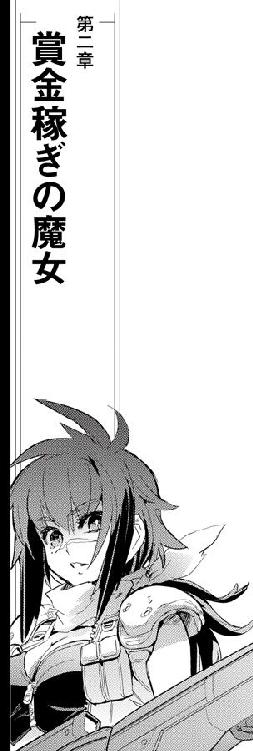

| ミニスカ宇宙海賊 08 紫紺の戦魔女 | |
| 笹本祐一 | |
| 朝日新聞出版 (2012) | |
イラスト／松本規之
カバーデザイン／シマダヒデアキ（ローカル・サポート・デパートメント）
古い美術館の回廊に人影はなかった。展示物にほとんどダメージを与えない特殊照明に、古い絵が浮かび上がるように照らし出されている。
いつもどおり先客がいるかどうか確認してから、グリューエルは展示回廊に足を踏み入れた。銀河帝国が成立する以前、歴史上は暗黒紀と呼ばれる古い時代にさまざまな技法で描かれた材質もモチーフも多様な絵画が、場所によっては重なり合うような密度で並んでいる。
「うわあ」
美術館や博物館は、古くなればなるほど展示場所の確保が問題になる。セレニティ王宮がある青の星、青い姉の王立美術館もその例に漏れず大量の収蔵物の展示に頭を悩ませており、無数の展示室の中には誰も見たことがない忘れられたものもあるという。
暗黒紀、具象、人物画に絞ったつもりだったのに、永遠に続くように見える暗い回廊の両側には壁を形作るように無数の絵が飾られていた。小さな絵は手前に、大きな絵は奥に宙に浮くように展示されていて、なおかつ遠くからも近くからも見ることができるように回廊には充分な幅がある。
足もとは古い構造部らしく木質に似せた恒久材料の床面パネルが延々と続いているが、壁も天井も闇に沈んで見えない。ただ、彩り豊かな絵画だけが、果てしなく続くような回廊に並んでいる。
一枚ずつゆっくり見ていたら時間がいくらあっても足りない。意を決して、グリューエルは行き止まりの見えない展示回廊を足早に歩きはじめた。左右に重なり合う古い絵画に目をやりながら、観賞するというよりも通り抜けることを目的に歩を進める。
古典肖像画館という名前ではあるが、展示されている絵画は単なる肖像画には留まらなかった。初期文明のデフォルメされた、遠近法も確立されていない時代の古い神々、神話や伝説あるいは歴史上の場面を描いたもの、神殿から持ってきたようなレリーフや岩壁ごと切り取ってきたような壁画がある。木板や布、紙、金属板その他ありとあらゆる人のまわりにあった素材に、思いつく限りの材料を絵具に使って描かれた二次元絵画が、無限とも思える回廊の両側に続いている。
展示を担当した学芸員は、それほど厳密に歴史的、技術的な分類を行う気はなかったようである。絵画は、モチーフとなっている人物が生きていた時代の技術水準をおおまかに区分して並べられているように見えた。石器文明、金属文明、前産業革命、炭化水素つまり石炭や石油などを使うようになった大規模産業文明までの絵画が展示の中心であり、電子技術が使われるようになってからの絵画はあまり見当たらない。
セレニティ王立美術館に収蔵されている美術品は、セレニティ及び関わりがあった星や文明圏から生み出されたものが主である。しかし、ここ髑髏星の漂流美術館の収蔵品は古い自由貿易港らしく銀河の全域から集まっているらしい。展示されている絵画には小さな解説板が添えられていて、タイトルと作者や作成年代、場所などのデータが銀河標準語で簡単に表示されている。セレニティの王族は銀河の星々や歴史に関しては幼少時より英才教育を受けているが、グリューエルが初めて見るような名前も多い。
「きっと、今は無くなってしまった星も種族も多いのでしょうね」
視線を振るついでに目に入る星や国の名前を読み取りながら、グリューエルはつぶやいた。ほとんどの絵が数百年以上も昔に描かれたもので、ものによっては千年、万年単位も古い時代が記されているものもある。
家族が食卓を囲んでいる集合画、古い港の桟橋の船乗りや商人たちの群像画など大きな絵もある。バストショットの一人しか描かれていない肖像画も、横顔だけの小さな絵も飾られている。
人と会う時のように一人ひとりの顔を見ながら、グリューエルは回廊を歩き続けた。左右に目を配りながら、立体展示されている左右の絵画に近づいたり離れたりしながら歩を止めない。
横を向いて、グリューエルは足を止めた。
閉鎖系の中継ステーションである髑髏星は、他のほとんどのステーションと同様に銀河標準時の二四時間体制で動いている。人工的な昼夜を作らないステーションでは、港も公共交通機関も商業施設も二四時間休むことなく動き続ける。
海賊島の別名を持つ髑髏星に長い年月の間に持ち込まれ、溜め込まれた古今の文物を公開している美術館、博物館や図書館も例外ではない。
美術工芸品を主要な展示物とする漂流美術館もまた眠らない。全館でもっとも古い展示物は表面の岩石ごと飾られている原始時代の壁画で、発掘された星は老齢化した恒星に呑まれて今はないという。
今日は海明星に帰るというその朝、早くに目を覚ましたグリューエルは、投宿しているパレス・ホテルの近所の美術博物施設を部屋備え付けの情報システムで検索してみた。
ホテル街に隣接する歩いていける範囲に、漂流美術館の古典肖像画館があった。
グリューエルは、部屋の情報システムで茉莉香とクーリエの部屋の様子を確認してみた。二人とも在室。茉莉香に連絡を取ろうかと思ったグリューエルは、現在の時間を確認して思いとどまった。いつ寝ているのかよくわからないクーリエはともかく、茉莉香は間違いなく寝入っているはずである。
「起こしちゃったら、申し訳ありませんわね」
グリューエルは、部屋に用意されていた寝巻きから手際よく白凰女学院の制服に着替えて部屋を出た。古典肖像画館はパレス・ホテルが入っているのと同じブロックにある。開館時間も閉館時間も気にしなくて済む美術館なら、ちょっとだけ覗いても茉莉香が起き出してくるまでには帰ってこられるはずだった。
「お嬢さん、何かお探しですか？」
声を掛けられる一瞬前に、グリューエルは振り向いた。
「あら」
作業服の上からぶかぶかのジャンパーを羽織ったひょろっとした男の子が、グリューエルの後ろに立っていた。グリューエルは社交用の笑みを浮かべた。
「いえ、探しものは見つかりました」
笑顔のまま、男の子の顔を見直す。
「何か御用ですか？」
「あ、いえ、あの、その......」
グリューエルの笑顔に射竦められたようにちょっと後退ってから、男の子は意を決したように切り出した。
「ええと、すいません、事情があるんですが、理由は言えないので一緒に来て下さい」
「はい？」
グリューエルは首を傾げて男の子の顔を見直した。背丈は小柄なグリューエルよりひょろっと高いが、年齢はあまり変わらない。大きなジャンパーのポケットに突っ込んだままの左手が何かを握ってグリューエルに向けている。
武器あるいはそれに類するものを向けられていると判断して、グリューエルは展示回廊を見廻した。見通しの利く限り、他の人影は見えない。
注意書きとクーリエに聞いた説明によれば、展示室は収蔵品を守るために価値に見合う警備体制を持っている。対人レーダーやスキャナーが隈なく張り巡らされ、エネルギー兵器はチャージしただけでも害意ありと見なされ、以後の生命の保証はない。
男の子がポケットの中に握っているものは、武器だとすればまだチャージされていないのだろう。そこまでほとんど一瞬に考えて、グリューエルは言った。
「わかりました」
「え？」
男の子は思わず訊き直した。グリューエルはすべて承知しているようにゆっくりうなずいてみせた。
「御一緒しましょう」
グリューエルは、展示回廊を見廻して、男の子に目を戻した。
「どちらに向かえばよろしいですか？」
「グリューエルが、行方不明？」
眉をひそめて、茉莉香はクーリエに訊き直した。
「部屋にいません。連絡も取れません」
いつもどおりボリューム勝負な朝食をぱくつく片手間にクーリエは答えた。
「えーと」
取れる方策を考えて、茉莉香は人差し指を頬に当てて上を見た。
「トランシーバー持ってないの？」
「部屋にはありませんでしたが、最悪の場合を考えて呼び出しはしてません」
茉莉香がグリューエルに渡したトランシーバーは、軍用の標準品である。オデットII世でも弁天丸でも使えるように調整はしてあるから、よほど遠距離に離れたか、電波遮断環境にでもない限りは通信途絶の心配はない。
「最悪の場合ねえ」
茉莉香は考え込んだ。トランシーバーにはさまざまなモードがある。通常の通信待機の他に、現在位置を発信するモードもあるが、メインスイッチが切られていれば強制着信で呼び掛けない限り反応はない。
「てことは、トランシーバーの現在位置も取れないわけね？」
「そういう場合は行方不明とは言いません」
茉莉香はさらに考え込んだ。強制モードで呼び出せばトランシーバーは着信を伝えるが、グリューエルが応答に出られない状況にあることは十分考えられる。
「......何やってるんだろあの子？」
「考えて下さい」
いつもどおり答えて、クーリエはフレッシュジュースのジョッキをぐおーっと呷った。クーリエが考える余裕があるというからには、グリューエルはそれほどせっぱ詰まった状況にはないと判断してるのだろう。
「心配してないでしょう？」
「心配なんて、するだけ無駄です」
どんぶりのヨーグルトをつつきながら、クーリエは無愛想に答えた。
「心配事があるなら、そのためにできることをやる方がずっと建設的です。できることが何もないなら、余計なことは考えるべきじゃありません」
「そりゃ、そうできればいいとは思ってるけどさ」
茉莉香は、目の前に積まれたスコーンに手を出した。できるだけ刺激の少なさそうな淡色系のクリームを選んで載せる。
「そうじゃなくて、クーリエったらグリューエルが行方不明になったってのに心配してないでしょ」
「船長だって、あの子がどうにかなるとか心配してないんじゃないですか？」
「だって、グリューエルの方があたしよりよっぽどしっかりしてるし、適応能力高いし、踏んでる場数だって多いし」
茉莉香の声が尻すぼみに小さくなる。
「......なんであたしが船長なんかやってるんだろう」
「私掠船免状の規定がそうなってるからです。個人の能力は、この際あんまり関係ありません」
「はっきり言わないでよ」
「どうせ、海賊船なんて船長一人で動くものじゃありません。船長はどっかり船長席に座っていてくれれば、あとはわたしたち乗組員でなんとかします」
「そっか」
茉莉香はさらに難しい顔で考え込んだ。
「グリューエルったら、全部一人でやらなきゃならないから、ずっと大変なんだ」
最後のサンドイッチに手を出しながら、クーリエは微笑んだ。茉莉香は気づかずに続けた。
「連絡も取れずに行方不明ってことは、間違いなくそういうことになってるってことよねえ」
茉莉香は、自然光にあふれるナチュラルフーズレストランを見廻した。
「探せる？」
「港にいれば」
髑髏星の港のモニターカメラはネットワークで結ばれ、しかるべき手順を踏めば記録にもアクセス可能である。
「まだ見つかってないの？」
クーリエが探していないはずがない。
「ここのモニターシステムは個人の特徴まで見分けられるような精密なものじゃありません。グリューエルがいつもの格好で顔出しで歩いてるなら見つけるのは簡単ですけど、ちょっと変装したり、あるいはトランクケースやずだ袋に詰め込まれたりしたらもうわかりません」
どんぶり一杯のヨーグルトを頬張りながら、クーリエは答えた。
「どっちみち、髑髏星の港のモニターカメラなんか一人でチェックしきれるもんじゃありません。パターン認識でグリューエルが見つかればチェックするように仕掛けてはきましたけれど」
クーリエは、どんぶりに差したスプーンを止めた。
「どこまで見つけてくれるもんだか。どうせ見つかりすぎか見つけてないかのどっちかでしょうから、今から部屋に戻るのが憂鬱です」
「なんだ」
茉莉香はくすっと笑った。
「クーリエだって心配してるんじゃない」
「そうです。心配なんて無駄です」
茉莉香の顔を見もせずにクーリエは答えた。
「だから、今わたしたちがやらなきゃならないのは、これからどうするかって決めることです。どうしますか船長？」
「どうしますかって、ええと......」
わかっている状況を頭の中で整理してから、茉莉香は口を開いた。
「グリューエルがメッセージもなしに行方不明になってるってことは、少なくとも今は連絡を取れない状況にあるってことでしょう。このまんまほっといても、グリューエルのことだからなんとかするとは思うけど」
「そうですか？」
クーリエはスプーンを咥えたまま不思議そうな顔で茉莉香を見た。
「わたしゃ、彼女を連絡が取れないような状況に追い込んだ人たちがいるとすれば、その人たちの方が心配ですけどね」
クーリエの顔を見直して、茉莉香は先の先まで考えてはっと気づいた。
「ああ、確かに、おおごとにならないうちになんとかしないと、スキャンダルみたいなやばいことになっちゃうかも......」
「知らんぷりして帰っちゃうっていう手もありますよ？」
「船長が乗組員見捨てて帰れるわけないじゃない！ クーリエならグリューエルここに置いて帰れるっていうの!?」
返事はひと呼吸分遅れた。
「無理ですね」
「まあとにかく、グリューエル探してみましょ」
茉莉香は、フレッシュジュースに手を伸ばした。
「それから、こっちで何かできることがあるかどうか状況分析。あんまり芸のない方針で申し訳ないけど、こんな感じでいいかしら？」
「了解です」
クーリエは、通りすがりのサービスロボットを呼び止めた。寄ってきたロボットのタッチパネルに触れて、早いタッチで注文を叩き込む。
「ルームサービス？ そんなにいっぱい注文するの？」
「長丁場になるかも知れませんから。お腹にものが入ってないと、頭もうまく働いてくれませんし」
「ああ、なるほど」
茉莉香は、弁天丸のブリッジにいる普段のクーリエの仕事ぶりを思い出した。
「フロントに訊いたら、何時頃出ていったかくらい教えてくれるかしら？」
思いつきを口にしてから、タッチパネルに片手を置いたまま自分を見ているクーリエの視線に気づく。
「その手がありましたね」
「えええー!?」
「すっかり忘れてました。ここはパレス・ホテルでしたね」
クーリエは、どんぶりのヨーグルトを勢いよくかき込みはじめた。
「フロントで訊いてみましょう。キーの移動時間と現在位置くらい確認できるはずだわ」
髑髏星のパレス・ホテルの部屋の鍵は、昔ながらのカードキーが使われている。生体認証など、キーを不要とするシステムもあるが、個人情報を登録しなければならないため客層によっては不評であることが多い。
フロントのコンシェルジュは、グリューエルがロビーから外に出ていったのを覚えていた。パレス・ホテルのルームキーには一通りの電子認証システムが組み込まれており、電波が届くところなら現在位置の確認もできる。
グリューエルは、茉莉香が目を覚ます一時間以上も前にホテルから出ていた。同じブロックにある漂流美術館の分館のひとつ、古典肖像画館に入場したところまでは追跡ができている。漂流美術館は厳重なセキュリティシステムに守られているから、ルームキーの微弱な電波はカットされて感知できない。
再びルームキーの反応が感知されるまで数十分。古典肖像画館から出てきたルームキーはその後、髑髏の顎の方向に移動し、受信圏を外れた。
「......追いかけられない？」
「無理ですね」
コンシェルジュにコピーしてもらった追跡データを部屋の情報システムで再構成しながら、クーリエは答えた。
「髑髏の口から下は、工業地区。閉鎖型ドックと工場とプラントと部品屋とあと集積場かな」
クーリエは、ルームキーの追跡データを髑髏星の立体構造に重ねてみせた。
「両眼の港ほどしっかりしたもんじゃありませんけど、規模だけなら口まわりの港の方が大きいんです。大型船をまるごと収容して分解整備とか、新造できるドックもありますし、研究施設らしいのや博物館みたいのもあります。怪しげな電磁波も放射線も飛び交ってるし、もちろんそれを遮断する特殊素材や合金も多数。モニターカメラも港湾地区ほどには充実してません。こっちに入り込んだのなら、ルームキーの弱い電波じゃ追いかけられません」
クーリエは、顎部の立体構造をあちこち拡大したりスクロールさせたりしている。
「トランシーバーの呼び出しなら、通ると思いますけど」
「何しにこんなところ行ったんだろ？」
クーリエは、手を止めて茉莉香の顔を見た。ぐるぐる眼鏡越しの視線に、茉莉香はクーリエの言いたいことに気づいた。
「じゃなくて、連れてかれた？」
「わたしなら、状況からしてそう判断します」
クーリエは、さらに細かい立体構造のデータを求めてデータの検索を開始した。
「グリューエルが美術館好きなのはご存知のとおりですから、近所に美術館を見つけて一人で出かけていって、それでどこかに連れていかれた、みたいな展開じゃないかと」
「グリューエルが好きなのは美術館だけじゃないけどさあ」
茉莉香は髑髏星の下顎の工業地区の立体構造を見て溜息をついた。
「簡単に連れてかれるようなタイプでもないくせに、いったいどこに行ったんだろ」
「ここは、どの辺りになるのですか？」
「海賊島のダウンタウンの、もっと下」
無人運行される乗り合いバスが、乗り継ぐたびに旧式になっていった。モーターの焼ける匂いのする最後のバスを降りたグリューエルは、興味深げに周囲を見廻した。統一規格で建造される巨大ステーションらしく動脈となる通路のサイズは大きいが、構造を支えるビームは太いし照明パネルも劣化してところどころ消えているものもある。
「下顎の港はここより新しいけど、上顎は外に向いている港じゃ一番古いところだから」
例外はあるものの、古いステーションや巨大都市は外側に増改築されて膨脹していく。外側ほど新しい区画になり、内側には古い区画がそのまま残されて再利用されたり、あるいはまるごとリフォームされたりする。
エネルギー区画や居住区は外側に別なブロックが増設されたりしても交通の便や配線配管さえしっかりしていればあまり問題がないが、港湾地区は宇宙空間に隣接する一番外側になければ機能が果たせない。ほとんどの宇宙港はブロック構造で展開されるようになっているから、増築の際はまるごと外側に移設され、増加した有効面積に桟橋が追加されたりする。
髑髏星は、最初から髑髏の形に作られたわけではない。原型となった機動要塞は、内容積を最大にしつつ表面積を最小にするという基本に従って球形に建造された。当時の基準でも強力な要塞砲を装備した巨大な機動要塞は、結局本格的な実戦を経験することなく商業港として増設されていき、いつの頃からかオケアノスに持ち込まれて自由貿易港となった。
上顎の工業地帯は、現在表面に出ている髑髏星の港湾地区としてもっとも古い構造である。どこから持ってきたのか巨大な閉鎖式のドックや、どうやってか他の宇宙都市から持ってきたらしい工業ブロックがろくな準備や考慮もなしに接続され、構造材で補強され、さらにその外側に臨時区画やひどい時には規格品のコンテナが集積所代わりに固定されたりする。宇宙船の建造整備補修から、まともな場所ではできないような怪しげな改造まで請け負う業者が集まり、研究開発や現物合わせの加工を行う工場や施設が増加し、もっとも無秩序に発展した区画である。
髑髏の両目に当たる部分に閉鎖系の宇宙港が新設される以前の髑髏星は、デフォルメされたタコのようなスタイルだったという。無計画に開発された上顎部分が貿易港としての機能を両眼の港に移していくに従って頬や頭部の区画も増築されていき、髑髏星は下顎のない髑髏の形を整えていった。
現在の髑髏星は、下顎にあたる部分が大きく増設されている。上顎の工業地帯は、乱雑を極めた後先考えない増築により秩序だった発展がほとんど不可能になった。しかし、港湾地区への工場区画増設要望は衰えず、仕方なく旧区画の構造に増加接続する形で大規模な下顎区画が作られた。
上顎増設時の乱雑ぶりの反省から、下顎は将来的な発展余地を多面的に考慮されて建設された。間に合わせの雑な構造で形成された上顎の工業地帯に比べて容積も大きく、エネルギーを含むライフラインの供給系も潤沢に用意された下顎はあっという間に工業地帯の中核になり、上顎には古い区画と設備が未整備なまま残されることになった。
不定期に場所を変える髑髏星の一部だから、区画としての構造強度は充分以上である。しかし、宇宙ステーションとしての環境は最悪で、必要最低限の整備も場所によっては行われておらず、閉鎖区域や幽霊区画もあるらしい。
ホテルの情報システムで収集したそんな予備知識を反芻しながら、グリューエルはさらに訊いてみた。
「こちらにお住まいですか？」
「もっと外側だけど」
ぶっきらぼうな言葉遣いながら、男の子はグリューエルの質問には答えている。
「大丈夫、配管も配線も生きてるし、少しくらい漏れてるところがあってもすぐに補充できるから」
大型のトレーラーや旧式なバスが行き交うメインシャフトから、雑多な店が折り重なるように詰まっている場末の商店街に入る。低い天井に点いている太陽灯は経年劣化で赤茶け、生活用品や食料品店、食堂が目立つ路地に電気街ほどの賑わいはない。また、行き交う人の服装や装備も電気街ほどバラエティに富んではいない。
古い植民星のステーション内部のような佇まいに、グリューエルは地元住人が多い区画だと判断した。
グリューエルが離れないように先を歩いていた男の子が、突然身を低くした。グリューエルの手を掴んで、すぐ横の古道具屋に駆け込む。
「どうしたのですか？」
「しっ！ 付いてきて」
「よう、リシャールじゃねえか」
台所用品と軍装品を並べて骨董品や古着と一緒に売っているような在庫過多の店内に駆け込むと同時に、薄暗い店内の奥から声が掛かった。
「またなんか悪さしたのか？」
「まだなんにもしてない！」
リシャールと呼ばれた男の子は、歯を剥き出して答えた。
「民生委員の奴らがいたんだ、抜け道貸して、シャホ爺！」
「ほお、こりゃまたべっぴんさんと一緒じゃな」
シャホと呼ばれた機械装具だらけの老人は、かすかなモーターの音とともに店奥のカウンターからゆらりと立ち上がった。ろくな照明もない店内の配置を知っているように雑多な在庫の間を器用に駆け抜けたリシャールは、立ち上がった店主の横をするりと抜けた。
「こっち！」
引っ張られながら、グリューエルは店主の顔を見上げた。クラシカルなセンサーアイを取り付けた老人の腕が、らしからぬ素早さで動いてグリューエルの前に小さなカードを差し出す。空いている方の手でカードを受け取ったグリューエルは、手を引かれるままにリシャールに続いてカウンターの後ろの古着の在庫が下げられているクローゼットの中に入った。焼けた繊維の匂いやカビ臭さと洗剤の香料が混じった古着の密林を引かれた手だけを頼りに抜け、壁にしか見えなかったドアを通り、倉庫のように雑貨が積み上げられた狭い通路に出る。
「こっちだ」
点々と点検用の非常灯が点いているだけの暗い通路を、リシャールはどこに何があるのか心得ているように足早に行く。いくつかの十字路を抜け、梯子や階段を上り下りして、突然視界が開けた。
「え？」
少し先で、手を離したリシャールが待っている。グリューエルは辺りを見廻した。
巨大な倉庫か工場らしい。何もなければ大型の輸送船でもそのまま収容できそうな空間に、巨大な工作機械からコンテナから残骸だけのトラックとか剥き出しの小型エンジンとかいろいろ接続されたままの小型動力炉とかエネルギーパックが山を成していたり、大小のスクラップ部品が雑然と積み上げられている。
経年劣化のおかげですっかり夕焼けのような色に変色した照明の下に照らし出されているがらくたの山を見廻してから、グリューエルはリシャールに目を戻した。
「先ほどの方は？」
「シャホ爺？」
リシャールは、大小の部品や破片が散らばる床面を歩き出した。滑り止めの凸凹加工が施された床面も場所によって材質が違う。
「鉄屑横丁でずっと昔から古道具屋やってる。いつからやってるか本人も覚えてないって」
機械化が進んでいるらしい店主のセンサーアイ付きの容貌を思い出して、グリューエルは左手のカードを見た。アンティーク＆ジャンク／シャッフルの屋号と住所及び連絡先が印刷されている。
「もう一人、いえ二人連れの方は？」
尖った部品を踏まないように歩きながら、グリューエルはスカートのポケットにカードを入れた。リシャールは驚いたように振り向いた。
「どうしてわかったの!?」
「あまり目付きのよろしくない黒いスーツの二人連れが、あとからシャホさんの店に駆け込んできましたから」
溜息をついて、リシャールは宇宙規格のコンテナに橋のように斜めに渡されているガントリークレーンのアームに飛び上がった。
「ここから先は上を行こう。そんな歩き方じゃ靴を汚しちゃう」
差し出された手を、グリューエルは取った。
「ありがとうございます、リシャールさん」
アームの上面に取り付けられているキャットウォークにグリューエルを上げて、リシャールはじっと顔を見た。
「そうか、シャホ爺に名前呼ばれたんだっけ」
リシャールは手を離した。グリューエルは軽く腰を折った。
「グリューエルです」
再び顔を上げたグリューエルの頭のてっぺんから爪先まで見廻して、リシャールはもう一度溜息をついてキャットウォークから飛び降りた。
「ごめん、こんなとこまで連れてきたけど、ここまででいいや」
リシャールは、キャットウォークの上のグリューエルに手を差し出した。グリューエルは不思議そうにリシャールを見下ろした。
「何か事情があってここまで連れてきて下さったのではないのですか？」
「連れてきたんじゃない」
リシャールは気まずそうに目を逸らした。
「誘拐しようとしたんだ。ごめんなさい」
「なぜですか？」
素直に訊いたグリューエルの顔を上目遣いに見上げた。
「あんなところで、美術館で、きれいな格好してたから、身代金獲れれば金になるって考えたんだ。だけどもういいです、やめます。元のところまで送ります」
「せっかく素直に誘拐されて差し上げたのに」
キャットウォークの上に立ったまま、グリューエルは楽しそうに後ろに手を組んだ。
「ここまで来て、お終いですか？」
「ゆ、誘拐されて差し上げたあ？」
グリューエルはうなずいた。
「思い詰めた顔をしておいででしたから、きっと抜き差しならぬ事情があるのだと思っていました。もしよければ、お話を聞かせていただけませんか？」
「なんで!?」
リシャールは呆れ声を上げた。
「誘拐されるってわかってるのに付いてきたの？ それでなんであんなに楽しそうだったの!?」
「あら、楽しそうに見えましたかしら？」
グリューエルはうふふと笑った。
「ええ、たぶん一人きりでは来ることがなかったであろう場所を巡る機会をいただけたんですもの。知らない街を廻るのは好きです」
「だって、誘拐されてるって知ってたのに？」
「せっかく誘拐した金蔓に逃げられたら、お困りになるだろうなと思いました」
「お困りになるって......」
誘拐犯人にまで敬語を使う金蔓の笑顔を正面から見ていられずに、リシャールはグリューエルから目を逸らした。
「やっぱり目的はお金ですか？」
グリューエルはリシャールを正面から見つめている。リシャールはあさっての方向を向いたままぶっきらぼうに答えた。
「そうだよ」
「それだけではないのでしょう？」
リシャールはちらりとグリューエルを見上げた。夕焼けのようなしょぼくれた照明だけのジャンクヤードが、彼女のまわりだけ輝いているように見える。
「なんでそう思うの？」
「お金は、問題解決の手段のひとつでしかありません。解決を先延ばしにする手段でしかないことも多いし、かえって問題を悪化させることもあります。あなたは、わたくしを連れて歩きながらいろんなことを考えているように見えました。ええと、悩み事の相が出てるって、こういう時に使う言葉でいいのかしら？」
「難しい顔してるってよく言われるけど」
しかめっ面のまま顔を振って、リシャールは再びガントリーアームのキャットウォークに上がった。片方に細い手すりが付いているだけの点検用のキャットウォークに立つグリューエルの横をするりと抜けて、先を歩き出す。
「誘拐は手間がかかるばっかりで割に合わないからやるもんじゃないって、姉ちゃんの言ってたとおりだ」
「本当に悪い人は、ひと目で悪いってわかることなんかしないものです」
ガントリーアーム上の整備用キャットウォークを踏み外さないように手すりに手を掛けたまま、グリューエルは先を行くリシャールを追う。
「本当に悪い人は、誰も知らないところで誰も気づないうちに悪事を行います」
「姉ちゃんも同じこと言ってた」
ガントリークレーンの先端は、宇宙規格のコンテナに掛かっていた。放射線や高熱に灼かれてすっかり黒ずんだ共通規格のコンテナの上は、床面よりもよほど障害物が少ない。
「だから、悪い奴らを相手にするには何より頭が大事だって。悪い奴らよりずる賢く立ち廻らないと、勝てないって」
「よいお姉さまですね」
グリューエルは、制服のジャケットの下に持ってきたトランシーバーに手を触れた。コンテナの上を歩くリシャールに声を掛ける。
「申し訳ありませんが、友人に連絡を取ってもいいですか？」
隣のコンテナに上がったリシャールがびくっとしたように振り向いた。グリューエルは笑顔のまま取り出したトランシーバーをリシャールに示した。メインスイッチも入れられずディスプレイになんの表示もされていないトランシーバーを見て、リシャールはグリューエルに目を戻した。
「そんなの持ってて、こっそり連絡取らなかったの!?」
「誘拐されて連行されている身の上でしたから」
「だから、もう誘拐はやめたってば」
リシャールは、大小さまざまな機械部品やスクラップが積み上げられているジャンクヤードを見廻した。
「いいけど、たぶん、どこに連絡しても聞かれるよ？」
「そんなに簡単に聞き分けられるようなトランシーバーじゃありません」
グリューエルは、トランシーバーのメインスイッチを入れた。
サイドボードに置きっ放しだったトランシーバーが、突然さえずるような呼び出し音を鳴らした。クーリエの横から情報システムのディスプレイを覗き込んでいた茉莉香は反射的にベッドに振り向いた。
「来た!?」
「出て下さい」
軍用の秘話回線付きトランシーバーだから、固有番号を知っている基体からでないと呼び出せない。茉莉香のトランシーバーの番号を知っているのは、このステーションにはグリューエル以外にはナッシュしかいないはずである。クーリエに言われるまでもなく、茉莉香はトランシーバーに取り付いた。
ディスプレイは、グリューエルからの呼び出しを告げていた。茉莉香は着信ロックを解除するのももどかしく無線に出た。
「こちらグリューエルです、聞こえますか？」
「こちら茉莉香！」
いつもどおりのグリューエルの声を聞いて、茉莉香は力強く応答した。
「現在位置、パレス・ホテル、グリューエルったらいったいどこで何やってるのよ!?」
「ええと、こちらの現在位置は、ですね」
グリューエルはスカートのポケットから取り出したアンティーク＆ジャンク／シャッフルの店の住所を読み上げた。
「左上の親知らず34区、赤錆鉄屑横丁、３５６８の２２４３の９７５１っていうところの近くだと思います」
「わかる？」
聞いた住所を間違えないように繰り返して、茉莉香は情報システムに取り付いたままのクーリエに訊いた。
「最後の三つは座標ですね。この辺りです」
トランシーバー片手にベッドから戻ってきた茉莉香は、情報システムに立体表示された地図を覗き込んだ。髑髏の正面に二つ並んだ港からだいぶ廻り込んで降りた乱杭歯の上顎、その外れ近くにでたらめに継ぎ足されたような入り組んだブロック構造の外れで赤い輝点が点滅している。
「トランシーバーの現在位置表示、使えないの？」
茉莉香は、相手の現在位置を求めてトランシーバーのディスプレイを見た。通信相手の現在位置は通信データに含まれていないことを示すように座標データは空白のままである。
「トランシーバーの中にここの構造図とか基準になる灯台でも登録してあればちっとは表示されるんでしょうけれど、まるっきり知らない場所ですからねえ。何話してるのかわからない通信波を無条件に流してくれるアンテナ網があるだけ御の字でしょう」
金属壁に囲まれ、エネルギー伝導管やコードにファイバーがのたくるステーション内では、持ち歩けるようなトランシーバーの低出力では近距離でも通らないことが多い。髑髏星では、表面からはるかに潜った奥のブロックでもコミュニケーションが取れるように意図的に伝導性の材質が主要構造の一部に使われ、電波の通りをよくしている。
「さすが、貿易港」
茉莉香はつぶやいた。商業港では、連絡が取れなくて重大な損失をもたらすことも珍しくない。
「わざわざ話ができるようにしてあるってことは、どっかの誰かが取れる限りすべての通信に聞き耳立ててるってことです」
クーリエはにべもない。茉莉香は苦笑いしてその結果を想像してみた。
「情報屋が、仕事に不自由しないでしょうね」
「あ、さっきの住所は最後に確認できた座標で、今はそれより外側のブロックに移動しています」
「空気とか大丈夫？」
茉莉香は心配そうに訊いた。
「地図で見ると、そろそろ環境保証のある安全区域から出ちゃうわよ？」
「大丈夫、今のところ息苦しくなったり変な匂いもしないし、重力も正常です」
グリューエルは辺りを見廻して答えた。
「出発までには間に合うように帰りますから、もしよろしければ荷物だけは持っていっていただけますか？」
「荷物？」
茉莉香はクーリエと顔を見合わせた。
「はい、すぐにでも出かけられるようにまとめてあります」
「グリューエル？」
茉莉香は、できるだけ落ち着いた声で呼び掛けた。
「あなた、いったい、どこで何をやっているの？」
答えが返ってくるまでにひと呼吸分の間が空いた。
「わたくし、誘拐されてました」
「何いい!?」
スピーカーから流れ出す声が裏返った。笑いたいのを我慢して、グリューエルは説明を重ねた。
「心配する必要はありません。誘拐犯の方とはもう話がついています」
誘拐犯って？ という顔で、リシャールが自分の鼻を指している。
「事情がおありらしいので、もしできることがあればお手伝いして帰ります」
「手伝うって、あなた誘拐された身の上で何言ってるのよ!?」
「もう人質ではありません」
トランシーバー片手のまま、グリューエルはリシャールに笑いかけた。
「お友だちです」
自分の顔を指したまま、リシャールは目をぱちくりさせている。
「あー、もおお！」
茉莉香の笑い声が先にトランシーバーから聞こえた。
「わかったわよ、荷物は港に運んどく。遅れるとか、手伝いがいる時はちゃんと連絡しなさいよ？」
「了解です。頼りにさせていただきます。以上で通信を終えてよろしいでしょうか？」
「無駄に帯域使ってると因縁つけられるかも知れないから、港湾地区以外じゃトランシーバーは切っておいた方がいいって。こっちはいつでも構わないから、危ないと思ったらすぐに助け呼ぶのよ」
「わかりました。以後は定時連絡を守るように心がけます」
ディスプレイを正面から見直して、グリューエルはトランシーバーを切った。リシャールは、小型とはいえ複雑な軍用トランシーバーで連絡を取ってジャケットの内側に戻した少女を目を丸くして見ていた。
「お待たせしました」
グリューエルはリシャールにうなずいてみせた。
「行きましょう」
きっちり間を詰めて置かれているコンテナの屋根を二つほど過ぎてから、リシャールはさらに上に積まれているコンテナの前に立った。見上げるように大きな観音開きの貨物ドアの下の小さな点検用ハッチから中に入ると、あとはもう迷路だった。
鉄屑横丁からの裏道は、曲がりなりにも居住区画の中だった。コンテナの中から先、リシャールが選んだ道は、いくつかの気密ドアを抜け、忘れられたようなチューブや点検口、一部分だけ残っている高速鉄道の軌道を通るようなルートだった。
「大丈夫ですの？」
細い隙間の通路の先の気密ハッチを開いたとたんに、突風が背後から開いた空間に吹き込む。風はすぐに止むから、こちらの空気がいつまでも向こう側に流れ込んでいるわけではない。気圧差はそれほどでもないのだろうが、グリューエルは心配そうな面持ちで申し訳程度にぽつんぽつんと点検灯が点いているだけの暗い通路を覗き込んだ。
「大丈夫、この辺りはまだ内側の区画だから、少しくらい気密が甘くてもいつまでも空気が抜けるようなことはしないから」
オデットII世でしか見たことがないような大きな丸いハンドル付きの旧式な気密ドアの向こう側に出たリシャールが、グリューエルが来るのを待つ。グリューエルは、硬化してひび割れだらけのパッキングを横目で見ながら、少なく見積ってもここ半世紀くらいはまともな用途に使われていなさそうなトンネルに足を踏み入れた。
断面がほぼ円形のトンネルは、大昔の鉄道らしい。壁と一体化しているガイドレールこそそのままだが、リニアモーターの超電導磁石が埋め込まれていたらしい穴が点々と続いている。
「重力がおかしくなってるところがあるから、気をつけて」
先を行くリシャールが言うと同時に転びかけたグリューエルは抱きとめられた。
「ありがとうございます」
「気をつけてね。この辺り、重力区画と無重力区画が入り混じってて、重力の方向もばらばらだから」
よく練られた開発計画により建設された宇宙都市なら、エネルギーの有効利用という観点からも人工重力の作動方向は揃えられる。無秩序に増築されたステーションや基地などでは、方向や強さをいくらでも調整制御できるのを幸いとばかり、それぞれの区画、ブロックに都合のいい人工重力が設定されていることが多い。
作動方向が違うブロックの境目、あるいは無重力区画との境界では念入りな調整が必要になる。しかし、隣接する区画で重力がどの方向に働いているのかいないのかも考えずに無秩序に増設されたステーションでは、境界面の人工重力が複雑に絡み合って増幅したり減衰したりする。
「かなり、外の方ですのね？」
グリューエルは、今度は下向きの点検用ハッチを開きにかかったリシャールに訊いてみた。
「港の外れだから」
リシャールは、梯子が作り付けられた点検用の縦坑に身軽に滑り込んだ。
「この先、無重力区画だけど、大丈夫？」
普段この辺りで活動しているリシャールに目立った身体異常が認められないから、放射線や有害物質があるにしても気にするほどではないのだろう。
「無重力区画を通るのですか？」
心配そうに、グリューエルは訊いた。
「大丈夫だよ、重力がないのはほんの一部分だけだから」
「いえ」
グリューエルは笑みを浮かべてリシャールの顔を見た。
「こんなに手の入っていない、それもステーションの外側で、ちゃんと暮らせているのだろうかと考えていました」
「ここは、エネルギーだけはタダだからね」
リシャールは下手くそなウィンクをしてみせた。
「よっぽど下手打たない限り、不自由はないよ」
「そうですか」
宇宙都市の居住環境は、外側に行くほど厳しくなる。高真空、放射線防護もない宇宙空間から、いくつもの隔壁で隔てられた内側に行けば行くほど、安全性も高まる。気密壁一枚しか隔てるもののない最外縁部は、港をはじめとする直接宇宙空間に対面していた方が都合がいい仕事に分配され、居住区が置かれることはほとんどない。
狭い交差をひとつ曲がるごとに、体感する重力が弱まる。最後の気密ハッチを抜けたら、その先の通路は呼吸可能な大気で満たされているものの完全な無重力区画になっていた。
「やっぱりだ」
優雅に無重量空間を飛ぶグリューエルの身のこなしに、先を飛ぶリシャールは振り向いて笑った。
「そんなに簡単に飛べるなんて、やっぱり誘拐はあきらめて正解だ」
「なぜですか？」
グリューエルは壁面にふわりと触れて方向転換した。
「きれいな顔して美術館で絵なんか見てたから、てっきり地面のある星しか知らない、いいところのお嬢さまだと思ったのに、浮かぶのにそんなに慣れてるなんて」
「練習しましたから」
グリューエルは澄まして答えた。
「こっちだよ、付いてきて」
リシャールはさらに細い支坑に滑り込んだ。太い伝導管やさまざまな種類のケーブル、ファイバーがろくな固定もなしに通っている狭い空間を、器用に抜けていく。
身体を縦にしないと抜けられないような狭い通路での移動は、すぐに手や足を掛けるられるだけ、広すぎる無重力空間よりも簡単である。しかし、ところどころに薄暗い非常灯が点いているだけの狭い通路を行くリシャールは、ほとんどどこにも触れずに最低限の身のこなしですいすいと狭い空間を抜けていく。あちこち触ったり蹴ったりするグリューエルの半分も接触していない。
「ここだ」
太かったり細かったりする点検坑との交差点を五つほども曲がってから、行き足を止めたリシャールはしーっとくちもとに指を立てた。束になってのたくっているケーブルに隠れているような薄汚れたアクセスパネルを開き、ぼろぼろの認証システムのディスプレイに触れる。ところどころ表示が消えているタッチディスプレイの数点を順にタッチすると、ぼやけたような点滅がはじまった。
リシャールは認証システムに口を近づけた。
「リシャールだ。開けて」
「髑髏の右眼に入っている海賊船の数は？」
「九つと半分」
「おかえりなさい」
怪しげな合い言葉とともに、伝導管の向こうの壁がごそっと沈み込んだ。点検坑より明るい光が漏れ出す。
手伝うように、リシャールは沈んだ壁を押し込んだ。ひび割れだらけの経年劣化した気密パッキングの向こうから、グリューエルより小さな女の子が顔を出した。
「あら？ お客さま？」
よく動く黒い大きな瞳がグリューエルを捉えて不審そうにリシャールに向けられた。
「はじめまして」
グリューエルは、リシャールの後ろから一礼した。
「グリューエルと申します」
「どこの人？」
「外の人だよ、ギャッピ」
リシャールに立ちふさがるように、女の子は薄く開いた気密ドアを押さえている。
「リシャール、あなたまさか」
「ああ、最初はそのつもりだったんだけど途中でやめた」
リシャールはあわてて両手を振った。
「きれいな格好してるだろ。美術館でぼーっとしてたんで行けるだろうと思ったんだけど、もう、全然駄目」
リシャールを睨みつけた瞳が、もう一度グリューエルを見た。
「ご心配なく」
グリューエルは笑いかけた。
「わたくしは、自分の意志でここに来ました。為すべきことが終わったら、帰ります」
しばらくグリューエルを見ていた瞳が、奥に引っ込んだ。薄く開いていた気密ハッチの内側でいくつかのロックを解除する機械音のあと、今度は大きく開く。
「なんでもかんでも拾ってくるんだから」
「拾ってきたんじゃねーってば」
リシャールは、大きく開いたドアの奥をグリューエルに指し示した。
「大宇宙の魔女号へようこそ。おれたちの船だ」
間に合わせの港湾ブロックに係留されたまま忘れられたような旧式な小型貨客船が、大宇宙の魔女号だという。閉鎖系の桟橋とそこに係留固定された小型貨客船は、周囲に浮きドックや工場ブロックが折り重なるように増設されて臨時の飯場兼工具置き場となり、さらに外側にブロックが増設されるにつれて使われなくなったらしい。
「なんか、斜めになってますか？」
点検坑の気密ハッチと大宇宙の魔女号をつなぐボーディングブリッジの中で、グリューエルは訊いた。
「最近、重力がうまく働いてくれないんだ」
きれいに片づけられて掃除はされているものの、低重力が斜めに働いているおかげで通路そのものが歪んでいるように感じられるボーディングブリッジを横歩きしながら、リシャールが説明した。
「大宇宙の魔女号の人工重力が調子悪いんで、他のブロックからの重力の影響でこんなになっちゃってる。大丈夫、船の中は今重力を切ってるから」
「無重力ですか」
グリューエルは眉をひそめた。ボーディングブリッジの最後のドアを、先を行くギャッピと呼ばれた女の子が開くと同時に、黄色い歓声が束になって飛び出してきた。
「にいちゃんおかえりー！」
気密ハッチの向こうから子供たちが塊になって飛んできた。さっと身を躱したギャッピの横を抜け、リシャールに飛びつく。
「部品見つかったー？」「無事だったー？」「怪我しなかったー？」
「無事だったよ」
リシャールは三人の子供を次々に受け止めた。
「こっちのおねーちゃん誰ー？」「だあれー？」
「お客さんだ。さあ、お兄ちゃんが出かけてる間にいい子にしてたかい？」
「してたよー」「ギャッピねえちゃんにきいてもだいじょーぶだよー」
「はい、それじゃああとで遊んであげるから、今は先に行って」
三人の子供をドアの向こうに軽く放って、リシャールは奥を示した。
「散らかってるけど、どうぞ」
「片づけたことなんかないくせに」
ギャッピの声を背中に聞きながら、グリューエルは宇宙船の外殻ハッチらしいドアを抜けた。
かつてのエアロックは玄関以上には整頓されていない。グリューエルは、ほとんどパッキングの残っていない内側の気密ドアがいざという時にどれくらい役目を果たせるだろうか考えながら内側ドアに入った。
中にいた何人もの子供の視線がグリューエルに集中した。笑みを浮かべて一礼してから、グリューエルは古い輸送船でかつて荷室に使われていたらしい空間を見廻した。
奥行きも幅も同じくらいある船倉がリビングルームになっている。重力が働いていたことを示すようにテーブルや椅子、棚や照明は上下を定めて固定されているらしいが、食料のパックや玩具らしいものが浮いて天井近くにいくつもあるダクトに吸い寄せられている。
「皆さん、ここで暮らしていらっしゃるのですか？」
社交用の笑みを浮かべたまま、グリューエルはこっそり訊いた。リシャールは簡単にうなずいた。
「そうだよ。空気も明かりもあって暖かい。ここなら、人買いや民生委員にも追い廻されずに済む」
「でも、重力が......」
グリューエルは、規格も照度も揃っていない照明で照らされている船倉を見廻した。リシャールと親しげに話しているのを見た子供たちは、それぞれの読書やパズル遊びやゲームといった作業に戻っていった。みんな無重力状態には慣れているらしい。しかし、重力下で発生した生命は重力のあるところでなければ健康に成長できない。
「いつから、重力がないんですか？」
「調子が悪くなったのはもう半年も前だ」
それが体に悪いことを知っているのか、リシャールは潜めた声で答えた。
「それでも、重力コイルの配置変えたり出力いじったりして、なんとか普通の重力は出るようにしてたんだけど、三日前にとうとうシステムが煙噴き出して、あとはもういくらスイッチを入れてもコントロール・パネルに反応も出なくなった」
「三日間ですか......」
グリューエルは、もう一度子供たちの顔を見廻した。
「できれば起きている時はまともに重力が働いている街にいればいいんだけど、逃げ道知らない子供たちは一緒にいてやらないと民生委員なんかに見つかった時に逃げられないし」
「民生委員というのは、どんな方たちなのですか？」
鉄屑横丁でその影を見るなり逃げ出した二人連れを思い出しながら、グリューエルは訊いてみた。
少し考えて、リシャールは答えた。
「街の、掃除屋だ。ゴミや厄介事を片づけるのが仕事で、おれたちのことをゴミだと思ってる」
「そうですか」
少なくともリシャールが民生委員をどのように思っているかは理解して、グリューエルはうなずいた。
「重力を取り戻すために、わたくしを誘拐しようとしたのですね」
目を逸らしてから、リシャールは申し訳なさそうに言った。
「そう。ギャッピの見立てだと、重力コイルとコントロール用の回路が壊れちゃってて、交換しなきゃ直らない。重力コイルくらいならジャンクヤードや裏通り探せばまだ使えそうなのがいくらでも見つかるけど、コントロールの部品は駄目なんだ。今までも、ギャッピが修理してなんとか使えてたんだけど、無理ばっかりさせてたからどっかから中古でもなんでもとにかく使える部品一式持ってこなきゃどうにもならないって」
「人工重力のコントロール回路ですか」
人工重力は慣性制御と並ぶ、超光速よりも古い技術である。人工重力と慣性制御はほとんど同じ原理と技術を使うため、現代の宇宙船はどちらも搭載しているのが普通である。人工重力は船内環境を地上と同じに保って乗組員や乗客の体調を維持するため、慣性制御はより効率的な運行のために使われる。
「ずっと探してるんだけど、一隻の宇宙船にひとつあれば用が足りるものだから、そんなに多くないんだ。宇宙船ごと廃棄されたり解体されたりしてるようなのを探さないと人工重力のコントロールなんて部品出てこないし、大宇宙の魔女号って古いから、似通った規格の部品もまだ見つかってない。街で部品買い集めれば揃えられるけど、一隻の船にひとつあれば用が足りるものだから、安くないし」
「難しいのですね」
宇宙船の人工重力がどうやって発生しているのか考えたこともなかったグリューエルは、教育されたはずのその原理を思い出した。古い技術だけに人工重力や慣性制御機関は安定してほとんど壊れる心配のない部分である。その代わり、一度壊れたらシステムまるごと交換するくらいの大修理が必要になる。
「もし仮に、新しいコントロール回路があったとして、それで重力は戻るのですか？」
グリューエルは質問してみた。リシャールはうなずいた。
「ばっちりだ。コントロール回路さえあれば、元通り人工重力を使えるようになる」
「どれくらいの間ですか？」
重ねての質問に、リシャールはグリューエルの顔を見直した。
「ええと......」
リシャールは困ったような顔で後ろを振り返った。旧式なデータパッドを片手に持ったギャッピがすり抜けざまに答えた。
「たぶん、半年」
ギャッピはそのままふわりとリビングに飛ぶ。
「重力コイルはとっくに寿命切れ、コントロール回路だけ変えてもコイルの経年劣化は直せないもの。単粒子の方向まで合わせてあるような重力コイルひと揃いと交換できれば話は別だけど、今みたいに大きさが合うからってだけで製造時期どころかメーカーも規格までばらばらの重力コイル使ってるようじゃ、今度はそっちがおかしくなっちゃう」
「......だって」
それで説明は済んだというように、リシャールは肩をすくめてみせた。グリューエルはあらためてリビングに使われている船倉を見廻した。一番年上でもリシャールくらいだろう子供しかいない。
「ここにいるのは、どのような方なのですか？」
うすうす事情を読み取りつつ、グリューエルは訊いてみた。
「迷子だったり、はぐれたり、捨てられたり、逃げたり、事情はみんないろいろさ」
リシャールは肩をすくめてみせた。
「ギャッピは、乗っていた軍艦に置いてかれたって言ってる。負け戦で、たぶん帰ってこれないだろうから、最後の港に置いていかれたって」
「まあ」
「マイリとケックは港のそばで救難信号出してた宇宙船に二人だけ生き残ってたって。セイトーは密航してきたそうだけど、ノッチはやっと辿り着いたところで宇宙船が廃棄処分になっちゃったんだ」
「リシャールさんは、どうやってここにいらっしゃったんですか？」
「おれ？」
リシャールは困ったような顔で自分の鼻を指した。
「逃げてきた」
「はい？」
「乗せてもらった難民船が、そのまんま奴隷船になりそうだったんで逃げた。速い宇宙船だったんだけど、乗組員と客で食事が違うのは気をつけた方がいいよ」
「奴隷船ですか」
グリューエルは暗い面持ちで繰り返した。
「ここには、そんなものを扱う宇宙船まで出入りしているのですか」
「ここは海賊島だぜ」
リシャールはグリューエルの顔を見直した。
「いくら海賊ギルドが奴隷売買を禁止してても、ここには銀河中のアンダーグラウンドが集まるんだ。常設の奴隷市場こそないけれど、入港してる船の中でこっそりやる分には見つかりにくいし、それに、奴隷船に乗るしか出る方法がない人だっている」
ちょっと考えて、グリューエルはすぐに理解した。
「まだ星を渡る術を持たない、未開の星の人ですね？」
「それだけじゃない。開拓星とか、収容所惑星とか、きっかけはなんでもいいから逃げ出したいところなんていくらだってある」
リシャールはふわりと船倉の中に飛んだ。
「これが普通のステーションなら人の管理は厳しいんだろうけど、ここはその辺りルーズだから、面倒起こさなければやっていけるんだ」
リシャールは、無重量状態でデータパッドをいじっていたり、何人がかりかで機械の分解をしていたりする子供たちがいる船倉を誇らしげに見廻した。
「街でも港でも仕事はいくらでもあるから、気をつけてうまくやればそんなに大変なことはないんだ」
「大人の方は、いらっしゃいませんのね？」
確認するように、グリューエルは船倉を見廻した。
「いないよ」
リシャールは笑った。
「だって、みんな乗るチャンスさえあれば宇宙船に乗るもの。この港は悪いところじゃないけれど、ずっと住むところじゃない」
船倉の床を蹴って、リシャールは開け放たれている奥のドアに飛んだ。
「みんな、いつまでもここにいるわけじゃない。技術を覚えたりして、仕事ができるようになったら、みんな出ていく。だから、ここは、避難所なんだ」
宇宙船乗組員に年齢制限はない。一家族ごと乗り込んでいるような宇宙船なら、仕事さえできればどんな子供でも役目を負う。
「髑髏星の港なら、誰も乗組員の身元なんか気にしないからね。仕事さえできるなら、乗る船には不自由しない。まあ、最低限コンピューター扱えるとか、せめて雑用くらいできるようにならないと宇宙船になんか乗せてくれないし、それにどんな宇宙船でもいいってわけじゃない」
船倉につながる船内通路にも、ジャンク部品や糧食の箱、データボックスや古いコンテナが積み上げられていた。無重量状態で漂い出さないようにベルトやロープで固定されているが、間に挟まれたぼろぼろの本や突っ込まれている箱などは重力が戻ってきたら崩れ落ちそうである。
「せめて、次の目的地までは無事に着けそうな宇宙船じゃないと困るし、できれば安心して乗っていられる宇宙船がいい。でも、髑髏星の港に入ってくるような宇宙船だと、安心できるって条件に合う宇宙船がびっくりするくらい少なくなるんだ」
「そうでしょうね」
グリューエルは髑髏の左の眼で見た他の宇宙船を思い出し、次に自分が乗ってきた機体がまわりからどういうふうに見られているか考えてみた。たった一機で飛んできた電子偵察機は、どう考えてもまともな宇宙船の範疇には入らないだろう。
「街でも港でも食べるに困らないくらいの仕事はあるけれど、でも、みんな出ていくんだ。ここは、いつまでもいる場所じゃないから」
詰め込まれた荷物のおかげで人工重力が働いていたら歩くにも苦労しそうな通路を抜けて、リシャールは通路の先の気密ドアに辿り着いた。ドア横の10キーを叩いてロックを解除する。
動力がまだ生きているのか、引っ掛かり気味ながらドアは自動で開いた。ぼんやりした明かりがいくつか点いているだけの室内に入ったリシャールが、壁のスイッチで照明を点灯する。
点灯したものより消えている方が多いような照明に、旧式な宇宙船のブリッジが照らし出された。数えるほどのディスプレイには灯が入っているが、大部分の計器パネルもディスプレイも消えている。
「ちょっと待ってて」
リシャールが計器パネルの間に消えた。ほとんどのパネルが死んでいるブリッジを見廻して、グリューエルはブリッジが船としての機能を司っていないと思った。エネルギーが外部から供給されるのなら主機関を動かす必要もないし、人工重力もデッキごとにコントロールされるならブリッジからの制御も必要ない。
ここだけは他のように荷物置場にもされていないブリッジの中に、グリューエルは飛んだ。ブリッジの計器パネルはいくつかぽっかりと穴が空いていて、ディスプレイやスイッチ、レバーがなくなっているところも多い。
アクセスパネルも開かれたままだったり、間に合わせのカバーが括りつけられているだけで、修理する気があるのかそれとも部品取りしたのかわからない。
リシャールは、ブリッジの角のコンソールとコンソールの間の床面パネルの下にいた。だいぶ光量の衰えた古いライトをいくつも寄せ集めて照らし出さた床下は、モジュール化された電子部品の巣窟である。こちらも持ち去られた部品が多いのか、空いている装着スロットだらけである。
「ああ、もうなんて固く締めてあるんだ、素手じゃ取れない。悪い、そこのハイドロスパナ取って......」
床下から聞こえた声に、グリューエルは辺りを見廻した。床の上に工具ケースらしい箱が置いてある。蓋を開いてみると、無重力下での仕様を考慮しているらしく、抜けだらけだが工具はすべて固定されていた。
「ごめん、どれだかわからないよね、工具箱ごとちょうだい」
「サイズは12でいいですか？」
ハンドライト片手に床下から浮いてきたリシャールの目の前に、グリューエルは船内配線でよく使われるサイズ12のくたびれたハイドロスパナを差し出した。目を丸くして、リシャールは目の前のスパナとグリューエルの顔を見比べた。
「知ってるの？」
「当てずっぽうです」
オデットII世での訓練航海を思い出して、グリューエルは答えた。
「電子系の修理ですか？」
リシャールはもう一度目を見開いた。
「何やってるか、わかるの？」
「コントロール系を直そうとしているのではありませんか？」
乏しい知識を総動員して、グリューエルは言ってみた。
「その辺りは、電子系、コンピューターか通信機器ではないかと思います。でも、この船で通信システムを修復してもそれほど使いみちはなさそうですし、出港する予定もないのに航法の機械を修理する必要もないと思いますから」
「モニター系を、監視に使ってたんだ」
ハイドロスパナ片手に、リシャールは床下に戻った。
「メインコンピューターは電気食いすぎるし、どうせ動かない限りはそんな大きな処理能力なんか必要ない。宇宙船の故障とか、船内の様子とかを見るモニター系だけならサブシステムだけでなんとかなるし、今ある機械だけで大丈夫だから」
「監視、ですか？」
「簡単に入ってこれないようにはなってるけれど、大宇宙の魔女号がいるのって一応髑髏星の中だから。セキュリティのために、まわりの通路とか通風口とか、通れるところには監視システムがあるんだ」
床下で作業を続けながら、リシャールは説明した。
「大宇宙の魔女号が入ってる昔の港湾ブロックって、今は管理外地区だから誰もいないけど、それでも、ステーション側のモニターシステムは生きてる。どこで誰が見てるか知らないけど。だから、こっちが通っても異常なしの信号出してやらなきゃならないし、大人だったら普通は入ってこないようなルート使ってるけど、やっぱり最低限の防犯はこっちもしたいし」
「何やってるの!?」
声とともに、開けっ放しのブリッジドアからギャッピが入ってきた。コンソール上に浮いているグリューエルを見て、まっすぐ電子航法通信系の区画に飛んでくる。
「修理だよ」
右手にスパナ、左手に取り外した基盤を持って、リシャールがブリッジの床下から半身出てきた。
「こないだっからモニターカメラの画像が真っ黒になっちゃって、ギャッピ、画像処理系の問題じゃないかって言ってただろ。使えそうなチップ拾ってきたから、交換してみようと思って」
ちらりとグリューエルを見て、ギャッピは疑わしげな視線をリシャールに向けた。さっと伸ばした手でリシャールが取り外した基盤を取り上げる。
「見せて」
基盤にはめ込まれたモジュールをチェックしながら、ギャッピは床下に半身を置いたままのリシャールに手を出した。リシャールはコンソールの足もとに丸めて突っ込んでおいたジャケットのポケットから、小さく包まれた薄汚れた保護紙を取り出した。
「大丈夫なの？ トラップとかトレーサーとか仕込まれてない？」
盗難防止用のタグなら電子部品の記憶領域に仕込むこともできる。
「電波とか放射線だけなら、港のチェッカー通したから大丈夫。包みはすっかり汚れちゃってるけど、封緘そのまま残ってるから中身は新品じゃないかと思うんだけど」
「作動確認もしないで使おうとするんだから」
リシャールが外した基盤をその辺りに浮かせて、ギャッピはリシャールの手から取った保護紙の包みを破いた。中から新品同様のクリスタルキューブが出てくる。
傷だらけのデータパッドをタップして表示を復帰させたギャッピは、ポケットから取り出したセンサーを接続した。引き出した小さなロッドを慎重な面持ちでクリスタルキューブの接続部に接触させてみる。
自動で走り出したチェックプログラムは、データパッドのスクリーンに部品番号と規格要目を映し出した。
「どお？ 新品だろ？」
「表示ごまかされてたらどうしようもないけど、とりあえず使えるみたい」
センサーロッドから離したクリスタルキューブを目の前に持ってきたギャッピは、これもリシャールの左手からもぎ取ったハンディライトで四方から照らしてみた。目視で確認できるような傷も曇りもない。
浮かせておいた基盤を手許に持ってきたギャッピは、はめ込まれていたクリスタルキューブのひとつをリシャールが持ってきた新品と交換した。取り外された古いキューブはすっかり黒く煤けている。
「はい、戻してみて」
基盤とライトを受け取ったリシャールは、ハイドロスパナ片手に床下に戻った。ギャッピはデータパッドに接続したセンサーを手際よく仕舞いはじめる。グリューエルは浮いたまま放置された煤けたキューブを手に取った。
「これは、どうします？」
「ゴミ」
ギャッピはグリューエルを見もせずに答えた。
「クリスタルがすっかり曇っちゃってるから、業者に持ち込んでも値段はつかないわ」
「はまった」
床下から、リシャールが戻ってきた。
「大丈夫だと思う」
「スイッチ、入れてみましょう」
データパッド片手のまま、椅子が取り去られたコンソールにギャッピがついた。
「戻さなきゃならないところ、全部戻した？」
リシャールは、開け放したままの床のアクセスパネルを見た。
「戻した。床は、うまく直ってたら戻す」
「それじゃ、スイッチオン」
ギャッピは、旧式なコントロールの機械式スイッチを慣れた手付きで次々に入れた。電子区画のコントロール・パネルのディスプレイのいくつかに灯が点り、起動画面を映し出す。
単純な自己診断プログラムを走らせてから通常設定の画面を映し出すと同時に、いくつかのディスプレイは赤くフラッシュしながら警報を発した。
「え、何？」
リシャールがあわてて薄暗いブリッジを見廻した。
「なんか違う部品でも入れちゃった？」
「パーツは合ってるわ。修理は成功」
パネル操作の反動で浮き上がらないように、ギャッピは片足をシート固定用のラグに引っ掛けた。
「こっちのモニターシステムが復帰したんで、溜まってた警告がまとめて上がってきただけ。ネズミか何かかな」
ギャッピは落ち着いたパネル操作で警告リストをディスプレイ上に呼び出した。古い警告の確認は後まわしにして、新着順に並べ直す。
旧式な平面ディスプレイに出てきたリストを見て、ギャッピは眉をひそめた。
「センサーが二つ死んでる」
「また？」
ギャップの上に浮かび上がったリシャールがディスプレイを覗き込んだ。
「可動部分のない単純なオールインワンのセンサーよ。振動や赤外線が調子悪かったならともかく、この二つともそんなことなかったはずなのに」
「どこの？」
「後ろの近道の一番遠いところと、左舷の脇道、こっちも遠いところ」
ギャッピは、サブディスプレイのスイッチを入れた。だいぶ反応が遅れて点灯した高精度ディスプレイに、簡略化された大宇宙の魔女号の構造図が立体イメージで映し出される。ギャッピは慣れた手付きでコントロール・パネルに指を滑らせて大宇宙の魔女号を中心とした立体表示を縮小した。放棄された港湾ブロックを中心とするステーションの立体構造が複雑な描線で重ねられる。さらにいくつかの操作を行なって、ギャッピはサブディスプレイに港湾ブロックを中心とする通路、通風口、点検坑だけを映し出した。
「センサー情報が来なくなってるのはこことここ」
ディスプレイ上に指を差し、ギャッピは隅の通路と点検坑の二点を示した。
「センサーが死んだのか、ケーブルが切れたのかわからない」
「有線？ それとも無線？」
リシャールは訊いた。大宇宙の魔女号のまわりに配置してあるセキュリティ用のセンサーは有線と無線のものが入り混じっている。最近の部品は配線の手間を省くための無線接続が多い。
「二つとも有線接続」
ギャッピは、作動記録から二つのセンサーの情報だけを選び出して表示してみた。両方とも、昨日は正常に取得データを送り出していたのに、今日になってから突然接続が切れたように情報がない。
「壊れたならその前にあり得ないデータ送ってくるとか、この辺りがやばいとか、いろいろ言ってくるはずなんだけど、そんな信号もなし」
「スペアあったよね」
リシャールは、コンソール上で身を翻した。
「交換してみよう。接続不良なら触っただけで直るかも知れないし、それでも直らなかったらどっかでケーブル切れてるのかも知れないし」
「ちょっと待って」
ギャッピは、それぞれのルート上のセンサーの稼動状況を呼び出してみた。交差点や曲がり角などの最低限の場所にありあわせのセンサーを配置してデータを取れるようにしただけの素人仕事のセキュリティシステムである。
「左舷の脇道のセキュリティは、あとはすぐ目の前まで全部無線でつながってるのよ。そっちのデータは......」
ギャッピは、左舷脇道に設置されているセンサーの作動記録を呼び出した。センサーは全部で四つ、うち二つは振動と温度変化を伝える最低限のもので、画像や大気成分の変化まで取れる高精度センサーは港湾ブロックの出入り口、大宇宙の魔女号に一番近いものしかない。
「......異常なし」
昨日と今日のデータを並べて表示してみて、ギャッピはさらに眉をひそめた。
「考えすぎかしら」
「今日のデータ、ずいぶん静かですね」
グリューエルは、感じた違和感を素直に口にした。
「昨日のデータだと、まだ少しは振動とか温度変化してますのに、今日のデータはずっと変化なしですか？」
はっとディスプレイの作動記録を見直したギャッピは、ものすごい勢いでコントロール・パネルを叩きはじめた。
「潜られたかも！ リシャール、子供たちに逃げられるように準備させて！」
「え、な、なんで？」
「有線のデータは直接つなげられない限りいじられないけど、無線接続のセンサーのデータなんていくらでもごまかせるもの。もし、この場所がばれてて、時間かけて仕掛けられたとしたら、誰かが来る！」
「だ、誰かって......」
「ここにわたしたちがいることを知ってて、これだけの手間かけて捕まえても採算が合うと思ってる人！ 民生委員が管理区域外のこんなところまで出てくるもんですか、子供相手の人買いよ！」
恐ろしく速いテンポでキーボードを叩いていたギャッピは、だんっとコントロール・パネルを叩いた。
「駄目、ここの通信機じゃデータ通信乗っ取られたのか、それとも単なる故障かどうかもわかりゃしない」
コンソールから跳び上がったギャッピが、こちらはシートが残っているブースに着いた。
「リシャール急いで！ わたしの勘違いだったらいいけど、もしそうじゃなかったらみんな捕まっちゃう！」
「わかった！」
リシャールが勢いよくブリッジを飛び出していった。ギャッピは通信士席らしいブースで次々とスイッチを入れていくが、コントロール・パネルは半分が点灯しない。
「ああっもう！ 肝心な時に役に立ちゃしない！」
点かないコントロール・パネルのスイッチを何度も入れ直す。反応なし。シートから浮かび上がったギャッピは、点かないパネルを固定しているファスナーに手を掛けた。グリューエルはスカートのポケットからトランシーバーを取り出した。
「通信システムですか？」
メインスイッチを入れ、表示を確認する。前に茉莉香宛に発信したチャンネルがそのまま残っていたのを消して、グリューエルはトランシーバーをギャッピに見せた。
「これで、お役に立ちますか？」
「え？」
パネルを外しかけていたギャッピは、小型とはいえれっきとした軍用のごついトランシーバーとそれを持っているグリューエルを何度か見比べた。
「ただの携帯端末じゃないわよ、それ、帝国艦隊が使ってるのと同じシリーズじゃない？」
「そうなんですか？」
グリューエルは手の内のトランシーバーを見直した。最低限の使い方しか覚えていない。
「お借りしたものなので、よく知らないんですけれど」
「見せて」
パネルを戻し、くるりと宙返りしたギャッピはグリューエルからトランシーバーを受け取った。左手で支え、右手をタッチパネルに走らせる。セッティングされているデータ通信用の共通規格を呼び出して、ギャッピはグリューエルを見直した。
「軍の人には見えないけれど、こんなもの使ってるなんて、あなた、何者？」
「外で......」
ちょっと考えて、グリューエルは言い直した。
「銀河帝国の領内で、厄介事を生業とする古い家系に連なるものです」
説明はそれで終わりというようにうなずいてみせる。ちょっと待ってから、ギャッピは初めてグリューエルに笑顔を見せた。
「お姉ちゃんと一緒の仕事かな、そうは見えないけど。訳ありなのはわかった、借りるね」
トランシーバー片手に、ギャッピは通信席まわりのコントロール・パネルを見廻した。
「何を探しているのですか？」
「アンテナ線」
ギャッピは、通信ブースのシートを大きくバックさせて足もとのスペースに潜り込んだ。
「このトランシーバーなら、大宇宙の魔女号の大昔の通信システムよりよっぽど処理速度も速いけど、アンテナだけは外部と直結した方が感度が上がるから」
グリューエルは狭いスペースで作業を開始したギャッピを後ろから覗き込んでみた。
「ああ、もう、もっと余裕があればいいのに、アンテナ線ここまでしか延びないの？」
通信システムの下からファイバーケーブルを引っ張り出したギャッピは、基盤から抜いたコネクターをトランシーバーの外部アンテナ接続用ジャックと見比べた。規格が合うわけがない。
「えーと」
ブリッジの床に寝転んだまま、ギャッピは開いている通信システムの中を見廻した。
「......これでいいか」
基盤に直付けされて他のブロックとつながれている何本ものケーブルのうち一本を選んで力任せに引きちぎる。すっかり経年劣化した両端の被膜は指先でつまんだだけで簡単に剥がれた。ギャッピは、伝導体のケーブルを外部アンテナ側のコネクターとトランシーバーのジャックに突っ込んでつないだ。
「そんなことで、いいのですか？」
「そんな特別な信号使ってるわけじゃないもん。アンテナなんて、つながってれば必要な信号は伝わるわ。ないよりまし、えーと」
バックさせたままの通信ブースのシートに戻ったギャッピはトランシーバーのタッチパネルをじっくり見直した。
「これだったら、近所の怪しい通信探した方が早いか」
ギャッピはタッチパネルに指を走らせた。近距離用のデータ通信と音声通信に限定してスキャンを掛ける。ディスプレイ上に、近距離から発信されている通信の周波数がリストになって表示された。
「高速移動してる電波源に用はない、もっと近所の発信源だけで充分、ここだと外からの電波もがんがん入ってきちゃうんだから」
あっという間にフィルターを設定、必要な電波だけを選り分けていく。慣れた手付きで、考えもしなかった操作をトランシーバーに行うギャッピの横顔をグリューエルは見ていた。
「あなたも、いろいろ事情がおありのようです」
「ここにいる子供で訳ありじゃない子なんていないわよ」
ギャッピは顔も上げずに答えた。
「ただの子供が海賊島に放り出されるはずないわ。ここは、訳ありの人か訳ありの船しか来ない港なんだから」
指を止めて、ギャッピは舌打ちした。
「包囲されてる......」
ギャッピは、受信している音声通信を４チャンネルほどまとめてスピーカーに出力した。のんびりした会話がいくつも重なって頑丈最優先のスピーカーから流れる。
「奇襲しようって宇宙船目の前にしてるのに暗号変換も掛けてないなんて、どれだけ馬鹿にされてるの」
「左舷側から踏み込んでくるつもりでしょうか？」
ギャッピはちらりとグリューエルを見た。
「聞き取れるの？」
「これくらいの人数なら、なんとか」
グリューエルは、トランシーバーから流れる四系統分の会話を聞き分けながら答えた。
「人数は全部で十人くらい、ですか？」
「たぶんね」
ギャッピは、仮接続していたアンテナ線を取ってシートから浮び上がった。
「付き合うことないわよ。逃げられるなら、一人で逃げて」
「申し訳ありません」
グリューエルは楽しそうに両手を合わせた。
「身体を使うのは逃げるのも戦うのもそれほど得意ではないのです」
ギャッピはグリューエルの爪先から顔まで見直して笑った。
「だと思った。助け、呼べる？」
ギャッピは手の中のトランシーバーを示した。グリューエルは首を振る。
「この状況では役に立ちません」
「武器は......」
ギャッピは、もう一度グリューエルの全身を見て、くるりと身を翻して動き出した。
「......持ってないわね」
「はい」
グリューエルはギャッピを追う。
「使いこなせないものを持ち歩くのは、かえって危険だと思っています。持っているのですか？」
「ここにはいろいろあるけどね」
ブリッジから出たギャッピは、スムーズな身のこなしで通路を抜けた。
「使い慣れない武器はかえって危ないって意見には賛成。丸腰なら射たれる心配はあんまりないけど、武器を持ってれば相手が子供でも平気で射ってくるのが普通だからね」
「相手は、武器を持っているのでしょうか？」
「たぶん」
先行するギャッピが、通路に積まれたコンテナボックスを押して船倉に入る通路にターンした。
「わたしが人買いで子供狩りするなら、全員に銃持たせるわ。ビームガンの低出力でも麻酔銃でも、子供を黙らせるには充分だもん」
「なるほど......そうですね」
グリューエルは、ちょっと考えて続けた。
「問答無用で押し入って、全員皆殺し、じゃなくて黙らせちゃうってのが一番簡単ですね」
「わかってるじゃない。どこのお姫さまかと思ったけど、意外と素質あるわ」
「ありがとうございます」
船倉は、ちょっとした騒ぎになっていた。通路の先から聞こえていた喧噪は逃げ支度だろうと思っていたギャッピは、船倉に入るなり声を上げた。
「逃げ支度って言ったのに、聞いてなかったのかこのクソガキどもは！」
リビングに使われている船倉には、どこから持ち出してきたのか大小さまざまな銃器が浮かんでいた。大きさも規格もばらばらなビームガンやライフル、グレネードランチャーやハンドミサイルらしいものまである。
「逃げるって言ってるのに、子供たちが」
ちゃっかり確保したアサルトライフルに大型のエネルギーパックをねじ込んだリシャールが、ギャッピに振り向いた。
「宇宙船守らなきゃって」
「勝負になると思ってるの!? それ以前にこんなもん持ち出して宇宙船壊すつもり!? エネルギーのタダ取りや空気のタダ乗りくらいなら見逃されても、ステーションの中で戦闘なんかしたらどうなるかくらい想像つくでしょう！」
「あらー」
グリューエルは、予想外に充実している銃器が船倉に浮いているのを見廻した。どう見ても子供の数より多い。
「こんなに揃ってたんだ」
「この港じゃ武器なんか二束三文よ！」
ギャッピは吐き捨てるように言った。
「作動保証のない武器なら、ジャンク屋で計り売りしてるわ。食べ物より銃の方が安いんだから。戦って勝てる相手じゃないし、そもそも戦えるような状況じゃないんだから、みんな武器なんか捨てて逃げ出す用意しなさい！」
「やだ！」「戦うんだ！」「みんなで大宇宙の魔女号守るんだ！」
対装甲目標にでも使うような大口径のビームバズーカ砲に三人がかりで取り付いていた男の子が叫んだ。
「ここから逃げたら、帰るところなくなっちゃう」「帰るところなくなったら困る」
小さな手でも握れるようなビームガンを探していた女の子二人が、ギャッピを見上げる。
「家より何より先に命が大事、その次が自由！」
ギャッピはびっくりするような大声で子供たちを一喝した。
「せっかく逃げ出してきたのに、また捕まりたいの!?」
「捕まらないもん！」「戦うもん！」「追い返すもん！」
ビームバズーカを持つというより群がってる男の子三人が声を揃える。
「無駄だってば！ 相手はあんたたちが生まれる前からこんな仕事ばっかりしてる悪い大人よ、戦うなんて論外！ 逃げられるかどうかだってわからないのに、ここに残ってたら奴らの思う壺じゃない！」
「追い返すもん！」「うち守るもん！」
あっという間に大合唱になった小さな子供たちを怒鳴りつけようとしてもう一度すうっと息を吸ったギャッピの肩に、グリューエルが静かに手を置いた。
「いいですか？」
「え？」
ギャッピの返事を待たずに、グリューエルは船倉の中に進み出た。
「聞いて下さい。外の人たちが狙っているのは、この大宇宙の魔女号じゃなくてあなたたち一人ひとりです」
叫んでいるわけでもなのに、グリューエルの声は船倉の隅々にまでよく通る。
「外にいるのは、人買いです。このまわりの監視システムを無効にするところから準備するような、念入りな人買いです。そして、人買いの目的はこの宇宙船じゃなくてあなたたち」
グリューエルは、たおやかな笑みを浮かべたまま船倉を見廻した。
「あなたたちを捕まえて売り飛ばすのが、外にいる人たちの目的です。だから、勝ちたければ戦うんじゃありません。彼らに捕まらないことが、あなたたちの勝ちです。それでも、大人相手にここで戦いますか？」
グリューエルは、ギャッピとリシャールにゆっくり視線を向けた。
「敵は、何日も前から準備を整えています。子供相手だからといって手を抜いてくれるような甘い相手じゃありません。そして、あなたたちがここに残って戦うことこそ、彼らが期待していることです。彼らは、あなたたち全員を逃がしたくなくて、ゆっくりでも捕まえたいんですから」
グリューエルは、もう一度船倉の子供たちを見廻した。三人の子はバズーカから離れ、全員がグリューエルを見ている。グリューエルはにっこり笑った。
「リシャールさん、ギャッピさんと一緒に逃げる方が、簡単に勝てますよ」
「さあ、逃げ支度！」
ギャッピはぱんぱんと手を叩いた。
「残って犠牲になりたいって志願兵は禁止！ いい、逃げるのは今だけ、またあとで大宇宙の魔女号に戻ってくるから、荷作りはいらないわ。下の抜け道使うわ、ぐずは置いていくわよ、移動開始！」
ギャッピは先に動き出した。船倉に集まっていた子供たちがわあっとあとを追う。
「助かったわ」
先頭の子供に脱出経路を指示して、ギャッピはすぐに戻ってきた。
「聞き分けのないガキどもどうやって説得しようか、いっつも苦労するの」
「間に合いますか？」
言われて、ギャッピは手にしたままのトランシーバーのディスプレイを見た。
「そろそろ、やばいかも」
「逃げ道は？」
「下」
ギャッピは、人工重力が働いていれば床面になるはずの方向を指した。
「リシャール、早く子供たち連れてって！ 銃器は大きいのも小さいのも持ち出し禁止！」
「ギャッピはどうするの？」
未練がましくライフルを触りながら、リシャールが訊いた。
「戸締まり！」
短く答えて、ギャッピは玄関になっているエアロックに身を翻らせた。
「大宇宙の魔女号への出入り口はここと合わせて三個所、港湾ブロックとつながってるのは左右のエアロックだけ。普段出入りに使ってるのは左右のボーディングブリッジだけだから、たぶんそこから押し込んでこようとするはず」
「反対側も閉めた方がいいですね？」
確認して船倉に戻ったグリューエルに、ギャッピは声を掛けた。
「閉め方わかるの!?」
「閉めるだけなら簡単です」
空中でギャッピに向いたグリューエルは手を振った。弁天丸、オデットII世と旧式宇宙船での経験は積んでいる。
玄関に使われていない右舷側のエアロックは、積み上げられたコンテナや箱が無重量状態に溢れ出してさらに隙間が少なくなっていた。細身を利して荷物の間をすり抜けたグリューエルは、なんとかエアロックの開閉パネルに辿り着いた。閉状態だった外側ドアにメカニカルロックをかけ、動力を切る。
内側ドアも閉じて大きなハンドルを廻して固定したところにギャッピが戻ってきた。
「慣れてるわね」
「メインスイッチは切ってきましたけど、外から開けられませんか？」
民間用宇宙船は、非常事態に備えて外部からハッチを開けられるようになっているのが普通である。
「大丈夫、ここに住むようになってから、外からの開閉機構は殺してあるから。付いてきて」
内側ドアのロックを確認して、ギャッピは船倉の床に飛んだ。下側のドアから狭い通路に入り込む。
「一個所だけ、外からでも開けられるようになってるのが、この下の非常脱出口」
大宇宙の魔女号は、大気圏内航行はもちろん、充分に開発されていない惑星地表への着陸も可能なように車輪付きの着陸脚を持っていた。港湾ブロックは基本的に無重量状態で運用されるから着陸脚も船体内に収納されたままで、船体を固定するガントリーアームの位置によっては展開できないものも多い。
船体下方前部中央に位置する首脚ドアは、アームにも港湾ブロックの床面にも触れていない。地上に降着した時に使われる乗降口から、先に首脚収納部に降りていたリシャールは、人ひとりが出入りできるだけの大きさしかないハッチを開いていた。
見上げるほど巨大だがすっかり擦り切れてひび割れ、硬化したタイヤが四列で首脚収納部を占領している。点検用の照明はちらちら点滅しているものもあり、白い塗色が薄汚れている機械構造だらけの収納部内をぼんやり照らし出している。
「ちょっと待って、今開くから」
内部構造が申し訳程度にしかカバーされていない外側スライド式の収納ドアの接合部の隅にいたリシャールは、閉じられていた人間用の小さなハッチのロックを解除した。経年劣化でパッキングが固着したのか、機械部分の動きが悪いのか、自動で浮かび上がるはずのハッチはぴくりとも動かない。仕方なく壁面のステップに両手を掛け、足の力で力任せにハッチを押し下げる。
「んん！」
ずぽ、とパッキングの剥がれる音とともに乗降用ハッチが外側に浮かび上がった。
「し！」
予想外に大きな音に、誰も何も言わないように口もとに人差し指を当てて、ギャッピが首脚収納部に降りてきた。
「外側だから大丈夫だと思うけど、静かに。この辺り、近くにエネルギープラントがないから静かでいいんだけど、こういう時は困るわね」
まるで聞いていたように、どこからか衝撃音が聞こえた。続いて二度、三度、静かな船内からどこかで固いものを力任せに叩くような音が聞こえる。
「来た」
乗降口のそばにいた子供が、心配そうに船内を見上げた。
「大丈夫」
リシャールの横に降りたギャッピは、収納部に集まっている子供たちを見廻した。
「玄関のドアはロックしてきたから、力任せにこじ開けようとしてるだけ。連中が入ってくる前に逃げるわ」
ギャッピは、どこからか小さな短い望遠鏡のような機械を取り出した。作業用宇宙服のヘッドセンサーから取り外した暗視スコープである。
「大宇宙の魔女号が入ってる港の構造はみんな覚えてる？」
半分以上の子供がうなずいたり手を上げたりするが、残りが心配そうに顔を見合わせる。
「外は真っ暗よ。港の形を覚えてない人は、覚えてる人を捕まえて離さないように。それから、ライトは使用禁止！」
えーっという抗議の声が上がる。
「静かに！」
ギャッピはもう一度人差し指を口に当てて子供たちを静めた。
「暗いところでライト点けたら目立つでしょ！ まあ、あっちだっていろいろ装備してるだろうから気休めにしかならないかも知れないけど、いいって言うまでライト禁止！ とにかく、通路に入れば点検灯くらい点いてるんだから」
宇宙船を外から叩く音が聞こえなくなった、と思ったら、金属片を噛み砕くような破壊的な音が伝わってきた。子供たちがざわつく。
「あーあ、あとでドア直さなきゃ」
なんでもなさそうに言ってから、ギャッピはリシャールに手を振った。
「開けて、先に行って。最後に出る。明かり、消すわよ」
巨大な着陸タイヤが収納されているスペースの隅に行って、ギャッピはメカニカルスイッチを動かした。収納部の照明がすべて消え、一瞬闇に閉ざされてから小さな点検用ライトが数えるほど点灯する。
ステップに足を廻して天地逆転したリシャールは、機械部分もだいぶ固くなっているハッチをゆっくり開いた。
港湾ブロックは闇に閉ざされていた。壁面やガントリーアームのところどころに常時点灯される点検灯が消え残っているが、大昔の輸送船を収納したまま港湾地区の奥深くに取り込まれたブロックは、ほとんど真っ暗である。こんな事態でもなければ船外の港湾ブロックに人が出てくることはないし、不要な場所を明るく照明しておく必要もない。
リシャールは、大宇宙の魔女号の船底とそれを支えるガントリーアーム、置きっぱなしのジャンク部品や他の宇宙船の構造材、捨てられたコンテナなどで埋められた港湾ブロックの床面に首を出して見廻した。
「使う？」
船内から、ギャッピが暗視スコープを渡した。リシャールは暗視スコープの狭い視界でもう一度周囲を見渡した。視界に、不審なものは映らない。
「大丈夫」
リシャールは小さな暗視スコープをギャッピに戻して船外に滑り出た。
「外側までは押さえられてないみたいだ。さあ、小さい子から出てきて、静かに」
無重量状態に順応している子供たちは、次々に首脚に開いた乗降ハッチから大宇宙の魔女号から船底に出ていく。収納部に響いていた金属片を噛み砕くような耳障りな音が不意に消えた。
「開けられたわね」
流れ作業のように船外に出ていく子供たちを手助けしながら、ギャッピはつぶやいた。
「大丈夫、内側破るのに同じくらいは時間かかるはずだから。さあ、どうぞ」
最後の子供を放り出してから、ギャッピはグリューエルに手を差し出した。
「さすがに外の構造までは知らないでしょ。もうみんな行ってると思うから、わたしに付いてきて」
「はい」
グリューエルは指示されるままにハッチから船外に出た。ところどころにぽつん、ぽつんと明かりが見えるだけの、ほとんど闇に閉ざされた空間に出る。船内よりも空気が冷たいような気がして、グリューエルはぶるっと身体を震わせた。先に出た子供たちはもうどこかへ動き出しているらしく見当たらない。
「こっち」
ハッチから滑り出たギャッピが、床面に敷かれていた古い貨物コンテナを蹴って横に飛んだ。トランシーバーを取り出してグリューエルに流すように放る。
「返しとく。たぶんもう、使わなくて済むから」
「......そうでしょうか？」
ふわふわ漂ってきたトランシーバーを受け取って、グリューエルはディスプレイを見た。先ほどまでよりも音声、データを含む通信が活発に行われている。船外に出たから、内蔵アンテナでも充分に通信ができるようになったと考えてから、グリューエルは感じた冷気の正体に気づいた。
「罠です！」
「え？」
振り向いた先を飛ぶギャッピに、グリューエルはトランシーバーのボリュームを上げてみせた。
「さっきまで聞こえてたのは四組だったのに、外に出てきたら聞こえる数が増えました。こっち側にも人がいます！」
『よおし、ガキども全員出てきたぜ』
ギャッピは、いくつも重なっている音声通信からその台詞を聞き分けた。
『明かりを点けてやんな』
それまで闇に閉ざされていたはずの港湾ブロックに、いきなり照明が全灯した。点検用の非常灯くらいしか点いていなかった暗い船底に、叩きつけられるような暴力的な光が照射される。
『よおし、そこまでだ、ガキども』
音質の悪いスピーカーで拡声された歪んだ声が港湾ブロックに反響した。
『悪いようにはしねえから、抵抗するんじゃねえぞ。おまえたちにあったかい寝床とあったかい食事のある家を世話してやろうってんだ、素直に出てくりゃご褒美もあるぜ』
「聞くんじゃないわよ！」
耳を聾するような大音量での呼び掛けが途切れた隙に、ギャッピが言った。グリューエルは、自分が攻め手だったらどうするのが一番効率よく子供たちを捕まえられるかどうか考えていた。目を閉じていてさえ、瞼越しの光が感じられる。
「ごめん、トランシーバーもう一度貸して」
目を閉じたままのグリューエルの手の中からトランシーバーが抜き取られた。薄目を開けたグリューエルは、光に背を向けたギャッピが自分で作った影の中でトランシーバーのディスプレイに目を寄せている。
「逃げるなら光の方に」
グリューエルは、ギャッピに近づいてささやいた。
「なんで？」
「わたくしなら、逃げる方向に網を張ります」
「正解ね」
ギャッピは、強力なライトに照らし出されたまま動けずにいる子供たちを見廻した。
「隙間でもどこでもいいからばらばらに逃げるわよ。まとまっちゃ駄目、ライトの方に逃げること」
「あれ、使う」
いつの間にかギャッピの隣に来ていたリシャールが、壁面に目を走らせた。ギャッピとグリューエルが視線を追う。コンテナとフレームだけのトラックの間に、港湾ブロック壁面の非常ボタンがあった。
「緊急消火装置？ 使えるの？」
「たぶん、あのタイプなら機械式だから、導線が生きてれば」
「だからって、どうやって」
「じっとしてて」
リシャールは、光に背を向けて両手を挙げた。
「わかった！」
大声を張り上げる。
「ほんとうに温かい食事があるんだろうな！」
『ほお、聞き分けいいじゃねえか。おまえには特別に三人前出してやるよ』
「五人前だ！」
適当に会話を続けながら、リシャールはゆらりと動いた。
「どうすればいい？」
『おおっと、不用意に動くんじゃない』
どこから見ているのか、ドックの床から浮かび上がったリシャールに拡声器の声が言った。
『とはいっても、浮いちまったらどうしようもないか。そのまんまゆっくり壁に向かいな。仲間がてめえらに照準つけてる、逃げようったって無駄だ、お互い余計な手間かけるのはなしにしようぜ』
「わかった」
くるりと廻ったリシャールが大宇宙の魔女号の船底を蹴って横に飛んだ。
『こら、どこに行く』
リシャールが普通に喋っていたためか、男の反応が遅れた。リシャールの姿がコンテナとかつてトラックだったフレームの間に消えた。
『あっ、てめえ！』
ばちん、と何かを叩く音がした。保護カバーごと叩き割って、リシャールは非常消火ボタンを押した。
港湾ブロック内で不慮の火災が起きた場合に対処するための緊急消火を行うシステムは、与圧環境で逃げ遅れた生命体がいることまで想定して薬液を使う。確実な作動を期待して電気系を排除して組まれたシステムを、非常ボタンが弾いた。
「あれ？」
手応えの割に、反応がない。
『何しやがった！ 見えるところに出てきやがれ！』
他にやるべき手順を見逃していないかどうか、リシャールは非常ボタンが設置されているパネルまわりを見廻した。掌で押し込んだ赤いボタンが、かすかな音とともにわずかに押し戻されたように見えた。
圧着着火式の雷管は、製造後一〇〇年以上を経て初めて自分の役目を思い出したかのように作動した。押し込まれたボタンにより破壊されたカプセルが化学変化を起こして、壁面内に埋め込まれた導爆線に点火する。導火線よりも安全で高速な導爆線は瞬時に分岐しながら港湾ブロック各部に埋め込まれた非常消火器をキックし、消火剤を高圧噴射する。
爆発に近い作動音とともに真っ白な消火剤が勢いよく港湾ブロック全域に噴射された。
港湾ブロックに設置されていた非常消火装置のすべてが作動したわけではなかった。しかし、大宇宙の魔女号の船底を照らし出すように持ち込まれた不必要に強力な照明の光は、噴き出した消火剤が作り出す白い闇に閉ざされた。
「今よ！」
低く抑えたギャッピの声とともに、子供たちが一斉に散った。
『射て！』
スピーカーの声と同時に真っ白に埋められた港湾ブロックに照準用のレーザーが走り、気の抜けた発射音がいくつも重なる。電磁加速された実体麻酔弾は、目標を捉えられずに大宇宙の魔女号の船底や空コンテナにあたって金属音を立てた。
「あなたはこっち！」
自分の手も見えなくなるような濃密な消火剤の泡の中で、グリューエルはいきなり手を引かれた。無重量状態の港湾ブロックを高速で引っ張られる。どこかにぶつけられたり引っ掛かったりしないように、グリューエルはできるだけ身を小さくして引かれるままに任せた。
最後に大きくターンしたかと思うと、グリューエルは狭い連絡通路の中に引っ張り込まれた。
「無事？」
額についた消火剤の泡を拭いながら、ギャッピが訊いた。
「はい」
グリューエルも顔についた消火剤に触れてみた。さらさらした手触りの消火剤は触るはしからぱらぱらと剥がれていく。
「精密機械や人体にかかっても影響ないような消火剤で助かったわ。大昔のものだから、どうなってても文句言えないと思ってたけど」
顔のまわりを一通り拭った手の消火剤を振り払い、ギャッピはところどころに小さな明かりが点いているだけの薄暗い連絡通路を奥に向かって動き出した。
「ぐずぐずしてたら捕まっちゃう、付いてきて」
グリューエルは、白い消火剤で埋められた連絡通路の入口を見た。スピーカーでがなる声に、電磁ライフルだけでなくエネルギービームまで掃射しているような音が聞こえる。
他の誰も通路に入ってこないのを見て、グリューエルはギャッピを追った。
「他の子供たちは？」
「ばらばらに逃げろって言ったから」
ギャッピは、構造材が剥き出しになっている連絡通路をすいすいと進んでいく。
「外の逃げ道を全部知ってるなんて誰もいないわ。みんな、自分だけの抜け道を知ってる」
通路を進みながら、グリューエルはトランシーバーを目の前に持ってきた。まだいくつもの周波数が受信中で、束になって流れてくる会話は人買いたちが消火剤で埋まった港湾ブロック内に突入したことを伝えている。
「いくつも道があるのですね？」
「廃棄されてない非管理ブロックだからね、与圧区画内だから隙間さえつながってれば道なんていくらでもある。これなんか一応通路だったからマシな方だけど、港湾ブロックの隙間抜けてくような道もあるから」
すり抜けるのも苦労するような立体交差点をいくつか抜けると、重力が戻ってきた。縦坑に作り付けのステップを昇ったグリューエルは、古いコンテナの中に出ていた。
半開きのドアの向こうに、赤黒く変色した照明で照らされた倉庫のような空間が拡がっている。先にコンテナから出たギャッピがくるりとグリューエルに振り向いた。
「帰り道はわかる？」
ギャッピに続いてコンテナの外に出たグリューエルは、かつて工場だったらしいジャンクで埋められたブロックを見廻した。他に見当たる人影はいない。
「あちらが、親不知のダウンタウンですか？」
グリューエルが指した方向に、ギャッピはうなずいた。
「大丈夫そうね。それじゃ、ここからあとは一人で帰って。わたしは、他の子供たち拾いにいかなきゃならないから」
「お貸ししましょうか？」
半開きのドアからコンテナの中に戻りかけたギャッピが、差し出されたトランシーバーとグリューエルの顔を見比べた。
「え、だって......」
「これがなくても帰れます」
グリューエルはギャッピにうなずいてみせた。
「今は、あなたの方がこれが必要でしょうし」
「そりゃ、あればいくらでも使い途はあるけれど」
ギャッピは、グリューエルの表情を探りながら手を出さない。
「でも、返せないかも」
「予備はあります。必要がなくなったら、返しにきて下さい」
「......そりゃ大変だ」
口ごもるようにつぶやいてから、ギャッピはグリューエルの手からトランシーバーを受け取った。
「つまり、この先どこかでこれを返すまで生きてろってことね」
「お気をつけて」
にっこり笑って、グリューエルはギャッピに一礼した。
「リシャールさんにも、よろしくお伝え下さい」
「無事だったら伝えとく。じゃ、そっちも無事で」
はっと気づいて、グリューエルは振り向いた。
「よお、ご苦労さん」
黒い戦闘服の男が、情報表示ゴーグル付きのごついヘルメットをかぶって反対側のクレーンの上に立っていた。構えられた突撃仕様のビームライフルの銃口はすでに二人に向けられている。
「そこから出てきたのは、おまえさんたちで四人目だ。選ばせてやる、素直にこっちの言うことを聞くか、それとも今すぐビームのターゲットになるか、どっちでも好きな方選びな」
この手の仕事に慣れているらしい男の表情は、顔の大半を覆う角張った情報表示ゴーグルのおかげでよく見えない。
「モードは麻痺になってるが、なんせこいつは大の大人に使うのが前提の軍用ライフルだ。お嬢ちゃんたちにはきつすぎるかも知れねえが、自分の身体で試したいってえんならそれでも構わねえぜ」
クレーンの上に立つ黒ずくめの男を睨みつけたギャッピは、何度か大きく息を吸ってから口を開いた。
「前の三人はどうしたの!?」
「言うこと聞かずに逃げる悪い子だったんでな」
男は、銃口をギャッピに向けたまま答えた。
「あっちでお寝んねしてるぜ」
男は顎でダウンタウンの方向を指した。
「子供を射ったの!?」
ギャッピが悲鳴のような声を上げた。
「そうだ。安心しろ、死んじゃいない。だが、おまえたちがおれたちに手を掛けさせれば掛けさせるだけ、手当てする時間も遅れる。どうするね？ 素直にこっちの言うことを聞くなら、おまえにお寝んねしてる子供たちの手当てをやらせてやってもいいぜ」
「どうして、ここから出てくるって知ってたのよ」
「ああ、そりゃあわしが教えた」
細かい部品を踏み散らかしながら、小柄な人影が現われた。
「シャホ爺！」
ギャッピは叫んだ。
「悪く思うな、止めたんじゃが、教えんと店壊すってうるさいもんでな」
「なんで!?」
「そりゃあ、このタイミングなら間に合うと思ってな。ほれ、お客さんだ」
シャホ爺が、ギャッピとグリューエルが出てきたコンテナの上を指した。
青い影が立っていた。自分の身長より長い、太く長い銃身を杖のようについた影が、さっきまで何もなかったはずのコンテナの上に出現していた。
「てめ！」
男は警告もなしに、モードを麻痺から市街戦モードに切り換えたライフルを赤黒い光を浴びて立つ青い影に発射した。狙いは違わず、軽装甲なら貫通できるだけのエネルギービームが青い影に吸い込まれる。黒にも紫色にも見える不思議な色の髪が舞い上がった。
「効かないわよ」
低く押さえた声が聞こえた。青い影は、支えるように持っていた巨大な誘導砲身を備えるビーム兵器を無造作に構えた。
「知らないの？」
さらに何条かのビームを受けながら、影は平然とクレーンの上に向けたビーム兵器を発射した。砲口から拡がりながら発射されたエネルギービームは、黒い戦闘服の男を包んで吹き飛ばした。
「あーもお」
青い影が、自分の身長の倍もありそうなビーム砲を持ったまま、ふわりとコンテナから飛び降りた。
「そりゃあ派手なのがいいって言ったけど、こんなのしかなかったの、シャホ爺？」
「車載用のクラス12ビーム砲、ぎりぎりパワーを落とした上に収束コイルも抜いてある。見た目は派手だが、収束度がお話にならんくらい低いから、相手を吹き飛ばすことはできてもこの辺りの外壁を抜くことはできない。おまけに、そのエネルギーパックならいくらでも連射できるぞ」
シャホ爺は、長大な誘導砲身の根元のひと抱えもある機関部を指した。申し訳程度にピストルグリップが付いているが、本来手持ちで運用する兵器ではない。
「身柄をギルドに渡して賞金稼ぎするつもりなら、的がちぎれ飛ぶほどの威力は必要あるまい？ ゲインズ・ファミリーは装備にも金かけとるからな、こちらとしても銃器や戦闘装備が壊されると値がつかない」
「姉ちゃん！」
ギャッピが嬉しそうに声を上げて青い影に抱きついた。
「姉ちゃん、人買いが、子供狩り、大宇宙の魔女号に」
あとは声にならない。
「よしよし、よく頑張ったねえ」
巨大なビーム砲を横抱えにした不思議な色の髪の女が、グリューエルに顔を上げた。
「新入り、じゃないね？」
「ちょっとご縁がありまして」
軽く右脚を後ろに引いて、グリューエルはうなずいた。
「グリューエルです」
「ノエルだ」
すらりと背の高い若い女は、ギャッピの頭をぽんぽんと叩いた。
「よしよし、姉ちゃんは悪い奴ら退治して、他のガキども助けにいかなきゃならない。先に行って、さっきの奴が捕まえたって三人の手当てしてくれ」
「わかった」
ぐず、っと鼻をすすり上げて、ギャッピはノエルから離れた。
「ちょいと騒がしくなると思う」
ノエルはグリューエルに挨拶するように片手を挙げた。
「帰るところがあるなら、これでお別れだ。縁があったらまたどこかで」
「姉ちゃん！」
行きかけたノエルの黒いマントをギャッピが捕まえた。ちらっとグリューエルを見てから、持っていたトランシーバーを差し出す。
「あいつらの会話聞いたり、データ通信の量くらいは確認できるよ。使う？」
「どっからそんなもん持ってきた？」
脇に巨大なビーム砲を抱えたまま、左手で軍用トランシーバーを受け取ったノエルは、親指だけでディスプレイを操作した。
「あ、あの」
「お貸ししました」
グリューエルがすっと進み出た。髪と同じ紫がかった紺色の瞳にグリューエルを映して、ノエルはにっこり笑った。
「そりゃありがたい。借りてくぜ」
身長より長いビーム砲を横抱きにしたまま、ノエルはコンテナの中に消えた。
「どなたですか？」
「ノエル姉ちゃん」
一度は決壊した涙腺のおかげでぐしゃぐしゃになった顔をごしごし擦りながら、ギャッピはしゃくりあげつつ答えた。
「大宇宙の魔女号出てった人はあんまり帰ってこないけど、ノエル姉ちゃんだけは、時々帰ってくるんだ」
「海賊ギルドや星系が手配している賞金首を捕まえて、引き渡す仕事をしとる」
ひょこひょこと歩いてきたシャホ爺が、黒い戦闘服が飛ばされたクレーンの下を見やった。
「賞金稼ぎだ。紫紺の髪の魔女といえば、この界隈じゃけっこう有名なんじゃが、帝国じゃあまり聞いたことはないかな？」
「不勉強で、申し訳ありません」
少し考えて、グリューエルは続けた。
「バウンティ・ハンターを職業としているのですか？」
「そうだ。海賊ギルドは辺境全域で指名手配と報賞金支払いの代行をしておるから、引き渡しのついでに港に帰ってくる言い訳にもなる。ゲインズ・ファミリーも、紫紺の魔女さえ相手にしないで堅実に経営してればもう少し長く保っただろうに」
シャホ爺は、黒い戦闘服が落ちたクレーンの方に歩き出した。
「海賊ギルドで人身売買は御法度じゃ。こっそりやってりゃともかく、ノエル相手にこんなことになったらただじゃ済まんだろうのう。引き渡しの前に装備貰っとくかい」
シャホ爺は、ダウンタウンの方向を指した。
「先に捕まった三人は、Ｄ４のコンテナに閉じ込められておる。救急箱は持ってきたから、手当てしてやっとくれ」
「あ、シャホ爺、ありがと」
「礼はいらんよ」
クレーンの根元に散らばるジャンクを踏み分けながら、シャホ爺は後ろ手に手を振った。
「ノエルが帰ってくるのがもう少し遅かったら、おまえさんたちともまた会うこともなかっただろうしな」
どこか遠くで何かが爆発するような音が聞こえた。半開きのままのコンテナから、埃まじりの突風がばふっと噴き出した。
「はじまったな」
振り向いたシャホ爺が、仕方なさそうに肩をすくめた。
「ゲインズ・ファミリーは金払いのいい固い客だったんだが、それも今日までか」
「うわーったったったあ！」
妙な掛け声とともに、両手に子供を一人ずつ抱えたリシャールがコンテナの中から飛び出してきた。
「いらっしゃい」
もういつもの澄まし顔に戻ったギャッピが、はあはあ息を切らしながら子供二人を地面に降ろしたリシャールに声を掛けた。
「ああ、ギャッピ、無事だったか、グリューエルも」
付け足しのように言われて、グリューエルは笑った。
「ノエルさんが、あなた方が言っていたお姉さんだったのですね」
「そうだよ」
リシャールはちょっと照れ臭そうに答えた。
「姉ちゃんが帰ってくるような時に、誘拐なんて考えるんじゃなかった。ぶっ飛ばされるところだった」
「ぶっ飛ばされずに何よりです」
制服のポケットから愛用している懐中時計を取り出したグリューエルは、現在時刻を確認した。サイレント・ウィスパーの出港予定時間が近い。
「ここから、右の眼の港まではどれくらいかかりますか？」
「急ぎなら、外廻りの乗り合いバス使えばすぐだよ。海賊島の次の跳躍までは時間があるから、中通るより港に出て外廻りのバスに乗った方が早い、ええと」
「先にここから出てきて、待ち伏せに狙い撃ちにされてのびてるのが三人」
ギャッピは、現状を簡単に要約した。
「手当てしなきゃならないけど、いいわよ一人で。送ってらっしゃい」
「ありがとうございます」
グリューエルはギャッピに向き直った。
「大宇宙の魔女号の人工重力の件ですが、コントロール系は宇宙船のものでなければ駄目ですか？」
「どういうこと？」
ギャッピは訊き返した。グリューエルは続けた。
「この辺りは、今は管理されていないブロックが多いようです。でも、かつてステーションの一部として稼動していた区域なら、各ブロックごとに人工重力のシステムがあるのではないですか？」
あ、とギャッピが大きく口を開いた。
「ステーション用と大宇宙の魔女号みたいな宇宙船用じゃ規模が違うけど、コントロール系は一緒、管理外区画の重力システムはたぶんブロックと一体化してるだろうけど、床板剥がしてコイルやコントロール系引っ張り出すのはそれほど難しい仕事じゃない。コントロール系はもちろん大宇宙の魔女号には合わないだろうけど、実際に飛んでる時みたいに細かい操作が必要なわけじゃないからたぶん大丈夫......」
口の中で早口でぶつぶつ言ってから、ギャッピはぱっと笑顔に変わった。
「ありがと、たぶんそれでなんとかなる！」
「お待たせしました」
グリューエルがサイレント・ウィスパーの駐機デッキに戻ってきたのは、予定出港時間の一五分前だった。グリューエルは、桟橋からではなく港の中を飛んで駐機デッキに降りてきた。
「おっそーい！」
サイドハッチを開いたままのサイレント・ウィスパーのまわりでもう何回目かになる飛行前チェックをしていた茉莉香は、やっと戻ってきたグリューエルに声を上げた。
「延長かけようかって、クーリエと相談してたところよ？」
「ご心配かけて申し訳ありません」
グリューエルは茉莉香に一礼した。
「どこに行ってたの？」
「漂流美術館です。古い美術館には、母や祖母に似た肖像が飾られていることがあるので」
茉莉香はグリューエルの顔を見直した。にこっと笑う。
「見つかった？」
「はい」
グリューエルは笑みを返して駐機デッキを見廻した。
「すぐに出発しますか？」
「まだよ」
左舷ハッチから、クーリエが顔を出した。
「情報部のお客さんから、今連絡。右の眼の港で最後の用事が済んで、今こっちに向かってるって」
「荷物は運んどいた」
茉莉香は、サイドハッチが開いているサイレント・ウィスパーの機内を指した。
「下顎の港まで行って、いったい何やってたの？」
「お友だちに、ダウンタウンを案内してもらっていました」
悪戯っぽい笑顔で答えたグリューエルの背中を、茉莉香は叩いた。
「楽しかったみたいね」
「ええ。ただ、ひとつ、ご報告しなければならないことがあります」
グリューエルの神妙な表情に、茉莉香は眉をひそめた。
「何よ」
「お借りしたトランシーバーを、置いてきました。同等品を買ってお返しすればよろしいでしょうか？」
「なんだ」
茉莉香は気の抜けた顔で笑った。
「トランシーバーひとつで無事戻ってこれたのなら、よかった。大丈夫、あれ備品だからまだいくつか積んであるはず」
静音ジェットの音とともに、無重量状態にある右の眼の港の中を飛ぶエアバイクがサイレント・ウィスパーの駐機デッキに急接近してきた。女性ライダーが操るエアバイクが急減速しきらないうちに、二人乗りしていたリヤシートからナッシュが飛び降りてくる。けっこうな勢いのまま着地してスムーズに勢いを殺し、急旋回をかけたエアバイクに手を振る。答えるように車体を軽く振って、急加速しながらエアバイクはサイレント・ウィスパー上空から離れた。
「遅い！」
茉莉香とグリューエルに向き直ったナッシュが口を開く前に、サイドハッチからクーリエがまた顔を出した。
「何やってたの!?」
「隣の眼に入港してた軍事会社の戦艦で、海賊ギルドの連絡網についてちょっとした確認を」
ナッシュは、クーリエと茉莉香、グリューエルに敬礼した。
「これで、今回の全任務は完了だ。手間掛けたね」
「早く乗りなさい！」
ふんと鼻を鳴らして、クーリエが機内に引っ込んだ。
「予定出発時間、変更してないんだから。時間どおりに駐機デッキ空にしないと、自動的に超過料金取られるわよ」
「忘れ物はない？」
茉莉香に言われて、グリューエルは多数の連絡艇や艀が飛び交う髑髏の右の眼の港を見上げた。
「ええ、たぶん」
「じゃ、行きましょう」
「申し訳ないが、行き先をちょいと変更できるかい？」
機長席に茉莉香が、オペレーター席にクーリエが着くのを待ってナッシュが言った。
「帝国領に戻ったら、セルーナの艦隊基地に寄ってくれるかい？」
発進シークエンスを進める片手間にクーリエが言った。
「追加料金になるわよ」
「必要経費だろう。払うよ」
「それと、厄介事はなし。髑髏星帰りの私掠船免状持ちの海賊ごと事情聴取とか言ったって、付き合う暇ないからね」
「わかってるさ」
操縦室の補助シートで安全ベルトを締めて、ナッシュは両手を挙げた。
「艦隊基地の近所まで行けば、通りすがりの巡洋艦でもなんでも拾う。こっちも、今回の報告をきっちり上に届けなきゃならないんでね、その辺りは気をつけるさ」
「どこまで信用できるんだか」
オペレーター席のクーリエが操作する手を止めた。
「発進準備、完了しました」
「発進許可確認」
ディスプレイを見て、機長席の茉莉香は自動で港湾管制から送られてきている発進許可を確認した。
「サイレント・ウィスパー、発進します」
駐機デッキ側の拘束が解除される。サイレント・ウィスパーはふわりと右眼の港の駐機デッキから浮かび上がった。

「救難信号？」
船長服に袖を通しながら、茉莉香は弁天丸のブリッジに戻ってきた。
「さいです」
レーダー／センサー席の百眼が答えた。
「最初は超光速通信で、さっき通常通信でも受信しました。ヒュー＆ドリトル星間運輸の高速客船シェナンドア号、こっちのレーダーに映ってます」
午前中の授業だけで白凰女学院を早退して乗り込んだ弁天丸は、豪華客船プリンセス・アプリコット号への海賊行為という毎度の営業活動ののち、海明星中継ステーションへの帰還軌道を取っていた。いつもどおりの派手な船長服での海賊営業を終えた茉莉香は、海明星への帰還はクルーに任せて船長室に引っ込んでいた。中等部では皆勤賞だった茉莉香だが、高等部に入り、海賊船弁天丸の船長になってからは仕事のおかげで欠席が多い。足りない出席時間はレポートで補うしかないが、それも最近は溜まり気味である。
船長室で実体物理学の演習問題と格闘していた茉莉香は、救難信号を受信したというブリッジに呼び出された。
宇宙では、救難信号を受信したらもっとも近い宇宙船が救助に向かうのが不文律である。そして、通常通信と超光速通信で同時に発信されたシェナンドア号からの救難信号を受信した時、もっとも近くにいたのは弁天丸だった。
中継ステーションに向かっていた弁天丸は急速反転してシェナンドア号の救助に向かった。茉莉香は、ブリッジに戻った。
「で、細かい状況はわかった？」
「まだシェナンドア号と通信がつながっていない」
百眼は、現状で確認できているデータを船長席に廻した。ディスプレイにシェナンドア号の現状が映し出される。
「......異常なし？」
「まだ距離が離れてるせいもあるだろうが、姿勢も速度も軌道も正常、トランスポンダーにも異常はない。こっから見る限り、ＳＯＳを発信して救助を求めなきゃならないような状況には見えない」
茉莉香は首を傾げた。
「それじゃ、なんでまた救難信号なんて発信してるの？」
「それを聞こうと思って呼び出しかけてるんだけど、全然つながらないのよねえ」
船長席右手の電子戦席のクーリエが定型文を送りながら言った。
「受信してる形跡はあるから、あっちの通信システムがどうにかなっちゃったってことじゃないと思うんだけど、応答なし。受信確認の自動応答はあるけど、返事してくれないの」
「ふうん」
茉莉香は、百眼が廻してくれたデータにあったシェナンドア号の要目を確認した。ふだん弁天丸が営業のため海賊するような金持ち向けの豪華客船ではなく、最短航路を高速で結ぶ旅客船である。弁天丸よりはるかに大きい。
「厄介な事態になってないなら、その方がありがたいけど」
茉莉香は顔を上げた。
「星系軍は？」
「護衛艦三隻が急行してる。だが、こっちがシェナンドア号と接触する方が早い」
救助活動は、軍のもっとも重要な任務である。
「軍は、先にシェナンドア号と接触して状況を確認してくれって言ってる」
「もちろん、了解って答えたんでしょ」
「ああ。偵察代わりに使われることになるが、もし本当にやばい事態だった場合、弁天丸一隻じゃどうにもならない」
弁天丸は、かなりの速度でシェナンドア号に接近しつつある。距離が縮まるにつれて弁天丸のレーダーやセンサーで得られる情報も飛躍的に増えていくが、相変わらず応答はない。そして、弁天丸から見る限り、シェナンドア号は正常な航行を続けていた。
「なんの用意しておけばいい？」
白衣姿のミーサがブリッジに現われた。
「医者の出番、ありそう？」
「まだ状況不明だ」
百眼が情報収集の片手間に答えた。
「これだけ強力なレーダーで叩かれたら、よっぽど乗組員がぼんくらでない限りはなんらかの反応起こすもんだが、現状でいっさい応答なし」
「おかしいわね」
クーリエは、非常周波数だけでなく一通りの通信手段で呼び掛けを続けている。
「これだけ接近して呼び掛けてるのに応答なしだなんて、運行要員が全員倒れちゃったのかしら？」
「ええー？」
茉莉香は、ディスプレイに表示されているシェナンドア号の要目を確認した。コスト優先の高速旅客船らしく運行要員は多くないが、それでも定員の数十人の乗組員が乗り込んでいるはずである。乗客の世話をする客室要員やコック、メカニックを合わせれば乗組員は百数十人、現時点で乗り込んでいる船客も千人を越えている。
「まさか、宇宙船の中に誰も乗ってないとか？」
「それはない」
百眼がセンサーを切り換えた。
「シェナンドア号の船内環境は正常だし、ちゃんと乗り込んでる人間や運んでる家畜の数に合う分の生命反応が取れてる。どっかの漂流船や大昔の幽霊船みたいに、宇宙船は無事なのに乗組員だけそっくり消えてる、とかそういう事態じゃないはずだ」
「変ねえ」
茉莉香はさらに首を捻って、目の前の事態に合う状況を考えようとした。
「救難信号、まだ出てるんでしょ？」
「止まってない」
クーリエが答えた。
「通常通信も、超光速通信でも発信中。なのに、返事なし」
「えーと」
茉莉香は、航行中の宇宙船と連絡を取る方法を考えてみた。
「......シェナンドア号の公衆電話ってつながるかしら？」
「なんだって？」
百眼が妙な顔で振り向いた。
「だからさ、ブリッジ相手の通信がつながらなくても、あのクラスの客船なら公衆電話もネット回線もあるでしょ。公衆電話つながるかどうか、試してみてくれる？」
「今やってる」
シェナンドア号のデータベースから固有の船内公衆電話番号を探し出したクーリエは、ランダムに電話を掛けはじめた。すでにたう星系内内惑星系に入っているから、超光速通信ネットワークは有効である。
「話し中」
短く答えて、クーリエはすぐ次の番号を試した。
「これも、これも」
三つくらいの回線を続けて試して、電子戦席のクーリエは船長席の茉莉香に肩越しに振り返った。
「まだ続ける？」
「もういいでしょ。応答なし、電話も全部話し中ってことは、たぶん、シェナンドア号の通信回線がまるごと乗っ取られてるってことになるんじゃないの？」
「なるほどね」
百眼がいくつかセンサーを切り換えた。
「民間船とはいえ、あの規模の宇宙船の通信回線を近距離から長距離から情報回線から超光速回線まで全部乗っ取るったら、並みの手間じゃないぜ。もし誰かの意図的な通信殺しなら、別系統になってるとはいえ救難信号だけ見逃すとは思えん」
「つまり、シェナンドア号は正常に航行中だが、なんらかの原因で通信不能の状態にあり、だからＳＯＳを発信しているということか？」
シェナンドア号に接近する軌道を取りながら、操舵手席のケインが言った。
「通常でも超光速でもＳＯＳ発信してるのに、何系統もある通信システムが全部使えなくなる事態って、あるの？」
「確率的にはあり得ない」
戦闘指揮席のシュニッツァーが答えた。
「だが、宇宙ではどんなことも起こる」
「ええと、じゃあ、もしこれがどこかの誰かがそういうことやろうとしたら、可能？」
「簡単ではないが、可能だ」「無理じゃないわね」
シュニッツァーとクーリエがほぼ同時に答えた。茉莉香は質問の角度を変えてみた。
「もしこれがどこかの誰かがやったことだとしたら、その人はなんのためにこんなことをするの？」
「宇宙空間でＳＯＳを発信すれば、周辺の宇宙船が駆けつける」
シュニッツァーが当たり前の展開を口にした。
「だが、当の宇宙船にＳＯＳを発信する必要がないなら、たとえ救難信号を停止できないとしても通信で異常がないことを説明できる。だが、通信手段を封じられればそれはできない」
「そうすると、通信できないから、自然とまわりの宇宙船が集まってくる、と」
茉莉香はさらに首を捻った。
「......なんのため？」
ブリッジに短い沈黙が流れた。ケインが口を開いた。
「航路も通ってない辺境ならともかく、星系のしかも内惑星系まで来てからそんな真似したら、まず間違いなく軍が出てくる。誰かが悪さしてるって考えると、わざわざ軍を呼び寄せるような真似をする理由ってのが思いつかないねえ」
ケインは、弁天丸の減速シークエンスを開始した。時間最優先の接近のため船体を一八〇度反転、主推進系を進行方向に向けて逆噴射を開始する。シェナンドア号は海明星中継ステーションに向けて惑星間航行速度を維持しているから、相対速度を合わせようと思ったらそれなりの手間が必要になる。
「シェナンドア号はレーダーとか出してる？」
確認のため、茉莉香は訊いてみた。他の宇宙船がシェナンドア号を偽装している可能性も考慮しなければならない。
「民間用の低出力レーダーだけだ」
百眼が答えた。
「それも通常航行モード、こっちが捉えてからはモードの変更はない。パターンもカタログに載ってるシェナンドア号装備のエレクトロ・ギャラクティカ製マイティ・ウォッチャーと一致してる。外観も航行パターンもおかしなところはない。となると、なんでＳＯＳだけ出してるのか、ってのがますます不自然だねえ」
「シェナンドア号に、窓、あるわよね？」
茉莉香は、シェナンドア号の外観データを船長席のディスプレイに呼び出した。安全のため、直接外を見られるような窓を装備しない宇宙船は、最近は軍艦でなくてもちょくちょく見かける。
就役して一〇年近く、旅客宇宙船としてはまだ若い部類に入るシェナンドア号は、葉巻型の船体の先端部分に展望窓を持つブリッジを備えていた。
「シェナンドア号がどうなってるのか確認できるまでは、うかつに接触しない方がいいと思うんだけど」
「だが、救難信号を受けた宇宙船はすぐに駆けつけて助けるのが義務だ」
ケインは茉莉香に即答した。
「救助のために現状把握が必要、でしょ？」
茉莉香はすらすらと答えた。
「望遠でいいから、シェナンドア号のブリッジの画像って取れる？」
「まだちょいと遠いんだ、角度が悪いんだよなあ」
弁天丸は、シェナンドア号に側面から接近する軌道を取っている。惑星間航行速度のシェナンドア号より、緊急加速後に現在減速中の弁天丸の方がまだはるかに高速である。
「今のところ、こんな感じだ」
百眼は、ブリッジ天井のメインスクリーンに光学望遠で捕捉したシェナンドア号の画像を転映した。光学迷彩も電子妨害もかけられていない民間用の高速旅客船の紡錘形の船体がほぼ側面からメインスクリーンに映し出される。白い船体に高速船らしい大きめの機関区画、すっきりした流線型のラインにヒュー＆ドリトル星間運輸旅客部門の翼を纏う星のマークまで確認できる。
「向こうはこっちに気づいてるわよね？」
「まともな航行態勢なら、とっくに気づいて向こうからこっちを呼び出してるだろうよ」
百眼は言った。
「なんせ、あっちよりずっと速い速度でばっちり衝突軌道取ってるんだ。おまけに派手にレーダーぶつけてる、見えてないはずはない」
「なのに、反応はなし？」
茉莉香はクーリエを見た。船長席に背を向けたまま、クーリエは答えた。
「反応なし。ＳＯＳの発信も変わらず」
「発光信号、気づいてくれると思う？」
宇宙船の通信手段はいくつもある。電波ではなく、光を点滅させて通信する発光信号は、無線通信が実用化される前、宇宙に出る前から使われている古い通信手段である。発光信号の制御も読み取りもすべて電子制御ではなく人力を介するから、妨害も受けにくい。
「試す価値はあるでしょうね」
「こっちでやる」
百眼が自分のまわりのコントロール系をいくつか入れ替えた。
「シェナンドア号がどっか点滅させて答えるなら、こっちで見ている方が気づくのが早いだろう」
レーダー／センサー席まで引き廻されたコントロールで、弁天丸の船首左右に装備されたリトラクタブル式のサーチライトが起き上がった。ステーションへの入港時くらいにしか使われないライトが大光量で点灯される。
「それと、もしシェナンドア号の通信システムが乗っ取られてるとしたら、助ける手段はあるかしら？」
「それはこっちの仕事よねえ」
クーリエが忙しく手を動かしはじめた。
「さっきからシェナンドア号まわりの通信系チェックしてるんだけど、少なくとも外から見てる限りじゃどこかから電子攻撃受けてるようには思えないのよ。だから、もしこれがどっかの誰かの意図的な攻撃だとしたら、たぶん中からなんだろうけど、そうすると......」
「シェナンドア号の通常通信に強制介入してみよう」
シュニッツァーが動き出した。
「電子攻撃に分類されるようなアクションだが、相手が救難信号を出しているとなれば非常時だ」
「軍に報告しといた方がいいわね」
茉莉香はブリッジを見廻した。
「で、それはたぶん船長の役目よねえ」
茉莉香は、船長席の通信パネルの操作を開始した。弁天丸の直近の通信記録からシェナンドア号の救助に向かっている星系軍護衛艦のＩＤコードを確認し、こちらから呼び出す。
ＳＯＳを発信している宇宙船に他の異常が認められず、にもかかわらず通信がいっさい成立しないという異常事態の説明には少しばかり手間取ったものの、星系軍はシェナンドア号の通信系に強制介入するという弁天丸の方針を救助活動の一環として認めた。
茉莉香船長が星系軍に報告している間に、シュニッツァーはシェナンドア号の通信回路への強制介入を開始していた。
宇宙船は、いくつもの通信システムを装備している。その中には、非常時のためにスイッチが切れていても外部からの強制介入で起動するシステムもある。
シュニッツァーは、公開されているシェナンドア号のカタログデータからいくつかの通信システムに狙いをつけて強制介入を開始した。正常に稼動している通信システムは受信確認を弾いて寄越す。そこから先、定型コマンドで通信システムをこちらのコントロールで強制受信にさせて呼び掛けても反応がない。ブリッジの通信システムはディスプレイにメッセージを映し出し、スピーカーからこちらの声を流しているはずだが、依然として応答は返ってこない。
「どお？ シェナンドア号と連絡は取れた？」
「いや」
複数装備されている何種類もの通信システムに呼び掛けながら、シュニッツァーは首を振った。
「応答なし、というより手応えがない。こちらからの呼び掛けも仕掛けも、どこかで受け止められて虚空に捨てられているような気がする」
「おかしいわねえ」
茉莉香は、接近してきたシェナンドア号の光学画像に目をやった。法定どおりの航行灯を点けて飛行中のシェナンドア号は、舷側の展望ドームや船室の窓にも灯が入っていて何もおかしいところはない。
「展望ドーム、できるだけアップにしてみて」
「あいよ」
茉莉香の指示に従って、百眼は光学望遠で捉えたシェナンドア号舷側の展望ドームをズームアップした。内惑星系に入っているとはいえ母星であるたう星はまだはるか彼方、展望ドームは防呟のための偏光シールドを弱めにしか掛けておらず、内部の様子が見て取れる。
旅客船の公共スペースとなる展望ドームには、立ち歩く人影がいくつも見て取れた。奥の店舗も普通に営業しているように見える。
「伝染病か化学兵器で乗客全員お寝んねみたいな展開もありだと思ってたが、違うみたいだな」
光学画像取得のために弁天丸を動かさずに飛ばしていたケインが言った。
「船首方向に廻る」
弁天丸を旋回軌道に入れる。
「お願い。発光信号でも、シェナンドア号からの返答はなし？」
「ないねえ」
百眼が答えた。
「航法灯やライトのどれかを手動で点滅させてメッセージでも送ってくるかと思ったが、今のところそんな気配はない。どうなってるんだか」
「返答来た」
シュニッツァーが通信チャンネルを固定した。
「弁天丸よりシェナンドア号、こちら弁天丸。シェナンドア号の救難信号を受信してただいま急行中」
『シェナンドア号より弁天丸、こちらシェナンドア号、救助を感謝する』
音声とともに送られてきたデータが正規のものであることを確認して、シュニッツァーは応答した。
「応答を確認した。通信状態は良好、そちらの状況を報告されたし」
『船内で武装犯が暴れている』
落ち着いた声で、シェナンドア号の通信士が報告した。
『現在のところ航行機能には影響はないが、シェナンドア号乗り組みの保安担当じゃ相手にならない。陸戦隊の出動を頼む』
「こちら弁天丸、状況を了解した。さらに細かい状況を送られたし」
応答しながら、シュニッツァーは現時点の弁天丸から出動可能な陸戦隊のリストを即席で作り上げて船長席に送った。茉莉香は、それが先刻行なったばかりの海賊営業の乗り組み部隊を実戦向けにリファインしたものであることを確認、全乗組員に向けてスタンバイのアナウンスを行う。
「こちらブリッジ、船長の茉莉香です。シェナンドア号と連絡が取れました。武装犯が船内で暴れているそうなので、シュニッツァーにリストアップされた陸戦隊はシェナンドア号への乗船準備を整えて下さい」
「弁天丸よりシェナンドア号へ、通信がつながらなかった理由もこれか？」
シェナンドア号から音声通信と同時に送られてきた暫定レポートを有線直結のデータ回線で瞬時に読み取ったシュニッツァーが確認した。
「レポートには、武装犯がシェナンドア号の通信回線を含む電子系統を一部乗っ取って無効化した、とあるが」
『そうだ。通信回線の復活に今までかかった』
シェナンドア号の通信士は答えた。
『左舷側のドッキング機構をオープンにした。シェナンドア号は現在細かい操船ができる状況にない、ドッキングはそちらに任せる。一刻も早く陸戦隊で乗り込んできて武装犯を取り押さえてくれ』
「了解した。引き続き状況を送ってくれ」
「武装犯が暴れてるにしちゃ、のんびり飛んでるな」
百眼は、接近するにつれてさらに細かいディテールまで見分けられるようになっているシェナンドア号の細部を光学観測している。
「シェナンドア号の通信士は、こちらが海賊船であることを確認せずに陸戦隊の出動を要請した」
シュニッツァーは事実だけを伝えた。
「こっちからの通信データに、弁天丸の名前もうちが海賊船であることも載ってるんでしょ」
茉莉香はシェナンドア号から音声通信とともに送られてきたデータを確認した。武装犯はなんらかの手段でシェナンドア号の通信システムを無効にしてから貴重品輸送用の金庫室を襲撃、乗り込んでいた警備部隊と一戦交えて多大な損害を与えてから船内を移動しているらしい。
「ヒュー＆ドリトル星間運輸ってったら、ヨット部の前のジェニー部長の実家だから、弁天丸の名前も知ってるんじゃないの？」
「シェナンドア号から、ドッキングシステムのアクセスが来た」
シュニッツァーが伝えた。
「こちら側からのコントロールでいつでもドッキングできる」
「武装犯のデータってある？」
「警備部隊の報告を粗くまとめたものしかない」
これも有線接続で瞬時に読み取ったシュニッツァーが報告した。
「人数三人から五人、携行用として最大級の火力で武装、正体不明、金庫室から輸送中の貴金属類と重要貨物を奪って船内を逃走中」
「そんな獲られて困るもの積んでるなら、乗客の荷物チェックくらい厳重にすればいいのに」
茉莉香は、百眼が捉えている飛行中のシェナンドア号の映像を見た。正常航行中に見える。内部で異常事態が発生しているような緊張感は画像からは感じられない。
「軍に任せた方がいいかなあ？」
「軍の到着まではまだしばらくかかる」
シュニッツァーが言った。
「先ほど受信したレポートは軍にも転送しておいたから、軍にも陸戦隊を編成して乗り込みの準備はできるだろう」
「もしシェナンドア号に陸戦隊を乗り込ませるなら、もちろんシュニッツァーに指揮をお願いすることになると思うんだけど、その場合に予想される展開は？」
「シェナンドア号の警備部と協力して武装犯を無力化する」
当たり前の答えが返ってきた。
「このレポートでは方針以上の戦術を立てることはできない。向こうも混乱しているのだろうが、武装犯に関する情報が少なすぎる」
茉莉香は、弁天丸とシェナンドア号の接触予定時間と軌道を確認した。
「一応、船首のブリッジ確認してからドッキングしましょう」
最低限の遠廻り、と思って茉莉香は決定した。
「シェナンドア号とつながってる回線は現状の一回線だけなんでしょ。ブリッジの状況確認してからドッキングしても遅くないと思う」
「了解」
シェナンドア号との最短接触軌道ではなく、一度前方に廻り込んでからランデブーする軌道を選択して、ケインは復唱した。
「シェナンドア号のブリッジを確認してからドッキングする」
最接近点をシェナンドア号の側面ではなく前方に変更して、弁天丸は急減速に入った。
「有意信号確認！」
「へ？」
百眼の鋭い報告に、茉莉香は間の抜けた声で答えた。
「ブリッジの窓から、たぶんハンドライトを使っての信号が送られてきてる。こりゃあ、人力のモールス信号だな」
「モールス信号お!?」
茉莉香が、ヨット部の座学で教わっただけの古式通信の原理を記憶の底から掬い出すのにちょっと時間がかかった。
「って、あの点滅間隔の違いで信号送るっていう、原始的な人力デジタル通信のこと？」
「そのモールス信号だ」
百眼は、シェナンドア号の船首ブリッジの窓で点滅を繰り返す光をアップにした。
「この距離なら、あっちにはこっちの船型まで見分けがついてるはずだ。光の向きを勘定に入れると、この点滅はあきらかに弁天丸に向かって送られている」
シェナンドア号には、有視界航行も可能な窓を持つブリッジがある。
「解読できる？」
「本船現在通信不能」
ディスプレイの画面上で繰り返される明滅パターンを、シュニッツァーは瞬時に解読した。
「それだけを繰り返している」
「通信不能って......それじゃさっきの通信は？」
茉莉香は通信パネルを見た。シェナンドア号との通信回線は今も維持されている。
「確認してみるか？」
「待って」
シュニッツァーに言って、茉莉香はすぐに次の指示を出した。
「ええと、モールス信号に応答できる？」
「そりゃ、サーチライトが出しっぱなしだから、あれ使っての返信は可能だが」
百眼が答えた。
「駄目、サーチライト使うとブリッジだけじゃなくて他の場所からもこっちの応答が見えちゃう。ブリッジで光モールス、ええと、発光信号だっけ、あれ出してるところだけに見えるように返信できる？」
「ビーム砲を精密照準してパルスモードで使えばいい」
シュニッツァーが答えた。
「主砲を使う必要はない。この距離なら、正確にブリッジの窓のひとつだけを狙っての照射が可能だ」
「あっちに光が見えればいいんだから、うっかりぶち抜いたりしないでよ」
茉莉香は笑った。
「任せる。ええと、受信確認と状況説明頼める？」
「簡単だ」
シュニッツァーは、弁天丸船首に装備されているクラス12の小型ビーム砲を起動させた。モードを射撃ではなく可視光の光通信に変更、照準をシェナンドア号のブリッジに合わせる。
「ケイン、しばらく船を動かさないでくれ」
「あいよ、了解」
ケインが、弁天丸の行き足を止めてシェナンドア号との相対速度をゼロにした。シュニッツァーは指先の神経索を船首ビーム砲に直結して、光通信を開始した。
本船現在通信不能、それだけを繰り返す光を標的に受信確認を送る。短いメッセージを二度繰り返さないうちに、ブリッジ側の光明滅パターンが変わった。
「つながった」
シェナンドア号からの発光信号を受信しながら、シュニッツァーは報告した。シェナンドア号にも発光信号を高速送信する設備か、発信と受信ができる専門職がいるらしい。シュニッツァーは、肉眼ではほとんど連続点灯にしか見えない発光信号をセンサーアイによる自動解読に切り換えた。
「光モールス、高速に移行。シェナンドア号は現在すべての通信手段を断たれている。ブリッジも封鎖されて出入りできない」
「何それ」
茉莉香は驚きを抑えた声で返事するのが精一杯だった。
「ほとんど乗っ取られてるようなもんじゃないの？」
「原因不明、ブリッジと船内の連絡も不能、船内の状況はブリッジからは不明」
発光信号の利点は、相手の送信中もこちらからの信号を送り続けることができるところにある。弁天丸からの質問に、シェナンドア号ブリッジの発光信号は音声通信とそれほど変わらない速度で情報を伝えてきた。
「ブリッジがどの程度船内のコントロールを把握してるか、確認して」
ちょっと考えて、茉莉香は付け加えた。
「ドッキングのアクセスがこっちに来てるの、ブリッジは知ってる？」
「シェナンドア号の航行系はブリッジのコントロール下にある。航行は異常なし、ドッキング系もブリッジのコントロール下にあり、他にアクセスを許可した覚えはないそうだ」
「シェナンドア号と、それからこっちもドッキング系のコントロールが手許にあるかどうか確認してみて。それから、武装犯のことも訊いてみて」
「ドッキングコントロールのアクセスはこちらにある」
別系統で確認したシュニッツァーが矢継ぎ早に答えた。
「シェナンドア号のブリッジは、ドッキング系のコントロールを手放していないことを確認した。武装犯は船内で暴れているとの連絡を受けているが、連絡が断たれて以後の状況はブリッジでは把握していない」
「あきらかに状況が矛盾してるわね」
電子戦席のクーリエがつぶやいた。
「あのクラスの宇宙船なら、サブブリッジからでもコントロール系のアクセス解放はできるだろうけど、メインブリッジがそれを把握してないってのは意図的でしょうねえ」
「ＳＯＳ発信はブリッジから？ 他から？」
「ブリッジからの発信じゃないそうだ。どうやってもブリッジからは止められないし、ネットワークを含むすべての通信が断たれているのも事実なんで、今は通信系の復帰に全力を挙げてる」
「それじゃ、さっき復活した通信は？ あれ、ブリッジからじゃないの？」
「少なくとも現時点ではブリッジではこの発光信号以外の通信を把握していない。どこか別の部署で通信の復活に成功したとしても、ブリッジではそれを把握できていない」
「ちょっと待って、状況を整理するわよ、つまりシェナンドア号は現在通信不能で、しかも勝手に救難信号発信して、中で誰かが暴れてるって、そういうこと？」
「そういうことだ」
シェナンドア号との光通信の片手間にシュニッツァーが答えた。
「現在、先ほどの通信内容をブリッジに確認している。ブリッジでは先ほどの要請は把握していない」
「陸戦隊の乗船が必要かどうか、もう一度確認して」
得られている情報と現在の状況から取るべき方策を必死に考えながら、茉莉香は指示した。
「それと、他にこちらができることがあるかどうか訊いてみて」
「陸戦隊の乗船要請、来た」
シュニッツァーが伝えた。
「警備部と連携して武装犯の確保に協力されたし」
「でも、たぶん警備部とは話通ってないのよね」
茉莉香がつぶやいた。
「ドッキングしてから、ちゃんと連絡できるかしら」
「誘き寄せられた」
ぼそっと言った航法士席のルカの台詞が、妙に大きく聞こえた。
「気をつけた方がいい。話どおりなら、弁天丸はＳＯＳを発信したものに誘き寄せられたことになる」
ルカの言葉の意味をもう一度考えてから、茉莉香は口を開いた。
「どういう意味？」
「おそらくここまでは、弁天丸はシェナンドア号とは意思を異にするＳＯＳを発信したものの思惑どおりに動いている」
ルカは水晶球型の後方ディスプレイに両手をかざしている。
「わざわざ弁天丸を狙って？」
「それは、わからない」
茉莉香の問いに、ルカは決まり文句で答えた。
「誘き寄せられたんでも罠だったとしても、援軍要請されたなら助けにいかないわけにいかないでしょう。ケイン、シェナンドアとドッキング、シュニッツァー、乗船する陸戦隊の指揮お願い、クーリエ、外から悪戯されないように弁天丸の戸締まりに気をつけて」
「ドッキング、了解！」「陸戦隊の指揮に廻る」「はいはい、戸締まりはきちんとしなきゃねえ」
「シェナンドア号との通信はこちらで引き継いだ」
百眼が、戦闘指揮席を後方にスライドさせて立ち上がったシュニッツァーに言った。
「もっとも、ドッキング態勢に入ったらこっちからじゃブリッジは見えなくなるが」
シュニッツァーはその巨体に似合わぬ身のこなしでブリッジから出ていく。茉莉香は訊いた。
「シェナンドア号との音声通信はまだつながってる？」
「......応答なし」
通信システムを弾いた百眼が答えた。
「チャンネルは固定されたままつながってるが、こりゃ向こうに誰もいないな」
「通信チャンネルがシェナンドア号のどことつながってるかわかる？」
「......メインブリッジだ」
百眼は自嘲気味に答えた。
「せめてサブブリッジくらいにしておけば、外部との通信回復に成功した正規クルーが、みたいな設定も信じられただろうに、こりゃ間違いなく騙しだな」
「つまり陸戦隊出動要請も最初はフェイクだけど、武装犯が暴れ廻ってるのは事実？ ＳＯＳ発信といい、いまいち何がどーなってるのかわからないんだけど」
船長席の茉莉香は両腕を組んで深くバックレストにもたれ込んだ。
「簡単よ」
「え？」
茉莉香は、電子戦席で弁天丸の防御態勢をチェックしているクーリエを見直した。
「シェナンドア号の通信システムをまるごとダウンさせてＳＯＳ発信させたのと、武装犯と、犯人が二組いると思えばいいのよ。ひょっとしたら、武装犯は実在しないかも知れないけど」
「ふうん」
「そろそろ付けるぜ」
ケインがシェナンドア号と弁天丸の進行方向を一致させた。茉莉香は、船長席まわりのディスプレイとモニターを見廻した。
「シェナンドア号の状況は変化なし？」
「変化なし」
百眼が答えた。
「航行状況は正常、こっちからじゃ内部の状況も見えない。ついでに言うと、シェナンドア号の窓から覗いてみても中が騒ぎになってるような様子は見えない」
「ドッキング準備完了」
ケインが告げた。
「いつでも付けられるぜ」
茉莉香は、右舷側のボーディングブリッジで待機している陸戦隊の状況を確認した。シュニッツァー麾下の弁天丸陸戦隊は、白兵戦装備で乗船準備を完了している。シュニッツァーから直接通信が入った。
『シュニッツァーよりブリッジ、陸戦隊はいつでもシェナンドア号に乗船できる』
茉莉香はうなずいた。
「シェナンドア号の状況と、それからうちのまわりからも目を離さないで。じゃ、行きましょう、弁天丸はシェナンドア号に強制ドッキングして増援のための陸戦隊を送り込みます」
「掴まってろよお」
慣性制御で吸収しきれないような激しい機動を行うわけでもないのに景気づけに声を掛けて、ケインは一気に弁天丸をシェナンドア号の左舷中央に寄せた。ドッキングシステムのアクセス権がこちらにあるのを幸い、シェナンドア号の左舷中央デッキのドッキングゲートを開きながらぶつけそうな勢いで急接近する。
ボーディングブリッジの余裕分だけ間隔を置いて、ケインは弁天丸をシェナンドア号に対してぴたりと静止させた。弁天丸側から勢いよく伸展されたボーディングブリッジがシェナンドア号側のドッキングゲートにタッチ、共通規格のドッキング機構が自動的に固定される。
「気をつけてよ」
茉莉香はつぶやいた。
「シェナンドア号の通信システム乗っ取れる相手なら、こっちと有線接続すると同時に、絶対何か仕掛けてくるはずだから」
「今んところそんな気配はないけど」
クーリエがシェナンドア号との接続を確認しながら言った。
「通常の確認プロトコルと、あっちの環境データだけ。はい、ドッキング確認、ボーディングブリッジ内気圧正常、シェナンドア号とつながった。シェナンドア号側のハッチ開けるわよ」
ブリッジからの操作により、ボーディングブリッジでドッキングしたシェナンドア号側のドアが外側、内側の順に開かれる。茉莉香は、モニターカメラの画像を注視した。
航行中は乗客が立ち入らないはずのドッキングゲートに、横抱えに大型銃器を持った人影が立っていた。
「ん？」
茉莉香はモニター画像を見直した。不思議な色の長い髪を流した人影が、弁天丸からのボーディングブリッジに背を向けて立っていた。
『ノエル・ブルー、賞金稼ぎだ！』
人影はシュニッツァーを先頭にした弁天丸陸戦隊に背中を向けたまま叫んだ。
『今、シェナンドア号の中を賞金首が逃げ廻っている。わたしはそいつを捕まえるためにここにいる』
『弁天丸陸戦隊隊長、シュニッツァーだ』
ノエルの背中に小振りなアサルトライフルを向けたまま、シュニッツァーが名乗った。ドアのところで待ち構えていた陸戦隊の面々は、他の人影がないドッキングゲートのあちこちにそれぞれの銃火器、短銃身のマシンガンや二丁拳銃を向ける。
突然、ドッキングゲート内に警報が鳴り出し、赤い非常灯が点滅を開始した。
「シェナンドア号の非常脱出カプセルが全始動」
何が起きたのか訊く前に、クーリエがシェナンドア号からの有線回線で送られてきた情報を読み上げた。
「前部の００１から０７９、中央部の１２１から１８４、後部の２５３から２９０が射出カウントダウン開始」
すべての旅客宇宙船は、乗客定員よりも多く収容できる非常脱出カプセルの搭載を義務づけられている。シェナンドア号の全周囲に装備されている脱出カプセルの射出口が、一斉に開きはじめた。
「非常脱出カプセルの半分近くが射出のカウントダウンを開始した」
シュニッツァーがクーリエからの情報をそのまま伝えた。
「状況を説明している時間はあるか？ シェナンドア号の警備部はあなたの行動を認めているのか？」
「運行会社にも宇宙船にもＩＤは提出してある」
レーダーサイトだのミサイルランチャーだのごてごて付属品を追加した大型ビームライフルを油断なく構えたまま、ノエルは背にした陸戦隊に言った。
「戦闘終了後にそちらにもＩＤを開示する用意はある」
賞金をかけられた刑事犯、民事犯を専門に追跡、捕獲、連行する賞金稼ぎはそれほど珍しいものではない。しかし、公的なライセンスを持って大出力火器の所持まで認められているハンターはめったにいない。
「そちらこそ気をつけろ、脱出カプセルの射出はあいつの攪乱だ。あいつに潜り込まれたら、宇宙船の中を好き勝手に掻き廻されるぞ」
「だ、そうだ」
シュニッツァーは、会話をモニターしているクーリエに相手を変えた。
「はい、はい、だいたい予想どおりの展開ね」
電子戦席のクーリエは、弁天丸全域に張り巡らせている防壁のどこかに反応が出ていないか、反応を掻き消した形跡はないかどうかスキャンをかけはじめた。
「で、その賞金首って誰？」
ライセンスを所持している賞金稼ぎが武力行使して追跡できる賞金首は、公的に開示されているものだけである。モニターカメラの中の賞金稼ぎがちらっと振り向いたように見えた。
「ジャッキー・ファーレンハイト」
「えええー!?」
思わず船長席から腰を浮かせた茉莉香が大声を上げた。クーリエが冷静な声で報告した。
「脱出カプセル、発射されます」
すでに外側に開かれていた射出口から、一斉に脱出カプセルが発射された。最低限の生命維持機構を持つカプセルは自動発射されたあとに本船の破壊に巻き込まれないように自動で距離を取る。
紡錘型のシェナンドア号の船体が、全方位に向けてミサイルか花火を一斉発射したようだった。通常ならもっとも安全と思われる方向に針路を定めて発射されるはずの脱出カプセルは、そのすべてがシェナンドア号からの離脱軌道を取って爆発的に散開する。
シェナンドア号搭載の脱出カプセルがすべて発射されたわけではない。放出されたカプセルは全装備数の半分ほどでしかなかったが、一〇〇以上の数は戦闘態勢の弁天丸のレーダーを一瞬真っ白に染めてから急速に離れていく。
「脱出カプセルの反応は!?」
茉莉香は反射的に訊いていた。脱出カプセルは救助されやすいように自分の軌道、飛行方向、所属や搭乗人員数、その健康状態を送信しながら飛ぶ。
「全部、無人」
クーリエは、ざあっとコントロール・パネル上に大きく指を滑らせた。さらに指を止めずに次の動作に移る。
「もちろん、どれが偽装でどれが本当のデータかなんてチェックしきれてないけど」
「うちの宇宙船大丈夫!?」
船長席に座り直した茉莉香は、ディスプレイを見廻した。
「発射の瞬間、反応が多すぎてうちのレーダー一瞬オーバーフローしかけなかった？ あの時、なんか余計なことされてない？」
「表示が追いつかなかっただけだ」
レーダー記録を再生した百眼が言った。
「大丈夫、あれくらいの数なら全部追いきれている。異常はない」
「シュニッツァー！」
茉莉香は、ボーディングブリッジの戦闘指揮官に呼び掛けた。
「バウンティ・ハンターの人に、相手がジャッキーってあのジャッキーなのかどうか確認できる？」
『あとだ』
シュニッツァーは答えた。
『もしこれがシェナンドア号の通信系を殺していた武装犯の仕業なら、まだ終わってない』
「ええ!?」
「脱出カプセルの射出と同時に逃亡を図るってのは、よくあるシナリオだもの」
クーリエはコントロール・パネルの配置を次々に変えながら指を止めない。
「それに、こんなに手の込んだ通信システムの乗っ取り方する犯人なら、自分じゃろくに動けない脱出カプセルなんて乗り物で逃げないわよ」
脱出カプセルは、母船が危機的状況に陥った時に脱出するためのものである。本船からの脱出と救出されるまでの生命維持が主な機能であり、一度の大気圏突入と着地、着水できるだけの機能は備えているが、自力での航行性能はほとんどないに等しい。
「そっか」
シェナンドア号に搭載されている脱出カプセルの半分を一度に発射したから数は多いように見えるが、トランスポンダーを発信しながら散開していくから追跡は簡単である。現在は星系軍の護衛艦隊も急行中となれば、そのほとんどはすぐに回収されると思って間違いない。
「じゃ、犯人はまだシェナンドア号の中？」
「シェナンドア号のブリッジが通信系を回復した」
百眼が言った。
「音声とデータ通信でメインブリッジから弁天丸宛、救難と陸戦隊乗船感謝のメッセージが来てる」
「まだ終わってないんでしょ、受信確認だけ送っておいて」
茉莉香はちょっと考えて続けた。
「シュニッツァー？ もし相手があのジャッキーなら、取れる手をすべて取っておくべきだと思うの。陸戦隊は全員シェナンドア号に乗船して、そのあと弁天丸はドッキングオフ、周辺空域で警戒って方がいいと思うんだけど。ドッキングしたまんまだと動けないし、レーダーもセンサーも死角多くなっちゃうし」
『了解した。陸戦隊はシェナンドア号に乗船し、引き続き事態の収拾と状況の把握に努める。弁天丸はドッキングを解除して周辺空域の警戒に当たる』
『どうぞ。救助船が離れればドッキングゲートに張り付いている理由もなくなる』
賞金稼ぎの返答を待ってから、シュニッツァーはドッキングゲートに乗り込んだ。陸戦隊の全員がシェナンドア号に乗り込んだのを確認して外側ハッチを閉鎖、ボーディングブリッジを切り離す。
戦闘機動の邪魔になるボーディングブリッジを船内に格納しながら、弁天丸はシェナンドア号から離れた。装備されているすべての脱出カプセルの射出口が開かれたままの旅客宇宙船から距離を取りながら、電子戦態勢を取る。
シェナンドア号に乗り込んだシュニッツァー麾下の陸戦隊は、ドッキングゲートからシェナンドア号のメインブリッジと警備部に連絡を取った。引き続き船内警備に当たること、警備部と共同歩調を取ることを伝える。
民間船相手には念入りすぎる電子戦態勢でシェナンドア号からの攻撃に備え、同時に自分の身を守る弁天丸に、警備部からの簡単な経過報告が送られてきた。
シェナンドア号がたう星系へ跳んだ最後の超光速航行のタッチダウンの直後から通信系に異常が発生、ほぼ時を同じくして賞金稼ぎとして乗り込んでいたノエル・ブルーから警備部に追跡中の犯人特定、逮捕のための協力要請が提出されている。
以後のシェナンドア号船内の状況は時系列順に並べられた警備員の報告によるしかないが、ノエルは追跡中の犯人を何度か追い詰めたらしい。しかし捕獲までには至らず、船内で犯人が逃亡中にシェナンドア号の通信システムが使用不能となり、メインブリッジからのコマンドによらずにＳＯＳが発信されたという。
「つまり、最初にこっちに連絡してきた通信士ってのが、そのまんま逃走中の犯人だったわけね」
いつもと変わらない口調で、クーリエが言った。
「音声通信の声なんていくらでも変調できるもんなー」
「まんまとあの詐欺師に乗せられたってわけじゃない」
船長席の茉莉香は、ディスプレイ上に整理されて映し出されている最新状況を睨みつけている。
「そりゃあ、こっちに陸戦隊がいるかどうかも確認しないで出動要請するわけだわ」
「電子戦なんて想定してない民間船相手じゃ、やりたい放題だったでしょうね」
クーリエは、弁天丸自身の再スキャンを開始した。
「まだ終わったんじゃないんだから、気を抜かないで」
「わかってる、なんか見つかった？」
「まだ、何も」
クーリエは首を振った。
「念のために弁天丸の重量も再計測してるけど、今のところシェナンドア号に乗船した陸戦隊分が減ってるだけ、不自然な重量増加分はなし」
「それじゃ、犯人は今もシェナンドア号の中かしら？」
茉莉香は、近距離を飛んでいるシェナンドア号を映し出しているディスプレイに目をやった。クーリエが答えた。
「たぶん......あの大きさの宇宙船じゃあ、どっかにまるごと隔離しない限りはもう一度見つけられるかどうか」
「星系軍の到着だ」
百眼が伝えた。三隻の護衛艦がシェナンドア号と弁天丸に接近してくる。
ＳＯＳを発信したとはいえ、航行不能になるような状況になったわけではない。シェナンドア号は、予定どおり次の寄港地である海明星中継ステーションへの飛行の継続を希望している。状況の説明については、警備部が弁天丸に送ってきたものに加えてメインブリッジからのレポートが提出されている。
先にシェナンドア号に乗り込んでいた弁天丸陸戦隊は、警備部に協力して行方不明になった犯人捜査に協力した。成果はなく、白兵戦準備を整えて乗り込んだシュニッツァー麾下の陸戦隊は、結局一発の実弾を撃つこともなくその任務を終えた。
脱出カプセルの発射後に、メインブリッジは通信系統を含むシェナンドア号のコントロールを完全に取り戻した。その後の捜査では犯人は発見されず、星系軍の到着に伴って弁天丸陸戦隊は母船に帰還することになった。
シェナンドア号は、三隻の星系軍護衛艦とともに海明星中継ステーションを目指す。陸戦隊収容のため、弁天丸は再びシェナンドア号とのドッキング態勢に入った。
「もし、まだ犯人がシェナンドア号に残ってれば、今がこっちに乗り移る最後のチャンスになるんだけど」
最初のドッキングは海賊営業並みの早業だったが、二度目のドッキングは正常の手順に従って余裕を持って行われる。今度はドッキングコントロールをシェナンドア号側に任せたまま接近する弁天丸の状況を確認しながら、クーリエはつぶやいた。
「大丈夫かしら」
「今回はうちの宇宙船だけじゃなくて護衛艦三隻も見張りについてる」
星系軍の護衛艦三隻はすでにシェナンドア号のエスコートに入っている。百眼は、特に念入りにドッキング前後のシェナンドア号と弁天丸に注意するよう星系軍に依頼していた。
「最低でも宇宙服くらいの容積があればどっかに反応が出るはずだ。あとは、シュニッツァーたちが妙な荷物でも持ち込まない限りは心配ない」
「まあ、シュニッツァーなら大丈夫でしょう」
茉莉香はうなずいた。
『シュニッツァーから弁天丸へ』
ボーディングブリッジはまだ接続されていないものの、すでに乗り込んだ陸戦隊ごとドッキングゲートに戻っているシュニッツァーからブリッジに直接連絡が入った。茉莉香は通信に出た。
「同乗希望？ 弁天丸に？」
『そうだ。シェナンドア号に乗り込んでいた賞金稼ぎのノエル・ブルー嬢が、弁天丸に海明星までの同乗を求めている』
「だって、シェナンドア号、海明星の中継ステーションに行くんでしょ？」
茉莉香は通信画面の向こうのシュニッツァーに訊き直した。
「そのまま乗ってれば着くんじゃないの？」
『追跡中の犯人、つまりジャッキー・ファーレンハイトの目的地は、海明星だそうだ』
「なんですってえ!?」
シュニッツァーの応答に、茉莉香は思わず声を上げた。
『一歩でも犯人に先んじるため、少しでも早く海明星に到着したいと言っている』
茉莉香は眉をひそめた。
「......シュニッツァーの判断は？」
『ノエル・ブルーの持っているジャッキーに関する情報と引き換えなら、弁天丸への同乗を認めてもよいと考えている』
シュニッツァーはすらすらと答えた。
『どのみち、弁天丸は茉莉香船長を海明星に送り届けなければならない。手間は掛からない』
「それは、シェナンドア号に乗り込んでいた賞金稼ぎと短時間とはいえ行動をともにした、うちの戦闘指揮官としての判断？」
『そうだ』
「んー」
茉莉香は、大量に船長席に廻されているデータの中からノエル・ブルーに関するデータを探し出して、ディスプレイに表示した。銀河帝国公認の賞金稼ぎのライセンスと本人の顔写真、備考と略歴がすでに来ている。
帝国のみならず辺境区まで幅広い活動経歴がある。
「海明星まで乗せてあげるだけで、あの詐欺師に関する情報が手に入るのならいいと思うんだけど」
茉莉香はブリッジを見廻した。
「まして、あのジャッキーが海明星に来るっていうのなら、できるだけのことは知っておきたいと思う」
反対意見も具申も出ないのを確認して、茉莉香はシュニッツァーに言った。
「シュニッツァー？ その線で、ええと、ジャッキーの情報くれるなら海明星まで送るって賞金稼ぎさんと交渉してみて。そっちの仕事の邪魔する気はないし、ジャッキーとはもう関わりたくないから、情報が欲しいって」
『了解した』
「だけどあの人、銀河帝国にまで賞金掛けられてたなんて」
あとの交渉はシュニッツァーに任せて、茉莉香は船長席のバックレストに背を預けた。
「他所で何やってんだろ」
「銀河帝国第七艦隊が、ジャッキー・ファーレンハイトに報賞金を掛けてるわ」
「え？」
クーリエに言われて、茉莉香は身を起こした。
「前の時に、前科持ちで引っ掛かるかどうか調べたのよ」
電子戦パネル操作の片手間にクーリエは言った。
「第七艦隊の担当は帝国版図外の辺境だからジャッキーが賞金掛けられるようなことしでかしたのもその辺りだろうけど、どこで捕まえようと引き渡しさえすれば賞金は支払われるからねえ」
『ノエルがジャッキーを引き渡そうとしてるのは銀河帝国じゃない』
まるで話を聞いていたようにシュニッツァーが告げた。
『引き渡し先は、海賊ギルドだそうだ』
「弁天丸船長、加藤茉莉香です」
ブリッジに現われた紫がかった紺色の髪の賞金稼ぎに、船長席から降りていた茉莉香は正式な敬礼を送った。
「弁天丸への乗船を歓迎します」
「ノエル・ブルー、賞金稼ぎだ」
武器を持っていない証に空の右手を挙げたノエルは、左手に身分証明書を開いてみせた。立体画像が自動展開する。
「はい、確認」
展開された立体画像を認証した百眼が声を掛けた。
「帝国の許可証を持ちながら、辺境と帝国の両方で活躍とは大したもんだ」
「帝国領内で賞金を掛けられるような騒ぎを起こした犯人は、辺境に逃げることが多い」
ノエルは、身分証明書を旅装ドレスの内懐に戻した。
「それに、帝国よりも辺境星区の方が金払いがいい。そちらこそ、帝国領内で免状持ちの海賊稼業とは」
ノエルは、あらためて年季の入った弁天丸のブリッジを見廻した。
「銀河帝国公認の海賊船に乗れるとは思わなかった」
「私掠船免状を発効してるのは銀河帝国じゃなく、たう星系の行政府ですけどね」
さりげなく訂正して、茉莉香は続けた。
「本船は、ただ今たう星系第三惑星、海明星に向けて飛行中です。海明星の周回軌道に入ってから、新奥浜空港行きのシャトルを出します。ノエルさんはシャトルで新奥浜空港までお乗せします。それでよろしいですか」
「充分だ」
ノエルはうなずいた。
「シェナンドア号に乗っているよりも半日早く海明星に降りることができる。同乗を認めてくれて感謝する」
「それで、ノエルさんが追いかけているのはジャッキー・ファーレンハイトだということですが」
茉莉香は、電子戦席のクーリエに合図した。クーリエは、カラフルなパッチワークのスーツに山高帽まで頭に乗せたジャッキーの立体画像をブリッジの中央に映し出した。
茉莉香は、ノエルの表情を注意深く観察している。
「この人ですか」
実物の数倍に拡大された立体画像を見て、ノエルは茉莉香に目を戻した。
「こいつだ。ジャッキー・ファーレンハイト、ジャッキー・セルシウス他偽名多数。この写真は見たことがないが？」
「弁天丸にあるデータです」
ジャッキー本人の画像データは意外なほど少ない。弁天丸にあるデータは、前に本人が全面降伏を認めた時のものである。
「前に、ちょっと、いろいろありまして」
茉莉香は、戦闘指揮官席に戻って出動レポートの作成をはじめたシュニッツァーをちらりと見た。
「シュニッツァーからお聞き及びとは思いますが、我々はジャッキーに掛けられた賞金には興味はありません。しかし、以前のことで、できるなら彼とはもう関わり合いたくないと思っています。彼が何を企んでシェナンドア号に乗っていて、海明星に来たのか、そこから先どこに行くつもりなのか、教えていただけますか？」
ノエルは無表情に首を振った。
「済まない、職業柄犯人や賞金に興味がないなんて話は最初から信用しないことにしてるんだが、ジャッキーに関する情報提供は海明星まで同乗させてもらう条件のうちだ。知っている情報は提供しよう。まず、彼の目的地がどこなのか、まだわかっていない。海明星が経由地か、それとも目的地なのかはわたしは知らない」
「ジャッキーは、シェナンドア号にどこまで乗る予定でチケットを買っていたのですか？」
シェナンドア号は、たう星系を含むオリオン腕の周回航路を巡っている。
「知らん。彼はチケットを買わずにシェナンドア号に乗り込んでいた」
「密航？」
訊きながら、シェナンドア号の乗客名簿を確認した。シェナンドア号は現在星系軍の護衛付きで海明星に飛行中、船内では乗船名簿の再チェックが行われている。
「どんな手を使ったかまでは確認していない。旅客フェリーはそれほど厳重なセキュリティを敷いているわけではないからな、潜り込もうとすれば手はいくらでもある」
「では、あなたはなぜジャッキーがシェナンドア号に乗り込んでいると知り、どうやって彼を見分けたのですか？」
情報提供の初歩として、ノエルは訊かれたことには答えても、訊かれないことまでは説明してくれないだろう。そこまで理解して、茉莉香はブリッジ後方のオブザーバー席を示した。
「座りませんか？ いろいろとお話を聞かせてもらう必要がありそうですから」
「お茶でも持ってくる？」
声を掛けたミーサに、茉莉香はうなずいた。
「お願い。みんなの分と、それから何か適当に摘めるものも」
茉莉香はノエルに向き直った。
「何か、好みはありますか？ それとも、他の宇宙船では出されたものには手を付けない主義ですか？」
「情報部じゃあるまいし、今さら録られて困るような個人データはない」
ノエルは答えた。出された飲み物に手を付ければ、あとから指紋や唾液のＤＮＡデータを採取されることがある。
「ジャッキーの足取りに関するデータは、スポンサーから貰った」
一面がディスプレイになるテーブルを挟んで配置され直したオブザーバー席に着いたノエルは、口を開いた。
「ジャッキーは帝国領内でも辺境でもいくつもの星から賞金付きで手配されているが、一番高い賞金を掛けているのは海賊ギルドだ」
「ああ、やっぱり」
ノエルの向かいに腰を降ろした茉莉香は、浮かない顔でうなずいた。
「ジャッキーがどうやって海賊ギルドの怒りを買って、最近じゃ記録的な額の賞金を掛けられたのか、詳細はご存知のようだから省く。こういう手配には時々あることだが、ギルドに限らず賞金を掛けた依頼主が知り得た情報を開示することはよくある。もちろんすべて正確な情報ってわけじゃないし、誰でもアクセスできるってわけでもないが、その筋からのタレコミでジャッキーがアーノルド中継点から鯨座宮方面の宇宙船に乗ると知った」
「旅客フェリーで？」
茉莉香は首を傾げた。
「ジャッキーは、自分で宇宙船を持っていたはずですが？」
「ここしばらくの間、ルナライオンの行方は知れていない」
ノエルは言った。
「でかい宇宙船じゃないが、あれはとにかく目立つ。偽装でもしてない限り乗り廻せたもんじゃないだろう」
ノエルはちょっと言葉を句切った。
「というような事情じゃないか、と睨んでる」
「今の時期にアーノルド中継点から鯨座宮方面に向かう宇宙船は、旅客フェリー、貨客船含めてもいくつもあると思いますが、その中でシェナンドア号を選んだ理由はなんですか？」
「たう星系に向かう宇宙船の中でもっとも早く出港するのがシェナンドア号だった」
嫌な予感を覚えながら、茉莉香は質問を続けた。
「鯨座宮方面ではなく、たう星系にジャッキーが来ると判断したのはなぜですか？」
「もちろん完全というにはほど遠いが、ジャッキーの足取りと彼の仕事を分析評価した結果だ。彼は、一〇〇年以上も前に銀河帝国に併合された星系の宗主星と植民星の独立戦争に関して熱心に調べていたらしい。当時の独立戦争に参加していた古い宇宙船の部品をジャンク屋から探し出して買い求めたりしている」
「はあー」
白鳥号の単分子衝角と同時に製造されたというジャッキーが持ってきた反物質部品や、その後に送られてきた古い本来の衝角のことを思い出して、茉莉香は溜息をついた。
「奴が、調査の過程で何を知ったかはわからない。だが、前後の情報からジャッキーはおそらく海明星を目指していると判断した」
「何しに来るつもりだ、あの迷惑」
茉莉香はつぶやいた。
「奴は、オリオン腕統合戦争当時の植民星の歴史と遺跡を熱心に調べていたようだ。おそらく、その辺りに立ち廻ると思う」
海明星で独立戦争と呼ばれる歴史上の出来事が、外から見ればオリオン腕統合戦争と呼称されている。そのことに茉莉香が思い当たるまでちょっと時間がかかった。
「うちの星に歴史なんかあったっけ」
もう少し歴史の授業を真面目に受けておけばよかった、とか考えながら、茉莉香は海明星の成り立ちを思い出そうとした。
海明星は、植民惑星である。海が大半を占める惑星は固有の文明を持たず、超光速航行技術がない頃から開発が開始された。
まだ恒星間を渡る技術すら存在しない頃に発見された海明星は、そう名づけられる前から生命体の生存が可能な惑星として期待されていた。最初の無人探査機が恒星間を越えてたう星系に辿り着いたのが三〇〇年前、最初の移民団が開拓民として入植したのが二五〇年前である。
宗主星と植民星連合との独立戦争開始が一二〇年前、銀河帝国への併合という形で戦争が終結したのが一〇〇年前。最初の移民団が降り立った日から数えても二五〇年という歴史は、数ある開発惑星の中ではまだまだ新しい部類に入る。
銀河系宇宙には、宇宙空間に出るようになってから数えても数万年、数十万年という長い歴史を持つ文明がざらに存在する。歴史の中で技術文明が連続しながら、担い手となる知性体が生物学的な別種に進化したものすら枚挙にいとまがない。
「前の時は、ジャッキーは独立戦争の時に使われかけた超新星爆弾の部品を探して海明星に来たんじゃなかった？」
それまで黙って話を聞いていたミーサが助け船を出した。
「そういえばそうだった」
「技術の進歩は全銀河で一様というわけじゃない。もっとも進歩が激しいのは戦争の最前線で、それは一〇〇年前の独立戦争でも今帝国が辺境と戦っている統合戦争でも一緒だ」
ノエルは、弁天丸のブリッジを見廻した。
「彼が歴史的興味に衝き動かされているのでもない限り、その行動には確実に実利的な意味があるのだろう」
「そう思います」
茉莉香はうなずいた。あのジャッキーが、学術的興味だけで動いているとは思えない。
「だけど、うちの星に金になりそうな独立戦争の遺跡なんかあったっけ」
茉莉香は首を傾げた。独立戦争は宗主星、植民星双方の星に戦火が及ぶ前に終結したから、海明星にも他の植民星にも古い開拓時代からの街並みはそのまま残っている。宗主星や他の古い文明と比べて歴史が浅いから、なおさら自分たちの歴史の記録や保存にも熱心である。
「誰が見ても金になりそうなものなら、一〇〇年も放っておかれているはずがない」
ノエルは言った。
「隠された秘宝や、戦争中の秘密兵器とか、そんな伝説を聞いたことはないか？」
茉莉香はさらに首を捻った。茉莉香は生まれも育ちも海明星の新奥浜市である。新奥浜市は海明星最古にして最大の都市であり、開拓当初の街並みも旧市街にそのまま残されている。白凰女学院も新奥浜市と同じくらい古い歴史があり、伝説や不思議な噂話はいくらでもある。
「うちの星って、そんな複雑怪奇な歴史ってわけじゃないんで、ジャッキーが興味を持ちそうな話となると思いつきません」
「複雑怪奇でない歴史なんかないよ」
ノエルは笑った。それが、賞金稼ぎの初めての笑顔であることに茉莉香は気づいた。
「他に何か質問は？」
ノエルは、ブリッジの弁天丸乗組員の顔を見廻した。
「正直なことを言えば、わたしがジャッキー・ファーレンハイトを追いかけはじめたのはつい最近の話だ。もし、あなたたちが彼と接触したことがあるなら、ぜひ教えていただきたい。あれは、いったいどんな男なのだ？」
「いっつもへらへらしてて、だらしなくていい加減な嘘吐きです」
茉莉香は吐き捨てるように言った。
「ただ、電子系に関しては魔法使いみたいな凄腕。今まで何回も、ジャッキーにはしてやられました。シェナンドア号の通信系だけを乗っ取ったのも、たぶんあとからいくら調査しても何をどうやったのか痕跡も残ってないんじゃないのかしら」
「なるほど、こちらの印象と似たようなものだ」
ノエルはうなずいた。
「ジャッキーを追い詰めるには、何をどうしているのか追跡するのではなく、目的のために何をするのか派手好きで受け狙いな性格を計算に入れて山を張る方が有効だった。行動パターンがはっきりしていて、目的のためには最短距離の効率的な手段を最短時間で選んでくるから、その点では与しやすい」
「ジャッキーを与しやすいって評するなんて」
茉莉香はノエルの顔を見直した。
「でも、ジャッキーはなんのために海明星に来たんでしょう？」
「わからない」
ノエルは首を振った。
「それがわかっていれば、先に海明星に乗り込んで待っていれば済む。今はまだ、彼の目的のものが海明星にあるのか、それとももっと別の場所にあるのかはわからない」
「別の場所にあればいいんだけど」
つぶやいて、茉莉香はノエルに顔を上げた。
「もしよければ、連絡先を教えていただけませんか？」
茉莉香はにっこりと言った。
「何度も言っているとおり、あたしたち、できる限りジャッキーとは関わり合いになりたくありませんの。もし発見したらすぐ通報して差し上げますから、緊急の連絡先を教えて下さい」
「今さら何調べようってんだい？」
代々のヨット部部長に伝えられる古い鍵束を片手に、先を歩くリン・ランブレッタが訊いた。
「たまーに物好きな地元の史家とか、自由研究の課題選びを間違えた学生が迷い込んでくるくらいで、うちの書庫に入る部員なんて、えーと、今年は茉莉香が初めてかな？」
「ちょっと、事情がありまして」
茉莉香は、ヨット部部長であるリンにどこまで事情を説明したものか決めかねていた。海賊稼業の話は必要がなければ部外者に伝えることはない。しかし、ジャッキー・ファーレンハイトは白凰女学院に入り込んだ前歴があり、リンは地上でも宇宙でも彼と戦ったことがある。
少し考えて、茉莉香は顔を上げた。
「ええと、事情を話すと厄介事が部長にまで及ぶ可能性があります。あと、説明したことに関しては守秘義務が発生する可能性があります」
「えー？」
リンはうれしそうに声を上げた。
「また宇宙の上の厄介事がこの辺りにまで降ってこようっていうのかい？」
「ええ、まあ、だいたいそういうようなことで」
茉莉香は、長い回廊を見廻した。古い研究棟に生徒の人影は見えない。
「ジャッキー・ファーレンハイト、覚えてます？」
鍵束をかちゃかちゃ放り上げながら先を歩いていたリンがくるりと振り向いた。
「あのカラフルなパッチワークの兄ちゃんか？」
茉莉香はうなずいた。
「確認できてるわけじゃないんですが、海明星に来てるらしいんです」
「何しに？」
「まだ、わかりません」
茉莉香は首を振った。
「ただ、海明星に来る前、独立戦争のことをいろいろと調べていたそうです。前の時も超新星爆弾なんて最終兵器探して持ち出そうとしたし、だから、うちの記録調べてみようかと思って」
「なるほどね、そんな理由でもなきゃヨット部の書庫探そうなんて気にはならないか」
再び鍵束を放り上げながら、リンは歩き出した。
「大変だぜ、独立戦争当時の資料なんてスキャンもされてない未整理の、それも紙の航海日誌まで残ってたりするから」
「でしょうね」
「ここだ」
リンは、大きなブラックウッドの一枚板で作られた古いドアを見上げた。白凰女学院の古い紋章がレリーフで刻まれている。
古いシリンダー錠に大きな鍵を差し込み、リンはレバー式のドアノブを押し下げた。手入れの行き届いている学院らしく、ドアはきしみもせずに開いた。
自動点灯されるような照明はない。回廊からの明かりを頼りに壁を探ったリンは、古いトグルスイッチを弾いて照明を点灯した。
「うっわー」
古い紙を守るため、書庫には窓がない。完全空調のみならず殺菌防虫のための消毒薬のかすかな匂いまで感じながら、茉莉香は延々と並ぶ天井までの巨大な書棚の列を見廻した。
「オデットII世関連の資料だけじゃなくて、入植当時から独立戦争の頃までの古い宇宙船の航海日誌とか整備記録とか、そんなものもある」
「大昔の宇宙船って、みんなこんないっぱい紙の本積んで飛んでたんですか!?」
ひと抱えもありそうな大判のファイルの背表紙に、船名と航海記録や日付がラベリングされている。
「全部ってわけじゃない」
棚の配置を知っているように、先に立ったリンは書庫の奥に入っていく。
「だが、電子記録は機械が壊れたらいっさい読み出しができなくなる。航法系や機関系、生命環境や通信みたいな生命に関わる部署のマニュアルは、どんな状況になっても読めるようにずいぶんあとまで紙のファイルで搭載されてたんだって」
「だって、重いのに」
「紙にプリントしたり書き付けておけば、宇宙船が遭難したり沈んだりしてあとから発見されても、何があったか読み取れるだろ。これが電子記録だったりすると、せっかく沈没船を引き揚げても磁気や電子配列がすっかりぶっ飛んじゃって何があったかわからない、なんてこともあったらしい。だから、最新の航海日誌はプリントアウトしておくようになったそうだ」
リンは、革装された大判の本がずらっと並ぶ高い書棚の前で足を止めた。
「オデットII世関連の資料はここの棚」
「げ」
梯子まで備えつけられているような書棚にぎっしり並べられた大判の本に、茉莉香は恐ろしげな顔をした。
「わかってると思うけど、年号は独立戦争前は旧暦で、独立戦争以後が新暦だから」
「ぎえー」
茉莉香は天井までぎっしり埋められた重そうな本棚を見上げた。
「あと、こっち側にあるのが電子化されてない資料」
リンは、隣に引き出しがぎっしり並んでいる棚を指した。
「メモリーカードとか、大昔の光ディスクとか、それからマイクロフィルムとか」
「マイクロフィルムってなんですか？」
茉莉香は怯えた顔で天井まで続く引き出しの壁を見上げた。
「大昔の写真の原板。写真や書類をアナログでスキャンして縮小したもの。ファイルのまんま本棚に入れておくよりスペース効率がいいんで、独立戦争前はよく使われたみたい」
リンは、手近の引き出しを開けて中から薄い円筒形のケースを取り出した。ぱかっと開いて、金属製のリールに巻かれたフィルムを引き出して茉莉香にかざしてみせる。
「なんですかそれは？」
プラスチックの細いテープに、書類や風景の写真が一列に並べられている。
「だから、これがマイクロフィルムだってば。電子記録だと消えたり壊れたりして読めなくなるけど、こうやってアナログの状態にしておけばいつまでも残るってんで、何十年か前にまとめて電子化されたらしいけど、そっちはフォーマット変わってもう読めなくなってるんじゃなかったかなあ」
「......これを、読めと？」
茉莉香は、リンが開けた引き出しの中を覗き込んだ。同じようなケースがぎっしり並んでいる。
「専用のリーダーはあっちにある。リールごとリーダーにセットすれば、ディスプレイで読めるように拡大してくれるよ。原本がマイクロフィルムでしか残ってないものも多いから、扱いは気をつけて」
「はあー」
茉莉香は溜息をついて書庫を見廻した。
「なんでそんな大昔の資料が、うちみたいな女子校に残ってるんです？」
「オデットII世になる前からの資料ごとごっそり引き取ったんだって」
リンは、マイクロフィルムのケースを引き出しに戻した。
「ほら、うちの星だけじゃないけど、植民星連合って、歴史だけはどうやっても宗主星に敵わないから、記録は熱心に残してるんだ」
「それにしたって......」
「最初の練習航海のあと、オデットII世の電子兵装についていろいろ調べたんだ。普通に練習航海してる分にはこんなところ来る必要ないけど、独立戦争当時の戦闘記録まで残ってたからねえ、いろいろ参考にはなったぜ」
「そういうのって、普通は軍の図書館にあるものじゃないんですか？」
「一〇〇年も経てば軍機だって歴史になるよ。実際、軍からごっそり運び込まれた資料も多いらしい」
リンは、本棚に作りつけの梯子をスライドさせてひょいと昇った。三段ほど上の適当な革装ファイルをよっこらしょと取り出す。
「ほら、これなんか軍機のスタンプ押してあるし」
表紙を開いて茉莉香に見せる。私掠船免状を発効されて海賊船として独立戦争に参加していた当時の白鳥号の戦闘記録を装丁し直したファイルの扉には、軍機とそれを解除した日付のスタンプと責任者らしいサインがあった。
「え、ええと、必要があれば」
「ここなんかヨット部の書庫だから宇宙船だけで済んでるんでこの程度だけど、図書館の資料室なんか大変だよ。宇宙船だけじゃなくて独立戦争の時の資料がごっそりあるから」
白凰女学院には巨大な図書館がある。ラウンド・ルームと呼ばれる円筒状の巨大なホールの壁に三階建て分くらいの本棚と放射状に拡がる閲覧卓で中等部、高等部の生徒の用事はほとんど足りる。
ラウンド・ルーム以外にも、図書館には専門書を数多く取り揃えた分室がある。歴史だけなら海明星最古の新奥浜市立図書館や行政府の公文書館並みに古く、スペースも予算もそれらより恵まれているから蔵書数も多い。
「あ、そっちもあるんだった」
他に調査すべき対象を思い出して、茉莉香は暗い顔で首を振った。図書館のラウンド・ルームくらいはちょくちょく行くが、学校中にいくらでもある分室や特別資料室はオリエンテーリングの見学ツアーで廻ったきり、一度も足を踏み入れてない場所も多い。
「んじゃ、ごゆっくりどうぞ」
リンは、茉莉香に重い鍵束を渡した。
「しばらくは部室にいるけど、遅くなるようなら一度顔出してくれ」
「わかりました」
「いいことを教えてあげる」
リンは、入口の方向を指した。
「検索棚に、どの資料がどの辺りにあるかのインデックスがある。どの資料が電子化されてネットワークで読めるか読めないかもわかる。電子化されてるやつは、ディスプレイで読めばいちいち本棚から引っ張り出してもとの場所にまた戻さなくても済む」
「ええ、わかってます」
茉莉香は浮かない顔で本棚を見廻した。
「ここに来るって決めた時に、いちおー調べられるだけのことは調べましたから。ネットワークで電子化されてる記録に関しては前の時にも一通り見たんで、たぶん、電子化されてない記録見るしかないんじゃないかなーと思って来たんですけど」
茉莉香は、天井までぎっしりファイルが詰まっている重厚な本棚を見上げた。
「はじめる前から、くじけそう」
「んじゃもうひとつ、とっておきのコツを教えよう」
リンはもっともらしい顔で茉莉香の両肩に手を置いた。
「必要な資料に辿り着くのに一番大事なのは、見つけるまで探すこと。根性さえあって、見たい資料が確実に存在するなら、見つけるには早いか遅いかくらいの違いしかない。で、早く探すにはとにかく数を見ること。いっぱい見れば、それだけ目的に辿り着く確率も上がる」
「はあ」
「資料探しなんて、運任せなところが大きいからね。大丈夫、茉莉香なら必要な資料を簡単に探し出せると思うよ」
「だといいんですけど」
船長、副長による航海日誌はプリントアウトだったが、ところどころに判別しがたい書き込みがある。一〇〇年以上前の古語だから、使われている文字は今と一緒でも綴り方や言葉の使い方が変化している。古典文学は中等部でも高等部でも必修科目だが、茉莉香の得意とするところではない。
独立戦争に私掠船免状を受けた海賊船として参戦していた当時の白鳥号の航海の様子は、茉莉香のいい加減な読み取りでも乗組員に凄まじい負担を強いていると理解できるものだった。超光速航行できないカテゴリーIIの太陽帆船だから、主な戦闘空域はたう星系の内惑星系から外惑星系に限られている。しかし、連日大量の通信を傍受し、母星である海明星とも頻繁に交信し、宗主星側の派遣軍の補給ルートに狙いを定めた通商戦を続けている。
海明星との連絡ルートは確保されており、潤沢な補給と乗組員の交替、飛行したままでの分解整備も行われていたらしい。技術革新の著しい戦時中らしく、たまにステーションに帰還すると船体の補修だけでなく電子兵装、今はない艦載兵器の更新も重点的に行われていたようである。
書棚を埋める大型の革装ファイルの束だけでも数ヵ月分になる航海記録を梯子の上で立ち読み斜め読みしてから、茉莉香は本来の目的を思い出した。今調べなければならないのは白鳥号の戦闘記録ではなく、戦果である。
茉莉香は航海日誌ではなく戦闘記録のファイルを手に取った。
「うっわー」
実戦開始に至るまでの状況が、敵と味方の時系列順に図示されている。各部署の対応と戦況変化が並行して表記されているが、時間経過は現代よりもはるかに遅い。
「昔の戦闘記録ってこんな表記してたのかあ」
茉莉香は、何ページにもわたって続く戦闘記録をぱらぱらとめくった。弁天丸で幾度もの実戦を経験して戦闘記録も作らされているから、なんとか読み取ることができるが、古語だからすんなり頭に入ってこない。
「ええと、戦闘記録も参考になるだろうけど、結果の方は」
目の前の戦闘結果に目標を絞って追いかけてみる。敵の補給船の動きを先読みしていくつものミサイルをあらかじめ配置しておいた白鳥号は、巧妙な電子戦と脅迫じみた交信の末に拿捕に成功していた。補給船の積み荷は宗主星から派遣軍への補給物資で、電子部品と武器弾薬のみを接収した白鳥号は食糧と乗組員には手をつけずに解放している。
白鳥号に積み替えられた軍事物資は、その後植民星連合軍よりの民間宇宙船との接触時にさらに積み替えられ、海明星に送られている。
「こんな調子で白鳥号の戦果全部調べるってわけにもいかないわよねえ」
「入りますよ」
閉じておいた書庫のドアが開いた。奥から入口の方を見た茉莉香の視界に現われた保健医らしい白衣姿のミーサが片手を挙げる。
「調べものは進んでいますか？」
「全然だめ」
梯子の上で座った膝にページを拡げていた茉莉香は、ファイルを書棚に戻して飛び降りた。
「なんかねー、勉強にはなるんだけど、基本的に調べる方向外してるような気がするのよねー」
「時間をかければ勘が働くようになるんでしょうけどね」
ミーサは、ぎっしりと資料が並ぶ書庫を見廻した。
「梨理香さんが元締めに渡りをつけてくれました」
「元締め？」
茉莉香は首を傾げた。
「って、誰？ 星系軍のお偉いさんか誰か？」
ミーサは楽しそうに首を振った。
「もっと偉い人ですよ。仕度して下さい、会いにいきます」
「会いにいくのはいいんですけど」
申し訳なさそうな顔でシートベルトを締めた茉莉香は、隣の席ですでに準備万端整えているリンを見た。
「なんで部長も一緒なんですか？」
「パッチワークの詐欺師が相手なんだろ？」
リンは何を当たり前のことを訊くんだという顔で答えた。
「向こうの都合次第で、オデットII世もヨット部も巻き込まれる。現に前の時は平気でうちの学校の中に入り込んできたんだ。教えてもらえるだけのことは教えておいて欲しい」
「いいんですか？」
茉莉香は、前席でハンドルを握る白衣姿のミーサに訊いた。
「リスク管理の問題ね」
ハンドルに両手を置いて、ミーサは答えた。
「リンちゃんが言うとおり、ジャッキーがまたこの学校に現われる可能性は高い。その時、関係者に確実な情報を持って対処してもらった方がいいか、そうでない方がいいか」
「部長が情報持ってるからって他のところまで出てくる可能性は考えなくていいんですか？」
「わかってるじゃない」
ミーサは前を向いたまま微笑んだ。
「だから、リスク管理の問題だって言ったでしょ。知らせることと知らせないことの両方のメリット、デメリット考えて、その上で船長が知らせない方が安全だって考えるなら、もちろんみんなそれに従うわ」
茉莉香は、リンの顔を見た。
「今さら、来ないで下さいって言って聞いてもらえます？」
「ああ、もちろん聞くよ」
リンはにやっと笑った。
「理由を説明してもらって、納得すればね」
「ですよねー」
茉莉香は俯いて考え込んだ。
「部長に事情知っててもらう方がいろいろ簡単だとは思うんですけど、その結果まずいことになった時、どこまでなんとかできるかなーと思って」
「下級生が何心配してんだよ」
リンは茉莉香の肩をばんばん叩いた。
「心配すんな、こちとらこれでも前科持ちだ。それとも、下級生に心配されなきゃならないくらい、この部長は当てにならないかい？」
「部員としては心配してません」
茉莉香は口を尖らせた。
「だけど、船長としては、何がどうなるかわからないから」
「何がどうなるかわからないなら、今わかってる情報はすべて共有しておくべきだって、そうは思わないかい？」
肩に手を廻されて、茉莉香は身を硬くした。リンは茉莉香の耳に口もとを寄せた。
「危なくなったら、助けてくれ」
「ででで、できるだけのことはしますうう」
「すまん、遅れた！」
旧館地下の教員用駐車場にケインが駆け込んできた。
「遅い！」
ミーサは、骨董品のガソリンエンジンに火を入れた。助手席にケインが飛び乗ってくるのも確認せずに走り出す。
「何やってたのよ」
「だから、中等部のお姫さまにまた」
助手席に飛び込んできたケインにそこまで聞いて、サイドブレーキを引いたミーサはクラシックなコミューターをスピンターンさせた。
「無駄かなあ」
旧館地下で教員用に使われている地下駐車場には正面である南口と裏口に当たる北口と二つの出入り口がある。正面南口からならまっすぐ校門に出られるので、裏口はあまり使われていない。
地上へのランプを駆け上がり、ゲート前で急停車する。大扉が、自動でのろのろ開きはじめる。
「グリューエルって、こっちでも把握しきれてないような情報網使ってるみたいなのよね」
「お待ちしておりました」
上開きの大扉が上がりきったその正面に、制服姿のグリューエルが立っていた。軽く腰を落として挨拶する。
「同乗を希望します」
まっすぐ茉莉香を見据えて、グリューエルは言った。
「は、はい、えーと」
「裏口に廻ったくらいじゃ無駄だったか」
ミーサはハンドルの上で手を組んだ。
「どうするの、船長？」
隣の部長を見て、コミューターの進路上に立つグリューエルを見て、茉莉香は両手を挙げた。
「グリューエルと交渉して勝てるわけないでしょ。なんかまたろくでもないことになりそうな気がするけど、どうぞ」
シートベルトを外して、茉莉香はコミューターの後ろのドアを開けた。
「ありがとうございます」
グリューエルは当たり前のような顔をして後部座席に乗り込んでくる。
「ひょっとしたら、門限までに帰ってこれないかも知れないわよ？」
後部シートの中央にちょこんと座ってシートベルトを引き出しながら、グリューエルはにこにこと答えた。白凰女学院に留学が決まってから、彼女と妹のグリュンヒルデは白凰女学院の学生寮に入っている。
「大丈夫です」
シートベルトを締めて、グリューエルはまっすぐ前を向いた。
「一通りの手は打ってきました。問題ありません」
「なんか、グリューエル見てると白凰女学院のセキュリティをどんどん信用できなくなるんだが」
グリューエルはリンに顔を上げた。
「ご心配なく。ご迷惑をおかけするような下手な手は打っておりませんから」
「だから問題なんじゃん」
「じゃ、行くわよ」
ミーサは乗車定員いっぱいになったコミューターを発進させた。
まっすぐフリーウェイに乗ったコミューターは、そのまま新奥浜空港に向かった。職員用駐車場にコミューターを止め、一般客と接触せずに空港内を行き来できる職員用通路に入る。
「どこでＩＤなんか手に入れたんです？」
慣れた手つきでＩＤカードをリーダーに通すミーサに、茉莉香は訊いた。
「これくらい簡単に偽造できるわよ」
ミーサは、自分の立体写真まで入っているカードを茉莉香に示してみせた。
「と言いたいところだけど、海明星行政府公認の海賊だからね。正式に申請して発行してもらったの。その方が早いから」
「はあ」
「はぐれないように気をつけてね、この中いろいろ入り組んでるから」
「へえー」
茉莉香は母親に連れられて何度か来ているものの、一般市民が簡単に入り込めるところではない。学生鞄片手のリンは、物珍しそうに長年使われている通路とそのまわりのオフィスや工房を見廻している。
「新奥浜空港ってこんなところもあったんだ。表から見てるとわからないもんだなあ」
「新しいターミナル作る時に、こっちもまとめて新しくしようって話はあったらしいんですけど」
茉莉香は母親から受け売りの説明をする。
「中の人の反対があるのと、改装中にどこで営業するんだとかいろいろ問題があって、ずっとこのまんまだそうです」
茉莉香でさえうっすらとしか覚えていないルートで、ミーサは職員用食堂街の奥深くに入っていった。
油染みと経年劣化ですっかり真っ黒になった壁にしか見えないドアを開けると、茉莉香にも覚えのある匂いが吹きつけてきた。古今東西の香辛料と調味料、食材などの食欲を刺激する匂いと湯気が立ちこめる厨房の真ん中に、コックハットの巨大な親父が立っていた。
「よお、来たな」
傷だらけのごつい顔を歪めて、親父は牛でも一刀両断できそうな巨大な包丁を握っていた右手を挙げた。
「梨理香はもう来てるぜ」
シリコンカバーで覆われた左の機械腕で奥を指す。
「楽しみにしてきたの。お手柔らかにね」
「ご無沙汰しております」
茉莉香とグリューエルに続いて、リンが一礼した。小声で茉莉香に訊く。
「誰？」
「空港の食堂街の元締めさん」
茉莉香は、母親から聞いたそのままを伝えた。
「空港で一番偉い人だって」
言ってから、気づいてコックハットの巨大な親父を見直す。グリューエルの身長ほどもある巨大な包丁を片手で提げた親父は、天井から吊り下げられた内臓を抜いた生肉に対峙すると、流れるように斬りつけはじめた。照明の中で銀色の光がきらめくたびに、巨大な肉塊がほとんど抵抗なくすいすいと分解されていく。
「すごい」
思わず見とれかけた茉莉香に、あとから厨房に入ってきたケインが声を掛けた。
「行きますよ」
戦闘車両で使われていたような小判型の装甲ハッチの向こうに、ミーサは全員を連れて入った。大きな円卓がある個室である。
「よお」
一人で円卓についていた管制官の制服のままの梨理香が、入ってきたミーサに小振りなグラスを上げた。グラスの中にはかすかに湯気を立てている褐色の液体が半分ほど入っており、梨理香の前にはおおぶりの陶器の急須が置いてある。
ミーサは眉をひそめた。
「もう呑んでるの？」
「親父さん相手にするのに、呑まなかったら怒られるよ」
梨理香は、自分の隣の席に空のグラスを置いた。
「なんせ、話を聞かせてもらう条件が好きに作った料理食っていけ、だからねえ」
「やっぱり」
茉莉香は小さくつぶやいた。
「今日、お話聞かせてもらうのって、あの親父さん？」
「そうだ」
梨理香はミーサとグラスを打ち合わせてひとくち口をつけた。
「元第七艦隊第58突撃機動艦隊司令、銀九龍。元締めの顔を知らなきゃこの空港じゃもぐりだが、肉焼き親父が艦隊司令までやってたってのはちょっとした秘密かな」
茉莉香は首を傾げた。海明星星系軍には第七艦隊は存在しないはずである。第七艦隊とただ番号だけで呼ばれるのは、通常、帝国のナンバーズ・フリートだけである。
「......って、まさか、銀河帝国の？」
「そうだ」
あっさり答えられて、茉莉香だけではなくリンまでが声を上げた。
「帝国艦隊の司令官までやった人がこんなところにいるの!?」「海明星に帝国艦隊の退役提督がいるんですか!?」
銀河系宇宙の核恒星系を含む中央部から周辺部にかけて広大な版図を誇る銀河帝国は、強大な戦力を保持している。実質的に帝室の近衛艦隊である第一艦隊、核恒星系を東西に分けて半分ずつ担当する第二、第三艦隊、周辺部を扇状に三つに分ける第四、第五、第六艦隊、そして帝国の版図にない辺境部に展開する第七艦隊である。
銀河帝国内の独立星系や星間国家は、それぞれ自衛のための軍をさまざまな形で保持している。しかし、担当星区のすべてを作戦空域とする帝国艦隊の戦力は、星系軍や防衛軍とは比較にならない。作戦空域が広大だから維持運用される戦力も桁違いである。
「ナンバーズ・フリートの最高司令官じゃないよ。そのうちのひとつの突撃艦隊の司令」
梨理香はグラス片手に説明した。
「そんなこと言ったって、第七艦隊ってったら辺境担当の一番大きな艦隊じゃないですか！ しかも突撃艦隊なんていったら、最前線で一番実戦経験が豊富なところでしょう」
「よくご存じだこと」
梨理香はリンに笑いかけた。
「もちろん現役だったのは大昔、まだあなたたちがこの世の中に影も形もなかった頃だけどね。帝国のナンバーズ・フリートで突撃艦隊司令までやれば、退役したって関連企業でもどこの星の防衛軍でも引く手あまただったろうに、引退して中華屋の親父ってのはいったい何考えてるんだか」
「何考えてるんですか!?」
「教えてくれないのよねえ。あんなだから、訊くのだってひと苦労だし」
「いいかな」
低いどすの利いた声とともに、コックハットの巨大な親父が装甲ハッチを開いた。巨大な皿に盛られた前菜が円卓中央の回転卓に置かれる。
「さあ、気合い入れて食べな」
グラスを置いた梨理香は、腕まくりした手に箸を取った。
「喰いっぷりのいい客でないと、親父さんは相手にしてくれないよ！」
「なるほど」
グラスに満たされた紹興酒を簡単に空にした中華屋の巨大な親父、銀九龍は円卓の半分ほどを埋めた一同の顔を見廻した。
「その様子じゃ、嬢ちゃんたちの足もとに何が埋まってるかは知らねえようだな」
茉莉香は、隣の席のリンと顔を見合わせた。
「足もとって......白凰女学院ですか？」
銀九龍のグラスに、ミーサが急須から紹興酒を注ぐ。
「知ってのとおり、海明星ってのは海洋惑星だ。今の気候のせいもあるが、陸地は少ない。おかげで洋上都市もいい具合に発達してるが、住むのに適した陸地面積は大したもんじゃない。なのになぜ、嬢ちゃんたちの学校が馬鹿でっかい敷地に余裕を持って建てられてるのか、不思議だと思ったことはないかい？」
茉莉香は、もう一度リンと顔を見合わせた。リンは、銀九龍に目を戻した。
「恥ずかしながら、考えたこともありませんでした。あたしたちにとっては、昔からそこにあるものですから」
「白凰女学院は、かつての宗主星の総督府だったと聞いています」
答えたグリューエルを、リンと茉莉香は見直した。
「海明星の行政府は別の場所に建設されましたが、総督府は歴史的建築物として保存され、統合戦争のあとに学校として使われるようになったとか」
「さすが、よく調べている」
グラスを呷った銀九龍は、凄みのある笑みを浮かべた。
「星系に入植かけようってえんなら、移民船団出す頃には全惑星の成分分布から、岩石惑星なら地殻調査まで完了してる。よっぽど手抜きの報告でも鵜呑みしてない限り、重要な建築物は古い安定した地盤に築かれる。つまり、白凰女学院は海明星でももっとも古い建築物のひとつであると同時に、海明星でももっとも安定した地盤に建設されている。さて、独立戦争当時の植民星連合艦隊司令部がどこに置かれていたか、聞いたことはあるかい？」
今度は、リンとグリューエルと茉莉香が顔を見合わせた。茉莉香はおそるおそる手を挙げた。
「ええと、今の中継ステーションに置かれていたと、そう聞いています」
「中継ステーションなら独立戦争当時の昔でも超光速通信完備、麾下の全艦隊への指令も簡単にできるし状況報告も受け取れる。確かにそのとおりだが、司令部を軌道上に置いておくのは実はあんまり賢明な手じゃない。なんせ、星系の外からでも精密射撃で一発だ」
筋骨隆々たる傷だらけの右手で小さなグラスを持っていた銀九龍は、機械腕の左手をぱっと拡げてみせた。
「そこまでやらなくても、通信系まで丸見えな場所に司令部を置いておくといろいろ不都合がある。中継ステーションは艦隊本部として補給整備から建造修理までなんでもやるが、実のところ司令部は置かれていない。中継ステーションにはもちろん司令部からの命令を中継する設備も役目もあるが、司令部はそこにはない」
「植民星連合の艦隊司令部は、白凰女学院に置かれていたのですか？」
銀九龍はグリューエルに目を向けた。
「さすがだな。そうだ。最初はたう星系の戦力だけを、そして後には植民星連合すべての艦隊を司令する本部が置かれた。なぜ、植民星連合の中でたう星系に艦隊司令部が置かれたか、わかるか？」
「......植民星連合の中で、たう星系がいちばん宗主星から遠いから、ですか？」
茉莉香はうろ覚えの知識を総動員して答えた。
「そうだ。植民星連合の艦隊を動かす司令部は、最後まで生き残ってくれなきゃ都合が悪い。だから、艦隊司令部は、主だった植民星の中で宗主星から一番遠いたう星系の海明星に、そこでももっとも安定した地盤にあるかつての総督府の地下に置かれた。宗主星も、かつての自分の出先機関の地下に艦隊司令部があったと知ってたかどうか、まあその辺りの研究は専門家にお任せするとして、だ」
ミーサに紹興酒を注がれながら、銀九龍は白凰女学院に通う三人の生徒の顔に視線を巡らせた。
「つまり、白凰女学院の地下にはかつての植民星連合の艦隊司令部がそっくりそのままお寝んねしている。この辺りの戦争遺跡で、公開されてもいないしそう知られてるわけでもないってえと、そいつくらいしか思いつかねえなあ」
「部長、知ってました？」
茉莉香がリンに訊いた。
「うちの地下にそんなものがあるなんて」
「白凰女学院の下に先史文明の地下迷宮が埋まってるって七不思議は、うちの生徒なら誰でも聞いたことがあるはずだが、まさか独立戦争当時の艦隊司令部なんてそんな大層なものが埋まってたとは、ねえ」
「それじゃあ、中庭や講堂の幽霊って、独立戦争の時に死んだ人なんでしょうか」
がははは、と銀九龍が喰われそうな大口を開けて笑った。
「期待に沿えなくて申し訳ないが、海明星の地上じゃ独立戦争の直接戦闘は行われておらんよ。司令部の建設も突貫工事だったが、死者が出るほどの無茶なスケジュールじゃない。どんな奴が化けて出てるのか知らないが、そいつは独立戦争とは関係ないんじゃないかな」
「幽霊の中には時と場所を選ばずに出るものもいるそうです」
銀九龍の顔を見て、グリューエルが言った。
「気に入るような雰囲気であれば、幽霊も寄ってくるのでしょう。ひとつ、質問してもよろしいでしょうか？」
「許可する」
「白凰女学院地下の艦隊司令部が公開されていない理由はなんですか？ 生徒にまで存在が秘密にされている理由が何かあるのでしょうか？」
「知らん」
銀九龍はひと言で答えてグラスを呷った。
「惑星間戦争を戦えるほどの規模の艦隊司令部だ。銀河帝国に併合されたとはいえ宗主星と全滅戦まで想定した独立戦争を戦っていた植民星が、ひょっとしたらあるかも知れない次の戦争に備えてそのための設備を温存しようとしたのかも知れないし、終戦だけじゃなくて銀河帝国併合なんて混乱状態で積極的に管理しようって役人がどこにもいなかったから、なのかも知れない」
「一〇〇年も前の艦隊司令部が、そっくりそのまま残ってるんですか？」
リンの質問に、銀九龍はこれまたあっさり答えてグラスを呷った。
「知らん。艦隊司令部とはいっても、植民星連合が作ったものだ。仮に現役でそのまま残されたとしても、帝国併合後の技術進歩と用兵思想の変化であっという間に時代遅れになったはずだから、スペースはともかく設備や装備は更新し続けないと使えない。植民星連合を解散した星系軍の台所事情がそんなものを許すはずがないが」
銀河帝国への併合によって、全面星間戦争はほぼ不可能になった。発生する可能性がほとんどない事態に備えて使えるかどうかもわからない施設を維持しておくほど、星系軍の予算は潤沢ではない。
「しかしまあ、かつての艦隊司令部が女子校の地下に眠っているという事実は関係者には便利なものだったようだ。なんせ部外者が簡単に立ち入れないし、総督府を学校にしたから研究施設ってことでがらくた置場には不自由しない」
「あ！」
茉莉香が気づいたように声を上げた。
「それでうちの図書館馬鹿みたいに大きいだけじゃなくて、訳のわからない資料室とか書庫とかいっぱいあるんですね!?」
「資料だけじゃない。旧式とはいえ軍のパイロット教程にも使えるシミュレーターや学校私有の軌道シャトル、仮装巡洋艦扱いだった海賊船まであるじゃないか」
銀九龍は面白そうに顔を歪めた。
「それはつまり、そういう理由だ」
「公開されてないわけじゃないのよ」
銀九龍のグラスに紹興酒を注ぎながら、ミーサが補足した。
「宣伝してないだけ。女子校の地下の艦隊司令部なんて、昔はともかく今は戦略的な価値なんてほとんどないしね。植民星連合の艦隊司令部の場所は、戦争中は最高機密でも戦後に機密解除されたからそれなりに調べれば出てくるけど、そもそも調べようなんて人もあんまりいないし」
「白凰女学院が置かれるまでは、星系軍が予備の司令部として維持しようとしてたらしいが、女子校になってからはたんなるがらくた置場だろう。経緯を知ってる関係者が古い資料を運び込んだり、面白がっていろんな設備を押し付けたりしているようだが」
「......そういえば」
ちょっと考えたリンが言った。
「ここの空港のうちの格納庫にも、武装解除してあるけど軍の古い戦闘機とかあったっけ」
「女子校を古い機密の隠れ蓑に使うとは、なんという軍隊でしょう」
両手を胸の前に組み合わせて握ったグリューエルが目をきらきらさせている。テーブルに片肘をついたリンは、こめかみを押さえた。
「まったく、うちの星系軍は何を考えてるんだ」
「昔はともかく、最近はなんにも考えてないわよ」
こちらはさすがにピッチが落ちている梨理香が、グラス片手に言った。
「あなたたちが久し振りに引っ張り出すまで二〇年、オデットII世はずっと中継ステーションに係留されっぱなしだったんだから」
茉莉香ははっと気づいて梨理香の顔を見た。
「それじゃ、うちの部の活動って、軍に筒抜け!?」
「まさか今まで気づいてなかったわけじゃないだろうね？」
梨理香は笑みを含んだ視線を娘に向けた。
「海賊船弁天丸の現役の船長と、かつて海賊船だった練習帆船。そうでなくたって宇宙空間のごたごたには神経使ってる星系軍が、訳ありと問題だらけの宇宙船の動向を気にもしてない、とでも思ってたわけじゃないだろうね？」
「そりゃあ、まあ、なんとなく見逃してもらってるような気はしてたけど」
茉莉香はぶつぶつと答えた。
「まさか、星系軍がそんなところまで知ってたなんて」
「ここの情報部は優秀だぞ」
ぐおーっとグラスを傾けながら銀九龍は言った。
「独立星系の軍隊なんてピンキリだが、海明星の星系軍は正面装備はともかくそれ以外のところはかなり優秀だ」
「銀提督がそう言っていることを知れば、クォードロン将軍も喜ぶでしょう」
馴染みの名前を出した梨理香を、銀九龍はじろりと睨みつけた。
「言うなよ。この商売、褒められるのは引退してからの方がいい」
「心得ておきます」
梨理香は澄まし顔でうなずいた。
「もうひとつ、質問してもいいでしょうか？」
銀九龍は、訊いた茉莉香にグラスを上げた。
「許可する」
「うちの学校の装備のいくつかが軍から流れていることはわかりました。地下に大昔の艦隊司令部があることも。でも、それだけですか？ 他に、銀河を股にかけるような詐欺師が狙うものがうちの学校に隠されてはいませんか？」
「知らん」
グラスを呷って、銀九龍はあっさり答えた。
「おれがいたのは帝国艦隊で、海明星の星系軍じゃない。まして、独立戦争当時にここにいたわけでもない」
銀九龍は楽しそうに円卓の客を見廻した。
「こんなところでこんな商売やってればいろんな情報は入ってくるが、それだけだ。今までの話も、関係者から聞いた話ってだけで、おれが自分の目で確認したわけじゃない」
銀九龍は、白凰女学院の制服姿の三人に目を据えた。
「宇宙の上で長生きするコツを知っているか？ 確認を怠らないことだ。状況の把握さえ間違っていなければ、取るべき方策はいくらでもある。だが、理解している状況が現実と違えば、どんな方法を選んでも間違った結果しか出ない」
「心に刻んでおきます」
茉莉香はうなずいた。
「よおし、いい子だ」
親父は頑強そうな牙を見せて破顔した。
「土産に、いいものをやろう」
空にしたグラスをテーブルに置いた銀九龍は、ごつい指先で弾いた。澄んだ音が響く。
「へい」
装甲ハッチのドアから、鋭い目つきのコックコートの大男が銀色のドームカバーを被せた大皿を掲げて入ってきた。円卓中央の回転卓に置いて下がる。
生首でもそのまま収まりそうな大きさの、精緻な彫刻が施された銀製のドームカバーで覆われた大皿を、円卓の一同は声もなく見詰める。
「今度はどんな大物が出てくるんです」
「メインディッシュはもう出てるよ。こいつはちょっとしたお土産だ」
銀九龍は左腕の機械手で無造作にドームカバーを持ち上げた。大皿には、古びた革のブリーフケースの上に年季ものの布装の細長い円筒がいくつも積まれていた。
「なんですかこれ？」
リンと茉莉香が目を丸くして皿の上に載っている物体を見た。大きなブリーフケースはともかく、その上にいくつも積まれた紐できれいに結ばれた円筒形は見たことがない。
「......巻物、ですか？」
グリューエルは、古風な紙の書物の一形態を見たことがあった。古い歴史を持つ皇室の戴冠式に列席した時に、式手順が長い紙を巻いたロールに記されて配布されたのである。美術館や博物館以外で、実用に供されている巻物を見たのはそれきりである。
「そう、大昔の本だ。独立戦争の頃だってこんなもの公式書類に使ってるはずなかったんだが、どこの物好きがこんなもの作ったんだか」
グラスを置いた銀九龍は、ブリーフケースの上にピラミッド状に積み上げられていた巻物のひとつをとった。太い指で飾り結びの組み紐を解き、軽く振る。
ばさばさっと音を立てて、誰もいない円卓の反対側にまっすぐ巻物が飛んでいった。
表には古語の活字と図面がずらっと並んでいる。
「なんですかそれ？」
「海明星総督府と、その地下に植民星連合艦隊司令部を建設した時に作られた抜け道、秘密通路、隠し通路、秘密の出入り口の地図とその通行法の説明、だそうだ」
「なんですって!?」
リンが目の色を変えて席から立ち上がった。薄く梳かれた古紙にプリントされている文字や貼り付けられている図面を覗き込む。
「総督府は、当時の総督の趣味で建設当初から隠し部屋だの隠し通路だの二重壁だの仕掛け満載で建設されたって話だからな。要塞の作りはしてないが、多少の攻撃なら首脳部が裏口から逃げ出すくらいの設備と時間は稼げるように出来てたらしい。総督府が無血開城されてから、地下に艦隊司令部建設なんてはじめた時には、星間戦争の司令部が直接攻撃を受けるような事態になったら負け確定だろうってことで、対軌道爆撃なんて馬鹿みたいな抗靭性はないが、それでも機密保持のために秘密通路がいくつも追加されている」
「あらあー」
テーブルから椅子の上を経て床に落ちた長い紙をざーっと見て廻ったリンは、巻物の端を拾い上げた。
「知ってるのもいくつもあるわ。うちの学校、教員や職員に卒業生もいるから、生徒が知ってる抜け道や秘密通路って先生連中にも知られてるの多いんだよなあ」
「生徒の自主性を重んじるという白凰女学院の校風がなければ、そのすべてが塞がれていることでしょう」
巻物の山を見て、グリューエルは銀九龍に目を戻した。
「これが全部、そうした資料なのですか？」
「下のブリーフケースは、艦隊司令部建設の時の設計図のそれも一部分だけだ」
銀九龍は持っていた巻物の端をリンに渡した。
「司令部の絵図面全部なんていったら、こんな量じゃ収まらんよ。地上の建築はおれの専門ではないから中は見ておらんがな。巻物も設計図も、海明星にあった古い設計事務所が店仕舞いする時にうちの店に置いていったものだ。白凰女学院の独立戦争関係の資料室にでも放り込んでおいてくれないか？」
「承りました」
リンは、慣れない手つきで一度は拡げられた巻物をするすると巻きはじめた。
「白凰女学院ヨット部部長、リン・ランブレッタ、確かに独立戦争関連資料をお預かりいたします」
「帰らなくて、本当に大丈夫？」
茉莉香はグリューエルに何度目かの質問をした。グリューエルはにっこり笑って答えた。
「大丈夫です。こんなこともあろうかと、外泊届はいつでも提出できるように用意してあります」
「外泊届って......」
「先ほど、グリュンヒルデに連絡してわたくしの今夜の分の外泊届を提出しておくようお願いしました」
「あっそ」
自動運転される梨理香のピックアップトラックのベンチシートの真ん中に楽しそうに座っているグリューエルを見て、茉莉香は車窓の外に目をやった。食べすぎでちょっとお腹が痛い。
ふと気づいて、茉莉香はグリューエルに目を戻した。
「念のために訊くけど、外泊先はどこにしたの？」
「迎賓館です」
事もなげに答えたグリューエルに、茉莉香はうっと言葉に詰まった。
「迎賓館なら寮よりも安全は確保されていますし、寮監に確認される心配もありません」
「そりゃあ......」
迎賓館は、宿泊客に関する外部からの問い合わせに答えることはない。
「......あのさ、グリューエルったらうちの学校についてもよく調べてるみたいだから訊くんだけど」
「なんでしょう？」
「ジャッキーって、何狙ってるんだと思う？」
梨理香がＢＧＭ代わりに低い音量でかけているニュースラジオの音と、走る車の風切り音だけがキャビンを満たした。グリューエルは口を開いた。
「正直に申し上げて、見当もつきません。わたくしが知っているのは白凰女学院に関するちょっとした歴史と、それからいくつかの隠し通路だけですから」
「そうよねえ」
茉莉香は車窓を流れる風景に目をやった。安全第一の自動運転だから、いつもの梨理香の運転ペースよりずいぶん遅い。
「もしうちの学校の下になんか値打ちもののお宝があったとしても、独立戦争が終わってから今までにいくらでも持ち出す機会があったはずだし、だいたい戦争だの併合だので予算なんかいくらあったって足りない行政府が放っておくはずないのよねえ」
グリューエルがくすりと笑った。
「そう思います。だから、もし値打ちものがあるとしても、当時は値段がつかないか、その価値に誰も気づかず一〇〇年以上経った今だからこそ価値が出るような、そんなものじゃないかと思います」
「そういうのは、女子高生じゃなくて歴史学者が探すべきものじゃない？」
茉莉香は運転席に目をやった。運転をフリーウェイに任せたままの梨理香は、腕を組んでシートにもたれかかっている。
「あたしたちが探して、見つけられるものなのかしら」
「見つけたら、どうするかも考えておいて下さいね」
グリューエルはくすくす笑いながら言った。
「いったい何が出てくるのかわかりませんけど、もしわたくしたちがそれを見つけたら、所有権の何パーセントかは主張できると思います」
「そんなもの、何があるのか、出てくるのかもわからないのに、考えられるわけないじゃない」
車窓に頭をもたせかけて、茉莉香はぶつぶつと言った。
「だいたい、あの詐欺師がまたうちにあるもの狙ってくるかどうかもわからないんだから。あー、あんなの全部調べなきゃならないのかあ」
梨理香のピックアップトラックは、自動運転で加藤家のガレージに到着した。専用のリモコンで装甲シャッターのような扉を開けた梨理香は、駐車は自律モードに任せてピックアップを降りた。
物置兼用のガレージは、四人乗りのコミューターなら三台まとめて駐車できるくらいには広い。自動運転で隅の駐車スペースに移動したピックアップに続いて、ミーサは自分の運転でガレージにコミューターを入れた。
「着いたわよ」
ミーサは、新奥浜空港からの帰り道、ぐーすか居眠りを決め込んでいた助手席のケインと後席のリンに声を掛けた。
「ほら、起きなさい！ それとも、明日の朝までここで寝てる!?」
「たぶん、その方が体力の消耗が少ないんだろうなあ」
ぶつくさ言いながら、助手席からケインが降りてきた。コミューター尾部のトランクを開き、唐草模様の風呂敷に包まれたブリーフケースと巻物をよっこらせと取り出した。
「軍に連絡取れたわ」
ミーサは、ピックアップトラックから降りてきた茉莉香に報告した。
「ジャッキー・ファーレンハイトという要注意人物が海明星に潜入した可能性について、星系軍は把握していて、警察にも注意は出されている。ただし、どこにいるのか、何しに来たのかもわからない状況で、しかも何か事件が起きたわけでもないから、専従の係員も任命されていないし、もちろん捜査本部みたいなものも設置されてません」
「何か起きてからじゃ遅いんだけどなー」
茉莉香はむっつり顔でうなずいた。
「白凰女学院に対しては？」
「お姫さまとか海賊船長だけじゃなくて、あそこにはいろいろ重要人物もいるからね」
海明星のみならず周辺星域でも一番の名門校である白凰女学院には、各界のＶＩＰの子女も多い。
「白凰女学院及びその周辺に関してはただでさえデフコン高いから、警戒態勢は変更なし。今より厳重警戒しようと思ったら、どうしても目立つことになっちゃうし」
「了解」
茉莉香は片手を挙げた。ガレージから屋内へのドアのセキュリティを、キーナンバー及び網膜スキャン、声紋でクリアした梨理香が声を掛ける。
「開いたよ、我が家へようこそ」
「お邪魔しまーす」
大きな風呂敷包みを抱えたケインが家の中に入っていく。
加藤家の中で一番大きな部屋であるダイニングキッチン兼リビングが、急拵えの調査本部に設定された。
ミーサは、コミューターから携帯用の高精度スキャナーを持ち出してきていた。航空管制官が主婦を務めているという特殊事情を考慮しても、一般家庭に置くには強力すぎる情報システムを介して軌道上の弁天丸と高速回線を設定する。
弁天丸に乗り込んでいるクーリエ、百眼と何度もテストを繰り返して回線の独立性と機密性をチェックしてから、茉莉香はミーサ、リンと協力して預かってきた資料のスキャンを開始した。
巻物は合わせて一六本、それぞれ十数メートルから長いものは数十メートルにも及ぶ。大型のブリーフケースの中からは、紙ではなく極薄の化学繊維のシートに精密印刷された大判の設計図が数十葉も出てきた。
すべてのデータを高精度スキャナーで読み取り、弁天丸に転送する。
「こりゃ本格的だな」
設計図が大きすぎてダイニングのテーブルの上に拡げても載りきらない。仕方なくテーブルとソファを動かして作った床のスペースに拡げた艦隊司令部の設計図を、椅子の上からスキャナーを向けてデータ取りしている。
「どの程度の規模の艦隊司令部かは見当もつかなかったし、でかいとはいえブリーフケース一枚に収まる程度じゃ大した情報じゃないだろうと思ったが、こんなのが何十枚もあるんじゃあいろいろと役に立ちそうだ」
「地下司令部の設計図は弁天丸に送って、あっちで処理してもらうわ」
スキャナーに取り込まれた画像データは補正されたうえで軌道上の弁天丸に送られ、立体化される。
「こんな戦艦並みの設計図面、プリントのままじゃ誰も読めないでしょう」
「規模は戦艦並みかも知れないが、いくら精密印刷で縮小されてるっていってもこの設計図は抄録版だぜ」
ケインはスキャナーに取り込んだ画像データを確認している。
「戦艦の設計図ってったら、コンテナ二つ三つじゃ収まらないんだ。この設計図だって、オリジナル版だったらキャビネットがいくつ必要になるか」
「とりあえず構造がわかればなんとかなるわよ。そっちはどお？」
ミーサは、スキャナーから送られてきた画像データを弁天丸に転送開始した。茉莉香、リン、グリューエルは空いているスペースに巻物を拡げて延ばして頭を付き合わせて解読している。
「ええと、総督府時代の抜け道と艦隊司令部になってからの秘密通路と、ややこしくリンクしてるみたい」
図面はともかく、添えられている説明文の言い廻しが古語なので頭に入ってきにくい。茉莉香はとりあえずわかっている状況だけを報告した。
「学校になってから潰されたり使えなくなってるところもあるし、残ってて知ってるのもあるし、ここに載ってる隠し通路とか仕掛けって、どれくらい生き残ってるんだろう」
「中庭の噴水はまるごと花壇になっちゃってるから期待薄として、日の出の丘のあずまやとか西の森のペガサス像の地下通路なんてのは使えるんじゃないか？ もしここに載ってるまんまの構造だとしたら、一〇〇年放っておかれてるからどっかで崩落してるかも知れないけど」
「そういえば、何年か前に講堂の舞台の下に地下迷宮の入口があって、白骨死体が発見されたって噂がありましたよね？」
茉莉香は、中等部で聞いた噂を思い出した。
「警察が来たけど、そのあと軍も来て、後片づけして、立入り禁止が解除されたら舞台の下全部新品になってたって」
「ああ、そんな話あったっけ」
リンは、寮に張り巡らされている隠し通路の構造を追っている。
「あの時はおれも中学だったからねえ。高校の探検部が建築部や物理部の探査班と組んで化粧パネルの下に何があるのかセンサー当てて調べようとしてるところまでは聞いたけど、あいつらなんか探し出したのかな」
「この辺り、ですよね？」
総督府時代の講堂は現在もほぼそのままの姿で使われている。後ろ手に手を組んだまま巻物を横移動していったグリューエルは一点で立ち止まった。
「講堂の舞台は、ええと、対空戦闘指揮所、だったみたいです」
床にぺたんと両膝をついて、グリューエルは指先で文字を追った。
「講堂は、独立戦争当時は床が剥がされて、対空迎撃機、の格納庫になってたみたいです」
「講堂に戦闘機がいたんですか」
茉莉香は、全校集会や文化祭などで日常的に使われている講堂の構造を思い浮かべた。
「やけに扉が大きいのは大道具とか運び入れるためかと思ってたら、そういうことか」
リンは床から立ち上がった。
「独立戦争じゃ海明星は戦場にはなってない。艦隊司令部でも実戦が戦われたわけじゃないから、死人が出たなんてこともなかったはずだ。ケイン先生、そっちの設計図には地上と地下との出入り口って載ってませんか？」
「今拡げてるのがどこの設計図だかわかってませんからねえ」
スキャンし終わった設計図を元通り折り畳んだケインは、何枚目かの極薄シートを床に拡げている。
「あ、そっち持って、ぴんとさせて」
取り込まれた設計図数十枚分に及ぶ画像データは、巻物のそれと一緒に弁天丸に送られた。
百眼とクーリエは、送られてきた設計図をもとに地下艦隊司令部の立体データを再構成した。白凰女学院の地下深くにまで建設された艦隊司令部の立体データが地上に送られてきたのは、新奥浜市の夜が明ける頃だった。
『送られてきた設計図から再構成できたのは全体の七割くらいなもんだと思ってくれ』
ふわああーと大あくびをしながら、通信モニターの向こうの百眼が言った。
『高細密設計図だからデータ量はそれなりに大きいんだが、辻褄が合ってないところもいくつかある。現物がないから摺り合わせのしようもないんで、放りっぱなしだ。地上に関しては現在の建物と地形を公開データと軌道上からの観測データに合わせて配置してあるから、そっちは信用してもらって大丈夫』
「いきなり無茶言ってごめんなさいね」
ミーサは、受け取ったデータを情報システム上で立体展開してみた。二次元の設計図を三次元に構成し直した電子データは、標準的な地図用フォーマットと設計に使われる規格の両方で送られてきている。
「全体の七割ってことは、設計図が足りないの？」
『そうだろうな。送ってもらった設計図は建設当初の構想版と最終確認版が混じってて、時期も揃ってないし、通し番号で見ても抜けている図面がいくつかある。再構成中にちょうど白凰女学院の真上を通ったから、ついでに軌道上からレーダー当ててみたが、反応に出てきた地中の空洞とは合わないところもあるし、図面にないのに空いてるところもある』
「うちの学校に弁天丸のレーダー当てたの？」
ミーサは通信モニターの百眼を軽く睨みつけた。
「呆れた。星系軍に迎撃されるわよ」
『通りすがりに低出力で一瞬だけだよ。うっかり本気のレーダー当てたりしたら学校の中の電子機器全部パンクさせかねないんだから』
「何か、出た？」
弁天丸は高出力のレーダーだけではなく各種センサーも装備している。
『地面の底に、しかもレーダー当てたのは一瞬だけだぜ。探査船ならともかく、うちみたいな海賊船が通りすがりにそんな確実なセンシングデータなんか取れるかい』
通信モニターの向こうの百眼はめんどくさそうに手を振った。
『得られたデータを分析すればいろいろと興味深い結果が得られるかも知れないが、残念ながらその手の専門家は弁天丸には乗ってない。必要なら、観測データまとめて送ろうか？』
百眼は手許のパネルに目を落とした。
『ええと、この回線でも二～三分で送れるぜ』
「そんな大きな生のままのデータなんかいらない」
展開したデータを最大まで拡大したり、縮小して隅々まで回転させたりして、ミーサは通信モニターに目を戻した。
「ありがと、お疲れさま。そっちじゃ何か起きたりしてる？」
『平和なもんだよ。星系軍も平常運転、不審船も出てないし事故もない』
「こっちも今のところ問題は起きてないわ。じゃ、また次の定時連絡で」
通信を切って、ミーサはリビングに向き直った。ケインはソファーに深く沈み込んだまま居眠りを決め込んでおり、梨理香もとっくに寝室に引っ込んでいる。茉莉香は眠い目を擦りながら、床に拡げた二枚目の巻物をグリューエルともども額を付き合わせて解読中だった。リンはと見ると、こちらは移動されたままのテーブルに突っ伏して寝息を立てている。
「もう寝なさい。これ以上起きてても、能率悪くするだけよ」
言われて、茉莉香は眠気など微塵も感じさせないすっきり顔のグリューエルを見た。窓の外がうっすら明るくなりはじめている。
「いい、今から寝ても、起きる自信ないから、起きてる」
「いいから寝なさい」
ミーサは恐ろしげな笑みを浮かべた。
「登校時間になったら、注射でもなんでもして起こしてあげるから」
茉莉香はもう一度グリューエルと顔を見合わせた。
「短時間でも寝ておいた方がいいと思います」
「......そっか」
茉莉香は力なく笑った。
「そだね。じゃ、あとはまた明日」
翌朝、茉莉香、グリューエル、リンとケインは、きっちり寝室に引っ込んで睡眠時間を確保した梨理香に叩き起こされた。あり合わせを並べただけというにしては豪勢な朝食のあと、梨理香はピックアップトラックで空港へ、残りはミーサ運転のコミューターで白凰女学院に向かう。
茉莉香は、寝不足のすっきりしない頭のまま教室に入った。
眠気は、担任のキップリングがホームルームに連れて現われた新しい教育実習生の顔を見て瞬時に吹き飛んだ。
「独立大学の青原星校からの教育実習生です」
担任教師が連れてきた女子学生は、見間違えようのない紫紺の髪を背中にまっすぐ流していた。茉莉香は声も上げずに教生の顔を見ていた。
「青原星から来ました。皆さんと一緒に歴史を勉強します」
あまり似合っていないスーツ姿の教生は、教室の女生徒たちを見廻して挨拶した。
「史学部修士課程のノエル・ブルーです。よろしくお願いします」
「ミーサ、大変！」
一時限目の古語の授業が終わると同時に茉莉香は保健室に走った。
「うちの学校に賞金稼ぎが！」
ドアを開けて保健室に飛び込んだ茉莉香に、デスクのミーサが手を挙げた。
「ちょうど今顔見せに来てるわよ」
ずざーとこけかけた茉莉香に、問診用の椅子に座っていたノエルが立ち上がった。
「船長が通っている学校だとは知っていたが、あとでゆっくり仁義を切るつもりだった」
すらりとしたビジネススーツ姿で立ち上がったノエルは、茉莉香に丁寧に一礼した。
「挨拶が遅れたことをお詫びする」
「いや、まあ、あの、ギャングの縄張りってわけじゃないんだし」
「ただでさえ人目を引く新入りの教生がいきなり生徒の一人にご挨拶、なんていったら、ますます目立っちゃうものね」
ミーサはデスクの上のティーポットに手を伸ばした。
「どうする？ ついでにお茶飲んでく？」
「ええと」
茉莉香は保健室の時計を見た。休み時間は五分しかない。
「ごめん、時間ないからまた次にする。ノエルさん、ひとつだけ確認」
茉莉香は、立ったままのノエルを真正面から見上げた。
「あなたがここに来たのは、ジャッキーを追って、ですか？」
ノエルは真っすぐうなずいた。
「シェナンドア号で姿を消してからのジャッキーの行方はまるきり知れていない。正直に言えば、海明星の地上に降りたという証拠もない。そして、何もなかったところに突然現われるのは彼の常套手段だ」
「ジャッキーの目的が不明なのに、あなたがここに来た理由はなんですか？」
ノエルは目を閉じた。開いて、答える。
「公開されていない軍事遺跡がここだけだから」
「ああ、そうですか」
げっそりと暗い顔で俯いた茉莉香は首を振った。
「ミーサ、もう教室に戻らなきゃならないから、あとの情報収集お願い。じゃ、ノエルさん、またあとで」
二年へ組の四時限目の授業が教育実習生ノエル・ブルーの専攻だという星間史である。
「授業の準備はしなくてもいいの？」
来た時と同じ勢いで保健室を飛び出していった茉莉香を見送ったミーサが、ノエルに声を掛けた。
「今日は初日だ」
ノエルはミーサに向き直った。
「授業は見学だけだ。それに、教師役は他でもやったことがある」
「演技の経験も充分ってことね。それじゃ、お話を続けましょうか」
「賞金稼ぎ？ そりゃまたずいぶん古風なのが来たな」
リンは昼休みのヨット部部室で買い置きのフレッシュジュースのパックの口を開けた。
「帝国の許可証持ってる賞金稼ぎよ」
ミーサは、教員権限で購買部の売店が空いているうちに調達したランチパックをテーブルに置いた。
「それも、教生資格とはいえこの学校に潜り込んでくるくらいだから、使えるコネも半端じゃないわよ。実績ももちろん充分」
「ケイン先生やミーサが来た頃から、どーもおかしいとは思ってたのよねえ」
茉莉香は冗談めかした口調で言った。
「うちの学校、名門だから身元確認が厳格って、あれってほんとは嘘なんじゃないかって」
「あらあ、白凰女学院の身元調査ったらこっちの業界じゃ確かなもんだって有名よ？」
茉莉香はミーサを軽く睨みつけた。
「こっちの業界って、どこのこと？」
「軍が情報提供に協力してるんですもの」
ミーサは、上を指してみせた。
「これだけ重要人物が多く通ってる学校だとね、学内での不祥事が学外に波及するなんてことまで想定しなきゃならないの。政財界にもこの学校の出身者は多いんだもの、情報提供くらいで予防できるトラブルがあるなら、誰だって協力するわ」
「なるほど」
茉莉香はミーサから目を逸らした。
「海賊船乗組員なんて怪しい身分なのに簡単に学内まで入り込んでるのは、そういう後ろ盾があってのことだったのか」
「怪しいだなんてとんでもない、ちゃんと行政府発効の免状持ちの海賊船乗組員なんだから」
「乗員一人ひとりにまでライセンス発効されてるわけじゃないのに」
言ってから、茉莉香は気づいた。
「てことは、帝国の許可証持ってる賞金稼ぎって、あたしたちよりよっぽど身元が確かってことか」
「身元が確かなのと交渉相手として確かなのは全然違うけどね」
ミーサは、リンと茉莉香しかいないヨット部部室を見廻した。昼食と午後の授業の準備で忙殺されるのが生徒たちの平均的な昼休みだから、他の部員たちはいない。
「この調子じゃ、どうやらケインは来ないわね」
ミーサは、白衣の内懐から取り出した懐中時計で現在時刻を確認した。
「中等部の体育祭の準備で抜けられないかも知れないとか言ってたから」
「グリューエルが来ないのも同じ理由かな？」
パック片手に、リンは茉莉香に目をやった。
「どうする？ 放課後まで待つ気はないよな？」
茉莉香はうなずいた。
「下見だけでもしておこうと思います」
茉莉香は、テーブルの上のランチパックを開いてみた。
「午後の授業にあたしと部長がいなかったら不自然だし、ミーサだって昼休み中保健室空っぽにしとくってわけにはいかないでしょ？」
「そうなのよねえ」
ミーサは閉じた懐中時計を内懐に戻した。
「じゃ、こっちはお願いします」
茉莉香はランチパックを閉じてテーブルから立ち上がった。
「部長、行きましょ」
「おう」
明け方までかかった巻物の解読と白凰女学院地下の艦隊司令部設計図の電子データ化により、いくつもの隠し通路と抜け穴が発見されていた。
地上の旧総督府の建物をそのままに地下に建設された艦隊司令部との連絡は、今も使われているエレベーターによっていたらしい。高等部がある旧校舎本館はバロック様式の四階建て、一階あたりの天井が高い贅沢な設計をしているが、メインホールのまわりにはクラシックなエレベーターが何台も設置されて今も現役である。
地上と地下との連絡は、あらかじめ総督府にあったエレベーターを下方に延長して行われていた。艦隊司令部が閉鎖された時にエレベーターのコントロール・パネルもそっくり交換され、地下空間への連絡はできなくなっている。
艦隊司令部が現役で稼動していた頃には、中等部がある新館のエレベーターもすべてが艦隊司令部につながっていたらしい。新館とは名ばかりの、築後一世紀以上の新校舎は、重要文化財指定されている旧校舎本館ほど昔のまま使われているわけではないので、撤去されたエレベーターや閉鎖された地下通路は多い。
巻物の表記によれば、旧領事館の建物以外に、地下艦隊司令部への出口はいくつも作られていた。大昔に廃線になって現在は使われていない行政地区と結ばれている地下鉄駅はもっとも大きい入口のひとつである。
艦隊司令部は、数十光年単位に拡がった戦線を把握して植民星連合艦隊を動かしていた。三交代制の二四時間体制で稼動していたから、朝夕の通勤ラッシュなどはなかったようである。司令部勤めの軍人や職員は、新奥浜市の旧市街や新市街の居住区から公共交通機関で、あるいは、当時はまだ自動化されていなかったハイウェイで自動車通勤していたらしい。
巻物に記されていた隠し通路や抜け穴は、旧総督府、現白凰女学院の旧校舎本館、旧校舎別館、図書館、講堂や庭園及び当時は文字どおり新館だった新校舎本館、第二本館など多岐にわたっていた。建物だけではなく、庭園のあずまやや噴水、石畳の小径、飾りの井戸や植物園の大木の下など、およそ考えられる限りの施設と場所に抜け道や秘密通路が作られていたらしい。
かつて総督府の中心であり、一番古く大きな建物でもある旧校舎本館の仕掛けが、もっとも大掛かりで凝っている。吊り天井だの落とし穴だのの大時代的な設備はさすがにその後の改修で取り外されたり埋められたりしているが、壁と壁の間の隠し通路や開かずの間、隠し部屋などは今でもいくつも残っていて、教師や生徒が実用に使っていて秘密でもなんでもないものもある。
古い建物の隠し部屋や隠し通路は生徒たちによってかなりの部分が調査され、うちいくつかは実用に供されている。しかし、茉莉香はもちろんリンの地獄耳をもってしても地下の艦隊司令部まで降りていけるものは未だに確認されていない。白凰女学院の地下に大迷宮があるという言い伝えは確認されてはいない。
昼休み中の生徒たちは、白凰女学院最大のカロリー供給源である大食堂に集中する。大食堂以外にも購買部の売店やそれほど大きくないカフェテラスはいくつもあるし、通学組の中には自作した弁当や登校途中にランチセットを買ってくる生徒も多い。
高等部がある旧校舎本館裏には、森林公園がある。幾何紋様にデザインされて中央には大噴水まである旧校舎本館前の庭園と違って、森林公園には海明星の陸上のみならず他の星の植生も移植され、再現されている。植物園兼用の森林公園の奥は人跡未到の原生林となり、さらにその後方には裏山が聳えている。
明るい正面庭園と違って、樹齢何百年という大木もある森林公園は、旧校舎のすぐ裏でも鬱蒼と折り重なる枝葉のおかげで昼なお暗い小径が延びている。小石が敷き詰められた遊歩道は整備されていて、日が暮れればガス灯に似せた街灯も点灯されるが、人影はほとんどない。
「こういうところでもないと、歩き食いなんかできませんね」
右手のサンドイッチをぱくつきながら、茉莉香は左手のフレッシュジュースパックのストローに口をつけた。
「校舎や中庭でこんなことしてたら、すぐ舎監や風紀委員が飛んでくるからなあ」
ひとつ目の紙包みのハンバーガーを片づけたリンは、畳んだゴミを背負っていたデイパックに突っ込んで二つ目を取り出した。
「で、どうするんだい？ ほんとに下見だけで済ませるのか？」
かつての総督府である旧校舎本館の隠し通路は、授業中ならまだしも昼休みに潜り込むには人目が多すぎる。正面庭園にもいくつかのルートがあるが、大噴水横の彫像群の台は本館からの抜け道として教師にも生徒にも知られている。庭園のあずまやや小屋を入口とするルートで、巻物に記されている建設当時と同じ佇まいを残しているものは半分以下、残りはすっかり様相が変わっている。
総督府裏の森林公園にしても、建設当初は庭園だったものが歳月を経て森林公園になった経緯がある。一〇〇年も経てば若木も大木となるから、地上だけでなく地下の構造もどこまで残っているか怪しい。しかし、少なくとも校舎や正面庭園よりは人目がない。
「ほんとだったら、放課後まで待って、ちゃんとケインやミーサがいる時に、できればうちの戦闘隊長のシュニッツァーや百眼にも来てもらって一緒に行くべきかなとも考えました」
茉莉香は、残りのサンドイッチを口の中に押し込んだ。パックのストローに口をつけ、フレッシュジュースで流し込む。
「でも、それだと結局午後の時間、なんにもしないことになっちゃいます。ほんとだったら午前中にもなんとかしたいところだったんだけど、それはちょっと無理だったし」
茉莉香は、部室から持ち出してきたデイパックを制服の上に背負い直した。
「海賊船の船長とヨット部の部長が揃って午後の授業無断欠席なんてことになれば、間違いなくなんかやってるって勘ぐられるから、うまい手じゃないとは思うんだけど」
「そう言うと思ったぜ」
リンは二つ目のハンバーガーをぱくつきはじめた。
「どうせ代返の手当てはしてきたんだろ」
「どこまで見逃してもらえるかどうか、わかりませんけど」
「最悪、放課後の部活までに戻ってくればなんとでも言い訳できるさ」
ハンバーグを咥えたまま、リンは制服のポケットから携帯端末を取り出した。右手一本の片手操作でディスプレイ上に立体図形を展開させる。
「もっとも、一〇〇年前の遺跡じゃ何がどこまで残ってるかどうかわからないけどな」
旧校舎裏の森林公園の遊歩道は砂利敷きで幅も広い。しかし、奥に入るにつれて道は少なくなり、道幅も狭くなっていく。
砂利敷きの遊歩道は地図に載っているが、そこから延びる獣道は記載されていない。鬱蒼と茂り重なり合う枝葉は貧弱な下草しか許さず、細い獣道のまわりに苔むしたり菌類が群生したりしているところもある。
保護区だから、海明星原生の鳥類や動物も多い。海洋惑星として生物の主要な進化が大洋で行われた海明星では陸上では大型肉食動物は発達せず、雑食性の小型哺乳類や草食の大型偶蹄目、奇蹄目くらいしか発見されていない。肉食の大型猛禽類はいくつか確認されているが、人が襲われることを心配するほどの大型ではない。
リンは、毎年更新される白凰女学院全体図の最新版を携帯端末にインストールしていた。軌道上からの地表探査と自然研究部や野外実習による実地調査を組み合わせた地図は、少なくとも地形や植生に関しては信用できる。
今よりも樹木が密生していなかったと考えられる一〇〇年前、森林公園には職員のための臨時の駐車場もあり、そこから地下の艦隊司令部に直接入る通路もいくつかあったらしい。
かつて森林公園内にあった古式豊かな大温室は、絶好の出入り口として大規模なエレベーターが設置されていたらしい。しかし、周辺の樹木が生長して大温室への日照が遮られるようになった八〇年ほど前に、日当たりのいい夕日ヶ丘の上にまるごと移転している。
移転は、温室内の設備や建物までまるごと移築する大規模なものだった。
「昔の大温室はこの辺りにあったはずだけど」
リンは、携帯端末のディスプレイ上に立体データを展開した。茉莉香は、立体航空写真を覗き込んだ。今も残る夕日ヶ丘の大温室の平面形はほぼ正方形、ここもほぼ正方形に木々が若い。
「ほんとだ。上から見るとわかりますね」
茉莉香は、遊歩道から見える極相林を見廻した。植生も多種多様な雑木林が続くうえに鬱蒼と暗いから、歩いていると変化がよくわからない。
「この辺りの地下は、と」
リンは携帯端末の航空写真を閉じて、代わりに白凰女学院の全体図を展開した。弁天丸から送られてきた粗い地層図を立体で重ね、現在位置を拡大する。
「なんか、入れそうなところ見当たりませんね」
携帯端末の上に大きく展開された立体表示を覗き込んだ茉莉香が言った。大温室の移設は、周辺の付属施設ごと移す大規模なものだったらしい。探査衛星ほどの精度も浸透性もない弁天丸からの観測データでも、かつて大温室が建っていた一画はそっくり土が入れ替えられて、そこだけ均質な地層になっているのがわかる。
「そんなこっちゃないかと思ったけど、わざわざ建て替えしてまで地下への出入り口残してくれるほどお人好しじゃないか」
「ごっそり掘り返したら、抜け穴だってなんだって埋められちゃいますもんねえ」
茉莉香は、縮小されている立体地図と目の前の森林を見比べてみた。
「どうする？ なんか残ってないかどうか探してみるか？」
「それより、巻物にあった他の出入り口に当たってみた方がいいと思います。これだけ風景が変わってるとこより、元のままの場所なら地下構造も荒らされてないでしょうし」
それは、旧総督府に最も近い場所に立つ古代エント杉だった。推定樹齢二〇〇〇年以上、海明星が発見されるはるか昔から立つ巨木は、現在確認されている最古の生命のひとつでもある。
樹齢五〇〇年以上のエント杉は古代という冠詞をつけて呼ばれる。成長を続けるエント杉は長い年月のうちに枯死した中心部が空洞となるが、大木なら小部屋くらいにはなるそのスペースに地下司令部への入口が作られていた。
「これかい？」
遊歩道から離れた森の奥、わずかに残る獣道まですっかり苔に覆われたその先に蔦や宿り木のような多種の寄生種まで纏って、それひとつで生態系を作るような古代エント杉があった。
「たぶん」
茉莉香は、携帯端末に写してきた巻物の絵図を再生した。拡大投影された精緻な版画と目の前の古代樹を見比べる。
「なんか、だいぶ成長しちゃってるみたいですけど」
ひょいと茉莉香の手許の画像を見て、リンは太い根がねじくれながら拡がる古代エント杉の右手に廻り込んだ。壁のような根の向こう側に、木の洞に作られた入口があるはずである。
「あらあー」
「どうしたんです？」
部長の声を聞きながらあとを追った茉莉香は、自分の目でその理由を見た。
「あららら」
巻物の絵図面と解説によれば、古代エント杉の根元に樹皮に似せたカムフラージュ用のドアがあり、その奥に小型エレベーターの駕籠があるはずだった。しかし、長い年月の間にエント杉表面を模したドアはすっかり根の奥に呑み込まれ、小枝に似せたドアノブまで見えなくなっている。
太い根の間に踏み込んだリンは、樹の奥に呑み込まれそうなカムフラージュ用ドアを押してみた。特殊建材のドアはすっかり変色しているが構造強度は保たれているらしく、びくともしない。
「中の構造はしっかりしてるみたいだから、このまわりさえぶち抜けばドア開けるだけはできるかも知れないけど」
リンは、ドアのまわりを呑み込んだ大樹の表面を叩いてみた。緻密な木目で知られる古代エント杉らしい重い手応えが返ってくる。
「工具使えばできるでしょうけど」
茉莉香は、幹だけでもちょっとした小屋ほどの大きさがある古代エント杉を見上げた。
「これだけ立派な古代杉切っちゃうのって、抵抗ありません？」
「下への通路が使えるって保証でもありゃ別だけどなあ」
リンはポケットから取り出した携帯端末の立体地図を展開した。現在位置を拡大して、地下の様子を見てみる。古代エント杉の根は地中にも奥深く拡がっており、地下空間に通じる縦坑らしいシルエットは見分けられるものの、通れるかどうかまではわからない。
「次、行きましょうか」
茉莉香は、携帯端末に取り込んできた巻物の絵を早送りした。
「まだいくらでもこの先にありますし」
森林公園の奥に、小さな湖がある。緑ヶ淵という名前は地図上に表記されているが、ヨット部発祥の地ともいわれる湖の正式名称を知っている生徒はそれほど多くない。かつて植民惑星だった時代にはここで船遊びが行われ、白凰女学院ヨット部は残されたボートハウスと小さなヨットからはじまったという。
湖畔の古い石造りの管理小屋は、併設されていた木造の桟橋が経年劣化で崩れ落ちてからはほとんど使われることもなく放っておかれている。しかし、古典的な石壁で四面の構造を作ったうえに軽量な新素材の三角屋根を載せた小屋は、崩れ落ちもせずにその形を保っている。
リンは、通う道も下草に覆われたような管理小屋のドアレバーに手を掛けた。屋根と同じ新素材のドアは石壁と同じように苔むした緑色だが、古いシリンダー錠の鍵穴があるドアノブは抵抗なく廻った。
「鍵、かかってなかったっけ？」
リンは、使うつもりだった機械錠用の万能鍵片手のままドアを開いた。
「お待ちしておりました」
「わあ！」
中から声を掛けられて、リンは思わず声を上げた。薄汚れた窓から射す光の中に、細身の制服が立っている。
「グリューエル!?」
リンの後ろから薄暗い管理小屋の中を覗き込んだ茉莉香が声を上げる。
「もう少し早くいらっしゃるかと思っておりました」
澄まし顔のグリューエルが軽く腰を落として挨拶する。リンは管理小屋の中に入ってきた。長年誰も入ってきていない場所らしく、板張りの床にはうっすらと埃が溜まっている。
「中等部は体育祭のリハーサルじゃなかったのか？」
「開会式のリハーサルのスケジュールが押したので心配だったんですけれど、なんとか間に合いました」

リンは答えた。
「午後の授業までに戻るおつもりですか？」
「訊いてもあんまり役に立たないような気がするけど」
茉莉香も小屋の中に入ってくる。
「どうしてここで待ってたの？」
「ミーサさんに、お二人が森林公園に向かったと聞きました。旧総督府裏の植物園から夕日ヶ丘に大温室が移築されてから、この辺りはほとんど手を入れられずに自然の状態が保たれていると聞いています。となれば、昨夜見た巻物の隠し通路のうち、湖畔の小屋がもっとも昔の構造を留めている可能性が高いと判断しました」
すらすら答えたグリューエルの台詞を聞いて、リンと茉莉香は顔を見合わせた。
「......そんなこと、考えました？」
「いや、どこが残って何がなくなってるかどうかなんてわからないから、片っ端から当たっていくしかないと思ってた」
「こういうのって、考古学的才能だと思います？」
「じゃなくて、帝王学の合理的思考ってやつじゃないか？」
「ね、グリューエル、あたしたちがここに来ないかも知れないって考えなかったの？」
「もちろん、その可能性は考慮しました」
にこにことグリューエルは答えた。
「もうあと五分ほど待ってもいらっしゃらないようなら、忘れの古井戸と三人姉妹の魔女の像を見にいくつもりでした。今日になってから聞いたところでは、古井戸も魔女の像もまだそのまま残されているそうですから」
茉莉香は、もう一度リンと顔を見合わせた。リンは肩をすくめてから、バックパックを下ろして作業用の手袋を取り出した。
「まずは、床板外して地下倉庫への階段を探す、と」
管理小屋の中には古いシーツを掛けられたテーブルや積み上げられた木箱、コンテナケースなどで、物置のような状況になっている。掃除する人もいないから、土埃のおかげで遮光ガラスのようになった窓から射す光もすっきりしない。
巻物の版画と説明書きによれば、地下倉庫への入口は管理小屋の真ん中に置かれている丸テーブルの下、敷かれているゴブリン織りの絨毯をはぐったさらにその下の床板をはがせば出てくるらしい。
もう何十年、埃除けのシーツをかぶったままだったのかわからない丸テーブルを、窓際のコンテナケースにかぶせるように移動し、その下の天然繊維で分厚く織られて表面の色遣いはすっかり抜けてしまっているゴブリン織りの絨毯をはがす。絨毯の隅が積み上げられた中身もわからない木箱の山に押さえられていたりしていたから引っ張り出すのに少々苦労したものの、歴史的年月の埃を堆積させた絨毯をはがしたその下の床板は意外に傷んでいない。
説明書きによれば床板は嵌め込まれているだけだったが、現物は釘で固定されていた。スカートのポケットからツールナイフを取り出したリンは、折り畳まれていた工具の一枚を開いて器用に釘を引き抜いた。
「そんなものを持ち歩いているのですか？」
グリューエルは、手際よく床板の釘を抜きはじめたリンの手許を目を丸くして見ている。
「電気仕事やろうと思ったら、だいたいの回路ってケースの中だったり、アクセスパネルの下だったりするからねえ」
リンは、意外に簡単に抜けた釘を手にとって吟味した。釘の頭は変色して黒くなっているが、刺さっていた軸は空気に触れていなかったためか新品同様の銀色を保っている。
「なるほど」
もう何本かの釘を抜いたリンは、釘抜きを閉じて代わりに開いたナイフを板目に差した。軽くこじって板を一枚持ち上げる。
「やっぱり、蓋に使ってるのは木版加工した建材パネルか」
今度はフラッシュライトを取り出したリンは、逆手に持ったライトを点灯させて床板の下に開いた闇に向けた。木造らしい階段が照らし出される。
「行けそうだ。茉莉香、探検用意しといてくれ」
「はい」
リンが残りの床板の釘を抜いている間に、茉莉香は木箱にかぶせるように移動したテーブルのシーツをはぐった。見事な寄せ木細工でモザイクが磨き出されているテーブルの上に、デイパックから出した探検用具一式を並べる。
「グリューエルは、なんか用意してきた？」
「たいしたものはありませんけれど」
グリューエルは、どこかから取り出したごついライトをかざしてみせた。
「エネルギーが供給されなくなって久しい地下に潜るだろうと思いましたので、あとは環境アナライザーを持ってきましたけど」
グリューエルは、制服の袖をまくってみせた。左手首に、分析機器をコンパクトにまとめた環境アナライザーがベルトで留められている。
「訓練用の宇宙服から外してきたの？」
環境アナライザーは、宇宙服を着用している時に外部環境を数値データ化して確認するのに使われる。外気圧、大気成分を常時分析して表示し、生存環境が不適になったり有害成分を感知したりしたらすぐに警報が出る。
「はい」
「よーし、開いたぜ」
人ひとりが楽に入れるだけ床板を開いて、リンはフラッシュライトで石造りの階段の奥を照らした。
地上よりひとまわり小さいだけの面積が確保されている地下倉庫は、地上階よりよほどすっきりしていた。床板が釘で固定されてからあと使われていなかったらしい。
「グリューエル、アナライザー貸して」
「はい」
手首に三重に巻いていたストラップを外して、グリューエルがリンにアナライザーを渡した。メインスイッチを入れてアナライザーの作動を確認したリンは、ストラップにぶら下げた機械を穴の下に差し入れる。
周辺環境をリアルタイムで分析するアナライザーは、地下空間の大気に異常を感知しなかった。大気中なら警告音で、真空中でも表示を派手にフラッシュさせ、振動でも異常を伝えるアナライザーが立体表示する数値も可視化されたグラフも、変化を伝えない。
「有害成分なし、呼吸も問題なし、と」
穴の中からアナライザーを吊り上げたリンは、制服の左袖の上からアナライザーを巻いた。宇宙服の上からでも装着できるように、固定用ストラップはかなり長い。
「じゃ、行ってみようか」
立ち上がったリンは、背中にデイパックを背負い直した。
「気をつけて下さい」
茉莉香は、地下室に続く階段を照らし出した。リンは、地下室への階段の一段目に踏み出した。ゆっくり体重を載せてみる。階段はきしみもしない。
「大丈夫だ」
段を軽く蹴ってみて、リンはゆっくり階段を降りはじめた。
「見た目は木材だけど、たぶん床と一緒で新建材のパネル使ってる。一〇〇年やそこらじゃ腐る心配はない」
地下室の壁には旧式な電灯が作り付けられていた。壁に這わせた配線につながるスイッチを動かしてみるが、点灯する気配はない。
リンは、照射範囲を拡げたライトで地下室を照らしてみた。
「あった」
拡げた光の中に、壁に寄せて置かれたタンスほどもある巨大な金庫が照らし出された。階段を最後まで降りたリンは、うっすらと土埃が溜まっている地下室を歩いて金庫の前に立った。
細かく目盛りを刻まれた大きなダイヤルが縦に二つ、その間に大きなレバーがある。ライトに照らし出されたダイヤルをふっと吹いて埃を飛ばしたリンは、作業用手袋越しに触れてみた。かすかな手応えだけで、ダイヤルは軽く廻る。
「へえー、時代物の映画で見たことあるけど、現物にお目にかかれるとは思ってなかった」
「開け方、知ってるんですか？」
続いて地下室に降りてきた茉莉香が、自分のライトで大金庫を照らし出した。リンはうなずいた。
「金庫破りの映画だったんだ。まず、ダイヤルを何回転かさせて、中のシリンダーを揃える」
リンは、上下に二つ並んでいるダイヤル錠を勢いよく廻した。茉莉香は、巻物から撮ってきた画像を携帯端末に映し出した。
「右に18とか、左に27とか数字が書いてあったろ？」
「はい」
「読み上げてくれ。上から」
「はい」
茉莉香は、画像を拡大した。暗号にしか見えなかった説明を読み上げる。
「上が、右に42、左に68、右に56」
「あいよ」
シリンダー錠の機械構造はかなり高精度に組み上げられているらしい。右、左とダイヤルを廻して目盛りの数字を合わせていくが、手応えらしいものはほとんど感じられない。リンは、自分がやっている作業が正しいのかどうかわからないまま、上下のダイヤルの番号を合わせた。
「終わりです」
茉莉香は、金庫に顔を上げた。リンは、二つのダイヤルの間にあるレバーに手を掛けた。
「これで開くはず、なんだけど」
横向きのレバーを押し下げてみる。機械が噛み合う手応えとともに、レバーは真下に大きく動いてドアほどもある大金庫のドアがまるごと浮いた。
「よおーし、行けた！」
リンはそのまま力任せに分厚い扉を開いた。二重の段になっている金庫のドアが開く。茉莉香は、金庫の中を照らし出した。
石造りの階段が金庫の奥に続いていた。拡散させていた光を細くして、届く限り照らしてみるが、明かりひとつない地下階段の行き先は見えない。
「崩れてはいないみたい、ですね」
茉莉香は、携帯端末の表示を、地下司令部の設計図と弁天丸からの地下分析データに切り換えた。細い筋が斜めに地下に続いている。
リンは、金庫の扉の裏側を自前のライトで照らし出した。内側にも同じようなレバーがあるが、ダイヤルはない。
ライトを持った左手をドアの奥の石造りの階段の上に入れてみる。アナライザーは異常を感知しない。
「イラストと一緒ですね」
茉莉香は、携帯端末のディスプレイ上に映し出した巻物のイラストと、目の前の風景を見比べた。足もとの石段を照らし出しながら、リンは訊いた。
「中の通路には、なんか説明あった？」
「ありません。これ、確か非常脱出扱いの通路ですから、落とし穴とか毒矢とかの仕掛けはないはずです」
「なら安心か」
石を削り出して積み重ねたように見える階段も、新建材を使って古く見せているだけらしい。一〇〇年以上前の遺構でも、高強度の新建材で作られているなら心配はない。
リンは、もう一度階段の奥を照らしてみた。壁には一定間隔で照明が取り付けられている。階段入口にもスイッチがあるが、入れてみても点灯する気配はない。
リンは、左腕のアナライザーと右手のライトの残量を確認した。しばらく電池切れの心配はない。ついでにアナライザーのディスプレイに表示されている現在時刻を確認する。今から戻っても、午後の授業には間に合わない。
「じゃ、行ってみようか」
「行きましょう」
茉莉香は、地下への階段にライトを向けた。
踊り場のないまっすぐな階段を十数メートルも降りると、床が平らになった。湿気を含んだ空気に黴くさい匂いも感じられるが、環境アナライザーの分析結果では大気成分は地上とあまり変わらず、有害成分も感知されていない。
「どっかで、換気システムがまだ生きてるのかな？」
先頭を行くリンは、左右の壁、天井、床を順番に照らしていく。天井には換気用らしいダクトや電線や情報伝達用らしいケーブルが走っている。
「こういうところに来る時は、有毒ガスが発生してたり、そうでなくても酸素がなくなってたりするのを気をつけろって教わったけど、拍子抜けするくらいなんにもないねえ」
「誰にいつ教わったんですか、そんなこと」
「探検部の先輩」
リンは振り向きもしないで答えた。
「地下洞窟とか、あと海明星にはないけど先史文明の遺跡とか、そこまでいかなくても幽霊屋敷とか廃工場とかに潜る時には、見えないものに気をつけろってね。見えてるものならよっぽど馬鹿でない限りは対処できるけど、空気とかガスとか細菌になると見えないし、匂いでもなけりゃ気づかないし」
「そういえば、見てない敵に射たれるって、梨理香さん言ってたっけ」
「まあ、うちの学校の地下なら有毒ガスだの悪い病気だのの心配はないとは思うけど、酸欠空気なんてどこにでもあるからなあ」
「少し、下ってますね」
先にライトの光を投げかけて、茉莉香が言った。
「たぶん、水が溜まらないように傾斜をつけてるんだと思います」
後方を付いてくるグリューエルが言った。
「昔の水路は、わずかな勾配で水が流れるように巧妙に設計されていたそうです。地下通路も、わずかな傾斜があればどこかから水が出ても流れていくでしょうから」
「弁天丸からの地下スキャンだと、水が溜まってるような場所はなかったんだろ」
先を行くリンが言った。茉莉香はうなずいた。
「一応、設計図にあった艦隊司令部がまるごと入りそうな空洞は空いてるみたいです。対軌道爆撃装甲みたいな無茶な構造じゃないまでも頑丈には作ってあるそうだから、もし水が入ってるにしても下の方だけじゃないかなあ」
「湖もあるし地下水脈だってあるから、水没してても文句言えないもんなあ」
リンは、永遠に続いていそうな通路の先に細く絞った光を投げかけた。
「もうそろそろ校舎の下辺りに戻ってきてるんじゃないか？」
「まだ半分も来てません」
携帯端末から立体地図を投影させた茉莉香は、眩しい画像にあわてて光量を絞った。赤い輝点が点滅して知らせる現在位置は、細い地下通路をまだ半分以上残している。リンは、制服のジャケットの上から巻いたアナライザーの現在時刻表示に目を走らせた。
「そろそろ午後の授業はじまるなあ。やっぱり、暗いところ歩いてるとスピードも落ちるか」
「学校にいるのに授業に出ないのは、これが初めてです」
グリューエルが楽しそうに言った。
「これがサボるという非合法行為なのですね」
「まだまだこれからだよ」
リンは振り向きもせずに言う。
「予定どおりなら、うちの中の閉鎖区域への無断立ち入りとか、そのあと必要に応じて無断持ち出しとか破壊工作もしなきゃならないかも知れない」
「部長、何やる気ですか」
茉莉香が咎めるような声を出す。
「だいたい、まだ艦隊司令部に入り込めるかどうかもわかってないんです。あるかどうかもわからないものが、立ち入り禁止になってるんですか？」
「大人ってなずるいから、子供相手にする時は許可を得た場合以外は立ち入り禁止とか言っとくんだよ。学内でも、生徒立ち入り禁止のところなんかいくらでもあるだろう」
「それは、そうですけど」
「普段から規則規則ってやってると教師だって大変だから適当に手を抜いてるけど、いざ必要になったら大人ってなあとからいくらでも理屈つけて怒れるようにしてるんだ。だから、こっちとしちゃそれなりの対応してやらなきゃならない」
「それなりの対応って、何やる気です？」
「できれば大人が気づかないように、こっそりうまくやるのが一番」
先を歩きながら、リンは指を折って数えはじめた。
「二番目は、気づかれても見逃してもらえるように向こうの立場や状況に合わせてやる」
「はあ」
「それでも駄目だった場合はどうするんです？」
興味深げにグリューエルが訊いた。リンは三本目の指を立てた。
「それでも問題になるような場合は、向こうが黙りやすいように交渉材料をあらかじめ揃えておく。管理責任を果たしてないとか、セキュリティに穴があるとか、やばい時には個人的状況も使えるようなら使うとか」
「部長、なんかひどいこと言ってません？」
「いやあ、ほんとにひどいのは用意しておいた交渉材料が役に立たなかったり、確保しておいた逃げ道が使えなかったりした場合だよ。ここまで来ると相手もなりふり構わなくなってくるから、実力行使が必要になってくる」
「外交が失敗して、仕方ないから実力行使の戦争になる、みたいなものですね」
グリューエルはくすくす笑っている。
「実力行使となると、こちらと相手の体力勝負になりますから、不利ですわね」
「本職で貼り付きっぱなしで何年もやってるの相手に、実力行使なんつったって知れてるからねえ。一撃離脱でなんとかしようと思ったんだけど、逃げきるの失敗したんだよなあ。大丈夫、次はうまくやるから」
「部長、そうやって捕まったんですか」
茉莉香は溜息をついた。リンはからからと笑った。
「いい勉強になったよ。おかげで教訓を得た」
「どんな教訓ですか？」
「戦争していいのは勝てる時だけ、勝てない戦争はしちゃいけない」
「貴重な教訓ですわ」
グリューエルが言った。
「それに従う限り、負ける心配はないでしょう」
「今回は、どうやって勝つつもりなんです？」
念のために訊いてみた茉莉香に、振り向いたリンはわざわざ自分の顔をライトで照らして笑ってみせた。
「秘密兵器が二つもある」
「ひみつへいき!?」
「海賊とお姫さまだ」
リンは再び前にライトを向けて歩き出した。
「この二つが揃ってれば、半径十数光年じゃたぶん負ける心配はないぜ」
「そおかなあ」「あてにしないで下さい」
茉莉香とグリューエルは同時に言った。笑いながら、先を歩くリンはアナライザーをはめている左手を挙げてみせた。
「大丈夫、この二つを使わなきゃならないような事態なら、たぶんこの学校内だけじゃ収まらないような話になってる。その時点で、あの詐欺師の負けだ」
「どこにも勝者がいない戦闘だってあるんですよ」
茉莉香は心配そうな声で言った。
「相手が負けたからって、こっちの勝ちだとは限らないんだから」
「だから、逃げ時と逃げ場所は間違えないようにしなきゃねえ」
リンは、通路の先にライトを向けた。
「艦隊司令部の中に入ったら、手近な逃げ場所はどれも学校の中に出るものになる。運任せで誰にも見られないことを天に祈るか、それとも手近の非常ベルでも警報でもなんでも使ってとにかく人寄せしなきゃならない状況になってるか」
ライトの先に、閉じられたドアが照らし出された。
「さあて、やっと艦隊司令部の入口だぜ」
緑ヶ淵の管理小屋に抜ける地下通路は、艦隊司令部への隠し通路ではなく避難経路として作られたもののひとつである。なんらかの原因で艦隊司令部から外部に脱出しなければならなくなった状況を想定して作られたらしく、艦隊司令部から管理小屋の地下倉庫までは一本道で分かれ道も合流もない。
通常は使用されない非常脱出経路に鍵をかけてもいざという時の使い勝手が悪くなるだけだから、脱出経路のドアには鍵も何もなかった。安物の新建材製のドアは素っ気ないレバー型のノブを動かしただけで簡単に開いた。
リンは先に左手のアナライザーだけを先の空間に向けた。大気分布に異常はないし有害成分も感知されない。
「着いたか、な？」
大きくドアを開いて、リンは明かりひとつない向こうの空間にライトを向けた。切り立った壁に仕切られた細い通路が続いている。天井は構造材が剥き出しでライトもコードも取り付けられているが、非常灯にいたるまで光を発するものはひとつもない。
「今、どの辺り？」
あちこちにライトを向けながら、リンが訊いた。茉莉香は、携帯端末から立体表示されている地図に指を突っ込んで縮小、移動して現在位置を確認した。
「艦隊司令部の北側の端です。真上は森林公園の入口付近、かな？」
「設計図だと、ここは何になってる？」
環境アナライザーの表示を気にしながら、リンはドアの向こう側に足を踏み入れた。通路内よりも湿気が多く、温度も多少高い。空気は多少埃くさいものの、不快な匂いは感じられない。
「同じような大きさの部屋がいっぱい並んでいて、向こう側が通路になってますけど、部屋の名前までは設計図にないです」
「とりあえず今は物置か？」
ライトに照らし出されたのが壁ではなく並べられたコンテナやボックスケースなのを確認して、リンは奥に進んだ。
「中身、なんだろ？」
「艦隊司令部を閉鎖する時に、引っ越ししなかったのでしょうか？」
グリューエルは、自分のライトで天井近くまで積み上げられたボックスを見上げた。
「独立戦争が終わった時点で、自分の星系の戦力はともかく植民星連合艦隊を指揮する必要はなくなっちゃったからねえ」
リンは、部屋の一番奥のドアを探し当てた。素っ気ない新建材の自動にもなっていないドアと実用一点張りのシンプルなノブを見ると、ここがそれほど重要な部屋ではないことがわかる。
「光年単位に拡がる戦線も、数百個所で同時進行してる戦況も全部まとめて戦闘停止だ。その後の話の転がり方によっちゃあ、宗主星だけじゃなくて銀河帝国相手に戦闘再開なんて展開もあったかも知れないけど、結局独立戦争はそのまま終結し、全面星間戦争の心配もなくなった」
リンは、ドアの横に設置されていた旧式なスイッチパネルに触れてみた。試しにいくつかのトグルスイッチを動かしてみるが、手応えはない。天井にいくつもある照明は闇のまま沈黙を守っている。
「まあ、閉めていくんなら主電源から落としていくわなあ」
現役時代の艦隊司令部がどれだけの電力を消費していたか考えながら、リンはドアノブに手を掛けた。
一〇〇年近くも動かなかった機械構造は、束の間抵抗してからドアのロックを解除した。
「よし、鍵は掛かってない」
リンはゆっくりドアを開いた。向こう側にも、しばらく光に照らされていないはずの均質な闇が続いている。
「星系ひとつしか面倒見なくて済む司令部なら、ここみたいな大所帯は必要ない。おかげで、星間戦争を戦う艦隊司令部も使い途がなくなった。植民星連合ったって植民星の寄り合い所帯だから、いろんなところから出向してたスタッフがいっぱいいただろうけど、独立戦争の後始末も終わって少なくとも目の前に星間戦争の心配もない、となれば引っ越す必要もないって考えるわなあ」
「独立戦争の時の設備だけじゃなくて、いろいろ残されてるんでしょうか」
ドアの向こうに出たリンに続いて、茉莉香も部屋を出た。
「記録好きなご先祖さまたちのことだから、必要な記録は公文書館や星系軍の記録館にちゃんとあると思うけど、なんせうちの資料室にまで溢れてるからなあ」
ハンドライトの光を拡散させて照らし出す。ゆるやかに湾曲した広い通路が延々と続いており、今出てきたのと同じ側には一定間隔でドアが並んでいる。
壁にはロッカーだの棚だのも置いてあり、真夜中の使われていない雑居ビルにでも迷い込んだようである。
「意外に、普通ですね」
小型のコミューターなら簡単にすれ違えそうな幅の通路だが、地下らしく天井はそれほど高くない。グリューエルは、広い通路の左右にライトの光を投げてみた。
「それで、どこに行きますか？」
「まずは中央司令室かなあ」
リンは適当に歩き出した。
「設計図が全部信用できるわけじゃないにしても、単純計算で地下司令部ったら上の学校の五倍も広いんだ」
「ご、ごばい!?」
茉莉香が声を上げた。中等部から通っている茉莉香でさえ、白凰女学院にはまだいくらでも入ったことがない部屋がある。
「全部歩き廻ってたらいつまでかかるかわからないからねえ。まずは、一番広いところ見廻してみようぜ」
地下艦隊司令部の中央司令室は、中央に巨大なシャフトを持つ逆三角錐型の空間である。上に行くほど広くなる七階層分もの空間で、五階層目に中央のシャフトから四方に拡がる空中回廊がある。
植民星が連合を組んで宗主星に独立戦争を企てた時、星間戦争を戦う司令部は彼らの宗主星にしか存在しなかった。それも、戦争のすべてを一個所から指令するものではなく、最前線からの情報を集積、分析評価して指令する本部であり、光年単位で拡がりながら秒単位で状況が変化する全面星間戦争を想定したものではなかったという。
植民星連合がはるかに強大な宗主星に対する独立戦争を想定した時、求められたのは広域な面で表現されることになる最前線のすべての状況を一個所で一望でき、なおかつ司令部のスタッフの全員がそれを共有できるような環境だった。
突貫気味のコンペティションで選ばれたのは当時まだ建築学部の学生だった大学生のデザインであり、それをもとに現場スタッフや研究者などの意見を取り入れて改良された中央司令室は、かつての闘技場や円形劇場に似た構造を持つことになった。
中央にある太いシャフトは、出入りのためのエレベーターシャフトを兼ねる。最大で七層分の空間を逆円錐型に掘り抜いた中央司令室は、各階層ともほぼ円形であり、ひとつ階を重ねるごとにひとまわりずつ広くなっていく。
中央シャフトの周囲には全方位に画像を表示できる巨大ディスプレイや、当時最新鋭の立体画像投影システムが何重にも備えられ、ドーム状の天井には全天宇宙図が映し出される。
中央シャフトを囲むスタジアムのような階層は扇形に区分され、担当星区別の情報とそれを分析評価指令するスタッフが集められる。どこでどれだけの規模の作戦が起動されるか、どんな規模の戦闘が発生するかはわからないから、各星区を担当する扇形のブロックは厳密には固定されない。
艦隊司令部は、各植民星の本星にあるそれぞれの星系軍や防衛軍の司令部だけでなく、直接戦闘に参加する全艦艇とも大規模な超光速通信システムで結ばれた。現在ほど安定せず、通信レートもそれほど高くない超光速通信システムを光年単位で拡がる戦線の全域で維持するのは、それだけでも大変な事業だったはずである。しかし、直接戦力で宗主星にはるかに劣る植民星連合が独立戦争をなんとか互角に戦えたのは、全戦域を瞬時に結ぶ情報ネットワークとそれを有効活用できた艦隊司令部の指揮によるところが多い、と歴史の教科書にまで書いてある。
「でかい......」
コミューターが三台並んでもまだ余裕があるような幅広のブリッジの上から、リンははるか下方に拡がる巨大な空間にライトの光を投げかけた。階層だけでなく、ずらりと並んだコンソールや椅子、通路や階段などが断片的に照らし出される。
「こんなふうになってたんですね」
茉莉香は、携帯端末の表示限界まで巨大化させた立体表示に、設計図から再現した中央司令室の構造を映し出していた。大きな茶碗のような逆三角錐の中央を天井にまで貫く太いシャフトと、天井近くから四方に延びるブリッジという構造は設計図を見て理解していたつもりだったのに、実際にその場に来てみると想像よりもはるかに大きい。
「設計図だと、大きさどれくらいになってる？」
明後日の方向にライトを向けたまま、リンは光の線で描き出されている立体表示に目をやった。見上げるような頭の上にまで、中央司令室の構造図が描き出されている。
「前庭の、だいたい半分くらいです」
立体表示の中に手を入れて縮尺をスライドさせた茉莉香が、白凰女学院の地上データと地下設計図を重ねてみた。
「この上、高等部旧校舎の前庭で、上にあと二階層分くらいありますけど、一番広いところだと講堂がそっくり入るくらい大きいのかな」
「三つの星系の七つの惑星を守るセレニティ星系軍司令部も、これほどには大きくありません」
グリューエルはブリッジの手すり越しに、あちこちに拡散させたライトの光を向けている。
「全面星間戦争を戦うには、これほどの設備が必要なんですね」
「今、同じことをやろうと思ったらこの一〇分の一くらいで済むんじゃないかな」
リンは、シャフトと五階層目の回廊を結ぶブリッジから司令部を照らし出した。
「電子機器の性能は大して変わってないけど、通信システムや表示機器、ソフトウェアはずっと進歩してる。今じゃコンピューターにやらせてることを昔は人力でやってたから、人がいっぱい必要で、それでこんなに大きなスペースになったんじゃないかな」
「それは一面の真実だが、もっと複雑な事情もあったんだよ」
背後から聞こえた声に、三人の持っていた光がびくっと動いた。
「知ってのとおり、植民星連合は四つの植民星の星系軍や防衛軍、二つの開拓星の警備隊、宇宙都市や中継ステーションなどの自治権を持つコロニーの集合体だった。植民星連合艦隊司令部ってことは、オリオン腕統合戦争の一方の戦力の最高司令部ってことだからね、各軍の幕僚や全権大使や連絡員やいろんな肩書きの人員が集まることになる。集まったお偉方をひとつところに集めるのに、これくらいのスペースが必要だったってわけだ」
茉莉香は、できるだけゆっくりと声の主にライトを向けた。意外なほど近くに、でたらめなパッチワークのカラフルなスーツに山高帽までかぶったシルエットが浮かび上がった。
「やあ、お久しぶり」
まともにハンドライトの光を浴びたジャッキーは、暗視用の黒眼鏡をかけていた。親しげに右手を挙げる。
「元気そうで何よりだ」
「武器持ってこなくてよかった」
ジャッキーにライトを向けたまま、茉莉香は低い声で言った。
「役に立たないってわかってても、ぶっ放したくなるわ」
「穏やかじゃないねえ」
ちょいと黒眼鏡を上げて素顔を見せたジャッキーは、眩しそうに笑いながら三人の顔を見廻した。
「茉莉香船長に、リン部長、それに留学中のお姫さまか。こんなところで何してるの？」
「こっちの台詞だ！」
二つ目のライトを向けたリンが声を上げた。
「てめえこそ他人様の学校の下で何してやがる！」
「ちょっと、探しものを」
ジャッキーは銃器でも向けられたように両手を挙げた。
「君たちこそ、まだ授業中じゃないのかい？ こんなところうろついてて、いいのかなー？」
「自分の行動は、自分で責任を取ります」
ひとりジャッキーにライトを向けずに、グリューエルはすっと背筋を伸ばしたまま言った。
「あなたは、ご自分で責任ある行動をしていると言えるのですか？」
ジャッキーは、パッチワークのジャケットに自分の片手を当ててグリューエルに一礼した。
「本分を尽くしております」
顔を上げたジャッキーは、くちもとに笑みを浮かべたまま三人の顔を見廻した。
「しかし、思ったとおりの時間に来たな君たちは。この惑星だってそう狭いわけじゃあるまいに、よくもまあこんな場所狙って到達できたもんだ」
「いくつも、ヒントがありましたから」
自分のライトをジャッキーから外した茉莉香は、そのまわりを照らしてみた。何も見えない。
「それに、出てきてくれたのはあなたの方でしょう」
「そりゃまあ、この静かな地の底で明かり点してぺちゃくちゃお喋りしながらうろついてれば、ねえ」
ジャッキーはわざとらしく両手を拡げた。
「こちとらせっかく暗視眼鏡だの熱センサーだの、目立たないように苦労して装備揃えておとなしくやってたのに、これ見よがしにどんちゃかやってれば、嫌でも誰か来たってわかるからねえ」
一通りまわりを照らしてから、茉莉香は拡げた光をジャッキーに向けた。奇天烈なパッチワークのスーツが薄暗いブリッジの上に色鮮やかに照らし出される。
「探しものはなんですか」
茉莉香は、黒眼鏡のジャッキーの顔を見ながら口を開いた。調光機能が効いているのか、ハンドライトの直撃を受けているのに眩しがっているようには見えない。
「いったいここに、あなたが欲しがるような何があるというのですか？」
「いきなりそれを訊くか」
ジャッキーは感心したように首を振った。
「どうやってここに潜り込んだかでもなきゃ、退去勧告でも降服要求でもなく、探しものはなんですか、とはねえ」
「だって、どうせ聞きゃしないでしょ」
リンとグリューエルの様子を見て、茉莉香はジャッキーに目を戻した。
「どうやってここに潜り込んだのか知らないし、そもそもどうやってシェナンドア号から海明星に上陸したのかも知らないけれど、出ていけとか逮捕されろとか言ったって、おとなしく聞くあなたじゃないでしょ」
「いやあ、必ずしもそうとは限らないぜ。時と場所と状況によっちゃあ、相手の要望に従うなんていくらでもあることだ。現にほら、前の時もそっちに全面降伏したことがあったような」
「今のあたしたちはあなたの交渉相手じゃない」
茉莉香はぴしゃりとはねつけた。
「敵よ。答え次第で即時排除目標にもなる。答えて。あなたは、ハンターに追われてる賞金首の身の上で、どうして逃げもせずにこんなところに来て、いったい何を探しているの？」
「逃げもせずにって、逃げ廻ってばっかりだぜ、ここのところのおれの人生は？」
ジャッキーは不服そうに右手を掲げた。
「追われるのにも慣れちゃいるが、今回のハンターは特別だ。どれだけうまく撒いたつもりでも、いったいどんな魔法使ってやがるのか、いつの間にやら信じられないようなタイミングで追いかけてきやがる」
ジャッキーは人差し指で中央司令室のドーム状の天井を指した。
「今も、上にいるんだっけ？」
「そんな情報まできっちり押さえてるのか」
リンがつぶやくように言った。
「なのに、逃げないのか？」
「どれだけ逃げたって追いかけられるなら、逃げずに仕事してたって状況はあんまり変わらないからねえ」
ジャッキーはわざとらしく片目を閉じてみせた。
「追いつかれるまでにこっちの仕事が片づくかどうかが勝負だ。大丈夫、逃げるタイミングさえ間違わなければなんとかなるもんだ」
「わざわざ目の前に出てきてご丁寧に説明までして下さるということは、わたくしたちは追っ手の数にすら入っていないということですわね？」
確認するように言ったグリューエルに、ジャッキーは一礼した。
「君たちにとって僕は敵かも知れないが、僕はそうは思っていない。僕は君たちのことを、信用のおける仕事相手だと思っている」
軽薄極まりない笑顔を浮かべて、ジャッキーは三人の顔を見廻した。
「僕が君たちの信用を得ていないことは、実に残念だ」
「あら、信用していますわよ」
茉莉香は、軽い溜息を吐いた。
「信用ならない詐欺師だって、これっぽっちも疑ってなんかいません」
茉莉香はジャッキーを睨みつけた。
「何を探しに来たのか、教えて下さいますか？」
「さて、ねえ」
ジャッキーはちょっと考え込むようにパッチワークの山高帽のひさしに手をやった。
「信じてもらえるかなあ。僕が探しているのは、植民星連合の中心となった海明星、海森星、シンクレア、ミネルバＤに緑水星と銀原星の全権大使の名前入りの降伏調印文書だ」
「降伏調印文書？」
リンが訊き返した。茉莉香は首を傾げた。
「独立戦争の時の終戦同意書のこと？ あれなら、ここじゃなくて公文書館に飾ってあるはずだけど」
「終戦同意書じゃない。降伏調印文書だ」
ジャッキーは、辺りを見廻した。
「君たち三人だけ？」
「今のところは」
言ってから、茉莉香は気づいたように付け加えた。
「知ってるんじゃないんですか？ あなたのことだから、必要なセンサーくらい持ち込んでとっくに配置済みなんじゃないですか？」
「それがねえ、時間もなかったし手持ちの装備も足りないしで、ろくな仕掛けできてなくてねえ」
ジャッキーは情けない顔で首を振った。
「長居するつもりじゃなかったし、持ち込みの荷物も足りない、時間も足りないで、ええ、大変苦労しております」
ジャッキーは足もとを指した。
「だが、これくらいの人数ならなんとかなる。お茶でもどうだい？」
「お茶？」
カラフルなパッチワークのスーツをライトで照らし出したまま、茉莉香たち三人は顔を見合わせた。
「こんな巣作って......」
茉莉香は呆れ声を上げた。
「快適な作業環境を維持する秘訣は、快適な生活環境を作ることだ」
しれっと言って、部屋の明かりを点けたジャッキーは黒眼鏡をスーツのポケットに仕舞った。高効率エネルギーパックにつながれた旧式なスタンドランプが高官用らしい部屋に柔らかな光を投げかける。
「なんつーか」
リンは、機能的な照明が天井から下げられ、原始的とはいえれっきとした情報システムも装備している古いホテルの一室のような部屋を興味深げに見廻した。
「台無しだな」
「いやあ、住めば都ってね」
地下司令部はその建設当初から二四時間体制で稼働することを求められていた。職員は三交代制で通勤する前提だったが、詰めきりで事態に当たらなければならない状況は充分に考えられる。
地上にも地下にも充分な食糧供給施設が作られると同時に、一歩も外に出ずに生活を続けられるような宿泊設備もまた艦隊司令部に付設して建設された。本星が最前線になるような最悪の事態は最初から想定外とされていたにもかかわらず、艦隊司令部はそこに立て籠もって機能し続けるように作られたのである。
一番の激務が予想された首脳部や幕僚、植民星連合に参加した各星から出向してきている司令部付き武官や全権大使のためには、一流ホテル並みの設備を持つ個室が用意された。窓の代わりに高精度ディスプレイを装備し、好みの星の風景を映し出すこともできる高官用個室にはバストイレシャワーのみならず簡易キッチンまで完備している。
ジャッキーは、中央司令室に近い高官用個室のひとつを開けて使っていた。
かつて艦隊司令部を支えた外部からのエネルギー供給は、今はメインコントロールから切られている。定められた手順を踏み、点検整備を行えばエネルギー供給を復活させることは不可能ではないだろうが、そのための手間と危険を天秤にかけたジャッキーは自前で問題を解決することにした。
高密度のエネルギーパックなら、小さなバッグほどの大きさでも一棟のビルが必要とする電力を供給することができる。これなら外部に頼ることなく好きなだけのエネルギーを使うことができる。どんな形であれエネルギーを使えば地下司令部内の熱放射が少しばかり増えるが、それについては回避手段はない。
ジャッキーが選んだのは、訪問客用の応接室や秘書のための別室まである全権大使や将官用のスイートではなく、それほど大きくないが機能的に作られている高官向けの個室だった。あらかじめ用意されていたベッドは艦隊司令部を閉める時にカバーが掛けられたまま戸締まりされたらしく、そのまま置いてある。
テーブルや椅子、サイドボードなどの家具は運び出されたらしく、古い上品な壁紙で飾られた部屋はがらんとしていた。ジャッキーはその真ん中に軽量シート製の簡易クリーン・ルームのようなテントを作り、ノート型のコンピューターや得体の知れない電子機器をつないだワークスペースを確保していた。
船外作業用のライトをいくつか照明代わりに壁や天井に提げ、屋外キャンプ用のようなテーブルと椅子まで置いてある。テーブルの上には多面ディスプレイを装備する可搬式ワークステーションが食べかけのレーションや飲み物パックと一緒に拡げられており、立体表示は地下艦隊司令部の構造図らしき模式図をゆっくり回転させていた。
「狭いながらも楽しい我が家ってね」
先に立つジャッキーは、シートが掛けられたままのベッドに触れようとしたリンに声を掛けた。
「触らない方がいい」
一瞬手を止めたリンは、構わずベッドに手を触れた。反発せず、押した分だけシートがめり込んでいく。
「クッション材が経年劣化してるらしくってね」
苦笑いしながら、ジャッキーはカーテンのように吊るして四方を囲っている透明シートをはぐった。
「残されてる部屋のベッドのマットレスは軒並みぐずぐずに崩れちまってる。天然素材ならなんとかなったんだろうが、コスト優先の合成もんだったんだろうなあ。おかげで、最初の部屋で寝心地試そうとしてえらい目に遭った」
「すっかり馴染んでるし」
眉根を寄せてあちこちに照明代わりのライトが置かれた部屋を見廻しながら、茉莉香は透明シートをくぐった。古いホテルの一室のような部屋なのに、明かりが数はあってもハンドライトだけという状況が違和感を加速させる。
「ゲストを招く予定はなかったんで、申し訳ないが」
ジャッキーは、どこからか引っ張り出してきたコンテナケースをテーブルの脇に置いた。折り畳み椅子を引いて、グリューエルに目を向ける。
「どうぞ」
ちらっと茉莉香、リンに目を走らせてから、グリューエルは招かれるままに椅子に歩み寄った。
「ありがとうございます」
「そっちはまあ、適当にやってちょうだい」
テーブルの横に置いたコンテナケースを茉莉香とリンに示し、ジャッキーは床に置いた調理プレートから無骨な作りの黒鉄製ティーポットを持ち上げた。
「お茶でいいかい？」
返事も待たずにジャッキーは立体表示をゆっくり回転させていたテーブルのディスプレイを脇によけた。空いたスペースにサイズも大きさも揃っていないマグカップとティーカップを並べ、ティーポットからお茶を注ぎはじめる。
「西クレール産のリチャード・グレイ、シェナンドア号の在庫もこれで最後だ。去年の茶葉は出来がよかったそうだよ」
胡散くさそうにカップに注がれるお茶を見ていた茉莉香は、匂いを嗅いで表情をゆるめた。
「あら、ほんとにいい匂い」
「毒味するかい？」
ジャッキーは、茉莉香に一杯目のマグカップを差し出した。
「毒入れるより、もっと簡単な方法がいくらでもあるでしょ」
テーブルの前に立った茉莉香は、マグカップを手に取った。自分のライトでカップの中の紅茶を照らして色を確認する。悪くない。
リンとグリューエルの顔を見てから、茉莉香はカップのお茶をひとくち口に含んでみた。
「ぬるめなのは許してくれ」
ジャッキーがポットを上げてみせた。
「熱いのは好きじゃないんだ」
口の中の紅茶を飲み込んだ茉莉香は、ジャッキーを睨みつけた。
「美味しい。むかつく」
「お口にあって光栄」
他の三つのカップに紅茶を注いだジャッキーは、テーブルにポットを置いて自分のコンテナケースに腰を下ろした。自分のシェラカップを取ってひと口飲んでから、椅子に座っているグリューエルとまだ立っている茉莉香、リンの顔を見廻す。
「で、なんの話だっけ？」
「降伏調印文書」
ぶっきらぼうに言って、リンは使い古しのコンテナボックスに腰を下ろした。
「あんたが探してるって文書の話だ」
「おお、そうだった」
わざわざシェラカップをテーブルに置いてから、ジャッキーは思い出したように手を打った。
「どう説明するのが一番簡単かな。えー、まず、降伏調印文書ってのは、戦争を終わらせるために当事者同士で作る契約書類のことだ。それはいい？」
「わからないところは質問させていただきます」
テーブルに着いたジャッキーの顔をじっと見詰めながら、グリューエルが言った。
「その降伏調印文書とは、先のオリオン腕統合戦争で使われるはずだったものですか？」
「そうそう。だいたい、戦争ってのは、続けるより終わらせる方が難しいんだ。戦力で圧倒的だった宗主星側にとっての敗戦は植民星から戦力を退くってだけのことだったろうが、植民星連合側は自分たちの星が蹂躙される本土決戦まで想定していたはずだ。その辺り、きみたちの先祖はドライだったねえ」
ジャッキーは、茉莉香とリンに目をやった。
「少しでもマシな生存環境を確保するための政治闘争が思いどおりの成果を上げられず、仕方ないから外交としちゃ下策の戦争なんて手に出た辺りはまあ事情を考えれば無理もなかったかとも思うが、でも植民惑星のご先祖様たちは全滅戦争までやる気はなかったらしい。そりゃあ、本土決戦なんてぼろ負けって事態になっても戦争継続して宗主星に戦力投入させるように見せなきゃ戦争なんて継続できるもんじゃないから、その辺りの方針は首脳部だけのトップシークレットだったはずだがね」
「独立戦争を戦った植民星連合は、最悪の事態も想定していたということでしょう」
グリューエルの声は落ち着いていた。
「為政者にとって、戦争は避けるべき最悪の手段です。どれだけきれいな言葉で言い繕ったところで、戦争とはすべての交渉が失敗した結果の実力行使による強要なのですから」
「さすが、セレニティ王家の帝王学は実利的ですね」
ジャッキーがにやりと笑う。
「つまり、戦争ってのは、当事者ならできるだけ早く簡単に終わらせたいってのが本来の姿なわけだ。ところが、戦争ってのははじめるより終わらせる方が一〇倍も難しい。戦力で劣るのに仕掛けた側である植民星連合側にとっちゃなおさらだ。ただまあ、得てしてこういう事態じゃ戦力がない、資金もない側が真摯に現実的に物事に当たるもんで、いろいろと面白いことも起きるわけだが」
ジャッキーは、楽しそうにテーブルのゲストたちの顔を見廻した。
「民間宇宙船に私掠船免状を発効して海賊として戦力に加える、なんてのも苦し紛れの奇策だったんじゃないかと思うが、その結果はご存知のとおりだ。とにかく通商戦に徹し、直接戦闘は可能な限り避ける。宗主星星系軍なんて正面から相手にしたら結果は目に見えてるからね。とにかく敵の補給線を延ばして引きずり廻すことに徹する。時間を稼ぎ、ただ働きさせれば、それだけでも艦隊を維持する側に支出を強いることになる。戦争を一刻も早く終わらせたいのは双方にとって自明だが、勝ちたいって思ってるのもこれまた同様だ。だが、残念ながら戦端を開いちまった以上、敵対するもの同士が両方とも勝者になるなんて事態はあり得ない。だもんで、戦力に劣る植民星連合は、戦略方針として勝つことではなく、負けないことを選んだ」
独立戦争の歴史は、海明星では小学校の授業でも教えられる。海明星市民なら、誰でも知っている歴史である。
「当然、戦争は長引く。戦線は、植民星すべてに拡大する。正確に言えば、星間戦争ってやつはあらかじめ設定されてる航路沿いの小競り合いってのが主な戦闘で、大艦隊同士の殴り合いなんてのは敵も味方もぜったい勝てるなんて保証がない限りはやりたがらないんだが、統合戦争の詳しい展開についてはみなさん僕なんかよりもよくご存知だろうからこのさい省略しよう」
ジャッキーは、どこからか糧食のパックを取り出した。茉莉香もリンも見たことがないようなどこかの軍の赤いマークがプリントされたパックを開くと、一分の隙もなくみっしり詰め込まれた小さな焼き菓子が出てきた。
「マルスターってところのバターサンドってクッキーだ。カロリーが高いから食べすぎはお薦めできないが、味はいいよ」
ひとつ摘んだジャッキーは自分の口に放り込み、紅茶をひと口飲んで再び口を開いた。
「まあ、そういうわけで限られた手持ちのすべての戦力を有効に使うべく、植民星連合は一元的に戦力を動かすためにここに艦隊司令部を作った。見てのとおりたいそうな規模だが、宇宙戦艦を何隻も建造するより簡単だし、安かったし、何よりここではそれだけの成果をあげた」
ジャッキーはぱあっと両手を拡げてみせた。
「なんせ、単純な戦力比なら宗主星の宇宙艦隊は植民星連合の全戦力の一〇倍以上だ。もちろんその全部を植民星だけに割くわけにはいかなかっただろうが、まともに戦えばそもそも戦争なんて成立しない。そして、誰よりもそのことを自覚しているのは、他ならぬ植民星側の軍人と、それから為政者だったはずだ。でなければ、圧倒的なはずの敵を相手にこれだけ長期間戦争を継続させることすら難しい。当事者が状況の認識にそれほど差がなかったから、寄り合い所帯の植民星連合が戦争を続けられたんだろうと、まあその辺りも歴史学者の研究にお任せするとして」
咳払いを挟んで、ジャッキーは続けた。
「海明星に作られた艦隊司令部は、直接目の前の戦闘を管制すると同時に戦争そのものの方向性をコントロールすることも期待された。そりゃそうだ、植民星連合の主だった首脳部がひとつところに集まってるんだから、目の前の戦争の進め方だけじゃなくって、その先の戦争の行く末まで念入りに検討するだろう。昔の偉い人は言っている。戦闘は常に二手、三手先を読んで行うものだってね」
「誰のことですか」
グリューエルは、ジャッキーの表情から目を離さない。
「さあて、確かエースパイロット上がりの艦長じゃなかったかな。まあそういうわけで、せっかくひとつところに集まって戦争を集中管制する機会を得た君たちのご先祖様は、これから先のことについていろいろと相談した。なんせ、お偉方集めてるったって、星間戦争の艦隊司令部なんて勤務時間の九九パーセントまでは待ちの時間になる。他の時間は、情報部の分析結果を待ったり、最前線の戦闘の行方を見守ったり、新たな情報がもたらされるのを待ったりってのが、お偉方の仕事だ」
ジャッキーは茉莉香に目をやった。
「つまり、検討したり相談したり議論したりする時間は山ほどある。だから、君たちのご先祖様はこれから先考えられるだけの展開を考察、それについてどう対処すればいいか徹底的に研究した」
ジャッキーは二つ目の焼き菓子に手を出した。
「まあ現実には、選りすぐりの情報部エリートやかき集められたシンクタンクのとんがった連中がさまざまなケースについて考証した結果を取捨選択しただけだろうが、起こり得る事態を想定してその場合の対処を考えておけば、いざという時に迅速に対応することができる。戦力に勝る側も劣る側も、時間だけは平等に持っているからねえ、大事に使えば状況をひっくり返すのだって夢じゃない」
「外交の一環として星間戦争を遂行するならば、当然の姿勢でしょう」
グリューエルは言った。
「過度に楽観的にも悲観的にもならず状況を的確に判断するのが、指導者の仕事です」
「そのとおりだ。で、艦隊司令部ではいちばん楽な勝ち方から最悪の負け方まで、現実にありそうな戦争の行方についての予想とその対処がシミュレーションされた。さて、植民星にとっての最高の勝ちってのは、どんなことだと思う？」
「宗主星を支配するとか、そういう映画的な展開じゃないよな？」
リンは、ジャッキーが開いたパックの焼き菓子に手を出した。
「ご先祖様たちは、独立戦争を仕掛けたんだ。だから、植民星だった海明星が宗主星から独立できれば、それでいい」
「正解だ」
ジャッキーはばっちりだというようにリンに人差し指を向けた。
「あわよくば宗主星を逆占領して植民地化、なんて都合がよすぎる展開を期待するような夢想家は、貧乏性で現実主義者揃いの植民星連合司令部にはいなかったらしい。最大限の勝利は、部長の言うとおり植民星連合に参加している全勢力が完全な自治権を得ること。だが、負けにはいろんなケースがある」
ちょっと不快な顔をしているリンに気づかないふりで、ジャッキーは人差し指を茉莉香に向けた。
「最悪の負けは、どんなケースだと思う？」
ちょっと考えただけで、茉莉香は答えた。
「植民星の全滅」
「これまた正解だ」
ジャッキーは、撃ち終えたピストルのように人差し指を天井に向けた。
「大昔の星間戦争とはいえ、高エネルギービームも原子爆弾もあるからねえ。その気になれば惑星ひとつをまるごと消し炭に変える程度の科学技術はどっちだって持ってる。だが、彼我の戦力差を考えれば、どの程度までの勝ちが現実的で、どの程度押し込まれて負けるかなんて想定することはそれほど難しくない。宗主星相手の独立戦争は、銀河帝国が介入したおかげでありがちな長期戦にならずに終わったが、それまでに司令部は一通りの負け方を想定して、そのために必要な準備と戦後の立て直し方まで検討した」
ジャッキーは自分の言葉にうんうんとうなずいてみせる。
「昔の人ってのは偉いねえ。うまくいった場合だけじゃなくて、うまくいかなかった場合、悪かった場合、最悪の場合まで考えて、それぞれの状況で何をすべきか、損害を最小にするにはどうすればいいか考えてたってわけだ。そして、最悪の想定の中に、宗主星に対する無条件降伏という選択もあった」
ジャッキーは聴衆の顔を一人ずつ見る。
「どの辺りまで負け戦に耐えられるか、どこまで不利になったら手を挙げるか、その場合どこまで妥協するか、それとも和平交渉をポーズだけに留めるか。もちろん、表向きは植民星がひとつ二つ全滅しようと戦争を続けるくらいに見せておかないと、星間交渉ってのは弱み見せれば見せるだけ付け込まれるからねえ。圧倒的な相手に対する戦争なんか戦えるもんじゃない」
ジャッキーは黒鉄製のティーポットを手に取った。
「しかしまあ、口先でどれだけ勇ましいお題目唱えたところで、生存条件についちゃ宗主星より植民星の方が厳しいし、開発継続中の開拓星は資本投下を続けないと現地の開発要員を生き延びさせることすらできない。てなわけで、最悪の事態を想定した無条件降伏ってのはかなり早い段階から想定され、用意されていた」
自分のカップに足し、テーブルの三人の顔を見廻す。
「お代わりはいかが？」
誰も返事をしない。ジャッキーはポットをホットプレートに戻した。
「独立戦争を仕掛けた側の植民星が無条件降伏なんて、部外者から見りゃみっともないが、当事者にしてみりゃ元の状態に戻るだけだ。そりゃまあ全部が全部元通りなんて期待するほどお人好しでもなかろうが、星と人さえ残ってれば未来にいくらでも希望が持てる。植民星連合が宗主星に無条件降伏するためにどんな条件を設定してたかまでは調べがついてないが、まあ連合を組んだ植民星がひとつでも壊れそうになったらその時点で、って辺りが常識的な退きどころだろう」
ジャッキーは、二杯目の紅茶に口をつけた。
「さっきも言ったとおり、植民星連合は艦隊司令部に個々の戦闘の指揮だけじゃなくて戦争そのものの管制もさせる方針だった。もちろん常日頃から母星との連絡は密にとっていただろうが、一〇〇年前でも今でも宇宙での戦闘状況は超光速で状況が変化していくのは変わらない。戦闘状況が超光速で変化するってことはつまり、戦争を巡る態勢も超光速で推移していくってことだ。だから、植民星連合は最善を尽くすためにここ艦隊司令部に戦争遂行の全権を与えた。そして、その全権の中には降服するなんて最後の手段まで含まれていたと、ここまではいい？」
ジャッキーは、リン、茉莉香、グリューエルの三人の顔を見廻した。誰もうなずかない。リンは話を聞いている証拠に胡散くさそうな視線をジャッキーに向けているだけだし、茉莉香も目付きがよろしくない。グリューエルも、深刻そうな顔のままジャッキーから目を離さない。
グリューエルが表情から相手の言動の真贋を計れる相手だと知りつつ、ジャッキーは続けた。
「そういうわけで、まあ開戦直後からってことはなかろうが、戦闘が本格化してたぶん海賊が目立った戦果をあげるようになってからだろう。戦争の終わり方の検討の中で、降伏調印文書も用意された。植民星連合に参加している四つの植民星、二つの開拓星、中継ステーションに宇宙都市の名前入りの、無条件降伏調印文書だ」
ジャッキーは、三人の反応を楽しんでいるように顔を見廻した。反応無し。
「これさえあれば、植民星連合が無条件降伏を認めることで、すべての最前線における戦闘を即時に停止できる。まあ、その後の始末や戦後処理なんかはいろいろ大変だろうけどね、どれだけ追いつめられた状況になっていたとしてもより凄惨な被害を避けることができるというその一点で、首脳部の一存で発効できる降伏調印文書の存在は大きい」
リンも茉莉香も怪訝そうな顔でジャッキーを見ている。ただひとり、グリューエルだけがわずかに眉をひそめている。
「降伏調印文書は、正式な書式に則って作成された」
ジャッキーは続けた。
「銀河帝国は、所属する星系が自分たちの基準で作成した書式でも、いくつかの規準を満たせば帝国内での公的書類として認めている。そして、植民星連合が作成した降伏調印文書は、当時でも今の規準でも公的書類として認められない理由はない」
グリューエルがわずかに俯いた。
「海明星、海森星他、今は開発も完了してきっちり環境も整えられた開拓星の全権大使の署名入りの、降伏調印文書だ」
ジャッキーは、これでもかというように情報を追加した。
「そして、ここが肝心な点だが、植民星四つと開拓星二つはいずれも独立戦争後の政治体制がそのまま存続している。つまり、たとえ作成されたのが大昔の統合戦争当時であっても、降伏調印文書は正式書類として扱われる」
「そんなもんがなんの役に立つんだ？」
リンが口を開いた。
「そりゃまあ歴史的文書にはなるかも知れないが、骨董品的価値以外に、使われなかった降伏調印文書にどんな価値があるっていうんだ？」
「船長も、同じ意見かい？」
ジャッキーは茉莉香に目を向けた。
「独立戦争は、宗主星も植民星側も全く想定していなかった銀河帝国への併合っていう形だけど、もう一〇〇年も前に終わった戦争です」
茉莉香はジャッキーを見つめたまま言った。
「そんな昔に終わった戦争の、使われなかった降伏調印文書が、今、なんの役に立つんですか？」
「姫君の意見は？」
「今のわたくしは留学中の身です。姫と呼ばれるのは好みません」
型どおりに答えてから、グリューエルはゆっくり言った。
「銀河帝国は、各星系の自治、法律を尊重します。それは、いつ帝国に併合されたかは関係ありません。帝国の一員になったからといってそれまでの契約が無効になったり、法律が適用されなくなったりしたら、それによる混乱がどれほどのものになるか測りしれません」
「そのとおりだ」
ジャッキーは満足げにうなずいた。
「だからこそ、どれだけ昔に制定された法律だろうと条令だろうと、文明人たるものそれに従い、それを守らなければならない。それが法治国家に暮らす市民の義務ってもんだ」
「どの辺りが法治国家に暮らしてる市民なんだか」
茉莉香はぶつぶつと文句を言った。
「法律の有効期間は、契約の有効期限と同様に各星系の運用に委ねられます。法治体制下の共同体で憲法に至るまでの法律が一気に書き換えられる可能性があるのは、敗戦や革命など共同体の首脳部が一度に置き換えられるような事態ですが、少なくとも海明星を含む植民星連合は統合戦争以後にそのような変化を経験していません」
グリューエルは、リンと茉莉香に目をやった。
「今でも、統合戦争以前に制定され、そのまま適用されている法律が海明星にも他の植民星連合に参加していた星々にもいっぱいあるはずです」
「そーいや、海明星の憲法の日付って銀河標準暦以前だっけ」
海明星では最初宗主星と同じ紀元暦が、独立戦争の宣戦布告と同時に植民星連合共通の新暦が発布され、銀河帝国に併合されてからは銀河標準暦が採用されたという歴史がある。新暦はしばらくは銀河標準暦と併用され、今でも地産の一部のカレンダーには併記されているが、公式文書でも使われなくなって久しい。
「つまり、植民星連合が統合戦争の最中に作成した降伏調印文書は、今も続く政治体制のもとで作られ、参加各星の認証を得ている。おそらく、現代の基準に照らしても充分に正式な国書として通用すると公文書館の係官や行政府の官僚も認めてくれるだろうよ」
「使われなかったのに？」
リンが不服そうに質問する。ジャッキーはしたり顔でうなずいた。
「使われなかったからこそ、使えるんだ」
ジャッキーはあらためて茉莉香とリンの顔を見た。
「正式な書式に則った、今も存続する政治体制による降伏調印文書だ。使えない理由は何もない。というより、もし海明星に限らないがかつて植民星連合に参加していた行政府がこれを無効とした場合、かえって不都合が生じる」
ジャッキーは、茉莉香に意味ありげに笑ってみせた。
「たとえば、君たちが仕事の拠りどころとしている私掠船免状だ。あの免状を発効しているのは海明星であり、免状としての資格を保証しているのも海明星行政府だ。私掠船免状は独立戦争当時に定められた書式のもとに発効され、当時の規定のまま運用されている。もし、正式に発効された降伏調印文書が使えないということになれば、私掠船免状も、それから他の正式な文書もその効力を失っちまう」
ジャッキーはあらためて三人の顔を見廻した。
「約束、信用を重んじる契約社会ってことは、つまりそういうことだ。それがどういう事情で作られたかどうかは二の次で、正式な手順を踏んで然るべきものの手によって決まりどおりに作られた書式は、定められた効力を発揮する。だからこそ、宇宙ってのが安心して廻るわけだ」
「......つまり、独立戦争当時に作られた降伏調印文書が、まだその効力を発揮すると、そういうことか？」
ひと言ごとに区切るように、リンが言った。
「そういうことだ」
ジャッキーはうなずいた。
「オリオン腕統合戦争、君たちの独立戦争は、宗主星、植民星どちらもが想定していなかった銀河帝国への併合という形で終了した。つまり、降伏調印文書はおろか終戦協定すら締結されていない」
ジャッキーは、リンと茉莉香の顔を交互に見た。
「宗主星、植民星、開拓星やステーションがごっそり銀河帝国に併合され、立場も状況も急変して、戦争なんかよりはるかに大変な事態になったから、うやむやになった戦争の後始末なんか誰も考えなかったんだろうねえ。それはそれで、目の前に片づけなきゃならない仕事をどさっと積み上げられた官僚の正しい仕事のあり方だと思うし、おかげでこの星も宗主星もうまく廻ってるんだ。ご先祖様は、やるべきことをきっちり果たしたって言っても、誰も文句は言わないと思うよ」
「戦争は終わった」
茉莉香は低い声で言った。
「でも、降伏調印文書は発効しなかった。あなたの言うとおりだとして、でも、その降伏調印文書が、今、いったいなんの役に立つっていうの？」
ジャッキーは、深刻な顔をしているグリューエルに目をやってから茉莉香に目を戻した。
「私掠船免状で仕事してる海賊船の船長なら、もう気づいているんじゃないのかい？」
ジャッキーは、唇の両端を吊り上げた。
「降伏調印文書を手に入れたものが、この星を手に入れられるって」
ジャッキーは、ゆっくりと三人の顔を見廻した。
リンは表情を変えない。茉莉香の視線は細かく動いている。じっとジャッキーを見つめていたグリューエルが口を開いた。
「それが、あなたがこの星に来た理由ですか？」
ジャッキーはカップを手にとってテーブルの客をゆっくり見渡した。
「そのとおりだ」
ジャッキーはすっかり冷めてしまった紅茶入りのシェラカップに口をつけた。
「僕は、この星を手に入れる文書のために、ここに来た」
ずずーっと、ジャッキーが紅茶をすする音が薄いシートに囲われたスペースに響いた。
それまでティーカップにも手をつけていなかったグリューエルが、テーブルの上の焼き菓子に手を出した。
「あなたがそこまで我々に手の内を明かすということは、あなたはまだそれを手に入れていないのですね？」
シェラカップを口もとに置いたまま、ジャッキーは興味深げな視線をグリューエルに向けた。
「やっぱり、君たちとの仕事は最高だ」
ジャッキーは、飲みかけのカップをテーブルに置いた。
「緊張感が段違いだ。船長、君はいい仲間に恵まれている」
「認めますけど、言われたくありません」
茉莉香は、ジャッキーに目を据えた。
「賞金稼ぎに追いかけられながら、わざわざこんなところまで来て、おまけにこんな話を長々としてくれるってことは、つまり、あなたはまだそれを手に入れてない」
言ってから、茉莉香はふと気づいたようにジャッキーの顔を見直した。
「手に入れる気もない？」
満足げにうなずいてから、ジャッキーは弾けたように笑い出した。
「さすが、海賊船弁天丸の船長だ。そこまで見事にこっちの思いどおりに答えてくれると、気持ちがいいよ」
「あなたがそれだけ懇切丁寧に説明してくれるってことは、つまりその情報はもうあなたにとって役に立たなくなってるってことでしょう!?」
茉莉香は声を上げた。
「グリューエル、彼の言っていることは真実？」
「嘘は感じられません」
ジャッキーを見据えたまま、グリューエルは答えた。
「君も王族なら、星の行方が契約書一枚で左右されることがあるのも知っているだろう？」
微笑みを浮かべたまま、ジャッキーはグリューエルに向き直った。しばらくジャッキーの表情を見てから、グリューエルはうなずいた。
「そして、そのための充分な予防策も取られているはずです」
「ところで、君たちはこの中の状況をどれだけ知っている？」
ジャッキーは、テーブルの横でゆっくり回転していた地下司令部の立体構造図を引き寄せた。ざっと見たところでは、茉莉香たちが持っているものとそれほど変わっていない。
「こっちも歩き廻ってるところしか確認してないが、それでも目指すお宝がありそうな場所は見つけたんだ」
ゆっくり回転していた立体画像に手を差し入れてその一部分を拡大したジャッキーは、カップを手に取った。
「どうだい？ もし、希望があれば謹んでご案内するが？」
茉莉香、グリューエル、リンの三人は顔を見合わせた。
「どうせろくでもないこと考えてるに決まってるけど」
目の前に聞き耳を立てている相手がいるのを承知で、茉莉香は申し訳程度に声を潜めた。
「せっかくご案内して下さるっていうんだから、受けようと思います」
「気になることがひとつ」
リンはジャッキーをちらりと見た。
「そんな重要書類を探しにきた詐欺師が、なんでおれたち相手に長話したり案内したりしてくれるんだ？」
答えを求めるように、茉莉香とリンの視線がグリューエルに向いた。
グリューエルはわずかに首を振った。
「ご覧のように、彼は追いつめられているようには見えません。というより、状況を楽しんでいるように感じます」
茉莉香、リン、グリューエルはテーブルの向こうのジャッキーに視線を向けた。
「話はまとまったかい？」
聞こえないふりをしていたジャッキーがテーブルにカップを置いた。
「それじゃ、行こうか」
「知ってるとは思うが、一〇〇年前のデータといっても大部分は電子記録だ」
三人に平気で背を向けたまま、先を歩くジャッキーは説明する。
「電子記録のメリットってのは圧倒的にスペースを取らないことだ。デメリットは、記録されているデータを読み出すためになんらかのリーダーが必要になること。汎用リーダーでもケーブルでもなんでも読み出して現代の機械に移せれば、あとは復元でも解読でもどうにでもなるが、読み出せなければどんなデータもただのがらくたになる」
「今さら何を」
技術が発達する限りは、メディアも革新していく。ハードウェアが原子限界を達成したのはずいぶん前の話だが、ソフトウェアの技術革新は止まらない。ほとんどの文明が経験する産業革命や情報革命の時代ほど技術革新は早くはないが、それでも古い技術は新しい技術にじわじわと置き換えられていく。
「だから、電子化されたデータは同時にネットワークにも置いて生のまま維持する。そんなもん常識だろうが」
趣味と特技を兼ねて古いメディアや得体の知れないフォーマットに触ることが多いリンは文句を言う。
「世の中のデータの全部が全部保存されてるわけじゃないのもご存知だろう」
先を歩きながらジャッキーは言った。
「思い出されない記憶がどんどん薄れていくように、アクセスされない記録はゆっくり死んでいく。いろんなところでバックアップされてるといったって、それが必要とされる時に簡単に触れる場所にあるかどうかは、その時になってみなきゃわからない。そして、知性体が記録するという術を覚えて以来、それがどんな形態をとっていようが保存される情報は無限に増えていく」
ジャッキーは、構造を熟知しているかのように広い通路をすいすいと進んでいく。茉莉香はふと悪い予感を覚えてその後ろ姿を睨みつけた。
「あなたまさか、探しものがどこにあるのかわかってないんじゃないでしょうね」
「大丈夫、今まででいちばん近くに来ていることは間違いない」
振り向きもせずに、暗視モードの黒眼鏡をかけているジャッキーは地下司令部の外周にあたる回廊を行く。
「それに、昔から公文書ってのは形に残すって決まってるんだ。紙がなかった時代なら石に刻み、木の板に文字を書いて残す。もちろん最新の情報は電子記録にすると同時に植民星連合に参加していたそれぞれの星にデータの形で送られたが、必要なレポートはプリントアウトされて紙の形でも保存された。艦隊司令部で戦争中に消費された紙の量は、この星の通信社で使っていた新聞紙より多かったって話がある」
海明星の開拓がはじまったのと同じ時代から発行を続けている新奥浜新聞は、今でもネット版と同時に紙の新聞を発行し続けている。しかしそれはもっぱら本社への見学客への土産や一部の高級ホテル、会員制クラブ向けなどのごく少部数であり、普通に生活していれば紙の新聞を手にする機会はほとんどない。
電紙と呼ばれる極薄の紙状リーダーが今ほど安価に出廻っていなかった大昔でも、紙の新聞の発行部数はそれほど多くなかった。多くのニュースは記事になると同時にネットで配信され、わざわざメディアを変えて印刷されて送付される手間を余分な料金を払ってまで希望する客は限られた。
しかし、それでも新聞を発行する通信社は海明星最大の紙の消費者だった。独立戦争開始後、軍部をはじめとする官公庁の紙の消費量は爆発的に増加し、海明星唯一の製紙会社は行政府の出資を受けて公社化されたという。
「そりゃあ、紙ってかさばるから」
つい最近、大部の紙の資料相手に格闘した覚えのある茉莉香はつぶやいた。
「だが、石板や木簡に比べれば集積度は桁違いだし、近代の技術で作られた紙なら濡れたくらいじゃ変質しないから劣化の心配もあんまりない。何より、読み出し装置である目が僕たちの方についてるから、読み出せるかどうかの心配がない。これはでかいよ」
「独立戦争当時のデータなら、ここに合ったシステムで読み書きできたはずだ。艦隊司令部には、植民星連合が揃えられる限りの最新の機器と最高のスタッフが集められた」
歴史の教科書の記述を思い出して、いきなりリンのテンションが上がった。
「それじゃあ、ひょっとしたらここには独立戦争当時の骨董品のコンピューターとか部品とかいっぱい残ってるのか!?」
「残念だが期待できないな」
ジャッキーは申し訳なさそうに両手を挙げた。
「統合戦争が終結し、艦隊司令部を使う必要がなくなって引き払う段になって、中で使われていたコンピューターやサーバーは他で使うために運び出された。地下司令部を見たろ？ コントロール・パネルだって穴だらけ、他で使えないような専用設計の設備やディスプレイはそのまま残されたけど、使い廻しのできるパーツは根こそぎ持ち出されたと思っていい」
「......なんだ」
リンがつまらなさそうに首を振った。
「新品の部品でもあれば、面白いコンピューター組めるかも知れないのに」
「予備部品の倉庫まで全部見たわけじゃないから、その辺り探せば何か残ってるかも知れないが、とにかく戦後の植民星は貧乏で特に工業技術製品に関しては物資不足が深刻だったらしいからねえ。使うあてのある物資を残したとは思えないし、もしここを再稼働させる可能性を考慮していたにしても、その時になってから最新鋭の機械を入れた方が効率もいいし改変された技術や規格にも対応しやすい」
現実には、独立戦争を戦い終えた植民星には再び星間戦争を戦うような力は残っていなかった。また、銀河帝国に編入されたことにより、星間戦争の可能性も著しく低下した。
「だが、紙を綴じたファイルや本なら、リーダーが使えるかどうか、記録されているはずの電子信号が読み取れるかどうか心配する必要もない。枯れきった技術を使う原始的手段であるがゆえの安心感ってやつだな」
ジャッキーは、他よりも大きなドアの前で立ち止まった。天然の木材を切り出してきたような両開きのドアは、作業車ごと乗り入れられるようかのように大きい。
「艦隊司令部の資料室へようこそ」
大きなレバー式のノブを両手で動かして、ジャッキーは大きく扉を左右に開いた。天井までつながる何列もの棚で埋められた大部屋が現われた。
「なんだここは」
うんざりしたような顔で、リンは天井まで何段もある棚にぎっしり並べられているファイルや本や書類ケースや紙袋が延々と続いている部屋の奥までライトの光を照らした。
「植民星連合艦隊司令部、その資料室だ」
部屋に入ろうともせずに、ジャッキーは黒眼鏡のままライトを持っている三人に向き直った。
「統合戦争中と、おそらくは戦争処理に関する資料がすべてプリントアウトされ、文書化されて集積されている。戦闘記録だけじゃない、経済関係のファイルやレポートの原文、職員の辞令や叙勲賞罰関連の人事資料もたっぷりだ」
「恐るべき量ですわね」
真っ先に資料室に入り込んだグリューエルは、棚にずらりと並ぶファイルの背にタイプされたタイトルをいくつも読み取った。
「第三次ルキア航路通商戦、仮装巡洋艦大黒丸戦闘記録４、太陽航路３｜５、二等巡洋艦アコンカグヤ金砂星沖会戦記録、日付からするとここにあるのは統合戦争初期の記録のようです」
「ざっとタイトルだけは見て廻ってみたんだが、残念なことに資料室を担当した引っ越し屋は資料の整理にはそれほど興味がなかったらしい」
ジャッキーは、何列も並んでいる棚の列を指した。
「そっちには戦争中期頃の艦隊編成と戦闘記録、植民星の生産白書や技術開発状況、その向こうには戦争開始直後の編成表とか艦隊司令部の職員名簿とか、クラブ活動でやってたらしい歴史研究の同人誌まであったぜ」
「この部屋だけで、おそらく十数万冊というところですか？」
四方の壁もすべて棚で埋められ、サイズだけは揃えたらしいファイルやブリーフケースで埋められている。グリューエルの見立てに、ジャッキーはうなずいた。
「ああ、そんなところだろう」
ジャッキーは楽しそうに三人の顔を見廻した。
「ところで、突然だがお知らせがある。ご覧のとおり、艦隊司令部は植民星連合の戦力の最高司令部として建設された。この地下空間には莫大なスペースがある。つまり、資料を収納するスペースには苦労しない」
ジャッキーはさわやかな笑顔で言った。
「僕が見つけただけで、ここと同じ規模の資料室があと八つある」
「ジャッキーあなた......」
茉莉香は少し低い声で言った。
「降伏調印文書見つける気、無くしたんでしょう」
「そんなことはない」
にやにや笑いながら、ジャッキーは答えた。
「失せもの、無くしものの捜索も仕事のうちだ。ほら、君たちの帆船のバウ・スプリットも探し出してあげたじゃないか」
「誰も頼んでません！」
茉莉香は、手前の棚のほんの一部だけに引っかき廻した跡がある広大な資料室を埋める本棚の列を見た。揃いの背表紙のファイルが並んでいる棚だけではなく、骨董品のような革装の豪華本が並ぶ棚、鍵付きの透明扉で閉じられている棚もある。
「だって、置いてある場所がわかってるわけでもないのに、どうやって探すんです？」
「木を隠すなら森の中ってのは昔からの古い手だが、紙を隠すなら資料室ってのはなるほどうまい手だ」
資料室に足を踏み入れたジャッキーは、手近の棚から合成素材のカバーに綴じられた分厚いファイルを取り出した。
「ここは戦闘記録を中心に集められている資料室だから、まだいい。こうやって表紙を見て、中身を確認してもちゃんと一致している。だが、他の資料室にはメモ書き程度のラベルもないファイルに職員の勤務評価と敵要塞の防御推定が差し込まれていたり、他の星系の観測データが延々と続いていたり」
ジャッキーは、閉じたファイルを本棚に戻した。
「降伏調印文書ってのはそれほど小さな書類じゃない。専用のケースに入って大事に保存されてるんじゃないかと期待してたんだが、この調子じゃどっかの地図帳や星図表の間に挟み込まれてても驚かないね」
「そんなに大事な書類なら、こんな資料室には置いてないんじゃないのか？」
リンが訊いた。
「金庫とか、重要資料の保管庫とか、そんなところにあるんじゃないのか？」
「艦隊司令部総司令官公室の金庫なら、真っ先に調べた」
ジャッキーは軽くうなずいてみせた。
「秘書室の金庫も、司令部付き書記長、統合情報室長、副司令三人に特参司令四人、幕僚長と全権大使の部屋のももちろん確認済みだ。この艦隊司令部は負けてあわてて逃げたりしたんじゃないからねえ。いくつかの部屋の金庫は破るまでもなく開いてたし、せっかく開けたら空っぽ、えーと、全権大使の金庫の中に未開封のブランデーと骨董品のグラスセットがあったのが最大の収穫だったかな」
「いつまでに、見つかる予定ですか？」
ジャッキーは質問したグリューエルに目をやった。
「この資料室をひっくり返してインデックスを作るのにおそらく二〇日間はかかる。同じ規模の資料室がここ以外にあと八つあるから、計算上はすべての資料のインデックス化に一八〇日間ってところか」
「正気？」
茉莉香はジャッキーの顔を見直した。
「ほんとに、半年もこんなところで探しものする気あるの？」
「星ひとつがまるごと手に入るって書類が相手だからねえ」
ジャッキーは茉莉香の視線から目を逸らした。
「計算上はそれだけ時間をかけても充分割に合う仕事にはなるはずなんだ。それに、次に開いた書類袋の中に目指す降伏調印文書がある確率だってゼロじゃない」
「一千万分の一、いえ一億分の一くらいですか？」
グリューエルがにっこりとゼロの多い数字を口にした。
「健闘をお祈りします」
「いや、まあ、こっちの計算だともう少しはマシな数字が出てくれるはずなんだけどね」
ジャッキーは延々と続く本棚の中のファイルと書類ケースと袋と本を見廻した。
「それに、いくら僕の運が悪いっていったって、全部の資料室探した一番最後に目指す文書があるってほどじゃないとは期待してるんだが」
「あら、最後に探したところにもない、っていう可能性も考慮すべきだと思います」
グリューエルは落ち着き払った声で言った。
「お探しの降伏調印文書が資料室の書類の中に紛れているという確実な証拠でもない限りは、楽観視すべきじゃないと思います」
「仰るとおりだ」
ジャッキーはグリューエルに一礼した。
「統合戦争の降伏調印文書がこの艦隊司令部に残されているのは間違いない。歴史的な文書だ、歴史を重んじる新興星が破棄するわけはないし、最後の資料じゃ戦争中の重要書類はすべて艦隊司令部閉鎖の時に内部に残されたと記録されている。だから、艦隊司令部に降伏調印文書があるとしても、もちろん、それが資料室にあるという保証はない。まあ、この商売、可能性があるところはすべて当たってみるってのが基本なんでね」
「わかりました」
茉莉香は物わかりよく挨拶した。
「長くかかりそうなお仕事ですね」
茉莉香は、合図するように自分のライトをリンとグリューエルに向けた。
「邪魔しちゃ悪いわ。引き揚げましょう」
「え？」
リンはぎょっとした顔で茉莉香にライトを向けた。こうしないと互いの表情が見えない。
「こいつ、ほっといていいのか？」
「彼が、なぜここに来たのか、何を探しているのかはわかりました。だって、今すぐ降伏調印文書探すのをやめて退去しろとか言ったって、聞く相手だと思います？」
「そりゃ、まあ」
リンはライトをジャッキーに向けた。
「聞くわきゃないとは思うけどさあ、言うだけ言っとかなくていいの？」
「交渉する気がないもの相手にいくら言葉を尽くしても無駄でしょう」
光の届く範囲にライトを向けてから、グリューエルは資料室に背を向けて通路に出てきた。
「わたくしたちは、一度ならずジャッキーさんと同じ宇宙を飛んでいます。一緒に飛んでみて、彼がどのように物事を捉え、どのように考えるか限られた範囲とはいえ理解しています」
「へえ？」
グリューエルにライトを向けられたままのジャッキーは、わざわざ黒眼鏡を上げて笑顔を見せた。
「すっかり宇宙船乗りの台詞じゃないか」
グリューエルはジャッキーに微笑みながらうなずいた。
「茉莉香船長と、ヨット部の皆さんのおかげです」
「今から戻ったとして」
リンは、作動させっぱなしの左腕の環境アナライザーを目の前に上げた。
「午後の授業にはもう間に合わないだろうけど、部活はなんとかなるかな」
「それじゃあ、どうぞごゆっくり」
茉莉香は自分のライトをジャッキーに向けた。
「お仕事がうまくいくように、じゃなかった、うまくいかないように祈ります。上には絶対出てこないようにして下さい」
「え？ 帰っちゃうの？ 本気で？」
黒眼鏡を戻したジャッキーは三人の顔を見廻した。
「お仕事、お忙しいようですから」
当たり前のような顔で、茉莉香はうなずいた。
「こんな、突き当たりも見えないような資料室でお目当ての文書一枚探すのは大変でしょう。幸い、あたしたちにして差し上げられることは何もないわ。強いて言えば、お仕事の邪魔をしないで放っておいておくだけのことでしょうけど」
「あらあ、そう来たかあ」
ジャッキーはこめかみの辺りを指で押さえた。
「まさか、手伝わせるとか、そんな都合のいいこと考えていらしたんじゃありませんわよね？」
グリューエルが咎めるような声で言った。
「わたくしたちがあなたより先に降伏調印文書を見つけるとか、それから拝借しようとか、ましてや資料室捜索のためにわたくしたちが協力するなんて、そんなあり得ない展開を夢想していらっしゃるわけがありませんよね？」
「この星の所有権を左右できる文書だぜ？」
ジャッキーは身体の前で両手を上に向けた。
「降伏調印文書さえあれば、この星だけじゃない、植民星連合に参加したすべての星、今じゃ開発が完了して売り出し中のシンクレアとミネルバＤの所有権だって主張できる。興味ないの？」
「星を私有することに興味はありません」
茉莉香は、ジャッキーの表情を窺った。
「あなただって、自分の星を持つことなんかに興味はないでしょ？」
「おりょ？」
「あなたが興味あるのは、それがいくらで売れるかってことだけでしょ？」
「ありゃりゃあー」
困ったような顔で山高帽を取ったジャッキーは、ぐしゃぐしゃと髪をかき廻した。
「そこまで読まれてたかあ。ちょいと手の内見せすぎたかなあ」
「だから、黙っていてあげます」
いたずらっぽい顔で、茉莉香は立てた人差し指をくちびるに当ててみせた。
「あなたがここで独立戦争当時の降伏調印文書を探しているなんて、学校にも当局にも黙っててあげます。ゆっくり、お目当ての探しものに励んで下さい」
茉莉香は、ジャッキーをじっと見て宣言した。
「ただし、下でおとなしくしてる限り、の話です」
「いいのかい？」
ジャッキーは笑顔のまま言った。
「君たちが知らない間に統合戦争の降伏調印文書がここから持ち出され、どこかに売りに出されたり海明星の政治体制が突然変わることになっても、いいのかい？」
「降伏調印文書の現物が見つかってから考えます」
茉莉香はジャッキーに笑顔を返した。
「ここで降伏調印文書の捜索に協力するより、見つけたあなたからそれを奪い返す方が楽だわ。簡単じゃないだろうけど。だから、それまでは安心してここで探しものをして下さい」
茉莉香は、天井までぎっしり書類とファイルと本とケースが詰められた棚で埋められた資料室にライトを向けた。
「上に出てこない限りは、あたしたちはあなたに関わる気はありません。だけど、上にまで出てくるようになったら即座に然るべき手段を取ります」
「然るべき手段とは？」
興味深げにジャッキーが訊いた。茉莉香はもったいぶって考えるふりをした。
「当局への通報。それより、あなたを追っているっていうハンターさんに連絡する方が早いかしら？ 辺境であなたに掛けられてる賞金、けっこうな金額になるんでしょ？」
「あ、ああ」
ジャッキーはあんまり認めたくなさそうな顔でうなずいた。
「時々自首しようかって考えるくらい気前のいい賞金掛けてくれるところもある」
ジャッキーはふと考え込んだ。
「生死を問わずってことなら、本人へ支払ってくれたっていいと思わないかい？」
「試してみて下さい」
茉莉香は冷たく言い放った。
「できれば、あたしたちが知らないところで」
じりりりり、と予告もなしに金属的なベルの音が鳴った。びくっと動いたリンと茉莉香が四方にライトを向ける。
「失礼、こっちだ」
ジャケットのポケットから鐘打ち式の目覚まし時計を取り出したジャッキーは、鳴っていたベルを止めて文字盤を開いた。
「今日はお客さんの多い日だな」
あからさまに嫌そうな顔で、ジャッキーはつぶやいた。
「センサーの配置は間に合わなかったんじゃないのかい？」
いつの間にかジャッキーの後ろに廻り込んでいたリンが文字盤を開いた目覚まし時計を覗き込む。コンパクトにまとめられた立体表示が密集して動いている。
「ああ、できれば地下司令部の全域にセンサーばら撒きたいところだったんだけどねえ、上の入口とめぼしい交差点いくつか、あとは他の資料室に誰かが入り込んだらわかる程度の仕掛けしかしてないんだ」
ジャッキーは開いた文字盤をぱちんと閉じた。
「動きが恐ろしく速いうえにまっすぐこっちに向かってる。この動き方からすると、えー」
目覚まし時計をパッチワークなスーツのポケットに放り込んだジャッキーは、山高帽のひさしを指でつまんで辺りを見廻した。
「こっちはずいぶん予定より早いな」
ジャッキーは、広い通路の真ん中に歩き出した。置いていかれる形になったリンが目で追う。
「どこに行く！」
「あー、近づくな」
ジャッキーは三人に片手を上げて押し止めた。
「それと、目を閉じた方がいい」
「え？」
リンの左腕の環境アナライザーが警報を発した。一瞬早く、強力な光芒が通路を貫いた。ライトを持っているとはいえ暗がりに慣れた目を眩ませるには充分な光量が視界を満たす。
「帰り道はわかる？」
通路の向こう側の壁に貼り付いてビームを避けたジャッキーが早口で言った。
「他のお客さんが来た、逃げなきゃならないんで、またあとで」
二発目のビームが地下通路を横薙ぎに裂いた。
「あとなんかあると思ってるの!?」
とっさにビームに背を向けて目をかばっていた茉莉香が、まだ消え残りの残光が散る通路の向こう側にライトの光を向けた。奇天烈なパッチワークのスーツは影も残さず見えない。とっさに通路の先に光を振ると、帽子を押さえて全力疾走する後ろ姿が挨拶代わりか片手を挙げた。
「逃げた......」
ジェットタービンの高周波が急接近してきた。低く構えた黒いシルエットのホバーバイクが進行方向に噴射を叩きつけるために大きくウィリーした姿勢で急減速する。
「あなたたち！」
狙撃用のスコープを追加した巨大なライフルを槍騎兵のように小脇に抱えたノエル・ブルーが、教育実習生のリクルートスーツにゴーグル型のセンサーアイを装着してライトも点けていないホバーバイクを着地させた。イオン駆動のタービンが急速に唸りを消す。
「ノエルさん!?」「ノエル・ブルー!?」
グリューエルと茉莉香が同時に声を上げた。ホバーバイクを片手運転していたノエルは、センサーアイを額に上げて素顔を見せた。素早く三人の顔を見廻す。
「いかれたパッチワークのちんどん屋みたいな男、見なかった？」
同時に名前を呼んだ茉莉香とグリューエルは、顔を見合わせてからジャッキーが走っていった方向を指差した。
「ありがと！」
センサーアイを目に戻したノエルは、スーツの上からグラブをはめた左手をホバーバイクのハンドルに戻した。スロットルを煽ってジェットタービンを再始動、ふわりと浮いたホバーバイクをつんのめるように急加速させる。
常温ジェット噴射とイオン駆動のオゾンの匂いを残して、高周波の金属音とともにホバーバイクは走り去った。消えた先でまたライフルを発射したのか、エネルギービーム特有のプラズマを伴う閃光が通路の先で煌めいた。
「ええと......」
ホバーバイクを見送ってから、茉莉香たち三人は誰からともなく顔を見合わせた。
茉莉香は力のない笑みを浮かべた。
「巻き込まれて、これ以上厄介なことにならないうちに、帰りません？」
「巻き込まれたうえに、厄介なことにもなってるような気もするけど」
リンはもう一度辺りを見廻した。
「まあ、これ以上ここにいてもできることもなさそうだし、戻るか」
「こんなところに出る道があったとは」
帰り道にわざわざ緑ヶ淵の管理小屋まで遠廻りするのは嫌だということで意見を一致させた茉莉香、リン、グリューエルの三人は、旧校舎を目指して地下司令部内を上がってみた。
すべての動力供給が断たれたままの地下司令部は、エレベーターも動く歩道も止まっている。上下方向の移動は階段や梯子を使うしかない。
設計図と地上の校舎を付き合わせた分析によれば、旧館で今も動いているエレベーターはコントロール・パネルを交換されただけで地下司令部につながっているものが多いらしい。また、非常脱出口は動力供給が断たれても使えるように作られているはずである。
教育実習生として白凰女学院に来たノエルは、ホバーバイクでそのまま地下司令部に乗り入れてきた。あの大きさのバイクが乗り入れられるのであれば、それを逆に辿るのが一番楽だろうとのリンの提案で、三人は上を目指した。
イオン駆動のホバーバイクはファンジェットで飛ぶ。内燃機関ではないから高温のガスを噴射するわけではない。しかし、赤外線反応は残るし、何より大推力を叩きつけて飛ぶから通路に溜まった埃が吹き飛ばされる。
最初、環境アナライザーに映る赤外線反応でホバーバイクの走行経路を辿っていたリンは、すぐに目視での追跡に切り替えた。どこからか迷い込んで床に堆積した一〇〇年分の微細粒子や埃がホバーバイクの推力で吹き飛ばされていた。床の埃が吹き散らされていたり、闇にライトを向けただけで微粒子が舞っているのを見れば、どこを走ってきたかすぐわかる。
地下司令部の最上部には、物資集積用の倉庫と大型貨物搬入用の地下道路があった。トラック二車線分もの幅がある傾斜路を上っていった先は強化人工石材の壁があり、今しがた攻撃を受けたかのように大穴が開いて破片を散らしている。
「なるほど、こっち側からぶっ放したのか」
きれいに丸穴を開けている強化石材の内側の強化繊維のフレームの灼け跡を見て、リンは傾斜路側にライトを振った。外側からぶち抜いたらしく、破片のほとんどは傾斜路側に散っている。
「隣は教職員用の地下駐車場ですね」
茉莉香は携帯端末の立体地図から顔を上げた。強化石材の向こう側は旧館地下にいくつか備えられている機械室である。エアコンディション用の熱交換機や外からの産業用エネルギーケーブルを旧館全棟に供給する変電設備などが、久し振りに見るような気がする照明に照らし出されている。
「出口は、と」
自分のライトを消して機械室を見廻したリンは、見慣れた非常口表示の下のドアを見つけて歩いていった。ドアノブに手を掛けてみる。案の定、ロックはされていない。
リンはドアを細めに開いて外を窺った。旧館地下に教職員用の駐車場があるのは周知の事実だが、生徒が来ることはほとんどない。
旧館勤めの教職員の数よりもはるかに多い駐車スペースが確保されている駐車場に人影はなかった。
「出られるぜ。まだ午後の授業中だ、監視カメラは部室に戻ってからデータ書き換えるとして、今なら誰にも見つからずに校舎に戻れる」
「どう見ても目的のために校舎の一部を破壊した、って状況ですよね」
グリューエルは、強化石材の壁にぽっかり開いた大穴を見ている。
「衛星でも撃ち落とせそうな大きなライフル持ってたものねえ」
茉莉香は、機械室側から大穴のまわりを確認した。
「バーナーにして焼き切ってから吹き飛ばしたのかな？」
被害を壁の向こう側に集中させたらしく、機械室側には焼けた破片が散っているくらいで被害はない。
「どうしよう、これ」
茉莉香は、壁の大穴を見た。
「あの教生がここから帰ってくるつもりなら、このまま放っておくしかないんじゃないか？」
ドアの向こうの様子を確認したリンが戻ってきた。
「どうせ機械室なんて定期点検の業者しか入ってこないはずだし、これだけ派手なことやって誰も来てないってことはそれなりの仕掛けもしてるってことだろう」
機械室にも監視カメラはある。白凰女学院の警備システムは作動していないのではないかと生徒に疑われているほどのザルだが、創立以来学内に警察が入るような凶悪事件が起きていないのも事実である。
「教生はおれたちが先に下に入り込んでいたのも、ここから戻ってくるのも考えてないはずだ。帝国の許可証まで持ってるハンターなら、後始末の方法も考えてるんじゃないか？」
「帝国の許可証は、賞金首を確保するための脱法行為を当局に見逃してもらうためのものでしかないはずです」
弁天丸で聞いた賞金稼ぎに関する講義を思い出して、茉莉香は言った。
「資格を維持するには有効期限中の更新が必要で、勤務中のトラブルも評価対象に含まれます」
「なるほど、いい子にしてないとハンターの許可証も取り上げられちゃうってことか」
「もし、ノエルさんが目的のためには手段を選ばないタイプのハンターだったとしたら、茉莉香さんはどうしますか？」
茉莉香は、質問したグリューエルを見た。
「ちゃんとまわり見て仕事してくれるタイプの人ならいいけど、そうじゃないと厄介よね」
シュニッツァーからの報告で聞いたシェナンドア号でのノエルの仕事ぶりを思い出してみる。
「わたくしは、ノエル・ブルーという方に会うのは二度目です」
「え!?」
茉莉香はびっくりしてグリューエルの顔を見直した。
「いつ？ どこで!?」
「つい先日、髑髏星のダウンタウンで」
グリューエルは茉莉香に視線を向けた。
「あの時も、ノエルさんは大きな武器をお持ちでした」
「今回もなんかでっかいの持ってたな」
リンが言った。
「あの大きさだとクラス４か下手すりゃ６、フルチャージなら戦車の装甲だって抜けるぜ」
「いくらジャッキーさんが相手でも、そんな大きな武器、必要なんでしょうか？」
「どんな大きなライフル持ってきたってあの鉄面皮に効く気しないけど」
茉莉香は腕を組んで首を傾げた。
「武器が大きいか小さいかってのは、必要性の問題なのよね。どんなシチュエーションになるかわからないからって、あれもこれもっていろんな武器持っていったら荷物ばっかり多くなっちゃうし、だからって最低限にして足りなくなったら大変だし」
「大は小を兼ねるってやつじゃないの？」
「そりゃあ、大型ライフルなら出力調整の幅は広くなりますけど、取り廻しだって大変だし小廻りも利かなくなります。なのに、ホバーバイクごと地下司令部に乗り込んできてあんな大型ライフル振り廻すなんて」
「出力調整はきっちりしてるように見えたぜ？」
リンは言った。
「ほら、目の前を大型ライフルのエネルギービームが通ってったってのに、おれたち火傷ひとつしなかったろ。直撃しなかったからあの詐欺師も無事だったみたいだから、不用意に大出力でぶっ放す気はなかったんじゃないかと思うが」
「そりゃあ、あんな大きなライフルをフルチャージでぶっ放したら、自分が生き埋めになりかねませんから」
「まあ、でも、必要なら平気で壁ぶち抜くくらいのことはやる、と」
壁の大穴を見て、リンは茉莉香に目を戻した。
「いろいろ対策考えなきゃならないけど、これからどうする？」
「保健室に行きます」
茉莉香は言った。
「授業時間中なら、ミーサも暇なはずだし」
「降伏調印文書？」
保健室のデスクを背にしたミーサは、茉莉香の言葉を繰り返した。
「それも、一〇〇年以上前の独立戦争当時の？」
「ジャッキーは、そう言ってました」
茉莉香はうなずいた。
「オデットII世の、っていうか前の仕事の時に白鳥号とか昔のこと調べて、それで独立戦争の時の降伏調印文書が使われずに残ってるから、それを探しにきたって」
「事務手続きを重視するタイプにも、書類仕事が好きなタイプにも見えなかったんだけどな。聞いた？」
ミーサは、デスクの上に展開した通信ディスプレイに顔を見せている弁天丸のブリッジクルーに目をやった。
『降伏調印文書とはまた時代ものだねえ』
百眼はさっそく両手を動かしてあちこち調べているらしい。
『独立戦争当時の全権大使のサイン入りの本物なら、有効と判断される可能性はある』
「使えるの!?」
茉莉香は声を上げた。
『使われなかった本物なら、日付も入ってないだろうからねえ。もし、本物なら、裁判所なんぞの判断を仰ぐまでもなく有効だろう。だからって、独立戦争から一〇〇年もたった今、当時植民星だった、今は独立星系の政府がそれに従うかどうかってのは別の問題だろうが』
「あれだけ抜け目のない人がやることです」
グリューエルが言った。
「一通りの考えられる可能性はすべて考慮済みだと思います。もし降伏調印文書が本物だとして、それが現在有効だとしても、現在の各星系の行政府がそれにそのまま従うとは到底考えられません。まず星間裁判所に裁定を仰ぎ、必要なら根拠となる法律を改定することもできます。相手に反論する間もないほど急速に事を進めるか、あるいはそのための事前準備をすべて終えているのでなければ、たとえ降伏調印文書を持ってきても行政府をひれ伏させることは難しいと考えます」
『たぶん、ジャッキーがやろうとしてるのは、降伏調印文書を使っての旧植民星連合の征服じゃないと思う』
こちらも両手を動かしながら、棒菓子を咥えたクーリエが通信モニターの中で言った。
『彼は詐欺師です。役にも立たないものを値打ちものだって売りつけるのも商売のうちだわ。それが、星ひとつを私有できる書類だってことになれば、欲しいと思う客だってこの宇宙にはいるんじゃないかしら？』
「そう言ってました」
茉莉香は浮かない顔でうなずいた。
「降伏調印文書ねえ」
ミーサはその言葉を繰り返した。
「歴史的文書だから、骨董的値段は間違いなく付くだろうけど、それに星系まるごと付いてくるなんて言ったらいくらになるか見当もつかないわ。いったい誰がそんなもの買うのかしら？」
「海明星は、総合商社や観光会社などに狙われてはいませんか？」
言ったグリューエルの顔に全員の視線が集中した。
「セレニティ連合王国は、今までにも幾度となく併合や買収、あるいは行政権の委譲などの陰謀に晒されてきました。幸いなことに我が王国は現在どことも臨戦態勢にはありませんが、過去には幾度となく星間戦争を戦ってきました。もし、終戦や停戦の手続きが完了せず、星間法においても付け込む隙がある文書が売りに出されたとしたら、欲しがる人は多いと思います」
静まり返ってしまった保健室で、茉莉香はリンと顔を見合わせた。
「ただ、幸いなことに降伏調印文書はまだ誰にも見つけられていない」
リンは、ミーサとデスクの上の通信モニターに顔を出している百眼、クーリエの顔も見た。
「このまま放っておいても、近いうちにあの奇天烈が目当ての文書を見つけ出す可能性はあんまり高くない」
「可能性は限りなく低いとは思いますが、ゼロではありません」
グリューエルが言った。
「彼の言うことを信用するならば、時間さえかければ降伏調印文書は見つけ出されるでしょう」
「それが今夜か、一週間先か、半年後かはわからないけれど」
茉莉香は、ミーサに顔を上げた。
「ノエルさん、いつまで白凰女学院で実習を？」
大学や専門の教員養成機関から派遣される教育実習生の実習期間は、資格によって異なる。
「二週間」
コントロールパネルに指を走らせたミーサは、簡単に教育実習生ノエル・ブルーに関するデータを表示した。
「歴史教育の高校教師資格だけだから、こんなもんかしら。オプションで延期もかかるらしいけど」
「ノエルさんは、ジャッキーを捕まえてくれるかしら？」
茉莉香は、保健室内の全員と通信モニターの向こうの顔を見廻した。
「もし、ノエルさんがジャッキーを捕まえてくれれば、少なくとも当面の問題は片づくわよね？」
「そりゃまあ、こうしてる間にもあのでっかいライフルでカラフルスーツふん捕まえて、なんて展開も期待できないわけじゃないとは思うけど」
リンは首をあちこちに振った。
「茉莉香はどう思うの？」
ミーサが訊いた。茉莉香は難しい顔で目を逸らせた。
「申し訳ないけど、ジャッキーがお目当ての文書見つけ出すくらいには難しいんじゃないかなあ。現に、ジャッキーはあたしたちも見てる目の前でシェナンドア号から逃げおおせてるわけだし」
「直接訊いてみたら？」
白衣のポケットから懐中時計を取り出したミーサが現在時刻を確認した。
「教生は、放課後は職員室の隣の指導室で担当教師からいろいろ指導されるって建前でしょ」
「え？」
茉莉香はミーサの顔を見直した。
「......戻ってると思います？」
「わたしはノエル・ブルーって賞金稼ぎをよく知らないけど、もし彼女が本当に有能なハンターで必要な準備をして来たのなら、一日で終わる仕事にわざわざ教生なんて面倒な潜入の仕方しないと思うの。もし行方不明になってそのまま現われないならきっと用事は済んだんだろうし、そうでなければまだしばらくここにいるんじゃないかしら」
授業の終業を告げる鐘の音が、旧校舎に鳴り始めた。
部室に戻るというリンに監視システムの記録画像書き換えは任せ、茉莉香はグリューエルとともに指導室に向かった。
指導室は職員室の隣にある。ソファにテーブルの応接セットを装備した指導室は、通常は教師が生徒と保護者を交えて進路指導や相談などをする場である。
いくつもある指導室のひとつが、今期の教育実習生のための控え室になっていた。授業終了後、職員室に帰る教師や教室から出てきた生徒で賑わう旧館の指導室をノックすると、返事があった。
「どうぞ」
「お邪魔します」
ノエルの声に聞こえた、と思いながら茉莉香はドアを開けた。
「いた......」
ほんの数十分前まで地下司令部にいたはずの賞金稼ぎが、ホバーバイクに跨っていた時と同じスーツのまま四つあるデスクのひとつから立ち上がった。
「いつの間に帰ってきたんですか!?」
「下から？」
ノエルは床を指してみせた。
「ついさっきだ」
「てことは」
茉莉香は、念のために部屋の中を見廻した。他の教生も生徒も指導教師もいない。
「捕まえられなかったんですね？」
「残念ながら」
ハンターではなく、教育実習生の顔でノエルは答えた。
「わたしはまだここの地下構造を熟知していない。先行された分だけ、ジャッキーが有利だ。だが、彼がここにいる限り、捕まえる機会はこれから先いくらでもあるだろう」
茉莉香は、付いてきているグリューエルの顔を見た。
「健闘を祈ります。いくつかお話があるのですが、よろしいですか？」
ノエルは、閉じられている指導室のドアを見た。
「邪魔が入らない限り」
ノエルはグリューエルに視線を向けた。
「ギャッピから伝言を預かっている。借りものはそのうちに直接手渡しでお返しします、と」
「はい」
グリューエルはうなずいた。
「待っている、とお伝え下さい」
「まず、こちらの立場を確認させて下さい」
ノエルに伝えるべき話の組み立てを頭の中で確認しながら、茉莉香は言った。
「あたしは、ジャッキーをここから排除したいと思っています」
「それは、弁天丸の船長として？」
「それだけじゃありません」
茉莉香はノエルの表情を注意深く見つめながら言った。
「あたしは白凰女学院の生徒で、ヨット部の部員です。どの立場でも、ああいう人はそばにいてもらいたくありません」
「わかるわ」
ノエルはうなずいた。茉莉香は続けた。
「ジャッキーに掛けられている賞金にも、ゴシップ趣味以上の興味はありません。賞金額がいくらかくらいは気になるけど、受け取る方法もわからないし」
「賞金首は、ネットワークで公表されている」
ノエルは簡潔に答えた。
「身柄を引き渡せば、受け取り資格に制限のない星も多い」
「海賊だけでも忙しいのに、賞金稼ぎにまで手を出す気はありませんってば」
茉莉香は苦笑いした。
「つまり、あたしたちはここの下で、なんかごそごそやってるジャッキーを追い出したい。あなたはジャッキーを捕まえたいということで利害は一致していると思います」
ノエルはほとんど無表情に見えた。茉莉香は言った。
「お互いの目的のために、あたしたち、協力できるんじゃないかと思うんですけれど」
「どうやって？」
ちらりとグリューエルを見て、茉莉香はノエルに目を戻した。
「軌道上には弁天丸がいます。学内にはヨット部があります。みんな、ジャッキーを排除したいという点では一致しています。人材も豊富だし、装備だっていろいろあります。ノエルさんがジャッキーを確保して連れ去ってくれるならそれでいいし、もしあたしたちがジャッキーを捕まえることができたらあなたに引き渡してもいい。引き渡したジャッキーを、あなたが確実にこの星から連れ去ってくれるなら、って条件が付きますけど」
「もうひとつ、条件があります」
グリューエルが口を挟んだ。ノエルはグリューエルに目を向けた。
「この学校を、壊さないで下さい。ジャッキーさんを捕まえることができたとしても、その結果この学校に被害が及ぶようなら、わたくしたちはノエルさんに協力できません。いえ、その場合は」
グリューエルの言葉を止めるように、ノエルは右手の二本指を挙げた。
「最小限の労力で最大限の成果を上げようと思うのは、どんな仕事でも一緒だ。正直なところを訊こう。どの程度の被害までなら許容できる？」
ノエルは茉莉香とグリューエルの顔を交互に見る。
「ジャッキーを捕まえるための被害だ。もし、何もできないのであれば、排除できないジャッキーそのものが被害を巻き起こすのではないか？」
「学内でごまかせるくらいの被害なら、許容しましょう」
ノエルをまっすぐ見て、茉莉香は言った。
「ただし、人的被害は許容できません。ジャッキーは、あの人は殺しても死なないでしょうからどうでもいいですけれど、うちの生徒に対する人的被害は許しません」
「了解した」
ノエルはうなずいた。
「学内でごまかせる範囲がどの程度のものか議論の余地はあるだろうが、そこは問題が起きてから考えてもいいだろう。人的被害については、第三者に被害を及ぼさないよう心がけている。これでいいか？」
「最低限の同意は得られていると思います」
「懸賞金はどうする？」
ノエルは二人の顔を見廻した。
「もし、首尾よくジャッキーを捕まえることができれば、莫大な懸賞金が手に入る」
「ジャッキーを捕まえて、海賊ギルドに引き渡すことができれば、ですわね」
グリューエルがノエルの言葉を微妙に訂正した。
「ジャッキーをこの学院から排除することができればそれで充分ですが、それではプロのハンターには失礼でしょうね」
じっとノエルの顔を見たまま、茉莉香は言った。
「懸賞金の一割でいかがですか？」
ノエルは茉莉香を見返した。茉莉香は続けた。
「ジャッキーの確保に成功して、ノエルさんが懸賞金を得ることができたら、そのうちの一割」
それは、プロと一緒に仕事をする場合は、きっちり報酬を要求した方が信用されるというミーサや百眼からの発案だった。茉莉香は笑みを浮かべた。
「もちろん、成功報酬です。つまり、ここでジャッキーを捕まえることができたらの話です」
「必要経費は別計算でいいか？」
ノエルは茉莉香に笑みを返した。
「懸賞金からこちらの必要経費を抜いた、残りの一割。もし希望があれば、今回の作戦に必要なそちらの経費も計算に入れる用意がある」
「もし、ジャッキーを捕まえられなかったら？」
茉莉香は訊いてみた。
「その時は、もちろん互いの必要経費は持ち出しだ。しかし、ジャッキーがこの場に留まるなら次の作戦を行えるし、もし彼が逃げ出せば少なくとも君たちの目的、ジャッキーをこの星から追い出すという目の前の目的は達成できる」
茉莉香はうなずいた。何か言い残しがないかどうか確認するようにグリューエルを見た。
「結構です。では、あたしたちは協力できますね」
茉莉香は右手を出した。出された手と茉莉香を見比べてから、ノエルは気づいたようにその手を握り返した。
「忘れていた。互いに武器を持っていないことを確認するための儀式だったか」
「彼が、なんのためにここに来たか、ご存知ですか？」
「いや？」
ノエルは首を振った。ちらりとグリューエルを見て、茉莉香は言った。
「あたしたちも、先ほど彼の口から聞いたばかりです。彼は、艦隊司令部に残されているはずの独立戦争の降伏調印文書を探して、ここに来たそうです」
「降伏調印文書？」
ノエルは茉莉香から手を離した。
「それが、ジャッキーの次の仕事のネタということ？」
「そうらしいです。高価く売れるって言ってました」
「その情報をこちらに教えて、わたしが降伏調印文書を手に入れようとするかも知れないとは考えなかったのか？」
「あのジャッキーが苦労してるんですもの」
茉莉香はくすりと笑った。
「簡単に見つかるとは思ってません。それに、ジャッキーがなんのためにここに来たのかなんて情報は、彼を追いかけていれば早いか遅いかの違いだけでいずれ耳に入るでしょう」
茉莉香は、ノエルにうなずいてみせた。
「そして、もしその結果、あなたがジャッキーと降伏調印文書を取り合うようなことになったら、あたしたちはジャッキーだけじゃなくてあなたも敵として認定して排除するだけです」
控えているグリューエルを見て、ノエルは茉莉香に目を戻した。
「明快だな。わかった。わたしは今の仕事を続けるつもりだし、帝国の許可証を返上する気もない。利害が一致する限り、できる限り協力しよう。で、具体的にはどうする？」
「ええと」
初めて茉莉香が言葉に詰まった。
「どうします？」
「何をどうするにせよ、一刻も早い方がいいと思います」
グリューエルが言った。
「あれだけの物量を一人で相手にしているのですから、本人のやる気を含めて確率は低いとはいえ、ジャッキーが地下から降伏調印文書を見つけ出す可能性はゼロではありません。そして、可能性は彼に時間を与えれば与えるだけ上昇していきます」
「ここでぐずぐずすればするだけ、彼が有利になるという意見には賛成だ」
ノエルは、茉莉香とグリューエルの制服に目をやった。
「授業を休むか？」
「ヨット部全員で授業を休むわけにはいきません」
茉莉香は答えた。
「幸いにして、明後日は創立記念日で休みです。休日なら、朝からみんなでジャッキーを相手にできます」
「せっかくの休日に仕事か」
ノエルは指導室のドアを見やった。もう、いつ指導教師が来てもおかしくない。
「こちらからもひとつ質問がある」
「なんでしょう？」
「君たちの目的はジャッキーの確保ではなく排除だということはわかった。では、なぜわたしに協力してまで、自分たちでそれをやろうとする？」
ノエルは、茉莉香とグリューエルに視線を巡らせた。
「敢えて難しいことをやろうとしているように見えるのは、こちらの考えすぎか？」
「そういうことなら、最初から当局にジャッキーのことを通報して警察でも軍でも出動させればいいんです。装備だって人員だって、あたしたちよりよっぽど充実してるんだから」
「では、なぜそうしない？」
ノエルはわずかに顎を引いて茉莉香の顔を見ている。
「わたしが当局に賞金首の存在を通報しないのは、獲物を先に確保されないためだが、君たちはジャッキーさえここから排除できればいいのだろう？ 少なくとも学内に軍組織を導入すれば、彼が重要書類を手に入れるのを阻止することもできるだろうし、彼がここから逃げ出すことも期待できる」
「それなんですけど」
茉莉香の声が低くなった。
「ジャッキーほどの詐欺師が、探さなきゃならない書類の多さくらいで音を上げてあたしたちに手の内晒した、とは思えないんです」
「ほお？」
ノエルは興味深げに身を乗り出す。
「もし、ジャッキーが本気で降伏調印文書を手に入れるつもりなら、あたしたちの前に出てくる必要も、ましてや何を探してるなんて明かす必要はありません。だから、なぜ彼がそんなことをしたのか考えてみる必要があると思うんです」
「考えた結果、ここに来た、と？」
「普通に考えれば、そのまま当局にご注進、地下司令部に軍当局突入。降伏調印文書を探すどころじゃなくなるはずです」
茉莉香は言葉を選んで続けた。
「普通なら、それは避けたい展開のはず。なのに、そうなりかねない事情を明かしたってことは、それなりの理由があるはずです。で、気づきました。もしかしたら、それこそがジャッキーの望む展開なんじゃないかって」
「重要書類を探せなくなることが？」
「地下司令部に軍が突入したら、そのあと行われるのは資料室の徹底的な調査になるでしょう。一〇〇年前の独立戦争の貴重な歴史資料です。たぶん、博物館とか図書館とか大学とか、その辺りが大量動員して整理すれば、降伏調印文書も発見されると思います。彼のことだから、降伏調印文書を手に入れるのはそれからでもいいとか考えてるんじゃないかと」
「めんどくさいから探すのは他人に任せて、見つかってからゆっくり獲りにこようってか？」
ノエルは気が抜けたような声を出した。茉莉香はゆっくりうなずいた。
「たぶん、そんなズル考えて手の内明かしたんじゃないかと」
満足したようにうなずいてから、ノエルは声を上げて笑い出した。
「この期に及んでそんな楽しようなんて考えるとは、確かにどうしようもない相手だ。海賊ギルドのみならず、あちこちから賞金を掛けられるわけだ」
笑顔のまま、ノエルは茉莉香に目を戻した。
「では、どうやって彼を追い詰めるか、相談しよう」
「弁天丸のポジション、固定した」
ケインが言った。
「海明星新奥浜市、白凰女学院上空三五五キロ！」
「こんな低軌道で艦位を固定しろとはねえ」
機関士席の三代目はぶつくさと文句が絶えない。
「ほんとだったら一時間半で海明星一周しちゃうような低軌道なのに、白凰女学院上空に止まってろなんて言われたら、ずっと低加速状態だぜ」
低軌道で地上の一点の上空に止まり続けるということは、本来出さなければならない軌道速度の数十分の一、ほとんど止まっているような速度しか出せないということである。宇宙空間で軌道速度が出ていれば星に落ちる心配はないが、速度が圧倒的に足りない今、黙っていれば弁天丸はそのまま海明星に墜落してしまう。
弁天丸の質量を制御する反重力機関は、デリケートな探査のために使えない。素通しの宇宙空間にレーダーを放射しセンサーを開く通常の戦闘と違い、今回は海明星の地表の下が走査範囲である。レーダー波の送信にもセンサーの受信にも影響を及ぼす反重力機関はできる限り使いたくない。
「戦闘機動するほどの大推力加速じゃないんだ」
百眼はレーダー、センサー系を調整している。
「時間はかかるが、攻撃される心配はない。楽な仕事じゃないか」
「そりゃあ、戦闘中に比べりゃ転換炉から出さなきゃならないパワーは大したもんじゃないけどさ、探査ポイントに対して船体を綿密に固定しなきゃならないんだぜ」
「対象物との距離はきっちり固定されてないと、観測の精度が落ちるからなあ」
百眼は他人事のように言った。
「なんせ観測対象は、船長の学校の地の底動いてるたった一人だからなあ。うちのレーダーでもそんな細かいターゲット追跡できるかどうか」
「出力上げれば学内の電子機器と引き換えで地面でも地下構造でも通るだけは通るだろうけど」
クーリエもセンサー系の調整に余念がない。
「今回は、船長だけじゃなくてヨット部も一緒なんでしょ。生身の女の子がうろつき廻ってるところに当てるなら、レーダー波はできるだけ弱くしたいところよねえ」
軍用宇宙船は、衛星軌道上から照射して地表の物体を電子レンジの原理で加熱できるような強力なレーダーを装備しているのが常である。強力すぎるレーダー波が人体に対して有害であるのはいうまでもない。
「その分は受信側の感度上げて対処するしかあるめえ」
一通りのセッティングを終了した百眼は、対地観測を開始した。
「んじゃ、スタート、と」
「どお？」
こちらはまだセンサー系の調整を終えていないクーリエが訊く。
「なんか見える？」
「うんにゃ。相手があのジャッキー・ファーレンハイトなら、どこかにルナライオンって宇宙船が隠してあっても不思議はないんだが、少なくとも学院のまわりには見えないなあ」
レーダー上には、地上の建物だけでなく地形や地層、池や森林公園の奥の湖である緑ヶ淵の湖底、その下の地下構造までが克明に映し出されている。地下駐車場に駐められている自動車も型式まで見分けられるが、少なくとも現在走査している区域には宇宙船らしき影は見えない。
「だいたい、弁天丸でたった一人の人間を相手にしようって方が間違ってるんだ。シュニッツァーごと陸戦隊を実戦装備で降ろした方がよかったんじゃないのか？」
「創立記念日で休日とはいえ、部活もやってるし寮には生徒もいる女子校におれたちが乗り込むのか？」
その巨体を戦闘指揮席に押し込めているシュニッツァーは勘弁してくれというように背中越しに手を挙げた。
「下調べにも準備にも時間がない。直接戦闘は賞金稼ぎに任せるとの船長の判断だ」
「相手は生身の人間一人だけだろ。最初に催眠ガスでも流し込んでやればあとの仕事が楽なんじゃないのか？」
「生身だが、まともじゃない」
観測されているデータを精査しながら、シュニッツァーが言った。
「ミーサの診断結果によればジャッキーの身体は機械化はされていないが、相当念入りにブレンドされたナノマシンを飼ってる。一般大衆向けの無力化ガスくらいなら簡単に分解するだろうし、致死性の猛毒を直接ぶち込んでも平気な顔で生き残る可能性が高いそうだ」
「てえことは麻痺ビームも麻酔弾も効果なしか。そりゃ厄介だ」
弁天丸を海明星上空の一点に静止させるための機関設定を終えた三代目は、自動チェックを走らせて腕を組んだ。
「懸賞金は、生死を問わず、かい？」
「海賊ギルドの条件だと、生きてるか死んでるかで懸賞金額は一桁違う。だから、ハンターは生かしたままでの確保を狙う」
「捕まったっておとなしくしてるキャラじゃないだろ、どうせ」
機関系自動チェックの結果が出た。三代目は数値を見て問題がないのを確認する。
「辺境まで、どうやって護送する気だ？」
「その辺りは、どうせおれたちの仕事じゃない」
地上、それも白凰女学院周辺に絞った観測データがシュニッツァーの目の前の戦況ディスプレイに表示された。地下司令部設計図のデータと重ね合わせて修正をかける。
「船長からの連絡では、凍らせると言っていたな」
「冷凍銃？」
高等部旧館ヨット部部室は武器庫と化していた。実習生用のデスク、応接用のテーブルだけでは足りず、ソファや床の上にまで大小さまざまな火器が持ち込まれ、並べられている。
「そうだ」
テーブルの横に立ったノエルは、複雑な機関部と長大な誘導砲身を持つ大口径の大型ランチャーのような機械を持ち上げた。肩に載せるためのパッドとピストルグリップ、シンプルな光学サイトが取り付けられているから大型火器に見えないこともないが、全体の印象は自動工具に近い。
「届いたばかりで照準の調整もろくにしていないが、どうせ長距離では役に立たない」
茉莉香は、慣れた様子で巨大なランチャーを肩に担ぎ上げているノエルと砲口を見比べる。
「冷凍銃って、冷凍光線でも発射するんですか？」
「慣性制御機関のイカサマ的応用、だそうだ」
ノエルは、ショルダーパッドの位置を自分に合わせて微調整をはじめた。
「この機関部の中に、小型化した慣性制御システムが組み込まれている」
「そんな小さなところに!?」
慣性制御システムは、質量と運動エネルギーを変換するというその作動原理から小型化が難しい。高価でもとてつもない効率化が期待できるから宇宙機には広く採用されているが、小型機までにしか使われておらず、個人用装備は実用化されていない。
「組み込まれているのは、慣性制御システムの基幹部分だけだ。それも、慣性吸収システムだけで、純化吸収したエネルギーを運動エネルギーとして再制御する機構は省かれている」
「へえ、慣性制御システムで冷凍兵器とはそりゃまたえらいもん作ったなあ」
ヨット部顧問として休日出勤扱いのケインは、興味深げに付属の電紙マニュアルを見ている。
「話には聞いたことがあるが、本物の冷凍銃なんて初めて見た」
宇宙空間では、内惑星軌道でも太陽の直射を受ける面は二〇〇度以上に熱せられるし影の部分は零下一〇〇度以下に冷えてしまう。高エネルギーの集積体である宇宙船では熱排出に苦労するのが普通だから、わざわざ相手を冷やす兵器はあまり使われない。
「そもそも、どうやって冷やしてるの？」
光学サイトの調整をはじめたノエルを横目に、茉莉香は冷凍銃の太い銃口を指した。
「ここから冷たいビームでも出てくるの？」
「最初に発射されるのはガイドビームだな」
ケインは電紙ディスプレイに指を滑らせて作動原理を表示させた。
「標的の慣性を熱エネルギーに変換して機関部の慣性制御システムに吸収すると。よくもまあこんな無茶なシステム、持ち運んで実用に使えるようにしたもんだ」
「使えるの？」
訝しげな視線のまま、茉莉香は指導室の窓に向けて冷凍銃を構えているノエルを見た。
「さあ？」
ノエルは右肩に載せてピストルグリップで支えた冷凍銃の光学サイトを左手で調整している。
「今までにこのような銃を使ったことはない。液体水素のプールに完全生物の怪物を落としたことはあるが、銃火器で使うのは初めてだ」
「うまく命中させれば、人体くらいの質量なら簡単に熱量を奪うことができる」
ケインは電子ディスプレイのページを次々に入れ替えている。
「エネルギーの形で奪える熱量は、連続照射時間によって変わる、そりゃエネルギー伝導管もなしにガイドビームだけで標的の熱量こっちに持ってこようってんだからなあ。真空中なら、標的を絶対零度に冷やすことも可能だが、大気中だとそこまで冷やすのは不可能と。大丈夫かい？」
「ジャッキーには毒ガスも麻酔弾も効かないのだろう」
冷凍銃を肩から降ろしたノエルは、機関部のコントロール・パネルを開いて全機構が問題なく稼動していることを確認した。
「彼が生身なら、生け捕るには氷漬けにするのが一番確実だ」
「いや、そっちじゃなくて、相手を極低温にまで冷やして殺しちゃわないかってこと。生肉を瞬間冷凍するように簡単に行くのかい？」
「殺そうとしても死んでくれるような相手じゃないのだろう？」
ノエルは、調整点検を終えた巨大な冷凍銃をテーブルの上に戻した。両端がテーブルに載りきらない。
「凍り付いたのなら、蘇生させる方法はいくらでもある。極低温輸送用のコンテナも手配してある。何より、これなら護送中に逃げられる心配はない」
ノエルは、やはりテーブルからはみ出すように置かれていた大槍のような大きなライフルを手に取った。ホバーバイクに乗っていた時に提げていたものである。
「それよりも、うまく凍り付いてくれるのかどうか、凍り付かせても護送期間中そのままおとなしくしていてくれるのかどうかが心配だ」
巨大なライフルを持ち上げたノエルは、太い銃口を窓に向けた。実体弾発射用の副銃身まで装備している強力なエネルギーライフルである。
「そちらから頂いたデータによれば、彼の体内のナノマシンは型式も不明なものが多いのだろう？」
ライフルを構えた状態でサイトのディスプレイを展開したノエルは、エネルギーパックの充填状況を確認した。
「それほど用心深い男なら、たいていの状況には対応できるようなブレンドのナノマシンを取り込んでいると思うべきだ。急速冷凍されても、ナノマシンを活性化させて体内から発熱させるかも知れない」
「そして、冷凍銃は無限に熱を吸い取れるわけではない、と」
ケインは、閉じた電紙マニュアルを冷凍銃の隣に置いた。構えた状態で点検を続けるノエルに目をやる。
「クラス６の対装甲ライフルとはまたおっかないものを持ち込んだなあ。戦車でも射つつもりかい」
「対地攻撃機なら相手にしたことがある」
口調も変えない答えに、ケインはぎょっとしてノエルを見直した。こんなサイズの火器を使えるのは、弁天丸ではシュニッツァーはじめ数人しかいない。
「だが、ジャッキーには当たらない。昨日からは収束度を落としてビームを拡げているが、それでもかすめるのが精一杯だ」
「当たらない？ 狙っているのに？」
ノエルの射撃姿勢は、速成訓練を受けただけの茉莉香から見ても見事なものである。シェナンドア号でも地下司令部でもほとんど無駄射ちをしていないところからみても、射撃技術に劣るはずはない。
「そうだ」
ノエルは、確認を終えた大型ライフルをテーブルに置いた。
「シェナンドア号でも、この下でも、一度ならず射程に捉えているのに当たらない」
ノエルは軽く息をついた。
「あんな標的は初めてだ。当てたと思ったのに手応えがない。紙一重の差で避けられる。光速で飛ぶはずのビームを避けられているとしか思えない」
「まさか、そんな」
笑おうとして、茉莉香はミーサもケインも笑っていないのに気づいた。
「......冗談じゃないの？」
「これが宇宙空間で、宇宙戦闘なら、船長だって狙いを外す方法をいくらでも知ってるだろ」
ケインは続いて巨大なマガジンを装着したごついマシンピストルを手に取ったノエルから目を離さない。
「対人戦闘だって、光学迷彩とか攪乱幕とか使える手はいくらでもある。電子戦であれだけやってくる相手だ、生身だってナノマシン以外にいろいろ用意してるって想定すべきだろう」
「いろいろ用意って、あのパッチワークのスーツに仕掛けしてるってこと？」
「身体検査した時には何も出なかったけど、かなり鍛え込んでたものね」
ミーサは軽くくちもとに手を当てて考え込んだ。
「例えば、居合わせた全員に幻覚を見せるような手を使えば、見た目に頼る光学照準を逸らすことができる」
「げ、げんかく!?」
茉莉香は思わず声を上げた。
「何それ？ そんなのありなの？」
「ビームや弾丸を発射するのは機械でも、狙いを付けてトリガーを引くのは人だもの。事前に接触する機会があれば、そうと気づかせずに薬物を使うとか見間違えするような仕掛けを作っておくのは難しくないし、実物と見分けがつかない立体画像だっていくらでもあるし」
「時々、捉えどころがないような印象を受けるのは、そのためでしょうか」
それまで少し離れた席で黙って話を聞いていたグリューエルが口を開いた。
「そこにいるのが本物の彼でなく、幻を相手にしているような気分になることがあります」
「いい加減でちゃらんぽらんっていう、本人の資質もあると思うけど」
ミーサはノエルに視線を向けた。
「あなたも、いろいろ手品を使ってるみたいじゃない」
ひとつ目のマシンピストルを置いたノエルは、同型の二丁目を手にしながらミーサに顔を上げた。
「なぜ、そう思いました？」
「医者なんて仕事してれば、サンプルだけはいっぱい見る機会があるから」
うふふ、とミーサは笑った。
「って言いたいところだけど、許可証持ちのハンターなら、活動記録が残ってるからそれ見ての判断よ。一匹狼で満足な支援も情報収集もなしに動いてるのに、あなたは確率的にはあり得ないほどの幸運に恵まれて賞金首を捕まえている。あとから報告書を都合のいいように書き換えたりしてないのなら、考えられるケースはそれほど多くないわ」
機械的にマシンピストルを点検していたノエルは指を止めた。ミーサは続ける。
「ひとつは、一匹狼のふりをしてるだけで、実は強力な組織的バックアップを受けている可能性。偶然のように見える幸運は、綿密な下準備と情報収集によってもたらされた当然の結果で、でも仕事がしやすいようにそう見せているだけ。もうひとつは、あなたが本物の魔女で、意図的に幸運を操作するような魔法を使っているってこと」
ミーサは、部員たちはほとんど出払っているヨット部の部室を見廻した。
「ここに来てからのあなたの行動を見ている限り、前者の可能性は薄い。となると、後者の可能性が高いんだけど」
「この仕事で稼ぐためには、特殊な技能が役に立つんです」
敬語のまま、ノエルは点検を終えた二丁目のマシンピストルを両手で構えた。
「ほとんど勘みたいなものだけど、幸運なことに今までは役に立ってます」
「この業界では必要な資質ね」
部室のドアからノックが聞こえた。茉莉香は部室内を見廻した。部員ならノックもなしに飛び込んでくるのが普通である。ノックをするような関係者は、ケインもミーサもノエルも全員が部室の中にいる。
「射っていいか？」
少し腰を落とした射撃姿勢のノエルは、マシンピストルの銃口をドアに向けていた。茉莉香はドアと銃口に目を走らせた。
「ここじゃ駄目」
もう一度、ノックがあった。茉莉香はいつものように応えた。
「どうぞ。鍵はかかってないわよ」
奇妙に静まり返ったヨット部の部室のドアが開いた。誰も立っていないドアの向こうから、カラフルなパッチワークの山高帽の頭頂部だけがそっと覗く。
「射っていいか？」
じわり、とマシンピストルの出力レバーを落としながらもう一度ノエルが訊いた。茉莉香は溜息をついた。
「どうぞ」
言い終わらないうちにノエルはマシンピストルの引き金を引いた。衝撃波を伴うエネルギーパルスがパワー最弱で部室を駆け抜け、山高帽だけを吹き飛ばした。
「この辺りも物騒になったもんだなあ」
ドアの向こうに現われたジャッキーが、天井から落ちてきた山高帽をキャッチした。頭にかぶり、挨拶代わりに二本指を挙げる。
「やあ、おはようございます」
「射っていいか？」
ジャッキーにマシンピストルの銃口を向けたまま、ノエルが三度訊いた。茉莉香は強めに鼻息を吐いた。
「ジャッキー以外のもの壊したら、弁償ですよ」
「やあ、どもども、皆さんお揃いで」
ずらりと銃火器を並べたテーブルの向こうからマシンピストルを向けられたまま、ジャッキーは部室に入ってきた。ノエルに向けて手ぶらであることを示すように両手の平を向ける。
「お元気そうで何より」
「なんの御用？」
努めてぶっきらぼうに茉莉香は言った。
「いやね、今日はこの学校休日だろ。たまには陽の光浴びようと思って、ついでに皆さんにもご挨拶と思ってね」
へらへら笑いながら、ジャッキーは部室内を見廻した。
「せっかく近所にいるってのに、昨日は誰も来てくれなかったから、いったい何してるのかなーと」
「ご覧のとおりです」
茉莉香は、部室に片腕を拡げてみせた。
「地下司令室であなたを追いかけて捕まえるために準備してました。あなたこそ、仕事はどうなったんです？」
「ん？」
「探しものの重要書類は見つかったんですか？」
「ああ、君たちを案内したひとつ目の資料室、あそこの整理は順調に進んでるよ」
ジャッキーはうんうんとうなずいた。
「これなら博物館や図書館、骨董屋にいい値で売れるんじゃないかって稀覯本や貴重書類が続々と見つかってる。もし市中に放出したら、海明星の古本相場が暴落すること間違いなしの逸品ぞろいだ」
「そんな仕事もしてるんですか？」
「いや、背取り屋や古本屋に転職する気はないけど、この星って骨董本好きって多いのかい？」
「新しい星ですから、みんな、古いものは大事にします」
「そうか、古本屋開業しても客には困らなさそうだ」
「やめて下さい」
「ただ、困ったことがひとつ」
ジャッキーの顔が曇った。
「なんですか」
気のない声で応えた茉莉香に、ジャッキーは言った。
「書類や資料をごっそり溜め込んだ資料室が、君たちを案内したあそこ以外にあと八つあるって言っただろう。無限に続くみたいな本棚見て作業してると気が滅入ってくるんでね、地図を充実させるためにもいろいろと歩き廻ってみるんだが」
「けっこうな趣味ですわね」
「ああ、いろいろ役に立つ。とっくの昔に期限切れになった保存食料の山とか、ビンテージになってるか酢になってるかどれを選んでも度胸試しみたいなワイン庫、そちらの部長が興味がおありだろう電子部品の倉庫も見つけた」
「なんですと!?」
情報システムに取り付いていたリンが思わず腰を浮かせた。軽く部長を睨んでから、茉莉香はジャッキーに目を戻した。
「大漁ですわね。ついでに隠された財宝とか秘密の軍資金なんかも見つかりました？」
「期待してないわけじゃないんだが、ご存知のとおりここの司令部はぼろ負けして夜逃げしたとか、徹底抗戦のために溜め込めるだけの物資運び込んだりしたわけじゃない。美術館の収蔵品を疎開させてたなんてこともないし、不当に搾取した植民地の富を集積してたなんてこともない。引っ越しも閉鎖も平和的かつ計画的に行われたようだからねえ、棚に仕舞い忘れたぼた餅とか濡れ手にくっついてきそうな粟は今のところなしだ」
茉莉香は聞いたこともないような古い言い廻しにちょっと首を傾げた。
「それだけじゃない。ここから先が問題なんだが、当面使う当てのない資料とか必要性の薄い記録とか、そんなものが放り込まれてる部屋を新しく三つも見つけちまった」
本気で情けない顔で、ジャッキーは部室を見廻した。ノエルはジャッキーにマシンピストルの銃口を向けたまま、部員たちもこちらに注目している。
「歩き廻れば廻るだけ、新しい部屋が見つかる。半年かければ目当ての降伏調印文書を見つけられるつもりだったが、この調子だと寿命のあるうちに仕事を終わらせられるかどうか、自信がなくなってきた」
「嘘です」
グリューエルが立ち上がっていた。にやにや笑いを貼り付けたまま、ジャッキーはグリューエルを見た。
「あなたの言動も表情も、真実を語っているようには見えません」
「さすがだねえ」
ジャッキーは満足げにうなずいた。
「そのとおりだ。半年も真面目に地の底で探しもの続ける自信もないし、ましてや見つかるまでずっと続ける自信もない。ほら、行方不明の財宝とか太古の秘宝とか延々と探し続けてるトレジャーハンターって職業いるじゃない。お宝の方で見つけてもらう気になるまであきらめずに探し続けるのが成功するコツだって聞くけど、到底真似できないね。地味な仕事をこつこつとってのは、ほんと、大変だわ」
「でも、あきらめたようにも見えません」
じっとジャッキーを見たまま、グリューエルは言った。
「やる気は充分です」
「なるほどね」
ミーサがジャッキーの前に立った。
「加速強化してるでしょ？」
「え？」
ジャッキーは目の前の白衣姿の女医を見直した。
「すごいな、見ただけで言い当てられたのは初めてだ」
「目の色が違ってるわよ」
ミーサは笑みを浮かべた。
「あれだけいろんなナノマシンを体内に飼ってれば、いろんな使い方ができるわ」
ミーサは、部室内の全員の顔を見廻してジャッキーに目を戻した。
「視覚強化に神経系の加速、情報処理も？ 身体の負担もあとの揺り返しも気にしないでそこまでブーストできるなんて、いったいどんなナノマシン飼ってるの？」
「それこそ職務上の守るべき秘密ってやつだ」
ジャッキーはミーサを押し止めるように両手を挙げた。
「基本に忠実に、無理はしないで少しずつ限界を上げていくって普通の手しか使ってないけど」
「よほど信用できる医者が付いてるのか、あなた自身が医者なのか知らないけど、それだけ加速してれば情報処理能力だけでも常人の五倍？ 一〇倍？」
「とてもじゃないが、そこまではいかない」
ジャッキーは、話を聞いているものがどこまで理解しているか確かめるように聴衆の顔を見廻した。
「ご存知のとおり、中身は生身のまんまなんでね。あちこち置き換えて無茶が利く身体にすればもっといろいろ効率は上がるんだろうが、親から貰ったもんは使える限りは大事にしろってじっちゃんの遺言で」
「賛成だわ。生身の身体はデリケートで維持も大変だけど、初期コストはかからないし使い慣れてるし、ちょっとした故障なら放っておけば治るし、機械と違って交換しなくても強化できるし」
ミーサはジャッキーのとんがり靴の爪先から山高帽の頭の上まで視線を巡らせた。
「それだけブーストすれば、事務仕事の効率もかなり上がったんじゃない？ 資料室ひとつをインデックス化するのに二〇日間ってのは生身でブーストせず、休息や睡眠を取りながらの計算でしょ。今のあなたなら、まる一日で資料室ひとつ片づけられるんじゃない？」
「それくらい行けばいいなあと思ってる」
ジャッキーは楽しそうにうなずいた。
「ただ、問題があってねえ。これだけいろいろブースト掛けると、どーにも楽しくなっちまって目の前の地味な仕事を片づけようって気になれないんだ。不健康な仕事には向かないブーストだね、これは」
「みんな、聞いたわね」
ジャッキーを見たまま、ミーサの声が跳ね上った。
「相手は人間の形をしていても人間じゃないと思った方がいいわ。思考速度も反射神経も桁違いよ！」
部室にエネルギーパルスが炸裂した。
「射っていいって言ってない」
茉莉香が低い声で言った。ジャッキーにマシンピストルを向けたままだったノエルが、影も残さず消えたパッチワークのスーツを追って駆け出す。
「訊いていたら当たらない」
「学校壊すのはなしよ！」
マシンピストルだけでなく対装甲ライフルまで持って飛び出したノエルの後ろ姿に茉莉香は叫んだ。ミーサは耳に挿していたイヤホンに手を当てた。
「ミーサより弁天丸、聞こえてる？ そう、今のエネルギー反応はこっちのよ。予定とかなり違うけどはじまっちゃった。追跡できる？」
茉莉香はワイヤレスのイヤホンを耳に挿した。百眼の応答が聞こえる。
『地下司令部と違って地上だからな、建物の中でも追跡できる。走ってるにしちゃやけに速いのがひとつあるが、これがターゲットか？』
「そうよ。追跡して」
特徴的なタービン音とともに、開けっぱなしの部室の外をホバーバイクが駆け抜けた。
『もうひとつ、こっちはたぶんジェットパックかホバーバイクが動き出した。そっちの部室の前から、センターホールに出て螺旋階段を駆け上がってる』
「そっちは味方。シェナンドア号から海明星までお乗せした賞金稼ぎのノエル・ブルーさん。誘導して」
「地下じゃなくて地上で追っかけっこか」
休日でも平日と同じように稼動している白凰女学院の警備システムに入り込みながら、リンが声を上げた。
「どうする茉莉香、休日活動中のクラブだってある学内で騒ぎ起こしたら隠しきれないぞ！」
「まだみんな地下には降りてませんよね？」
情報システムに飛んできた茉莉香は、分散して地下司令部に降りる予定だったヨット部員の配置を確認した。
「どうせノエルさんが校舎の中バイクで駆け廻ってるんです。ジャッキー追い出すのに、騒ぎで済めば安いもんだわ」
「教育実習の中止くらいで割合わせてくれればいいが」
リンの後ろに立ったケインが、情報ディスプレイに映し出された旧校舎の模式図をチェックする。
「しかも相手はブースト中？ 弁天丸に支援してもらっても、こっちのシステムで人ひとりなんか追いきれるかどうか」
「被害は全部ジャッキーに責任取ってもらいます」
ヨット部員たちに配置の変更を伝えながら、茉莉香は言った。
「直接攻撃はノエルさんに任せて、他のみんなはジャッキーの進路妨害で充分よ」
「ジャッキーを地上に出しちゃった場合の配置なんか考えてない。どこにでも逃げられるぞ」
「たぶん、ジャッキーは逃げない」
茉莉香はリンがコントロールしている情報システムの前に立った。弁天丸から中継された地下司令部の状況を映し出すはずだったディスプレイは高等部旧館の構造図に切り換えられ、警備部配下のはずの監視カメラの画像が多重に重ねられている。
「ミーサ、ナノマシンでの生体ブーストってのはどれくらい使えるんだ？」
警備システムのカメラを次々と切り換えてジャッキーを追いながら、ケインが訊いた。
「相手が生身なら、いつまでもできるってもんじゃあるまい？」
「まともならね」
ミーサは首を振った。
「代謝機能の調整とか、傷病治療に使われるようなナノマシンなら生体機能の範囲でしか動かないけど、ジャッキーが飼ってるのはものが違うわ。ナノマシンひとつひとつにジェネレータ内蔵させて、自分でエネルギー賄ってるだけじゃなくて生体にエネルギー供給までしてると思う」
説明の内容を理解する間だけ、ケインの答えが遅れた。
「なんだって？」
「だから、まともじゃないのよ、あいつが飼ってるナノマシンは」
ミーサは溜息をつくように首を振った。
「あれだけ伝染病とか解毒とかに多重対応するようなナノマシンを入れたら、どっかで過剰反応してナノマシンが暴走するかそれとも安全装置で無力化するかなのに、ちゃんと全部がバランスを取って動いてた。生体ブーストだって、そんなに長時間保つような仕掛けじゃないはずなのに、たぶん無茶して負担がかかるところにナノマシン入れて収支あわせるようなことしてるんじゃないかしら」
「それじゃ、生体ブーストがいつまで保つかわからないってことか？」
「膨大な資料の調査って目的を考えると、たぶん、かなり長時間保たせるようなセッティングでしょうね。一瞬だけ効率上げたってそのあとリバウンドして動けなくなるようじゃトータルの効率かえって落ちるし、それじゃあわざわざブーストするような意味ないから」
ジャッキーは人間離れした速度で旧館を駆けている。加速に優るはずのホバーバイクに追われながら、身ひとつで身軽なのを利して引き付けてはひょいひょい躱しているらしい。
「あたしたち、そんなの相手にしてたんだ」
監視カメラでは追いきれないようなジャッキーの動きを見て、茉莉香はつぶやいた。
「たぶん、これだけじゃないわよ」
ミーサは言った。
「彼が今使ってるのは体内のナノマシンを使ったブーストだけ。他にどんな隠し球持って出てきたんだか」
『こちら弁天丸、新手が出た！』
「え？」
茉莉香はイヤホンを挿した。クーリエの声は珍しく切迫していた。
『ルナライオン！ ジャッキーの宇宙船が低空飛行でそっちに向かってる！』
「ルナライオンが!?」
茉莉香は不格好な船体の両舷に不似合いなほど大きなアンテナを拡げたスタイルを思い出した。
「どこから!? いったい誰が動かしてるの!?」
『新奥浜空港の駐機エリアから、正規の手続きで発進してる』
弁天丸からの声が百眼に切り替わった。
『船型からトランスポンダーから全部偽装してやがったんだ。海明星地表の宇宙船は全部スキャンしたんだが、駐機場に正規の手続きで降りてる宇宙船が偽装かどうかなんて一隻ずつスキャンしたって見分けられるかどうか』
『飛行目的は新奥浜市上空遊覧』
クーリエが空港にアクセスして得た情報を追加した。
『まっすぐそっちに向かってるわ』
「そっちって、ここ!?」
茉莉香は思わず訊き返した。
「墜として！ 誰がどうやって動かしてるのか知らないけど、今ジャッキー一人だってまともに相手になるかどうか怪しいのに、この上ルナライオンなんか来たら勝負にならない！」
『難しい』
次に応えたのはシュニッツァーだった。
『弁天丸の現在位置は新奥浜市上空、ルナライオンは市街上空を白凰女学院に向かって飛んでいる。地上に被害を出さずに墜とすのは困難だ』
弁天丸とルナライオンの位置関係をイメージして、茉莉香はシュニッツァーの言葉を理解した。弁天丸のビーム砲なら軌道高度から地表を飛ぶ標的を狙うことは簡単だが、少しでも狙いを外されたらエネルギービームが市街を灼く。確実にルナライオンに命中させたとしても、撃墜したら地表に墜ちる。
「郊外に出たら、墜とせる場所ない？」
『いくつか撃墜しても被害が出ないような場所はあるが、ルナライオンがこっちの都合に合わせてルートを選んでくれる保証はない』
上空から狙われる危険を承知しているなら、ルナライオンはハイウェイの直上だけを選んで飛んでくるだろう。
「......わかった、来て」
茉莉香が逡巡したのは一瞬だけだった。
「弁天丸、大気圏突入してこっちに来て、直接ルナライオンを押さえて。ルナライオンがここまで来たら、お得意の電子妨害に通信妨害で連絡も取れなくなるから」
『弁天丸を大気圏突入させろってのか!?』
弁天丸は大気圏内飛行のみならずガス状惑星への潜航も可能な宇宙船である。しかし、その長い就航歴の中で大気圏内への突入は数えるほどしかない。
「艦載機降ろしてルナライオン相手にするより、そっちの方が早いわ。弁天丸、うちのすぐ真上に止まってるんでしょ。急いで、早く！」
がつっと乱暴なノイズが入って弁天丸との通信が断たれた。
「ルナライオンが通信妨害はじめやがったか」
イヤホンを何度か弾いて、ケインは通信回線を復帰させようとした。ヨット部の情報システムでは、白凰女学院周辺の通信状況まではモニターできない。しかし、接近してきたルナライオンが通信妨害を開始したのだろうことは見当がつく。
「通信回線だけじゃない」
警備部からの監視カメラの画像が次々にノイズに覆われるにいたって、リンは舌打ちした。
「奴め、うちのまわりに本気の電子妨害かけてきやがった。有線電話でもなきゃ連絡取れないぞ」
「ええと、うちって非常警報とかってありましたっけ？」
茉莉香は情報システムを見廻した。毎年避難訓練はあるが、全校に響き渡るような警報を聞いた記憶はない。
「あるにはあるけど」
警備部のコントロール系を映し出したリンが全校警報のコマンドを見つけ出す。
「こんなもんキックしたら、うちの警備部だけじゃなくて警察や近所の星系軍まで飛んでくるぞ」
「どうせ、うちの宇宙船が来るんです」
茉莉香は上を指した。
「犯人は宇宙船ごと堂々と出てきてくれたんですもの、観客は多い方がこっちもやりやすいわ」
「弁天丸を、ここに降ろすのか？」
さすがに心配そうなリンに、茉莉香はうなずいて笑顔を見せた。
「うちの乗組員は優秀なんです。こっちからの連絡がなければないで、たぶんあたしが指示するよりもうまくやることやってくれます。ジャッキーとノエルさん、最後の位置はどこだかわかります？」
「旧館三階、東の端の階段にいました」
グリューエルが言った。リアルタイムの情報が取れなくなって、構造図を映し出すだけになった立体ディスプレイに映し出される旧館構造図の隅を指差す。
「この辺りです」
「ジャッキーが呼び寄せたルナライオンに乗り移るとしたら、ここの上ね」
構造図を見て、走り出した茉莉香はテーブルの上に置き去りにされていた巨大な冷凍銃を取ろうとした。
「行きましょう。ノエルさんに武器弾薬の補給しないと、お、重い！」
ノエルが片腕で支えていた冷凍銃を、茉莉香は両手でテーブルから持ち上げるのが精一杯である。
「そっちはおれが持っていく」
ケインは茉莉香の手から冷凍銃を取った。
「他のもっと小さいのを頼む」
「手伝おう」
情報システムから離れたリンが、テーブルを埋めていた銃火器の山の中から弾倉装備の小型ミサイルランチャーを取った。
「にしても、あの教生、宇宙船が攻めてくるって知ってたのか？ ジャッキー一人になんつー装備だと思ったけど、宇宙船が来るって思ったらこんなもんじゃ足りないぜ？」
「勘が利くって言ってたでしょ」
ミーサは、残されていたマシンピストルのひとつを手に取った。
「もちろんその勘っていうのもただの当てずっぽうじゃなくて、経験とか情報とか知識から導き出される結果なんでしょうけれど、彼女の場合はそれが獲物の追跡に特化してるのよ」
ミーサは、いろいろと改造されているらしい機関系の調整機構を見た。
「持っていくだけで、うっかり射とうなんて考えないこと」
ミーサはもうひとつの大型ライフルも手に取った。
「馬鹿みたいに出力上げてるわね。素人が下手に射ったら怪我するわ。で、どこに行くの？」
「屋根の上」
茉莉香は答えた。
「ジャッキーがルナライオンに乗るとしたら、たぶんそこだと思うから」
かつて海明星総領事館本館として建設された白凰女学院高等部旧館は、優雅な曲線に彩られた切妻屋根をいくつも連ねた古風なゴシック風建築である。無数の小さな尖塔や角張った煙突に飾られた屋根は、石から切り出したような鱗状の瓦で葺かれている。驚異的な耐久性を誇る軽金属製の瓦は長い年月を経てすっかり黒ずみ、レンガ造りに似せた煙突や異形を連ねた尖塔の飾りと相まって異界の風景のように見えた。
旧館中央のひときわ高く鋭い鐘楼から、傾斜のきつい大屋根が四方に拡がっている。峰となる大屋根の最上部の人ひとりが歩けるくらいの細い棟にはキャットウォークが膝の高さくらいの低い手すりに囲われて取り付けられているが、傾斜のきつい屋根に転がり落ちたら、うまく張り出し窓や天窓に引っ掛からない限り止まりそうもない。
ホバーバイクを大屋根に乗り出したノエルは、旧館中央、異形の化物や古い神話の英雄を象った彫像に飾られた鐘楼を背にしたジャッキーと対峙していた。
「逃げ場がないのにこんなところに来るなんて」
小脇に抱えた対装甲ライフルの銃口をジャッキーに向けたまま、ノエルは屋根の上に浮かぶホバーバイクのスロットルを固定した。風が強いおかげで、宙に浮いているホバーバイクのポジションはふわふわと定まらない。
「逃げようなんて考えてる相手が、ブーストかけて挨拶しにくるはずがありません」
屋根裏の出窓から上がってきた茉莉香が、そろそろと屋根のキャットウォークの上を歩いてくる。
「弾倉、足りてます？」
両手に抱えて持ってきたずっしりと重い巨大なマガジンを掲げてみせる。
「そろそろなくなるところだ」
タービンの金属音とともに屋根を上昇してきたホバーバイクが、茉莉香の横で停止した。機関部のピストルグリップ基部のレバーを操作して思いきりよくエネルギー弾倉を屋根に落としたノエルは、茉莉香から受け取った新品を機関部に押し込んだ。自動的にチャージが開始される。
「ルナライオンが来ます」
茉莉香は、手短にノエルに伝えた。ノエルはライフルの銃口をジャッキーに向けたまま応えた。
「奴の宇宙船か」
「そうです」
「逃げる気がないのに？ なぜ？」
「ちょいとした、作業の効率化のためだ」
鐘楼を背にして立つジャッキーは、屋根を吹き抜ける風に吹かれながら片手を挙げた。
「君たちの学校もそこにあるものも壊したり傷を付けたりする気はない。もしよかったら、ちょっとだけ静かに見ててくれないかなあ？」
茉莉香はジャッキーが差し上げた手の先を見上げた。上空から、ずんぐりした船体の両側に巨大なアンテナを拡げたルナライオンが気の抜けたエンジン音とともに降下してくる。
「何する気!?」
茉莉香は声を上げた。棟から離れたノエルは、巨大な対装甲ライフルの誘導砲身を空に向けて跳ねあげた。降下してくる影めがけ、パワーを上げたエネルギービームを連射する。
閃光とともに宙を駆け上がったエネルギービームは、ルナライオンの直前で見えない壁に命中したように脹らんで散乱した。威力を減衰させられたエネルギービームが、白い層雲が浮かぶ空の四方に散っていく。
「アンチフィールドか!?」
「大したことじゃない」
なおも降下してくるルナライオンに合図するように、ジャッキーは派手に白手袋をはめた指を鳴らした。茉莉香は、宇宙空間では進行方向に向いていたはずのルナライオンの両舷のアンテナが下向きに拡げられているのに気づいた。
「すぐ済むよ」
次の瞬間、ルナライオンのアンテナが光り輝いたように見えた。
「ぐわ！」
茉莉香の後ろに来ていたリンが妙な声を上げた。
「てめえ！ なんてことしやがる!!」
「ちょいと眩しいかも知れないけど、大丈夫、後遺症が残るような影響はない」
ルナライオンから旧館全域に光の雨が降ったような錯覚を覚えて、茉莉香はリンに振り返った。
「何やったんです？」
「眼球で光放射起こすような強力な電磁波浴びせやがったんだ！」
リンはジャッキーを睨みつけている。
「てめえ、この地下にあるものまとめてスキャンしてやがるな！」
ジャッキーは驚いたようにリンを見て笑った。
「ご名答。よくわかったね」
「なんですって？」
マシンピストル片手に大屋根に出てきたミーサが、中空のルナライオンとその下のジャッキーを見た。
「何やったって言った？」
「あの宇宙船から強力なスキャナー発射して、地下にある文書データ全部まとめてコピーしようとしてやがるんだ」
リンは、ほとんど空中に静止しているように見えるルナライオンを睨みつけた。
「どんな容量の装備使えばそんなことできるんだ」
「苦労したんだぜ、これでも」
ジェスチャーでルナライオンを操作するように、挙げた右手をゆらゆら動かしながら、ジャッキーは言った。
「資料室と、それから新しく見つかった物置を全部スキャンできるようにジェネレーターだのリフレクターだのアンテナだのいろいろ配置してね、一度に全部の紙資料の内容をスキャンできるようにした。これで、至近距離からスキャンしてやれば資料室全部のデータを一度に手に入れることができる。もちろん上がってくるデータは一枚ずつの画像データなんて丁寧なものじゃなくて全部まとめての塊だから解きほぐすだけでもひと仕事だが、うちのコンピューターなら簡単な仕事だ」
ジャッキーは満足げにうなずいた。
「これで、目指す書類がどこにあるのか、あとは黙っていてもうちの宇宙船が教えてくれるってわけだ」
ノエルはルナライオンめがけてさらに何発かのエネルギービームを発射した。射点を集中させているのに、船体に届く前に歪められて弾かれてしまう。
「え？」
右手をルナライオンに差し上げたまま、ジャッキーの左手が耳を押さえた。
「......ない？」
「なんだ？」
「ちょっと待って、今もう一度チェックし直させる。降伏調印文書は書式も紙質もわかってるんだ、一致するものがあれば見逃すはずがない。......一致するもの、なし、だと？」
「ないの？」
茉莉香は、後ろに来たリンと顔を見合わせた。
「そう言ってますけど」
「嘘を言ってるようには見えません」
やっと屋根の上に昇ってきたグリューエルが言った。ジャッキーは両手の平を茉莉香たちに向けた。
「ちょっと待て。サイズ変更と、それから条件も変えて再チェックする。スキャニングの結果は良好、資料庫からのデータは識別可能な状態でうちの中にコピーされてる。なのに、降伏調印文書と一致するデータが、ない？」
「ないって、どういうことよ！」
茉莉香は声を上げた。
「あなたここまで準備して仕込んで騒ぎまで起こしたのに、それがないってどういうこと!?」
世にも情けない顔で肩をすくめてから、ジャッキーは両手を挙げた。
「世の中には手違い勘違い間違いがいくらでもあるってことだ。信じ難いが、少なくとも降伏調印文書は白凰女学院の地下には残されていないらしいって、ほんとかよ」
「使うか？」
冷凍銃を持って屋根に上がってきたケインが、ホバーバイクのノエルに声を掛けた。
「ありがたい」
急上昇してきたノエルが、ケインに向かって対装甲ライフルを放った。入れ違いにケインが放り上げた冷凍銃を空中でキャッチ、そのまま鐘楼を背にするジャッキーに急接近する。
白いガイドビームが誘導砲身から放たれた。
「ああ、まったく」
ひょいと首をすくめたジャッキーの山高帽だけがガイドビームに捉えられた。
「せっかくの大仕事が失敗したかも知れないってのに、余韻に浸る暇もありゃしない」
「ついでに辺境の海賊ギルドへの引き渡しまで付き合ってくれれば、ゆっくりできるぜ」
一度ジャッキーから離れたノエルが、再びホバーバイクで急接近する。
「ゆっくりできるってのは、魅力的な提案だねえ」
ジャッキーはうなずいた。
「考えちゃいそう」
「そうしろ！」
二発目の冷凍銃を発射しながら、ノエルは叫んだ。
「そうすれば、万事丸く収まる！」
「いやあ、でも」
大屋根が巨大な影に覆われた。上空に侵入してきた弁天丸が、ルナライオンごと押し潰すようにゆっくり降下してくる。
『お待たせしました』
通信回線が復活した。茉莉香はイヤホンに百眼の声を聞いた。
『弁天丸、ただ今到着』
「遅い！」
応えてから、茉莉香は山高帽を取られたジャッキーを睨みつけた。
「降服するなら、受け入れてあげるわよ？」
「その気はない」
ジャッキーはにやりと笑った。
「これでも、逃げ足には自信があるんだ」
ジェットタービンの金属音とともに三度ジャッキーめがけて急接近したノエルは、ホバーバイクを急ターンさせた。ホバーバイクを弾き飛ばすような勢いで急降下してきたルナライオンが鐘楼の横で急停止する。
「じゃ、またどこかで」
屋根の上からかき消すようにジャッキーがいなくなったと思うと、ルナライオンが急上昇を開始した。
「逃がすか！」
ホバーバイクのノエルが上空めがけて急加速する。茉莉香はイヤホンを押さえて弁天丸を呼び出した。
「捕まえて！」
『了解です』
百眼はのんびりと答えた。
『星系軍が上空にスクランブル中、軌道上にも展開中です。乗っていきますか？』
「もちろん！」
成層圏で星系軍の戦闘機相手に派手な空中戦を演じたのち、ルナライオンは弁天丸に追われるように宇宙空間に出た。周辺空域の航路運行が一時的に麻痺するような強烈な電子戦を繰り広げてから、ルナライオンは現われた時と同様に姿を消した。
その後の調査により、白凰女学院高等部旧館の電子設備はルナライオンの強力なスキャンにより多大な被害を受けていることが判明した。破壊された設備を修理し、破損したデータを海明星第二の都市である観佳島市のバックアップサーバーから修復するのに一週間を要したという。
ただし、あらかじめ対光電子攻撃対策に硬化されていたヨット部の情報システムやシミュレーターには被害はなかったらしい。
教育機材でもある電子設備に多大なる被害を受けた白凰女学院の授業は、修理が完了するまで多少の不便を教師と生徒の両方に強いることになった。特別な行事の時でもなければ配られることのない紙のプリントは一般生徒には好評だったものの一部生徒には著しく不評だったという。
独立大学から教育実習生として白凰女学院に出向してきたノエル・ブルーは、白凰女学院側の設備の損傷もあって予定を大幅に短縮、一週間でその課程を修了した。指導教師の評価は最低よりはまし、というものだったようである。
白凰女学院地下の植民連合時代の艦隊司令部については、弁天丸が作成した立体データが事件の説明のために各方面に提出された。しかし、場所が名門女子学院の地下という特殊事情もあり、今のところ再調査などの話は動いていない。
後日。
「降伏調印文書？」
新奥浜空港の職員向け中華レストランでことの経緯を聞いた銀九龍は、ぎろりと報告に訪れた茉莉香の顔を見返した。
「そんなやばいもの、海賊を味方にしてまで戦争しようとした植民星の連中が、誰にも手の届かない地の底なんかに放っておくはずあるまいに」
「ご存知なんですか!?」
茉莉香は、思わず訊き直した。銀九龍は、厨房の奥の壁に掛けられた額に目をやった。
「あれだ」
長い年月の間にすっかり油が染みついて壁と同じ茶色に染められた額の中に、古い公式文書が収められていた。
あとがき ――アニメ放送を見守る原作者日記――
二〇〇九年九月
イラスト担当の松本規之さん、佐藤竜雄監督ともども高円寺で飲み会。
原作者として「チェックはしません。好き勝手にやって下さい。出来上がったものは何でも認知します」という方針はあらかじめ伝えてある。
これは、原作者としてやるべきこと、できることを考えてみた時にすぐに決まった。
笹本は、佐藤竜雄監督の作品が好きである。好きな監督に作品を作ってもらえるなら、原作者としてできのは仕事がしやすい環境作りしかない。だとすれば、原作者ができることは「何もしない」これに限る。そりゃもちろん協力できることがあればなんでも、いつでもとは伝えてありますが。
佐藤監督と笹本はほぼ同年代である。好きな作品や趣味はもちろん違うが、基礎教養としての作品はだいたい押さえてるし、その評価も価値基準も似通っている。監督作品を見てみれば、作劇の作法やキャラの作り方もある程度見えるから心配はしてなかったんですけどね。
二〇〇九年一一月
編集から連絡。なんと、「ミニスカ宇宙海賊」というタイトルが使えなさそうだとのこと。ミニスカなどというけしからんタイトルをそのまま作品に使うのは昨今の事情では難しいとのことで、原作とアニメ版でタイトルを変えなければならないという事態に相乗効果を狙っていた編集部は大騒ぎだそうである。
というわけで、何か代わりのタイトルを、と相談されて笹本は考えた。
そんなあからさまなタイトルがすぐに出てくるかーい。二～三日考えて思いついたのが、「モーレツ宇宙海賊」というタイトルである。ミニスカが駄目でモーレツならおっけーということはあるまい。
じゃあしょうがないね、と笑って原作タイトルがそのまま通ることを期待したのだが。
えー、モーレツなら問題なかったみたいです。以後、アニメは「モーレツ宇宙海賊」というタイトルで制作されることになる。インパクトは充分以上だな。
二〇一〇年一月
シナリオ、絵コンテ、設定などが届きはじめる。もちろん設定くらいは喜んで見たが、シナリオ、絵コンテに関してはめくりもしない怠惰な原作者であった。
このころやっと放送時期が定まりはじめる。二〇一一年七月開始予定で進んでいた放送は、諸般の事情により二〇一二年一月ということになった。
二〇一一年四月
アニメのアテレコが開始。自分のアニメのアテレコなんぞそう何回もある経験ではないので、もちろん原作者権限で喜んでお邪魔させてもらう。
放送開始が来年なら、ゆっくりフィルム作って完成してからアテレコすればいいのに、と思ったのだが、昨今のアニメ制作事情ではそうもいかないとのこと。
なにせ、アニメは毎週膨大な数が放送されている。その中には何十年も続く長寿番組も多い。
アニメのアテレコは、毎週同じ曜日に同じスタジオで行われるのが通例である。だから、長寿番組のレギュラーが決まると、「この声優さんはその曜日は未来永劫アテレコで他の仕事は入れられません」ということになってしまう。
だから、声優さんのスケジュールを押さえたら、そのままのスケジュールで録ってしまわないといけない。次のシーズンに一度は押さえた全員のスケジュールが再び合致する確率は著しく低下する。そして、宇宙海賊と女子校の二面作戦でお送りする「モーレツ宇宙海賊」の登場人物はこれがまた多いんだ。
笹本原作のアニメ化はこれが二作目。前作の「ＡＲＩＥＬ」から二〇年ぶりに訪れたアテレコスタジオは、すっかり様変わりしていた。
かつてテープに録っていた声が今はすべてハードディスクに入るくらいは予想していたが、驚いたのはアテレコと同じ日に行われたダビング作業、声だけでなく効果音やＢＧＭを入れる仕事である。
本編Ａパートが、先に録音されている声と打ち合わせした効果音、ＢＧＭを入れて流される。監督とスタッフは台本片手に画面を注視し、チェックを入れ、本編終了後にあれこれ指示する。
「カット３の台詞、頭４コマくらい前に持ってきて。それから、カット17の効果音二つに分けて、別々に聞こえるように。カット30からのＢＧＭのスタート、心持ち早めに」
Ａパート全カットにわたる指示を出した監督は、スタジオでそのまま録音監督、演出と雑談をはじめた。コントロール卓についた三人のスタッフはそれぞれ作業を開始する。ひょいとモニターを覗いてみると、小さな画面にアニメ本編が、その下に音響曲線が何筋かコマ表示とともに映し出されていて、スタッフはマウスでそれをちょいとつまんで動かしたり増やしたり消したり。
笹本は仰天して監督に訊いた。
「ひょっとして今、さっきの指示どおりに音動かしてるんですか!?」
現場の方々、詳しい方には当たり前な情報でしょうが、二〇年ぶりに録音スタジオに入った部外者はびっくりしたわよ。そりゃ昔みたいにテープ切り貼りする時代じゃないとは知ってるけど、今はもうそんな簡単に音いじれるようになっちゃってるのかあ。
ゆっくり雑談でもしている間に台詞担当、効果音担当、音楽担当のスタッフはそれぞれの作業を終え、再びチェックのために画面を流す。今のアニメってこうやって音つけてるのねえ。
そして、初めて立ち会うアテレコである。「モーレツ宇宙海賊」で初めての本格的戦闘が描かれる第五話「茉莉香、決意する」の回。
昔通り、八割以上白味な本編を流してリハーサルののち、録音。Ａパート、Ｂパートと前後半二つに分けて行われる録音だが、このあと別なイベントのスケジュールがあるために時間的に付き合えるのはＡパートだけ。
画面はレイアウトをそのまま撮った白味、台詞部分にはキャラの口のところに名前が重ねられるという画面に合わせて行われた録音を、笹本は一生忘れることはないだろう。
だって、テレビ放送される三〇分もののアニメだってのに、Ａパート全部これから行う電子戦の説明よ。それも、展開は原作準拠ながら見事にシナリオ化され、専門用語の応酬を行う声優さんたちのかっこいいこと。
「これがアニメで見れるのかあ」と原作者しか味わえない幸せに浸る笹本であった。ええ、こういうのが見たかったんです。こういうの見せてくれるなら、もう、あと、何やってもらっても大丈夫です。認知します。奇跡って、あるんだねえ。
そして四月二八日に、赤坂で打ち入りのパーティーがあった。すでに二話分くらいのダビングとアテレコに立ち会わせてもらった笹本が、乾杯の音頭を取らせていただく。
「勝てる作品になっていると思います」
打ち入り終了時の、佐藤監督の〆の言葉。
「みんな、おれに付いて来い！」
声優、スタッフを含む出席者全員、熱烈な拍手と歓声。
（以下次巻に続く）
というわけで、二〇一二年一月からめでたく放送開始となった「モーレツ宇宙海賊」を見ながら書いた「ミニスカ宇宙海賊」第八巻、「紫紺の戦魔女」をお届けします。
これが、笹本のデビュー以来お世話になっている編集部Ｉ氏の最後の本になります。んなこた書きはじめる前からわかってるんだから、それなりなスケジュールで仕事すればいいのに、どうしてこうなった笹本!? いや具体的に何がどうしたかの描写は差し控えさせていただきますが。
Ｉさん、長い間ありがとうございました。もし機会がありましたら、またよろしくお願いします。
（そういう本なのに、またも年月日入れられないような時期に、しかも編集部でこの「あとがき」書いてる原作者って......）
笹本祐一
（Sasamoto Yuichi）
１９６３年 東京に生まれる。
１９７４年「宇宙戦艦ヤマト」に本放送からはまる。
１９７９年「機動戦士ガンダム」も本放送から見る。
１９８２年「銀河乞食軍団」を読み、飛行機の操縦マニュアルを参考書に使う手を知る。
１９８４年「妖精作戦」を上梓。
１９９２年「星のダンスを見においで」を上梓。
１９９２年 スペースオペラ執筆のためにＨIIロケット初号機からロケット取材を開始。
２００８年「ミニスカ宇宙海賊」戦闘開始！
２０１２年「モーレツ宇宙海賊」テレビ放映。
Illustration‥
（Matsumoto Noriyuki）
10年ほどゲーム会社に在籍。その後フリーとなり、ライトノベルのイラスト等を手がける。現在は漫画活動がメイン。代表作に、エンターブレイン「凛｜松本規之画集」（イラスト集）、徳間書店「つばめ陽だまり少女紀行」（コミック）、富士見書房「Ａ君（17）の戦争｜I THE TYCOON?」（コミック）など。『月刊コミックブレイド』で「南鎌倉高校女子自転車部」を連載中。
■ご意見、ご感想、著者＆イラストレーターへのファンレターなどのあて先
〒１０４‐８０１１ 東京都中央区築地５―３―２
朝日新聞出版 朝日ノベルズ編集部

本作品の全部あるいは一部を無断で複製・転載・配信・送信したり、ホームページ上に転載することを禁止します。
本作品の内容を無断で改変、改ざん等を行うことも禁止します。
また、有償・無償にかかわらず本作品を第三者に譲渡することはできません。

ミニスカ宇宙海賊８ 紫紺の戦魔女
発行日 平成24年６月30日
著 者 笹本 祐一
発行者 篠崎 充
発行所 朝日新聞出版
〒１０４―８０１１
東京都中央区築地５｜３｜２
０３―５５４０―７８５７
(C)2012 Sasamoto Yuichi
Published in Japan by Asahi Shimbun Publications Inc.
●朝日ノベルズ『ミニスカ宇宙海賊８ 紫紺の戦魔女』（２０１２年４月30日 第１刷発行）に基づいて制作されました。